Date: 2019-12-25 20:57:27 CET, cola version: 1.3.2
Document is loading...
All available functions which can be applied to this res_list object:
res_list
#> A 'ConsensusPartitionList' object with 24 methods.
#> On a matrix with 51941 rows and 50 columns.
#> Top rows are extracted by 'SD, CV, MAD, ATC' methods.
#> Subgroups are detected by 'hclust, kmeans, skmeans, pam, mclust, NMF' method.
#> Number of partitions are tried for k = 2, 3, 4, 5, 6.
#> Performed in total 30000 partitions by row resampling.
#>
#> Following methods can be applied to this 'ConsensusPartitionList' object:
#> [1] "cola_report" "collect_classes" "collect_plots" "collect_stats"
#> [5] "colnames" "functional_enrichment" "get_anno_col" "get_anno"
#> [9] "get_classes" "get_matrix" "get_membership" "get_stats"
#> [13] "is_best_k" "is_stable_k" "ncol" "nrow"
#> [17] "rownames" "show" "suggest_best_k" "test_to_known_factors"
#> [21] "top_rows_heatmap" "top_rows_overlap"
#>
#> You can get result for a single method by, e.g. object["SD", "hclust"] or object["SD:hclust"]
#> or a subset of methods by object[c("SD", "CV")], c("hclust", "kmeans")]
The call of run_all_consensus_partition_methods() was:
#> run_all_consensus_partition_methods(data = mat, mc.cores = 4, anno = anno)
Dimension of the input matrix:
mat = get_matrix(res_list)
dim(mat)
#> [1] 51941 50
The density distribution for each sample is visualized as in one column in the following heatmap. The clustering is based on the distance which is the Kolmogorov-Smirnov statistic between two distributions.
library(ComplexHeatmap)
densityHeatmap(mat, top_annotation = HeatmapAnnotation(df = get_anno(res_list),
col = get_anno_col(res_list)), ylab = "value", cluster_columns = TRUE, show_column_names = FALSE,
mc.cores = 4)
Folowing table shows the best k (number of partitions) for each combination
of top-value methods and partition methods. Clicking on the method name in
the table goes to the section for a single combination of methods.
The cola vignette explains the definition of the metrics used for determining the best number of partitions.
suggest_best_k(res_list)
| The best k | 1-PAC | Mean silhouette | Concordance | Optional k | ||
|---|---|---|---|---|---|---|
| MAD:kmeans | 2 | 1.000 | 0.970 | 0.974 | ** | |
| MAD:NMF | 2 | 1.000 | 0.963 | 0.983 | ** | |
| ATC:kmeans | 2 | 1.000 | 1.000 | 1.000 | ** | |
| ATC:skmeans | 5 | 1.000 | 0.971 | 0.976 | ** | 2,3 |
| ATC:mclust | 4 | 1.000 | 1.000 | 1.000 | ** | 3 |
| ATC:NMF | 2 | 1.000 | 1.000 | 1.000 | ** | |
| ATC:hclust | 6 | 0.982 | 0.952 | 0.974 | ** | 2,4,5 |
| ATC:pam | 6 | 0.936 | 0.894 | 0.941 | * | 2,3,4,5 |
| MAD:hclust | 3 | 0.911 | 0.898 | 0.943 | * | 2 |
| MAD:skmeans | 3 | 0.911 | 0.943 | 0.966 | * | 2 |
| MAD:pam | 3 | 0.903 | 0.904 | 0.962 | * | |
| CV:pam | 6 | 0.830 | 0.850 | 0.902 | ||
| SD:pam | 2 | 0.798 | 0.854 | 0.945 | ||
| CV:hclust | 5 | 0.785 | 0.813 | 0.898 | ||
| MAD:mclust | 2 | 0.726 | 0.954 | 0.970 | ||
| SD:hclust | 5 | 0.719 | 0.666 | 0.837 | ||
| CV:NMF | 6 | 0.715 | 0.808 | 0.840 | ||
| SD:NMF | 6 | 0.690 | 0.776 | 0.821 | ||
| SD:mclust | 3 | 0.661 | 0.801 | 0.898 | ||
| SD:skmeans | 3 | 0.615 | 0.828 | 0.887 | ||
| CV:skmeans | 2 | 0.530 | 0.883 | 0.928 | ||
| CV:mclust | 2 | 0.451 | 0.852 | 0.906 | ||
| CV:kmeans | 2 | 0.355 | 0.847 | 0.861 | ||
| SD:kmeans | 2 | 0.262 | 0.690 | 0.802 |
**: 1-PAC > 0.95, *: 1-PAC > 0.9
Cumulative distribution function curves of consensus matrix for all methods.
collect_plots(res_list, fun = plot_ecdf)
Consensus heatmaps for all methods. (What is a consensus heatmap?)
collect_plots(res_list, k = 2, fun = consensus_heatmap, mc.cores = 4)
collect_plots(res_list, k = 3, fun = consensus_heatmap, mc.cores = 4)
collect_plots(res_list, k = 4, fun = consensus_heatmap, mc.cores = 4)
collect_plots(res_list, k = 5, fun = consensus_heatmap, mc.cores = 4)

collect_plots(res_list, k = 6, fun = consensus_heatmap, mc.cores = 4)
Membership heatmaps for all methods. (What is a membership heatmap?)
collect_plots(res_list, k = 2, fun = membership_heatmap, mc.cores = 4)
collect_plots(res_list, k = 3, fun = membership_heatmap, mc.cores = 4)
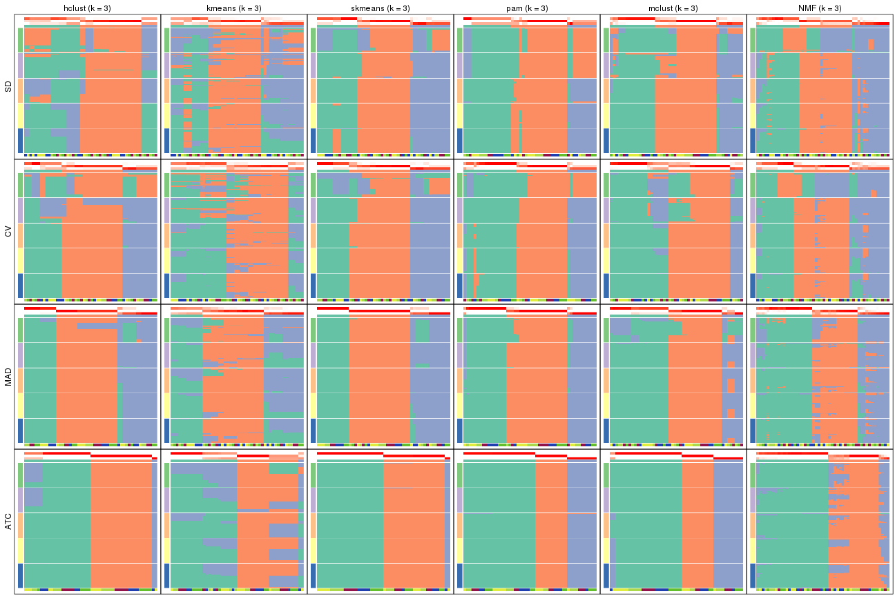
collect_plots(res_list, k = 4, fun = membership_heatmap, mc.cores = 4)
collect_plots(res_list, k = 5, fun = membership_heatmap, mc.cores = 4)
collect_plots(res_list, k = 6, fun = membership_heatmap, mc.cores = 4)
Signature heatmaps for all methods. (What is a signature heatmap?)
Note in following heatmaps, rows are scaled.
collect_plots(res_list, k = 2, fun = get_signatures, mc.cores = 4)
collect_plots(res_list, k = 3, fun = get_signatures, mc.cores = 4)
collect_plots(res_list, k = 4, fun = get_signatures, mc.cores = 4)
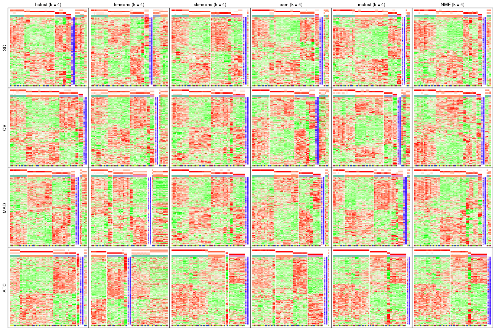
collect_plots(res_list, k = 5, fun = get_signatures, mc.cores = 4)
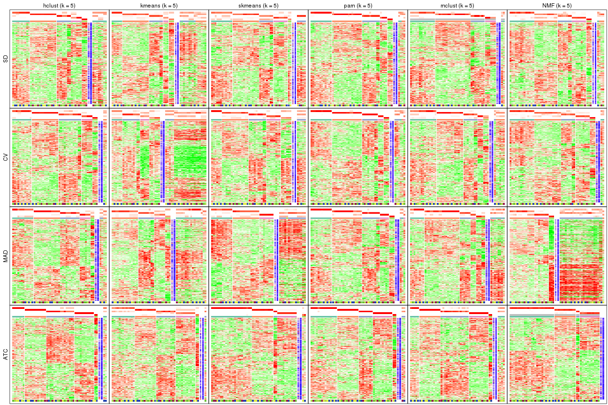
collect_plots(res_list, k = 6, fun = get_signatures, mc.cores = 4)
The statistics used for measuring the stability of consensus partitioning. (How are they defined?)
get_stats(res_list, k = 2)
#> k 1-PAC mean_silhouette concordance area_increased Rand Jaccard
#> SD:NMF 2 0.458 0.745 0.885 0.481 0.556 0.556
#> CV:NMF 2 0.540 0.703 0.884 0.503 0.493 0.493
#> MAD:NMF 2 1.000 0.963 0.983 0.508 0.493 0.493
#> ATC:NMF 2 1.000 1.000 1.000 0.507 0.493 0.493
#> SD:skmeans 2 0.530 0.729 0.862 0.509 0.493 0.493
#> CV:skmeans 2 0.530 0.883 0.928 0.508 0.493 0.493
#> MAD:skmeans 2 1.000 1.000 1.000 0.507 0.493 0.493
#> ATC:skmeans 2 1.000 1.000 1.000 0.507 0.493 0.493
#> SD:mclust 2 0.250 0.615 0.798 0.409 0.571 0.571
#> CV:mclust 2 0.451 0.852 0.906 0.497 0.493 0.493
#> MAD:mclust 2 0.726 0.954 0.970 0.493 0.493 0.493
#> ATC:mclust 2 0.617 0.893 0.915 0.472 0.490 0.490
#> SD:kmeans 2 0.262 0.690 0.802 0.452 0.491 0.491
#> CV:kmeans 2 0.355 0.847 0.861 0.461 0.493 0.493
#> MAD:kmeans 2 1.000 0.970 0.974 0.501 0.493 0.493
#> ATC:kmeans 2 1.000 1.000 1.000 0.507 0.493 0.493
#> SD:pam 2 0.798 0.854 0.945 0.505 0.497 0.497
#> CV:pam 2 0.735 0.844 0.936 0.509 0.493 0.493
#> MAD:pam 2 0.629 0.750 0.904 0.504 0.497 0.497
#> ATC:pam 2 1.000 1.000 1.000 0.507 0.493 0.493
#> SD:hclust 2 0.271 0.655 0.843 0.318 0.726 0.726
#> CV:hclust 2 0.420 0.902 0.867 0.447 0.493 0.493
#> MAD:hclust 2 1.000 0.981 0.982 0.501 0.493 0.493
#> ATC:hclust 2 1.000 1.000 1.000 0.507 0.493 0.493
get_stats(res_list, k = 3)
#> k 1-PAC mean_silhouette concordance area_increased Rand Jaccard
#> SD:NMF 3 0.514 0.745 0.841 0.3745 0.771 0.589
#> CV:NMF 3 0.530 0.711 0.827 0.3112 0.750 0.535
#> MAD:NMF 3 0.689 0.792 0.900 0.2993 0.784 0.588
#> ATC:NMF 3 0.838 0.786 0.908 0.1625 0.938 0.874
#> SD:skmeans 3 0.615 0.828 0.887 0.3107 0.775 0.569
#> CV:skmeans 3 0.650 0.865 0.891 0.2984 0.853 0.702
#> MAD:skmeans 3 0.911 0.943 0.966 0.2869 0.853 0.702
#> ATC:skmeans 3 1.000 0.998 0.998 0.0813 0.959 0.917
#> SD:mclust 3 0.661 0.801 0.898 0.5571 0.685 0.492
#> CV:mclust 3 0.604 0.717 0.854 0.2356 0.910 0.818
#> MAD:mclust 3 0.678 0.878 0.915 0.2619 0.849 0.701
#> ATC:mclust 3 1.000 0.950 0.982 0.3243 0.814 0.649
#> SD:kmeans 3 0.435 0.632 0.736 0.3819 0.758 0.544
#> CV:kmeans 3 0.430 0.635 0.767 0.3235 0.897 0.791
#> MAD:kmeans 3 0.690 0.842 0.811 0.2543 0.853 0.702
#> ATC:kmeans 3 0.694 0.465 0.724 0.2434 0.959 0.917
#> SD:pam 3 0.660 0.730 0.837 0.2230 0.772 0.573
#> CV:pam 3 0.666 0.823 0.892 0.2616 0.770 0.567
#> MAD:pam 3 0.903 0.904 0.962 0.2930 0.767 0.569
#> ATC:pam 3 1.000 0.999 0.998 0.2124 0.892 0.781
#> SD:hclust 3 0.527 0.619 0.766 0.9033 0.495 0.377
#> CV:hclust 3 0.498 0.815 0.848 0.3788 0.851 0.699
#> MAD:hclust 3 0.911 0.898 0.943 0.2970 0.853 0.702
#> ATC:hclust 3 0.886 0.915 0.956 0.1365 0.959 0.917
get_stats(res_list, k = 4)
#> k 1-PAC mean_silhouette concordance area_increased Rand Jaccard
#> SD:NMF 4 0.718 0.796 0.894 0.0671 0.856 0.627
#> CV:NMF 4 0.698 0.788 0.895 0.0689 0.820 0.559
#> MAD:NMF 4 0.727 0.795 0.890 0.0649 0.912 0.758
#> ATC:NMF 4 0.868 0.949 0.947 0.1166 0.861 0.696
#> SD:skmeans 4 0.733 0.816 0.877 0.1265 0.897 0.696
#> CV:skmeans 4 0.783 0.849 0.889 0.1363 0.902 0.717
#> MAD:skmeans 4 0.840 0.909 0.943 0.1502 0.902 0.717
#> ATC:skmeans 4 0.878 0.982 0.944 0.1693 0.892 0.762
#> SD:mclust 4 0.672 0.794 0.896 0.0788 0.964 0.900
#> CV:mclust 4 0.623 0.719 0.855 0.1281 0.898 0.754
#> MAD:mclust 4 0.726 0.763 0.857 0.1453 0.904 0.739
#> ATC:mclust 4 1.000 1.000 1.000 0.0485 0.959 0.894
#> SD:kmeans 4 0.466 0.620 0.743 0.1283 0.952 0.857
#> CV:kmeans 4 0.440 0.632 0.733 0.1297 0.848 0.638
#> MAD:kmeans 4 0.591 0.604 0.634 0.1178 0.894 0.693
#> ATC:kmeans 4 0.714 0.426 0.588 0.1002 0.638 0.375
#> SD:pam 4 0.665 0.809 0.880 0.1062 0.913 0.764
#> CV:pam 4 0.661 0.765 0.856 0.0901 0.919 0.770
#> MAD:pam 4 0.881 0.841 0.935 0.1345 0.917 0.762
#> ATC:pam 4 1.000 0.964 0.982 0.2279 0.856 0.627
#> SD:hclust 4 0.584 0.690 0.826 0.1007 0.876 0.706
#> CV:hclust 4 0.738 0.833 0.879 0.1028 0.973 0.922
#> MAD:hclust 4 0.788 0.697 0.856 0.0911 0.951 0.858
#> ATC:hclust 4 0.901 0.856 0.929 0.1464 0.897 0.773
get_stats(res_list, k = 5)
#> k 1-PAC mean_silhouette concordance area_increased Rand Jaccard
#> SD:NMF 5 0.665 0.711 0.802 0.0841 0.812 0.481
#> CV:NMF 5 0.667 0.740 0.816 0.0876 0.837 0.533
#> MAD:NMF 5 0.625 0.477 0.722 0.0823 0.776 0.429
#> ATC:NMF 5 0.917 0.933 0.937 0.0193 1.000 1.000
#> SD:skmeans 5 0.759 0.656 0.735 0.0604 0.979 0.914
#> CV:skmeans 5 0.765 0.798 0.804 0.0598 0.971 0.882
#> MAD:skmeans 5 0.776 0.642 0.810 0.0574 0.989 0.954
#> ATC:skmeans 5 1.000 0.971 0.976 0.0660 0.962 0.891
#> SD:mclust 5 0.744 0.719 0.813 0.0891 0.925 0.781
#> CV:mclust 5 0.772 0.748 0.828 0.0845 0.951 0.849
#> MAD:mclust 5 0.757 0.740 0.867 0.0442 0.929 0.764
#> ATC:mclust 5 0.895 0.830 0.922 0.1527 0.889 0.678
#> SD:kmeans 5 0.514 0.505 0.705 0.0632 0.932 0.789
#> CV:kmeans 5 0.522 0.320 0.589 0.0844 0.856 0.576
#> MAD:kmeans 5 0.644 0.571 0.712 0.0737 0.809 0.428
#> ATC:kmeans 5 0.639 0.866 0.815 0.0715 0.873 0.630
#> SD:pam 5 0.849 0.836 0.931 0.0842 0.948 0.830
#> CV:pam 5 0.878 0.828 0.938 0.0609 0.968 0.887
#> MAD:pam 5 0.883 0.837 0.935 0.0434 0.968 0.880
#> ATC:pam 5 1.000 0.937 0.979 0.0246 0.958 0.832
#> SD:hclust 5 0.719 0.666 0.837 0.1133 0.866 0.624
#> CV:hclust 5 0.785 0.813 0.898 0.1144 0.917 0.738
#> MAD:hclust 5 0.789 0.757 0.861 0.0771 0.930 0.769
#> ATC:hclust 5 0.901 0.885 0.945 0.1628 0.855 0.597
get_stats(res_list, k = 6)
#> k 1-PAC mean_silhouette concordance area_increased Rand Jaccard
#> SD:NMF 6 0.690 0.776 0.821 0.0467 0.956 0.818
#> CV:NMF 6 0.715 0.808 0.840 0.0410 0.958 0.824
#> MAD:NMF 6 0.659 0.767 0.816 0.0442 0.896 0.637
#> ATC:NMF 6 0.796 0.889 0.898 0.0336 1.000 1.000
#> SD:skmeans 6 0.732 0.746 0.727 0.0443 0.925 0.687
#> CV:skmeans 6 0.730 0.540 0.625 0.0448 0.874 0.513
#> MAD:skmeans 6 0.747 0.762 0.732 0.0415 0.927 0.699
#> ATC:skmeans 6 0.981 0.929 0.980 0.0299 0.999 0.997
#> SD:mclust 6 0.691 0.759 0.830 0.0505 0.925 0.745
#> CV:mclust 6 0.760 0.785 0.846 0.0447 0.932 0.764
#> MAD:mclust 6 0.795 0.748 0.856 0.0430 0.983 0.936
#> ATC:mclust 6 0.874 0.803 0.897 0.0623 0.922 0.690
#> SD:kmeans 6 0.571 0.471 0.661 0.0525 0.887 0.642
#> CV:kmeans 6 0.602 0.524 0.672 0.0505 0.812 0.460
#> MAD:kmeans 6 0.631 0.525 0.686 0.0497 0.935 0.758
#> ATC:kmeans 6 0.665 0.787 0.798 0.0540 1.000 1.000
#> SD:pam 6 0.834 0.830 0.918 0.0646 0.942 0.780
#> CV:pam 6 0.830 0.850 0.902 0.0704 0.935 0.746
#> MAD:pam 6 0.875 0.811 0.921 0.0469 0.931 0.722
#> ATC:pam 6 0.936 0.894 0.941 0.0405 0.964 0.841
#> SD:hclust 6 0.747 0.721 0.860 0.0362 0.963 0.852
#> CV:hclust 6 0.761 0.761 0.860 0.0385 0.982 0.923
#> MAD:hclust 6 0.824 0.772 0.878 0.0303 0.943 0.773
#> ATC:hclust 6 0.982 0.952 0.974 0.0703 0.949 0.773
Following heatmap plots the partition for each combination of methods and the lightness correspond to the silhouette scores for samples in each method. On top the consensus subgroup is inferred from all methods by taking the mean silhouette scores as weight.
collect_stats(res_list, k = 2)
collect_stats(res_list, k = 3)
collect_stats(res_list, k = 4)
collect_stats(res_list, k = 5)
collect_stats(res_list, k = 6)
Collect partitions from all methods:
collect_classes(res_list, k = 2)
collect_classes(res_list, k = 3)
collect_classes(res_list, k = 4)
collect_classes(res_list, k = 5)
collect_classes(res_list, k = 6)
Overlap of top rows from different top-row methods:
top_rows_overlap(res_list, top_n = 1000, method = "euler")
top_rows_overlap(res_list, top_n = 2000, method = "euler")
top_rows_overlap(res_list, top_n = 3000, method = "euler")
top_rows_overlap(res_list, top_n = 4000, method = "euler")
top_rows_overlap(res_list, top_n = 5000, method = "euler")
Also visualize the correspondance of rankings between different top-row methods:
top_rows_overlap(res_list, top_n = 1000, method = "correspondance")
top_rows_overlap(res_list, top_n = 2000, method = "correspondance")
top_rows_overlap(res_list, top_n = 3000, method = "correspondance")
top_rows_overlap(res_list, top_n = 4000, method = "correspondance")
top_rows_overlap(res_list, top_n = 5000, method = "correspondance")
Heatmaps of the top rows:
top_rows_heatmap(res_list, top_n = 1000)
top_rows_heatmap(res_list, top_n = 2000)
top_rows_heatmap(res_list, top_n = 3000)
top_rows_heatmap(res_list, top_n = 4000)
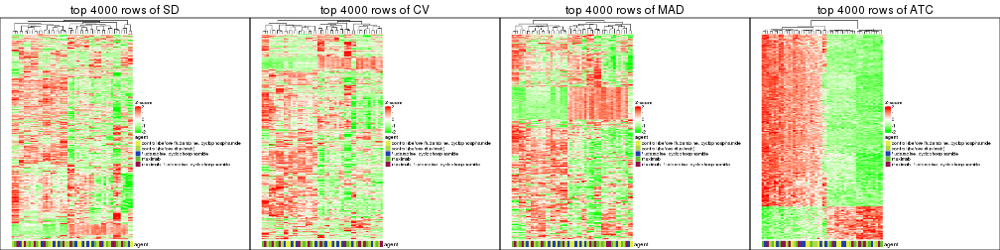
top_rows_heatmap(res_list, top_n = 5000)
Test correlation between subgroups and known annotations. If the known annotation is numeric, one-way ANOVA test is applied, and if the known annotation is discrete, chi-squared contingency table test is applied.
test_to_known_factors(res_list, k = 2)
#> n agent(p) k
#> SD:NMF 41 0.975 2
#> CV:NMF 38 0.979 2
#> MAD:NMF 50 0.975 2
#> ATC:NMF 50 0.975 2
#> SD:skmeans 50 0.975 2
#> CV:skmeans 50 0.975 2
#> MAD:skmeans 50 0.975 2
#> ATC:skmeans 50 0.975 2
#> SD:mclust 45 0.562 2
#> CV:mclust 50 0.975 2
#> MAD:mclust 50 0.975 2
#> ATC:mclust 50 1.000 2
#> SD:kmeans 46 1.000 2
#> CV:kmeans 50 0.975 2
#> MAD:kmeans 50 0.975 2
#> ATC:kmeans 50 0.975 2
#> SD:pam 46 0.993 2
#> CV:pam 45 0.970 2
#> MAD:pam 40 0.993 2
#> ATC:pam 50 0.975 2
#> SD:hclust 42 1.000 2
#> CV:hclust 50 0.975 2
#> MAD:hclust 50 0.975 2
#> ATC:hclust 50 0.975 2
test_to_known_factors(res_list, k = 3)
#> n agent(p) k
#> SD:NMF 47 0.996 3
#> CV:NMF 46 0.997 3
#> MAD:NMF 46 0.957 3
#> ATC:NMF 44 0.886 3
#> SD:skmeans 48 1.000 3
#> CV:skmeans 47 1.000 3
#> MAD:skmeans 50 0.999 3
#> ATC:skmeans 50 0.917 3
#> SD:mclust 48 0.761 3
#> CV:mclust 44 0.935 3
#> MAD:mclust 50 0.998 3
#> ATC:mclust 48 0.956 3
#> SD:kmeans 40 0.890 3
#> CV:kmeans 43 0.923 3
#> MAD:kmeans 50 0.999 3
#> ATC:kmeans 37 0.766 3
#> SD:pam 44 1.000 3
#> CV:pam 46 1.000 3
#> MAD:pam 48 0.999 3
#> ATC:pam 50 0.940 3
#> SD:hclust 27 0.698 3
#> CV:hclust 50 0.965 3
#> MAD:hclust 48 0.997 3
#> ATC:hclust 50 0.917 3
test_to_known_factors(res_list, k = 4)
#> n agent(p) k
#> SD:NMF 47 0.878 4
#> CV:NMF 46 0.917 4
#> MAD:NMF 47 0.920 4
#> ATC:NMF 50 0.931 4
#> SD:skmeans 49 1.000 4
#> CV:skmeans 50 1.000 4
#> MAD:skmeans 50 1.000 4
#> ATC:skmeans 50 0.931 4
#> SD:mclust 47 0.713 4
#> CV:mclust 44 0.734 4
#> MAD:mclust 48 0.995 4
#> ATC:mclust 50 0.931 4
#> SD:kmeans 40 0.998 4
#> CV:kmeans 44 0.997 4
#> MAD:kmeans 39 0.997 4
#> ATC:kmeans 25 0.606 4
#> SD:pam 46 0.996 4
#> CV:pam 43 0.924 4
#> MAD:pam 47 0.963 4
#> ATC:pam 49 0.878 4
#> SD:hclust 42 0.105 4
#> CV:hclust 50 0.813 4
#> MAD:hclust 45 0.993 4
#> ATC:hclust 48 0.726 4
test_to_known_factors(res_list, k = 5)
#> n agent(p) k
#> SD:NMF 46 0.992 5
#> CV:NMF 48 0.995 5
#> MAD:NMF 25 0.989 5
#> ATC:NMF 50 0.931 5
#> SD:skmeans 45 0.996 5
#> CV:skmeans 45 0.617 5
#> MAD:skmeans 35 0.996 5
#> ATC:skmeans 49 0.873 5
#> SD:mclust 48 0.889 5
#> CV:mclust 44 0.965 5
#> MAD:mclust 42 0.831 5
#> ATC:mclust 46 0.513 5
#> SD:kmeans 35 0.617 5
#> CV:kmeans 27 0.413 5
#> MAD:kmeans 33 0.956 5
#> ATC:kmeans 49 0.917 5
#> SD:pam 46 0.956 5
#> CV:pam 44 0.980 5
#> MAD:pam 47 0.938 5
#> ATC:pam 48 0.919 5
#> SD:hclust 42 0.172 5
#> CV:hclust 48 0.777 5
#> MAD:hclust 46 0.882 5
#> ATC:hclust 48 0.796 5
test_to_known_factors(res_list, k = 6)
#> n agent(p) k
#> SD:NMF 48 0.972 6
#> CV:NMF 50 0.990 6
#> MAD:NMF 49 0.971 6
#> ATC:NMF 50 0.931 6
#> SD:skmeans 46 0.572 6
#> CV:skmeans 30 0.617 6
#> MAD:skmeans 48 0.792 6
#> ATC:skmeans 47 0.898 6
#> SD:mclust 47 0.993 6
#> CV:mclust 47 0.993 6
#> MAD:mclust 44 0.978 6
#> ATC:mclust 45 0.713 6
#> SD:kmeans 33 0.443 6
#> CV:kmeans 34 0.592 6
#> MAD:kmeans 33 0.443 6
#> ATC:kmeans 49 0.917 6
#> SD:pam 48 0.999 6
#> CV:pam 47 0.995 6
#> MAD:pam 45 0.997 6
#> ATC:pam 48 0.970 6
#> SD:hclust 45 0.253 6
#> CV:hclust 46 0.426 6
#> MAD:hclust 43 0.422 6
#> ATC:hclust 48 0.806 6
The object with results only for a single top-value method and a single partition method can be extracted as:
res = res_list["SD", "hclust"]
# you can also extract it by
# res = res_list["SD:hclust"]
A summary of res and all the functions that can be applied to it:
res
#> A 'ConsensusPartition' object with k = 2, 3, 4, 5, 6.
#> On a matrix with 51941 rows and 50 columns.
#> Top rows (1000, 2000, 3000, 4000, 5000) are extracted by 'SD' method.
#> Subgroups are detected by 'hclust' method.
#> Performed in total 1250 partitions by row resampling.
#> Best k for subgroups seems to be 5.
#>
#> Following methods can be applied to this 'ConsensusPartition' object:
#> [1] "cola_report" "collect_classes" "collect_plots"
#> [4] "collect_stats" "colnames" "compare_signatures"
#> [7] "consensus_heatmap" "dimension_reduction" "functional_enrichment"
#> [10] "get_anno_col" "get_anno" "get_classes"
#> [13] "get_consensus" "get_matrix" "get_membership"
#> [16] "get_param" "get_signatures" "get_stats"
#> [19] "is_best_k" "is_stable_k" "membership_heatmap"
#> [22] "ncol" "nrow" "plot_ecdf"
#> [25] "rownames" "select_partition_number" "show"
#> [28] "suggest_best_k" "test_to_known_factors"
collect_plots() function collects all the plots made from res for all k (number of partitions)
into one single page to provide an easy and fast comparison between different k.
collect_plots(res)
The plots are:
k and the heatmap of
predicted classes for each k.k.k.k.All the plots in panels can be made by individual functions and they are plotted later in this section.
select_partition_number() produces several plots showing different
statistics for choosing “optimized” k. There are following statistics:
k;k, the area increased is defined as \(A_k - A_{k-1}\).The detailed explanations of these statistics can be found in the cola vignette.
Generally speaking, lower PAC score, higher mean silhouette score or higher
concordance corresponds to better partition. Rand index and Jaccard index
measure how similar the current partition is compared to partition with k-1.
If they are too similar, we won't accept k is better than k-1.
select_partition_number(res)
The numeric values for all these statistics can be obtained by get_stats().
get_stats(res)
#> k 1-PAC mean_silhouette concordance area_increased Rand Jaccard
#> 2 2 0.271 0.655 0.843 0.3184 0.726 0.726
#> 3 3 0.527 0.619 0.766 0.9033 0.495 0.377
#> 4 4 0.584 0.690 0.826 0.1007 0.876 0.706
#> 5 5 0.719 0.666 0.837 0.1133 0.866 0.624
#> 6 6 0.747 0.721 0.860 0.0362 0.963 0.852
suggest_best_k() suggests the best \(k\) based on these statistics. The rules are as follows:
suggest_best_k(res)
#> [1] 5
Following shows the table of the partitions (You need to click the show/hide
code output link to see it). The membership matrix (columns with name p*)
is inferred by
clue::cl_consensus()
function with the SE method. Basically the value in the membership matrix
represents the probability to belong to a certain group. The finall class
label for an item is determined with the group with highest probability it
belongs to.
In get_classes() function, the entropy is calculated from the membership
matrix and the silhouette score is calculated from the consensus matrix.
cbind(get_classes(res, k = 2), get_membership(res, k = 2))
#> class entropy silhouette p1 p2
#> GSM388593 2 0.9954 -0.338 0.460 0.540
#> GSM388594 2 0.7674 0.662 0.224 0.776
#> GSM388595 2 0.7674 0.662 0.224 0.776
#> GSM388596 1 0.7299 0.803 0.796 0.204
#> GSM388597 1 0.9998 0.477 0.508 0.492
#> GSM388598 2 0.0000 0.803 0.000 1.000
#> GSM388599 2 0.0000 0.803 0.000 1.000
#> GSM388600 2 0.0000 0.803 0.000 1.000
#> GSM388601 2 0.7299 0.661 0.204 0.796
#> GSM388602 2 0.0376 0.802 0.004 0.996
#> GSM388623 2 0.5629 0.721 0.132 0.868
#> GSM388624 2 0.8955 0.331 0.312 0.688
#> GSM388625 2 0.5737 0.726 0.136 0.864
#> GSM388626 2 0.5737 0.726 0.136 0.864
#> GSM388627 2 0.5842 0.721 0.140 0.860
#> GSM388628 2 0.0000 0.803 0.000 1.000
#> GSM388629 2 0.0376 0.802 0.004 0.996
#> GSM388630 2 0.0000 0.803 0.000 1.000
#> GSM388631 1 0.7299 0.803 0.796 0.204
#> GSM388632 2 0.5178 0.737 0.116 0.884
#> GSM388603 2 0.9954 -0.338 0.460 0.540
#> GSM388604 2 0.7674 0.662 0.224 0.776
#> GSM388605 2 0.7674 0.662 0.224 0.776
#> GSM388606 1 0.7299 0.803 0.796 0.204
#> GSM388607 1 0.9998 0.477 0.508 0.492
#> GSM388608 2 0.0000 0.803 0.000 1.000
#> GSM388609 2 0.0000 0.803 0.000 1.000
#> GSM388610 2 0.0000 0.803 0.000 1.000
#> GSM388611 2 0.7299 0.661 0.204 0.796
#> GSM388612 2 0.0376 0.802 0.004 0.996
#> GSM388583 2 0.9954 -0.338 0.460 0.540
#> GSM388584 2 0.7674 0.662 0.224 0.776
#> GSM388585 2 0.7674 0.662 0.224 0.776
#> GSM388586 1 0.7299 0.803 0.796 0.204
#> GSM388587 1 0.9998 0.477 0.508 0.492
#> GSM388588 2 0.0000 0.803 0.000 1.000
#> GSM388589 2 0.0000 0.803 0.000 1.000
#> GSM388590 2 0.0000 0.803 0.000 1.000
#> GSM388591 2 0.7299 0.661 0.204 0.796
#> GSM388592 2 0.0376 0.802 0.004 0.996
#> GSM388613 2 0.5629 0.721 0.132 0.868
#> GSM388614 2 0.8955 0.331 0.312 0.688
#> GSM388615 2 0.5737 0.726 0.136 0.864
#> GSM388616 2 0.5737 0.726 0.136 0.864
#> GSM388617 2 0.5842 0.721 0.140 0.860
#> GSM388618 2 0.0000 0.803 0.000 1.000
#> GSM388619 2 0.0376 0.802 0.004 0.996
#> GSM388620 2 0.0000 0.803 0.000 1.000
#> GSM388621 1 0.7299 0.803 0.796 0.204
#> GSM388622 2 0.5178 0.737 0.116 0.884
cbind(get_classes(res, k = 3), get_membership(res, k = 3))
#> class entropy silhouette p1 p2 p3
#> GSM388593 1 0.4068 0.3841 0.864 0.016 0.120
#> GSM388594 3 0.6680 0.9824 0.484 0.008 0.508
#> GSM388595 3 0.6299 0.9826 0.476 0.000 0.524
#> GSM388596 1 0.6816 0.3855 0.516 0.012 0.472
#> GSM388597 1 0.4953 0.4073 0.808 0.016 0.176
#> GSM388598 2 0.1163 0.9147 0.028 0.972 0.000
#> GSM388599 2 0.1031 0.9170 0.024 0.976 0.000
#> GSM388600 2 0.0237 0.9211 0.004 0.996 0.000
#> GSM388601 2 0.4555 0.7503 0.000 0.800 0.200
#> GSM388602 2 0.0000 0.9208 0.000 1.000 0.000
#> GSM388623 1 0.8334 0.0497 0.616 0.248 0.136
#> GSM388624 1 0.4504 0.2371 0.804 0.196 0.000
#> GSM388625 1 0.8263 0.0947 0.612 0.268 0.120
#> GSM388626 1 0.8263 0.0947 0.612 0.268 0.120
#> GSM388627 1 0.8266 0.0602 0.624 0.240 0.136
#> GSM388628 2 0.0424 0.9218 0.008 0.992 0.000
#> GSM388629 2 0.0475 0.9207 0.004 0.992 0.004
#> GSM388630 2 0.0424 0.9218 0.008 0.992 0.000
#> GSM388631 1 0.6816 0.3855 0.516 0.012 0.472
#> GSM388632 2 0.5760 0.4391 0.328 0.672 0.000
#> GSM388603 1 0.4068 0.3841 0.864 0.016 0.120
#> GSM388604 3 0.6680 0.9824 0.484 0.008 0.508
#> GSM388605 3 0.6299 0.9826 0.476 0.000 0.524
#> GSM388606 1 0.6816 0.3855 0.516 0.012 0.472
#> GSM388607 1 0.4953 0.4073 0.808 0.016 0.176
#> GSM388608 2 0.1163 0.9147 0.028 0.972 0.000
#> GSM388609 2 0.1031 0.9170 0.024 0.976 0.000
#> GSM388610 2 0.0237 0.9211 0.004 0.996 0.000
#> GSM388611 2 0.4555 0.7503 0.000 0.800 0.200
#> GSM388612 2 0.0000 0.9208 0.000 1.000 0.000
#> GSM388583 1 0.4068 0.3841 0.864 0.016 0.120
#> GSM388584 3 0.6680 0.9824 0.484 0.008 0.508
#> GSM388585 3 0.6299 0.9826 0.476 0.000 0.524
#> GSM388586 1 0.6816 0.3855 0.516 0.012 0.472
#> GSM388587 1 0.4953 0.4073 0.808 0.016 0.176
#> GSM388588 2 0.1163 0.9147 0.028 0.972 0.000
#> GSM388589 2 0.1031 0.9170 0.024 0.976 0.000
#> GSM388590 2 0.0237 0.9211 0.004 0.996 0.000
#> GSM388591 2 0.4555 0.7503 0.000 0.800 0.200
#> GSM388592 2 0.0000 0.9208 0.000 1.000 0.000
#> GSM388613 1 0.8334 0.0497 0.616 0.248 0.136
#> GSM388614 1 0.4504 0.2371 0.804 0.196 0.000
#> GSM388615 1 0.8263 0.0947 0.612 0.268 0.120
#> GSM388616 1 0.8263 0.0947 0.612 0.268 0.120
#> GSM388617 1 0.8266 0.0602 0.624 0.240 0.136
#> GSM388618 2 0.0424 0.9218 0.008 0.992 0.000
#> GSM388619 2 0.0475 0.9207 0.004 0.992 0.004
#> GSM388620 2 0.0424 0.9218 0.008 0.992 0.000
#> GSM388621 1 0.6816 0.3855 0.516 0.012 0.472
#> GSM388622 2 0.5760 0.4391 0.328 0.672 0.000
cbind(get_classes(res, k = 4), get_membership(res, k = 4))
#> class entropy silhouette p1 p2 p3 p4
#> GSM388593 1 0.5158 -0.0386 0.524 0.004 0.472 0.000
#> GSM388594 1 0.4804 0.1521 0.616 0.000 0.000 0.384
#> GSM388595 4 0.0000 1.0000 0.000 0.000 0.000 1.000
#> GSM388596 3 0.0000 0.8013 0.000 0.000 1.000 0.000
#> GSM388597 3 0.4454 0.5727 0.308 0.000 0.692 0.000
#> GSM388598 2 0.1109 0.8932 0.004 0.968 0.028 0.000
#> GSM388599 2 0.0895 0.8963 0.004 0.976 0.020 0.000
#> GSM388600 2 0.0000 0.8984 0.000 1.000 0.000 0.000
#> GSM388601 2 0.5250 0.6829 0.196 0.736 0.000 0.068
#> GSM388602 2 0.1940 0.8683 0.076 0.924 0.000 0.000
#> GSM388623 1 0.4867 0.6698 0.736 0.232 0.032 0.000
#> GSM388624 1 0.6360 0.5870 0.656 0.164 0.180 0.000
#> GSM388625 1 0.3942 0.6937 0.764 0.236 0.000 0.000
#> GSM388626 1 0.3942 0.6937 0.764 0.236 0.000 0.000
#> GSM388627 1 0.3688 0.6941 0.792 0.208 0.000 0.000
#> GSM388628 2 0.0188 0.8995 0.000 0.996 0.004 0.000
#> GSM388629 2 0.0188 0.8990 0.004 0.996 0.000 0.000
#> GSM388630 2 0.0188 0.8995 0.000 0.996 0.004 0.000
#> GSM388631 3 0.0469 0.7982 0.012 0.000 0.988 0.000
#> GSM388632 2 0.4713 0.3340 0.360 0.640 0.000 0.000
#> GSM388603 1 0.5158 -0.0386 0.524 0.004 0.472 0.000
#> GSM388604 1 0.4804 0.1521 0.616 0.000 0.000 0.384
#> GSM388605 4 0.0000 1.0000 0.000 0.000 0.000 1.000
#> GSM388606 3 0.0000 0.8013 0.000 0.000 1.000 0.000
#> GSM388607 3 0.4454 0.5727 0.308 0.000 0.692 0.000
#> GSM388608 2 0.1109 0.8932 0.004 0.968 0.028 0.000
#> GSM388609 2 0.0895 0.8963 0.004 0.976 0.020 0.000
#> GSM388610 2 0.0000 0.8984 0.000 1.000 0.000 0.000
#> GSM388611 2 0.5250 0.6829 0.196 0.736 0.000 0.068
#> GSM388612 2 0.1940 0.8683 0.076 0.924 0.000 0.000
#> GSM388583 1 0.5158 -0.0386 0.524 0.004 0.472 0.000
#> GSM388584 1 0.4804 0.1521 0.616 0.000 0.000 0.384
#> GSM388585 4 0.0000 1.0000 0.000 0.000 0.000 1.000
#> GSM388586 3 0.0000 0.8013 0.000 0.000 1.000 0.000
#> GSM388587 3 0.4454 0.5727 0.308 0.000 0.692 0.000
#> GSM388588 2 0.1109 0.8932 0.004 0.968 0.028 0.000
#> GSM388589 2 0.0895 0.8963 0.004 0.976 0.020 0.000
#> GSM388590 2 0.0000 0.8984 0.000 1.000 0.000 0.000
#> GSM388591 2 0.5250 0.6829 0.196 0.736 0.000 0.068
#> GSM388592 2 0.1940 0.8683 0.076 0.924 0.000 0.000
#> GSM388613 1 0.4867 0.6698 0.736 0.232 0.032 0.000
#> GSM388614 1 0.6360 0.5870 0.656 0.164 0.180 0.000
#> GSM388615 1 0.3942 0.6937 0.764 0.236 0.000 0.000
#> GSM388616 1 0.3942 0.6937 0.764 0.236 0.000 0.000
#> GSM388617 1 0.3688 0.6941 0.792 0.208 0.000 0.000
#> GSM388618 2 0.0188 0.8995 0.000 0.996 0.004 0.000
#> GSM388619 2 0.0188 0.8990 0.004 0.996 0.000 0.000
#> GSM388620 2 0.0188 0.8995 0.000 0.996 0.004 0.000
#> GSM388621 3 0.0469 0.7982 0.012 0.000 0.988 0.000
#> GSM388622 2 0.4713 0.3340 0.360 0.640 0.000 0.000
cbind(get_classes(res, k = 5), get_membership(res, k = 5))
#> class entropy silhouette p1 p2 p3 p4 p5
#> GSM388593 1 0.4448 -0.0551 0.516 0.004 0.480 0.000 0.000
#> GSM388594 1 0.6152 0.1953 0.524 0.000 0.000 0.152 0.324
#> GSM388595 5 0.0000 1.0000 0.000 0.000 0.000 0.000 1.000
#> GSM388596 3 0.0609 0.7924 0.000 0.020 0.980 0.000 0.000
#> GSM388597 3 0.4400 0.5761 0.308 0.020 0.672 0.000 0.000
#> GSM388598 2 0.0992 0.9660 0.024 0.968 0.008 0.000 0.000
#> GSM388599 2 0.0703 0.9713 0.024 0.976 0.000 0.000 0.000
#> GSM388600 2 0.0609 0.9678 0.020 0.980 0.000 0.000 0.000
#> GSM388601 4 0.0162 0.5453 0.000 0.004 0.000 0.996 0.000
#> GSM388602 4 0.6021 0.5684 0.128 0.348 0.000 0.524 0.000
#> GSM388623 1 0.3280 0.5901 0.812 0.176 0.012 0.000 0.000
#> GSM388624 1 0.3769 0.5389 0.788 0.032 0.180 0.000 0.000
#> GSM388625 1 0.1750 0.6508 0.936 0.036 0.000 0.028 0.000
#> GSM388626 1 0.1750 0.6508 0.936 0.036 0.000 0.028 0.000
#> GSM388627 1 0.0963 0.6491 0.964 0.036 0.000 0.000 0.000
#> GSM388628 2 0.0963 0.9725 0.036 0.964 0.000 0.000 0.000
#> GSM388629 2 0.0771 0.9658 0.020 0.976 0.000 0.004 0.000
#> GSM388630 2 0.0963 0.9725 0.036 0.964 0.000 0.000 0.000
#> GSM388631 3 0.0404 0.7828 0.012 0.000 0.988 0.000 0.000
#> GSM388632 1 0.5019 0.0786 0.532 0.436 0.000 0.032 0.000
#> GSM388603 1 0.4448 -0.0551 0.516 0.004 0.480 0.000 0.000
#> GSM388604 1 0.6152 0.1953 0.524 0.000 0.000 0.152 0.324
#> GSM388605 5 0.0000 1.0000 0.000 0.000 0.000 0.000 1.000
#> GSM388606 3 0.0609 0.7924 0.000 0.020 0.980 0.000 0.000
#> GSM388607 3 0.4400 0.5761 0.308 0.020 0.672 0.000 0.000
#> GSM388608 2 0.0992 0.9660 0.024 0.968 0.008 0.000 0.000
#> GSM388609 2 0.0703 0.9713 0.024 0.976 0.000 0.000 0.000
#> GSM388610 2 0.0609 0.9678 0.020 0.980 0.000 0.000 0.000
#> GSM388611 4 0.0162 0.5453 0.000 0.004 0.000 0.996 0.000
#> GSM388612 4 0.6021 0.5684 0.128 0.348 0.000 0.524 0.000
#> GSM388583 1 0.4448 -0.0551 0.516 0.004 0.480 0.000 0.000
#> GSM388584 1 0.6152 0.1953 0.524 0.000 0.000 0.152 0.324
#> GSM388585 5 0.0000 1.0000 0.000 0.000 0.000 0.000 1.000
#> GSM388586 3 0.0609 0.7924 0.000 0.020 0.980 0.000 0.000
#> GSM388587 3 0.4400 0.5761 0.308 0.020 0.672 0.000 0.000
#> GSM388588 2 0.0992 0.9660 0.024 0.968 0.008 0.000 0.000
#> GSM388589 2 0.0703 0.9713 0.024 0.976 0.000 0.000 0.000
#> GSM388590 2 0.0609 0.9678 0.020 0.980 0.000 0.000 0.000
#> GSM388591 4 0.0162 0.5453 0.000 0.004 0.000 0.996 0.000
#> GSM388592 4 0.6021 0.5684 0.128 0.348 0.000 0.524 0.000
#> GSM388613 1 0.3280 0.5901 0.812 0.176 0.012 0.000 0.000
#> GSM388614 1 0.3769 0.5389 0.788 0.032 0.180 0.000 0.000
#> GSM388615 1 0.1750 0.6508 0.936 0.036 0.000 0.028 0.000
#> GSM388616 1 0.1750 0.6508 0.936 0.036 0.000 0.028 0.000
#> GSM388617 1 0.0963 0.6491 0.964 0.036 0.000 0.000 0.000
#> GSM388618 2 0.0963 0.9725 0.036 0.964 0.000 0.000 0.000
#> GSM388619 2 0.0771 0.9658 0.020 0.976 0.000 0.004 0.000
#> GSM388620 2 0.0963 0.9725 0.036 0.964 0.000 0.000 0.000
#> GSM388621 3 0.0404 0.7828 0.012 0.000 0.988 0.000 0.000
#> GSM388622 1 0.5019 0.0786 0.532 0.436 0.000 0.032 0.000
cbind(get_classes(res, k = 6), get_membership(res, k = 6))
#> class entropy silhouette p1 p2 p3 p4 p5 p6
#> GSM388593 1 0.4529 0.0152 0.512 0.004 0.460 0.000 0 0.024
#> GSM388594 6 0.3083 1.0000 0.132 0.000 0.000 0.040 0 0.828
#> GSM388595 5 0.0000 1.0000 0.000 0.000 0.000 0.000 1 0.000
#> GSM388596 3 0.0146 0.7568 0.000 0.004 0.996 0.000 0 0.000
#> GSM388597 3 0.3584 0.5554 0.308 0.004 0.688 0.000 0 0.000
#> GSM388598 2 0.1341 0.9625 0.028 0.948 0.024 0.000 0 0.000
#> GSM388599 2 0.1168 0.9657 0.028 0.956 0.016 0.000 0 0.000
#> GSM388600 2 0.0363 0.9571 0.000 0.988 0.000 0.000 0 0.012
#> GSM388601 4 0.0000 0.5550 0.000 0.000 0.000 1.000 0 0.000
#> GSM388602 4 0.5515 0.6125 0.152 0.320 0.000 0.528 0 0.000
#> GSM388623 1 0.3027 0.5926 0.824 0.148 0.028 0.000 0 0.000
#> GSM388624 1 0.2772 0.5980 0.816 0.004 0.180 0.000 0 0.000
#> GSM388625 1 0.0858 0.6893 0.968 0.004 0.000 0.028 0 0.000
#> GSM388626 1 0.0858 0.6893 0.968 0.004 0.000 0.028 0 0.000
#> GSM388627 1 0.0146 0.6861 0.996 0.004 0.000 0.000 0 0.000
#> GSM388628 2 0.0547 0.9689 0.020 0.980 0.000 0.000 0 0.000
#> GSM388629 2 0.0508 0.9544 0.000 0.984 0.000 0.004 0 0.012
#> GSM388630 2 0.0632 0.9685 0.024 0.976 0.000 0.000 0 0.000
#> GSM388631 3 0.2558 0.6691 0.004 0.000 0.840 0.000 0 0.156
#> GSM388632 1 0.4461 0.1494 0.564 0.404 0.000 0.032 0 0.000
#> GSM388603 1 0.4529 0.0152 0.512 0.004 0.460 0.000 0 0.024
#> GSM388604 6 0.3083 1.0000 0.132 0.000 0.000 0.040 0 0.828
#> GSM388605 5 0.0000 1.0000 0.000 0.000 0.000 0.000 1 0.000
#> GSM388606 3 0.0146 0.7568 0.000 0.004 0.996 0.000 0 0.000
#> GSM388607 3 0.3584 0.5554 0.308 0.004 0.688 0.000 0 0.000
#> GSM388608 2 0.1341 0.9625 0.028 0.948 0.024 0.000 0 0.000
#> GSM388609 2 0.1168 0.9657 0.028 0.956 0.016 0.000 0 0.000
#> GSM388610 2 0.0363 0.9571 0.000 0.988 0.000 0.000 0 0.012
#> GSM388611 4 0.0000 0.5550 0.000 0.000 0.000 1.000 0 0.000
#> GSM388612 4 0.5515 0.6125 0.152 0.320 0.000 0.528 0 0.000
#> GSM388583 1 0.4529 0.0152 0.512 0.004 0.460 0.000 0 0.024
#> GSM388584 6 0.3083 1.0000 0.132 0.000 0.000 0.040 0 0.828
#> GSM388585 5 0.0000 1.0000 0.000 0.000 0.000 0.000 1 0.000
#> GSM388586 3 0.0146 0.7568 0.000 0.004 0.996 0.000 0 0.000
#> GSM388587 3 0.3584 0.5554 0.308 0.004 0.688 0.000 0 0.000
#> GSM388588 2 0.1341 0.9625 0.028 0.948 0.024 0.000 0 0.000
#> GSM388589 2 0.1168 0.9657 0.028 0.956 0.016 0.000 0 0.000
#> GSM388590 2 0.0363 0.9571 0.000 0.988 0.000 0.000 0 0.012
#> GSM388591 4 0.0000 0.5550 0.000 0.000 0.000 1.000 0 0.000
#> GSM388592 4 0.5515 0.6125 0.152 0.320 0.000 0.528 0 0.000
#> GSM388613 1 0.3027 0.5926 0.824 0.148 0.028 0.000 0 0.000
#> GSM388614 1 0.2772 0.5980 0.816 0.004 0.180 0.000 0 0.000
#> GSM388615 1 0.0858 0.6893 0.968 0.004 0.000 0.028 0 0.000
#> GSM388616 1 0.0858 0.6893 0.968 0.004 0.000 0.028 0 0.000
#> GSM388617 1 0.0146 0.6861 0.996 0.004 0.000 0.000 0 0.000
#> GSM388618 2 0.0547 0.9689 0.020 0.980 0.000 0.000 0 0.000
#> GSM388619 2 0.0508 0.9544 0.000 0.984 0.000 0.004 0 0.012
#> GSM388620 2 0.0632 0.9685 0.024 0.976 0.000 0.000 0 0.000
#> GSM388621 3 0.2558 0.6691 0.004 0.000 0.840 0.000 0 0.156
#> GSM388622 1 0.4461 0.1494 0.564 0.404 0.000 0.032 0 0.000
Heatmaps for the consensus matrix. It visualizes the probability of two samples to be in a same group.
consensus_heatmap(res, k = 2)

consensus_heatmap(res, k = 3)
consensus_heatmap(res, k = 4)
consensus_heatmap(res, k = 5)
consensus_heatmap(res, k = 6)
Heatmaps for the membership of samples in all partitions to see how consistent they are:
membership_heatmap(res, k = 2)
membership_heatmap(res, k = 3)
membership_heatmap(res, k = 4)
membership_heatmap(res, k = 5)
membership_heatmap(res, k = 6)
As soon as we have had the classes for columns, we can look for signatures which are significantly different between classes which can be candidate marks for certain classes. Following are the heatmaps for signatures.
Signature heatmaps where rows are scaled:
get_signatures(res, k = 2)
get_signatures(res, k = 3)

get_signatures(res, k = 4)
get_signatures(res, k = 5)
get_signatures(res, k = 6)

Signature heatmaps where rows are not scaled:
get_signatures(res, k = 2, scale_rows = FALSE)
get_signatures(res, k = 3, scale_rows = FALSE)
get_signatures(res, k = 4, scale_rows = FALSE)
get_signatures(res, k = 5, scale_rows = FALSE)
get_signatures(res, k = 6, scale_rows = FALSE)
Compare the overlap of signatures from different k:
compare_signatures(res)
get_signature() returns a data frame invisibly. TO get the list of signatures, the function
call should be assigned to a variable explicitly. In following code, if plot argument is set
to FALSE, no heatmap is plotted while only the differential analysis is performed.
# code only for demonstration
tb = get_signature(res, k = ..., plot = FALSE)
An example of the output of tb is:
#> which_row fdr mean_1 mean_2 scaled_mean_1 scaled_mean_2 km
#> 1 38 0.042760348 8.373488 9.131774 -0.5533452 0.5164555 1
#> 2 40 0.018707592 7.106213 8.469186 -0.6173731 0.5762149 1
#> 3 55 0.019134737 10.221463 11.207825 -0.6159697 0.5749050 1
#> 4 59 0.006059896 5.921854 7.869574 -0.6899429 0.6439467 1
#> 5 60 0.018055526 8.928898 10.211722 -0.6204761 0.5791110 1
#> 6 98 0.009384629 15.714769 14.887706 0.6635654 -0.6193277 2
...
The columns in tb are:
which_row: row indices corresponding to the input matrix.fdr: FDR for the differential test. mean_x: The mean value in group x.scaled_mean_x: The mean value in group x after rows are scaled.km: Row groups if k-means clustering is applied to rows.UMAP plot which shows how samples are separated.
dimension_reduction(res, k = 2, method = "UMAP")
dimension_reduction(res, k = 3, method = "UMAP")
dimension_reduction(res, k = 4, method = "UMAP")
dimension_reduction(res, k = 5, method = "UMAP")
dimension_reduction(res, k = 6, method = "UMAP")

Following heatmap shows how subgroups are split when increasing k:
collect_classes(res)
Test correlation between subgroups and known annotations. If the known annotation is numeric, one-way ANOVA test is applied, and if the known annotation is discrete, chi-squared contingency table test is applied.
test_to_known_factors(res)
#> n agent(p) k
#> SD:hclust 42 1.000 2
#> SD:hclust 27 0.698 3
#> SD:hclust 42 0.105 4
#> SD:hclust 42 0.172 5
#> SD:hclust 45 0.253 6
If matrix rows can be associated to genes, consider to use functional_enrichment(res,
...) to perform function enrichment for the signature genes. See this vignette for more detailed explanations.
The object with results only for a single top-value method and a single partition method can be extracted as:
res = res_list["SD", "kmeans"]
# you can also extract it by
# res = res_list["SD:kmeans"]
A summary of res and all the functions that can be applied to it:
res
#> A 'ConsensusPartition' object with k = 2, 3, 4, 5, 6.
#> On a matrix with 51941 rows and 50 columns.
#> Top rows (1000, 2000, 3000, 4000, 5000) are extracted by 'SD' method.
#> Subgroups are detected by 'kmeans' method.
#> Performed in total 1250 partitions by row resampling.
#> Best k for subgroups seems to be 2.
#>
#> Following methods can be applied to this 'ConsensusPartition' object:
#> [1] "cola_report" "collect_classes" "collect_plots"
#> [4] "collect_stats" "colnames" "compare_signatures"
#> [7] "consensus_heatmap" "dimension_reduction" "functional_enrichment"
#> [10] "get_anno_col" "get_anno" "get_classes"
#> [13] "get_consensus" "get_matrix" "get_membership"
#> [16] "get_param" "get_signatures" "get_stats"
#> [19] "is_best_k" "is_stable_k" "membership_heatmap"
#> [22] "ncol" "nrow" "plot_ecdf"
#> [25] "rownames" "select_partition_number" "show"
#> [28] "suggest_best_k" "test_to_known_factors"
collect_plots() function collects all the plots made from res for all k (number of partitions)
into one single page to provide an easy and fast comparison between different k.
collect_plots(res)
The plots are:
k and the heatmap of
predicted classes for each k.k.k.k.All the plots in panels can be made by individual functions and they are plotted later in this section.
select_partition_number() produces several plots showing different
statistics for choosing “optimized” k. There are following statistics:
k;k, the area increased is defined as \(A_k - A_{k-1}\).The detailed explanations of these statistics can be found in the cola vignette.
Generally speaking, lower PAC score, higher mean silhouette score or higher
concordance corresponds to better partition. Rand index and Jaccard index
measure how similar the current partition is compared to partition with k-1.
If they are too similar, we won't accept k is better than k-1.
select_partition_number(res)
The numeric values for all these statistics can be obtained by get_stats().
get_stats(res)
#> k 1-PAC mean_silhouette concordance area_increased Rand Jaccard
#> 2 2 0.262 0.690 0.802 0.4516 0.491 0.491
#> 3 3 0.435 0.632 0.736 0.3819 0.758 0.544
#> 4 4 0.466 0.620 0.743 0.1283 0.952 0.857
#> 5 5 0.514 0.505 0.705 0.0632 0.932 0.789
#> 6 6 0.571 0.471 0.661 0.0525 0.887 0.642
suggest_best_k() suggests the best \(k\) based on these statistics. The rules are as follows:
suggest_best_k(res)
#> [1] 2
Following shows the table of the partitions (You need to click the show/hide
code output link to see it). The membership matrix (columns with name p*)
is inferred by
clue::cl_consensus()
function with the SE method. Basically the value in the membership matrix
represents the probability to belong to a certain group. The finall class
label for an item is determined with the group with highest probability it
belongs to.
In get_classes() function, the entropy is calculated from the membership
matrix and the silhouette score is calculated from the consensus matrix.
cbind(get_classes(res, k = 2), get_membership(res, k = 2))
#> class entropy silhouette p1 p2
#> GSM388593 1 0.8813 0.731 0.700 0.300
#> GSM388594 1 0.2778 0.662 0.952 0.048
#> GSM388595 1 0.1633 0.643 0.976 0.024
#> GSM388596 1 0.9977 0.599 0.528 0.472
#> GSM388597 1 0.9977 0.599 0.528 0.472
#> GSM388598 2 0.0672 0.836 0.008 0.992
#> GSM388599 2 0.0376 0.840 0.004 0.996
#> GSM388600 2 0.0376 0.842 0.004 0.996
#> GSM388601 2 0.9710 0.425 0.400 0.600
#> GSM388602 2 0.5059 0.777 0.112 0.888
#> GSM388623 1 0.9996 0.585 0.512 0.488
#> GSM388624 1 0.8813 0.731 0.700 0.300
#> GSM388625 1 0.7602 0.727 0.780 0.220
#> GSM388626 1 0.7602 0.727 0.780 0.220
#> GSM388627 1 0.7602 0.727 0.780 0.220
#> GSM388628 2 0.0000 0.842 0.000 1.000
#> GSM388629 2 0.1633 0.834 0.024 0.976
#> GSM388630 2 0.0000 0.842 0.000 1.000
#> GSM388631 1 0.9815 0.650 0.580 0.420
#> GSM388632 2 0.6531 0.714 0.168 0.832
#> GSM388603 1 0.8763 0.732 0.704 0.296
#> GSM388604 1 0.3114 0.660 0.944 0.056
#> GSM388605 1 0.1633 0.643 0.976 0.024
#> GSM388606 1 0.9977 0.599 0.528 0.472
#> GSM388607 1 0.9977 0.599 0.528 0.472
#> GSM388608 2 0.0672 0.836 0.008 0.992
#> GSM388609 2 0.0376 0.840 0.004 0.996
#> GSM388610 2 0.0376 0.842 0.004 0.996
#> GSM388611 2 0.9710 0.425 0.400 0.600
#> GSM388612 2 0.5059 0.777 0.112 0.888
#> GSM388583 1 0.8813 0.731 0.700 0.300
#> GSM388584 1 0.3114 0.660 0.944 0.056
#> GSM388585 1 0.1633 0.643 0.976 0.024
#> GSM388586 1 0.9977 0.599 0.528 0.472
#> GSM388587 1 0.9977 0.599 0.528 0.472
#> GSM388588 2 0.0376 0.840 0.004 0.996
#> GSM388589 2 0.0376 0.840 0.004 0.996
#> GSM388590 2 0.0376 0.842 0.004 0.996
#> GSM388591 2 0.9710 0.425 0.400 0.600
#> GSM388592 2 0.4939 0.780 0.108 0.892
#> GSM388613 2 0.9977 -0.557 0.472 0.528
#> GSM388614 1 0.8813 0.731 0.700 0.300
#> GSM388615 1 0.7602 0.727 0.780 0.220
#> GSM388616 1 0.7602 0.727 0.780 0.220
#> GSM388617 1 0.7602 0.727 0.780 0.220
#> GSM388618 2 0.0000 0.842 0.000 1.000
#> GSM388619 2 0.1633 0.834 0.024 0.976
#> GSM388620 2 0.0376 0.842 0.004 0.996
#> GSM388621 1 0.9815 0.650 0.580 0.420
#> GSM388622 2 0.6531 0.714 0.168 0.832
cbind(get_classes(res, k = 3), get_membership(res, k = 3))
#> class entropy silhouette p1 p2 p3
#> GSM388593 3 0.4280 0.6135 0.124 0.020 0.856
#> GSM388594 1 0.5420 0.5657 0.752 0.008 0.240
#> GSM388595 1 0.4178 0.5523 0.828 0.000 0.172
#> GSM388596 3 0.4062 0.7529 0.000 0.164 0.836
#> GSM388597 3 0.4002 0.7548 0.000 0.160 0.840
#> GSM388598 2 0.1950 0.8870 0.008 0.952 0.040
#> GSM388599 2 0.1832 0.8885 0.008 0.956 0.036
#> GSM388600 2 0.2229 0.8833 0.044 0.944 0.012
#> GSM388601 1 0.8124 -0.0563 0.496 0.436 0.068
#> GSM388602 2 0.6726 0.7242 0.132 0.748 0.120
#> GSM388623 3 0.8250 0.6053 0.140 0.232 0.628
#> GSM388624 3 0.5060 0.5364 0.156 0.028 0.816
#> GSM388625 1 0.7996 0.4021 0.476 0.060 0.464
#> GSM388626 1 0.7993 0.4140 0.484 0.060 0.456
#> GSM388627 1 0.8065 0.4171 0.484 0.064 0.452
#> GSM388628 2 0.0829 0.8923 0.004 0.984 0.012
#> GSM388629 2 0.1950 0.8821 0.040 0.952 0.008
#> GSM388630 2 0.1453 0.8914 0.008 0.968 0.024
#> GSM388631 3 0.4033 0.7483 0.008 0.136 0.856
#> GSM388632 2 0.7319 0.6465 0.128 0.708 0.164
#> GSM388603 3 0.4280 0.6135 0.124 0.020 0.856
#> GSM388604 1 0.5420 0.5657 0.752 0.008 0.240
#> GSM388605 1 0.4178 0.5523 0.828 0.000 0.172
#> GSM388606 3 0.4062 0.7529 0.000 0.164 0.836
#> GSM388607 3 0.4002 0.7548 0.000 0.160 0.840
#> GSM388608 2 0.1950 0.8870 0.008 0.952 0.040
#> GSM388609 2 0.1832 0.8885 0.008 0.956 0.036
#> GSM388610 2 0.2229 0.8833 0.044 0.944 0.012
#> GSM388611 1 0.8124 -0.0563 0.496 0.436 0.068
#> GSM388612 2 0.6726 0.7242 0.132 0.748 0.120
#> GSM388583 3 0.4280 0.6135 0.124 0.020 0.856
#> GSM388584 1 0.5420 0.5657 0.752 0.008 0.240
#> GSM388585 1 0.4178 0.5523 0.828 0.000 0.172
#> GSM388586 3 0.4062 0.7529 0.000 0.164 0.836
#> GSM388587 3 0.4002 0.7548 0.000 0.160 0.840
#> GSM388588 2 0.1950 0.8870 0.008 0.952 0.040
#> GSM388589 2 0.1832 0.8885 0.008 0.956 0.036
#> GSM388590 2 0.2229 0.8833 0.044 0.944 0.012
#> GSM388591 1 0.8124 -0.0563 0.496 0.436 0.068
#> GSM388592 2 0.6726 0.7242 0.132 0.748 0.120
#> GSM388613 3 0.9054 0.4092 0.144 0.360 0.496
#> GSM388614 3 0.3713 0.6264 0.076 0.032 0.892
#> GSM388615 1 0.7993 0.4140 0.484 0.060 0.456
#> GSM388616 1 0.7993 0.4140 0.484 0.060 0.456
#> GSM388617 3 0.7920 -0.4696 0.472 0.056 0.472
#> GSM388618 2 0.0829 0.8923 0.004 0.984 0.012
#> GSM388619 2 0.1950 0.8821 0.040 0.952 0.008
#> GSM388620 2 0.1781 0.8900 0.020 0.960 0.020
#> GSM388621 3 0.4033 0.7483 0.008 0.136 0.856
#> GSM388622 2 0.7319 0.6465 0.128 0.708 0.164
cbind(get_classes(res, k = 4), get_membership(res, k = 4))
#> class entropy silhouette p1 p2 p3 p4
#> GSM388593 3 0.670 0.4689 0.264 0.004 0.612 0.120
#> GSM388594 1 0.164 0.6643 0.940 0.000 0.060 0.000
#> GSM388595 1 0.470 0.5335 0.780 0.000 0.056 0.164
#> GSM388596 3 0.297 0.7237 0.000 0.096 0.884 0.020
#> GSM388597 3 0.286 0.7279 0.012 0.092 0.892 0.004
#> GSM388598 2 0.395 0.7280 0.024 0.860 0.068 0.048
#> GSM388599 2 0.362 0.7351 0.020 0.876 0.056 0.048
#> GSM388600 2 0.296 0.7124 0.004 0.876 0.004 0.116
#> GSM388601 4 0.756 1.0000 0.272 0.212 0.004 0.512
#> GSM388602 2 0.671 0.1468 0.052 0.572 0.024 0.352
#> GSM388623 3 0.767 0.5488 0.164 0.188 0.600 0.048
#> GSM388624 3 0.733 0.3298 0.296 0.008 0.544 0.152
#> GSM388625 1 0.728 0.6878 0.620 0.032 0.144 0.204
#> GSM388626 1 0.725 0.6884 0.624 0.032 0.144 0.200
#> GSM388627 1 0.728 0.6878 0.620 0.032 0.144 0.204
#> GSM388628 2 0.136 0.7476 0.004 0.964 0.012 0.020
#> GSM388629 2 0.333 0.7088 0.004 0.872 0.024 0.100
#> GSM388630 2 0.226 0.7397 0.000 0.924 0.020 0.056
#> GSM388631 3 0.459 0.6897 0.028 0.048 0.824 0.100
#> GSM388632 2 0.777 0.0645 0.136 0.568 0.044 0.252
#> GSM388603 3 0.665 0.4803 0.256 0.004 0.620 0.120
#> GSM388604 1 0.164 0.6643 0.940 0.000 0.060 0.000
#> GSM388605 1 0.470 0.5335 0.780 0.000 0.056 0.164
#> GSM388606 3 0.297 0.7237 0.000 0.096 0.884 0.020
#> GSM388607 3 0.273 0.7276 0.008 0.092 0.896 0.004
#> GSM388608 2 0.395 0.7280 0.024 0.860 0.068 0.048
#> GSM388609 2 0.362 0.7351 0.020 0.876 0.056 0.048
#> GSM388610 2 0.296 0.7124 0.004 0.876 0.004 0.116
#> GSM388611 4 0.756 1.0000 0.272 0.212 0.004 0.512
#> GSM388612 2 0.671 0.1468 0.052 0.572 0.024 0.352
#> GSM388583 3 0.665 0.4803 0.256 0.004 0.620 0.120
#> GSM388584 1 0.156 0.6631 0.944 0.000 0.056 0.000
#> GSM388585 1 0.470 0.5335 0.780 0.000 0.056 0.164
#> GSM388586 3 0.297 0.7237 0.000 0.096 0.884 0.020
#> GSM388587 3 0.286 0.7279 0.012 0.092 0.892 0.004
#> GSM388588 2 0.395 0.7280 0.024 0.860 0.068 0.048
#> GSM388589 2 0.362 0.7351 0.020 0.876 0.056 0.048
#> GSM388590 2 0.296 0.7124 0.004 0.876 0.004 0.116
#> GSM388591 4 0.756 1.0000 0.272 0.212 0.004 0.512
#> GSM388592 2 0.671 0.1468 0.052 0.572 0.024 0.352
#> GSM388613 3 0.895 0.2409 0.164 0.376 0.376 0.084
#> GSM388614 3 0.647 0.5207 0.176 0.008 0.668 0.148
#> GSM388615 1 0.728 0.6878 0.620 0.032 0.144 0.204
#> GSM388616 1 0.725 0.6884 0.624 0.032 0.144 0.200
#> GSM388617 1 0.730 0.6811 0.616 0.028 0.164 0.192
#> GSM388618 2 0.136 0.7476 0.004 0.964 0.012 0.020
#> GSM388619 2 0.333 0.7088 0.004 0.872 0.024 0.100
#> GSM388620 2 0.249 0.7368 0.000 0.912 0.020 0.068
#> GSM388621 3 0.459 0.6897 0.028 0.048 0.824 0.100
#> GSM388622 2 0.777 0.0645 0.136 0.568 0.044 0.252
cbind(get_classes(res, k = 5), get_membership(res, k = 5))
#> class entropy silhouette p1 p2 p3 p4 p5
#> GSM388593 3 0.633 0.2273 0.448 0.004 0.456 0.060 0.032
#> GSM388594 1 0.609 -0.2885 0.524 0.000 0.020 0.076 0.380
#> GSM388595 5 0.428 0.9983 0.312 0.000 0.008 0.004 0.676
#> GSM388596 3 0.321 0.6988 0.008 0.064 0.876 0.036 0.016
#> GSM388597 3 0.328 0.6995 0.048 0.072 0.864 0.016 0.000
#> GSM388598 2 0.410 0.6601 0.008 0.828 0.084 0.040 0.040
#> GSM388599 2 0.392 0.6612 0.004 0.836 0.080 0.040 0.040
#> GSM388600 2 0.464 0.5930 0.020 0.780 0.004 0.116 0.080
#> GSM388601 4 0.720 1.0000 0.196 0.148 0.000 0.556 0.100
#> GSM388602 2 0.744 -0.0197 0.140 0.460 0.020 0.344 0.036
#> GSM388623 3 0.804 0.3533 0.264 0.196 0.456 0.048 0.036
#> GSM388624 1 0.502 -0.2061 0.544 0.004 0.432 0.012 0.008
#> GSM388625 1 0.125 0.6661 0.956 0.008 0.036 0.000 0.000
#> GSM388626 1 0.141 0.6656 0.952 0.008 0.036 0.000 0.004
#> GSM388627 1 0.133 0.6649 0.952 0.008 0.040 0.000 0.000
#> GSM388628 2 0.186 0.6720 0.004 0.940 0.028 0.016 0.012
#> GSM388629 2 0.460 0.5965 0.016 0.784 0.016 0.136 0.048
#> GSM388630 2 0.318 0.6610 0.008 0.876 0.040 0.064 0.012
#> GSM388631 3 0.534 0.6385 0.036 0.036 0.760 0.064 0.104
#> GSM388632 2 0.719 0.0565 0.316 0.488 0.012 0.156 0.028
#> GSM388603 3 0.633 0.2553 0.436 0.004 0.468 0.060 0.032
#> GSM388604 1 0.609 -0.2885 0.524 0.000 0.020 0.076 0.380
#> GSM388605 5 0.438 0.9966 0.312 0.000 0.012 0.004 0.672
#> GSM388606 3 0.321 0.6988 0.008 0.064 0.876 0.036 0.016
#> GSM388607 3 0.297 0.7009 0.032 0.072 0.880 0.016 0.000
#> GSM388608 2 0.410 0.6601 0.008 0.828 0.084 0.040 0.040
#> GSM388609 2 0.392 0.6612 0.004 0.836 0.080 0.040 0.040
#> GSM388610 2 0.464 0.5930 0.020 0.780 0.004 0.116 0.080
#> GSM388611 4 0.720 1.0000 0.196 0.148 0.000 0.556 0.100
#> GSM388612 2 0.744 -0.0197 0.140 0.460 0.020 0.344 0.036
#> GSM388583 3 0.633 0.2553 0.436 0.004 0.468 0.060 0.032
#> GSM388584 1 0.609 -0.2885 0.524 0.000 0.020 0.076 0.380
#> GSM388585 5 0.428 0.9983 0.312 0.000 0.008 0.004 0.676
#> GSM388586 3 0.321 0.6988 0.008 0.064 0.876 0.036 0.016
#> GSM388587 3 0.328 0.6995 0.048 0.072 0.864 0.016 0.000
#> GSM388588 2 0.410 0.6601 0.008 0.828 0.084 0.040 0.040
#> GSM388589 2 0.392 0.6612 0.004 0.836 0.080 0.040 0.040
#> GSM388590 2 0.464 0.5930 0.020 0.780 0.004 0.116 0.080
#> GSM388591 4 0.720 1.0000 0.196 0.148 0.000 0.556 0.100
#> GSM388592 2 0.744 -0.0197 0.140 0.460 0.020 0.344 0.036
#> GSM388613 2 0.854 -0.1883 0.292 0.316 0.296 0.052 0.044
#> GSM388614 3 0.502 0.3192 0.432 0.004 0.544 0.012 0.008
#> GSM388615 1 0.125 0.6661 0.956 0.008 0.036 0.000 0.000
#> GSM388616 1 0.141 0.6656 0.952 0.008 0.036 0.000 0.004
#> GSM388617 1 0.133 0.6649 0.952 0.008 0.040 0.000 0.000
#> GSM388618 2 0.186 0.6720 0.004 0.940 0.028 0.016 0.012
#> GSM388619 2 0.460 0.5965 0.016 0.784 0.016 0.136 0.048
#> GSM388620 2 0.318 0.6610 0.008 0.876 0.040 0.064 0.012
#> GSM388621 3 0.534 0.6385 0.036 0.036 0.760 0.064 0.104
#> GSM388622 2 0.719 0.0565 0.316 0.488 0.012 0.156 0.028
cbind(get_classes(res, k = 6), get_membership(res, k = 6))
#> class entropy silhouette p1 p2 p3 p4 p5 p6
#> GSM388593 1 0.6363 0.265 0.388 0.000 0.328 0.000 0.012 NA
#> GSM388594 1 0.6422 -0.359 0.444 0.000 0.004 0.064 0.392 NA
#> GSM388595 5 0.3370 0.991 0.212 0.000 0.004 0.012 0.772 NA
#> GSM388596 3 0.2926 0.798 0.004 0.060 0.880 0.020 0.024 NA
#> GSM388597 3 0.3469 0.783 0.032 0.064 0.844 0.000 0.008 NA
#> GSM388598 2 0.3467 0.621 0.000 0.852 0.040 0.048 0.032 NA
#> GSM388599 2 0.2530 0.622 0.000 0.900 0.028 0.028 0.036 NA
#> GSM388600 2 0.5422 0.476 0.004 0.592 0.004 0.104 0.004 NA
#> GSM388601 4 0.5592 0.565 0.180 0.072 0.000 0.652 0.096 NA
#> GSM388602 4 0.7792 0.511 0.180 0.324 0.004 0.352 0.020 NA
#> GSM388623 3 0.8559 0.227 0.244 0.240 0.348 0.040 0.056 NA
#> GSM388624 1 0.5937 0.354 0.540 0.000 0.296 0.008 0.012 NA
#> GSM388625 1 0.0622 0.522 0.980 0.008 0.012 0.000 0.000 NA
#> GSM388626 1 0.0862 0.521 0.972 0.008 0.016 0.000 0.000 NA
#> GSM388627 1 0.0976 0.519 0.968 0.008 0.016 0.000 0.000 NA
#> GSM388628 2 0.2998 0.620 0.008 0.872 0.000 0.028 0.032 NA
#> GSM388629 2 0.6679 0.450 0.008 0.576 0.012 0.148 0.076 NA
#> GSM388630 2 0.3651 0.596 0.008 0.832 0.008 0.060 0.012 NA
#> GSM388631 3 0.4793 0.654 0.016 0.012 0.732 0.032 0.024 NA
#> GSM388632 2 0.7283 -0.279 0.360 0.384 0.004 0.180 0.032 NA
#> GSM388603 1 0.6370 0.254 0.380 0.000 0.336 0.000 0.012 NA
#> GSM388604 1 0.6422 -0.359 0.444 0.000 0.004 0.064 0.392 NA
#> GSM388605 5 0.3945 0.983 0.212 0.000 0.004 0.028 0.748 NA
#> GSM388606 3 0.2926 0.798 0.004 0.060 0.880 0.020 0.024 NA
#> GSM388607 3 0.3235 0.787 0.020 0.064 0.856 0.000 0.008 NA
#> GSM388608 2 0.3467 0.621 0.000 0.852 0.040 0.048 0.032 NA
#> GSM388609 2 0.2530 0.622 0.000 0.900 0.028 0.028 0.036 NA
#> GSM388610 2 0.5422 0.476 0.004 0.592 0.004 0.104 0.004 NA
#> GSM388611 4 0.5592 0.565 0.180 0.072 0.000 0.652 0.096 NA
#> GSM388612 4 0.7792 0.511 0.180 0.324 0.004 0.352 0.020 NA
#> GSM388583 1 0.6370 0.254 0.380 0.000 0.336 0.000 0.012 NA
#> GSM388584 1 0.6422 -0.359 0.444 0.000 0.004 0.064 0.392 NA
#> GSM388585 5 0.3370 0.991 0.212 0.000 0.004 0.012 0.772 NA
#> GSM388586 3 0.2926 0.798 0.004 0.060 0.880 0.020 0.024 NA
#> GSM388587 3 0.3469 0.783 0.032 0.064 0.844 0.000 0.008 NA
#> GSM388588 2 0.3467 0.621 0.000 0.852 0.040 0.048 0.032 NA
#> GSM388589 2 0.2530 0.622 0.000 0.900 0.028 0.028 0.036 NA
#> GSM388590 2 0.5422 0.476 0.004 0.592 0.004 0.104 0.004 NA
#> GSM388591 4 0.5592 0.565 0.180 0.072 0.000 0.652 0.096 NA
#> GSM388592 4 0.7792 0.511 0.180 0.324 0.004 0.352 0.020 NA
#> GSM388613 2 0.8767 -0.192 0.252 0.320 0.240 0.044 0.072 NA
#> GSM388614 1 0.6138 0.146 0.428 0.000 0.408 0.008 0.012 NA
#> GSM388615 1 0.0622 0.522 0.980 0.008 0.012 0.000 0.000 NA
#> GSM388616 1 0.0862 0.521 0.972 0.008 0.016 0.000 0.000 NA
#> GSM388617 1 0.0976 0.519 0.968 0.008 0.016 0.000 0.000 NA
#> GSM388618 2 0.2998 0.620 0.008 0.872 0.000 0.028 0.032 NA
#> GSM388619 2 0.6679 0.450 0.008 0.576 0.012 0.148 0.076 NA
#> GSM388620 2 0.3709 0.593 0.008 0.828 0.008 0.064 0.012 NA
#> GSM388621 3 0.4793 0.654 0.016 0.012 0.732 0.032 0.024 NA
#> GSM388622 2 0.7283 -0.279 0.360 0.384 0.004 0.180 0.032 NA
Heatmaps for the consensus matrix. It visualizes the probability of two samples to be in a same group.
consensus_heatmap(res, k = 2)
consensus_heatmap(res, k = 3)

consensus_heatmap(res, k = 4)
consensus_heatmap(res, k = 5)
consensus_heatmap(res, k = 6)
Heatmaps for the membership of samples in all partitions to see how consistent they are:
membership_heatmap(res, k = 2)
membership_heatmap(res, k = 3)
membership_heatmap(res, k = 4)
membership_heatmap(res, k = 5)
membership_heatmap(res, k = 6)
As soon as we have had the classes for columns, we can look for signatures which are significantly different between classes which can be candidate marks for certain classes. Following are the heatmaps for signatures.
Signature heatmaps where rows are scaled:
get_signatures(res, k = 2)
get_signatures(res, k = 3)
get_signatures(res, k = 4)
get_signatures(res, k = 5)

get_signatures(res, k = 6)
Signature heatmaps where rows are not scaled:
get_signatures(res, k = 2, scale_rows = FALSE)
get_signatures(res, k = 3, scale_rows = FALSE)
get_signatures(res, k = 4, scale_rows = FALSE)
get_signatures(res, k = 5, scale_rows = FALSE)
get_signatures(res, k = 6, scale_rows = FALSE)
Compare the overlap of signatures from different k:
compare_signatures(res)
get_signature() returns a data frame invisibly. TO get the list of signatures, the function
call should be assigned to a variable explicitly. In following code, if plot argument is set
to FALSE, no heatmap is plotted while only the differential analysis is performed.
# code only for demonstration
tb = get_signature(res, k = ..., plot = FALSE)
An example of the output of tb is:
#> which_row fdr mean_1 mean_2 scaled_mean_1 scaled_mean_2 km
#> 1 38 0.042760348 8.373488 9.131774 -0.5533452 0.5164555 1
#> 2 40 0.018707592 7.106213 8.469186 -0.6173731 0.5762149 1
#> 3 55 0.019134737 10.221463 11.207825 -0.6159697 0.5749050 1
#> 4 59 0.006059896 5.921854 7.869574 -0.6899429 0.6439467 1
#> 5 60 0.018055526 8.928898 10.211722 -0.6204761 0.5791110 1
#> 6 98 0.009384629 15.714769 14.887706 0.6635654 -0.6193277 2
...
The columns in tb are:
which_row: row indices corresponding to the input matrix.fdr: FDR for the differential test. mean_x: The mean value in group x.scaled_mean_x: The mean value in group x after rows are scaled.km: Row groups if k-means clustering is applied to rows.UMAP plot which shows how samples are separated.
dimension_reduction(res, k = 2, method = "UMAP")
dimension_reduction(res, k = 3, method = "UMAP")
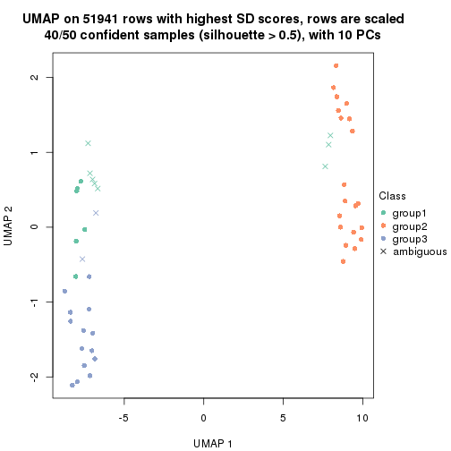
dimension_reduction(res, k = 4, method = "UMAP")
dimension_reduction(res, k = 5, method = "UMAP")
dimension_reduction(res, k = 6, method = "UMAP")
Following heatmap shows how subgroups are split when increasing k:
collect_classes(res)
Test correlation between subgroups and known annotations. If the known annotation is numeric, one-way ANOVA test is applied, and if the known annotation is discrete, chi-squared contingency table test is applied.
test_to_known_factors(res)
#> n agent(p) k
#> SD:kmeans 46 1.000 2
#> SD:kmeans 40 0.890 3
#> SD:kmeans 40 0.998 4
#> SD:kmeans 35 0.617 5
#> SD:kmeans 33 0.443 6
If matrix rows can be associated to genes, consider to use functional_enrichment(res,
...) to perform function enrichment for the signature genes. See this vignette for more detailed explanations.
The object with results only for a single top-value method and a single partition method can be extracted as:
res = res_list["SD", "skmeans"]
# you can also extract it by
# res = res_list["SD:skmeans"]
A summary of res and all the functions that can be applied to it:
res
#> A 'ConsensusPartition' object with k = 2, 3, 4, 5, 6.
#> On a matrix with 51941 rows and 50 columns.
#> Top rows (1000, 2000, 3000, 4000, 5000) are extracted by 'SD' method.
#> Subgroups are detected by 'skmeans' method.
#> Performed in total 1250 partitions by row resampling.
#> Best k for subgroups seems to be 3.
#>
#> Following methods can be applied to this 'ConsensusPartition' object:
#> [1] "cola_report" "collect_classes" "collect_plots"
#> [4] "collect_stats" "colnames" "compare_signatures"
#> [7] "consensus_heatmap" "dimension_reduction" "functional_enrichment"
#> [10] "get_anno_col" "get_anno" "get_classes"
#> [13] "get_consensus" "get_matrix" "get_membership"
#> [16] "get_param" "get_signatures" "get_stats"
#> [19] "is_best_k" "is_stable_k" "membership_heatmap"
#> [22] "ncol" "nrow" "plot_ecdf"
#> [25] "rownames" "select_partition_number" "show"
#> [28] "suggest_best_k" "test_to_known_factors"
collect_plots() function collects all the plots made from res for all k (number of partitions)
into one single page to provide an easy and fast comparison between different k.
collect_plots(res)
The plots are:
k and the heatmap of
predicted classes for each k.k.k.k.All the plots in panels can be made by individual functions and they are plotted later in this section.
select_partition_number() produces several plots showing different
statistics for choosing “optimized” k. There are following statistics:
k;k, the area increased is defined as \(A_k - A_{k-1}\).The detailed explanations of these statistics can be found in the cola vignette.
Generally speaking, lower PAC score, higher mean silhouette score or higher
concordance corresponds to better partition. Rand index and Jaccard index
measure how similar the current partition is compared to partition with k-1.
If they are too similar, we won't accept k is better than k-1.
select_partition_number(res)
The numeric values for all these statistics can be obtained by get_stats().
get_stats(res)
#> k 1-PAC mean_silhouette concordance area_increased Rand Jaccard
#> 2 2 0.530 0.729 0.862 0.5086 0.493 0.493
#> 3 3 0.615 0.828 0.887 0.3107 0.775 0.569
#> 4 4 0.733 0.816 0.877 0.1265 0.897 0.696
#> 5 5 0.759 0.656 0.735 0.0604 0.979 0.914
#> 6 6 0.732 0.746 0.727 0.0443 0.925 0.687
suggest_best_k() suggests the best \(k\) based on these statistics. The rules are as follows:
suggest_best_k(res)
#> [1] 3
Following shows the table of the partitions (You need to click the show/hide
code output link to see it). The membership matrix (columns with name p*)
is inferred by
clue::cl_consensus()
function with the SE method. Basically the value in the membership matrix
represents the probability to belong to a certain group. The finall class
label for an item is determined with the group with highest probability it
belongs to.
In get_classes() function, the entropy is calculated from the membership
matrix and the silhouette score is calculated from the consensus matrix.
cbind(get_classes(res, k = 2), get_membership(res, k = 2))
#> class entropy silhouette p1 p2
#> GSM388593 1 0.9608 0.803 0.616 0.384
#> GSM388594 1 0.9608 0.803 0.616 0.384
#> GSM388595 1 0.9608 0.803 0.616 0.384
#> GSM388596 1 0.0000 0.595 1.000 0.000
#> GSM388597 1 0.0000 0.595 1.000 0.000
#> GSM388598 2 0.9608 0.814 0.384 0.616
#> GSM388599 2 0.9608 0.814 0.384 0.616
#> GSM388600 2 0.9608 0.814 0.384 0.616
#> GSM388601 2 0.0000 0.576 0.000 1.000
#> GSM388602 2 0.0938 0.588 0.012 0.988
#> GSM388623 1 0.0000 0.595 1.000 0.000
#> GSM388624 1 0.9608 0.803 0.616 0.384
#> GSM388625 1 0.9608 0.803 0.616 0.384
#> GSM388626 1 0.9608 0.803 0.616 0.384
#> GSM388627 1 0.9608 0.803 0.616 0.384
#> GSM388628 2 0.9608 0.814 0.384 0.616
#> GSM388629 2 0.9608 0.814 0.384 0.616
#> GSM388630 2 0.9608 0.814 0.384 0.616
#> GSM388631 1 0.0376 0.598 0.996 0.004
#> GSM388632 2 0.0000 0.576 0.000 1.000
#> GSM388603 1 0.9608 0.803 0.616 0.384
#> GSM388604 1 0.9608 0.803 0.616 0.384
#> GSM388605 1 0.9608 0.803 0.616 0.384
#> GSM388606 1 0.0000 0.595 1.000 0.000
#> GSM388607 1 0.0000 0.595 1.000 0.000
#> GSM388608 2 0.9608 0.814 0.384 0.616
#> GSM388609 2 0.9608 0.814 0.384 0.616
#> GSM388610 2 0.9608 0.814 0.384 0.616
#> GSM388611 2 0.0000 0.576 0.000 1.000
#> GSM388612 2 0.0938 0.588 0.012 0.988
#> GSM388583 1 0.9608 0.803 0.616 0.384
#> GSM388584 1 0.9608 0.803 0.616 0.384
#> GSM388585 1 0.9608 0.803 0.616 0.384
#> GSM388586 1 0.0000 0.595 1.000 0.000
#> GSM388587 1 0.0000 0.595 1.000 0.000
#> GSM388588 2 0.9608 0.814 0.384 0.616
#> GSM388589 2 0.9608 0.814 0.384 0.616
#> GSM388590 2 0.9608 0.814 0.384 0.616
#> GSM388591 2 0.0000 0.576 0.000 1.000
#> GSM388592 2 0.0938 0.588 0.012 0.988
#> GSM388613 1 0.0672 0.584 0.992 0.008
#> GSM388614 1 0.9608 0.803 0.616 0.384
#> GSM388615 1 0.9608 0.803 0.616 0.384
#> GSM388616 1 0.9608 0.803 0.616 0.384
#> GSM388617 1 0.9608 0.803 0.616 0.384
#> GSM388618 2 0.9608 0.814 0.384 0.616
#> GSM388619 2 0.9608 0.814 0.384 0.616
#> GSM388620 2 0.9608 0.814 0.384 0.616
#> GSM388621 1 0.0376 0.598 0.996 0.004
#> GSM388622 2 0.0000 0.576 0.000 1.000
cbind(get_classes(res, k = 3), get_membership(res, k = 3))
#> class entropy silhouette p1 p2 p3
#> GSM388593 3 0.0592 0.812 0.012 0.000 0.988
#> GSM388594 1 0.0237 0.856 0.996 0.000 0.004
#> GSM388595 1 0.0237 0.856 0.996 0.000 0.004
#> GSM388596 3 0.4121 0.863 0.000 0.168 0.832
#> GSM388597 3 0.4121 0.863 0.000 0.168 0.832
#> GSM388598 2 0.0592 0.909 0.000 0.988 0.012
#> GSM388599 2 0.0424 0.911 0.000 0.992 0.008
#> GSM388600 2 0.0000 0.913 0.000 1.000 0.000
#> GSM388601 1 0.4842 0.691 0.776 0.224 0.000
#> GSM388602 2 0.4531 0.782 0.008 0.824 0.168
#> GSM388623 3 0.4755 0.851 0.008 0.184 0.808
#> GSM388624 3 0.1643 0.792 0.044 0.000 0.956
#> GSM388625 1 0.4121 0.841 0.832 0.000 0.168
#> GSM388626 1 0.4121 0.841 0.832 0.000 0.168
#> GSM388627 1 0.4121 0.841 0.832 0.000 0.168
#> GSM388628 2 0.0000 0.913 0.000 1.000 0.000
#> GSM388629 2 0.1031 0.902 0.024 0.976 0.000
#> GSM388630 2 0.0000 0.913 0.000 1.000 0.000
#> GSM388631 3 0.4121 0.783 0.168 0.000 0.832
#> GSM388632 2 0.8495 0.462 0.220 0.612 0.168
#> GSM388603 3 0.0592 0.812 0.012 0.000 0.988
#> GSM388604 1 0.0237 0.856 0.996 0.000 0.004
#> GSM388605 1 0.0237 0.856 0.996 0.000 0.004
#> GSM388606 3 0.4121 0.863 0.000 0.168 0.832
#> GSM388607 3 0.4121 0.863 0.000 0.168 0.832
#> GSM388608 2 0.0592 0.909 0.000 0.988 0.012
#> GSM388609 2 0.0424 0.911 0.000 0.992 0.008
#> GSM388610 2 0.0000 0.913 0.000 1.000 0.000
#> GSM388611 1 0.4842 0.691 0.776 0.224 0.000
#> GSM388612 2 0.4531 0.782 0.008 0.824 0.168
#> GSM388583 3 0.0592 0.812 0.012 0.000 0.988
#> GSM388584 1 0.0237 0.856 0.996 0.000 0.004
#> GSM388585 1 0.0237 0.856 0.996 0.000 0.004
#> GSM388586 3 0.4121 0.863 0.000 0.168 0.832
#> GSM388587 3 0.4121 0.863 0.000 0.168 0.832
#> GSM388588 2 0.0592 0.909 0.000 0.988 0.012
#> GSM388589 2 0.0424 0.911 0.000 0.992 0.008
#> GSM388590 2 0.0000 0.913 0.000 1.000 0.000
#> GSM388591 1 0.4842 0.691 0.776 0.224 0.000
#> GSM388592 2 0.4531 0.782 0.008 0.824 0.168
#> GSM388613 3 0.8784 0.584 0.136 0.316 0.548
#> GSM388614 3 0.1643 0.792 0.044 0.000 0.956
#> GSM388615 1 0.4121 0.841 0.832 0.000 0.168
#> GSM388616 1 0.4121 0.841 0.832 0.000 0.168
#> GSM388617 1 0.4178 0.839 0.828 0.000 0.172
#> GSM388618 2 0.0000 0.913 0.000 1.000 0.000
#> GSM388619 2 0.1031 0.902 0.024 0.976 0.000
#> GSM388620 2 0.0000 0.913 0.000 1.000 0.000
#> GSM388621 3 0.4121 0.783 0.168 0.000 0.832
#> GSM388622 2 0.8495 0.462 0.220 0.612 0.168
cbind(get_classes(res, k = 4), get_membership(res, k = 4))
#> class entropy silhouette p1 p2 p3 p4
#> GSM388593 3 0.4307 0.779 0.024 0.000 0.784 0.192
#> GSM388594 1 0.0000 0.779 1.000 0.000 0.000 0.000
#> GSM388595 1 0.0469 0.774 0.988 0.000 0.000 0.012
#> GSM388596 3 0.0336 0.855 0.000 0.008 0.992 0.000
#> GSM388597 3 0.0469 0.855 0.000 0.012 0.988 0.000
#> GSM388598 2 0.1902 0.902 0.000 0.932 0.064 0.004
#> GSM388599 2 0.1661 0.909 0.000 0.944 0.052 0.004
#> GSM388600 2 0.2408 0.906 0.000 0.896 0.000 0.104
#> GSM388601 4 0.4382 0.700 0.296 0.000 0.000 0.704
#> GSM388602 4 0.2589 0.801 0.000 0.116 0.000 0.884
#> GSM388623 3 0.3237 0.806 0.040 0.064 0.888 0.008
#> GSM388624 3 0.4868 0.721 0.024 0.000 0.720 0.256
#> GSM388625 1 0.4608 0.767 0.692 0.000 0.004 0.304
#> GSM388626 1 0.4608 0.767 0.692 0.000 0.004 0.304
#> GSM388627 1 0.4608 0.767 0.692 0.000 0.004 0.304
#> GSM388628 2 0.1211 0.920 0.000 0.960 0.000 0.040
#> GSM388629 2 0.1940 0.915 0.000 0.924 0.000 0.076
#> GSM388630 2 0.2988 0.906 0.000 0.876 0.012 0.112
#> GSM388631 3 0.1637 0.836 0.060 0.000 0.940 0.000
#> GSM388632 4 0.1396 0.765 0.004 0.032 0.004 0.960
#> GSM388603 3 0.4307 0.779 0.024 0.000 0.784 0.192
#> GSM388604 1 0.0000 0.779 1.000 0.000 0.000 0.000
#> GSM388605 1 0.0469 0.774 0.988 0.000 0.000 0.012
#> GSM388606 3 0.0336 0.855 0.000 0.008 0.992 0.000
#> GSM388607 3 0.0469 0.855 0.000 0.012 0.988 0.000
#> GSM388608 2 0.1902 0.902 0.000 0.932 0.064 0.004
#> GSM388609 2 0.1661 0.909 0.000 0.944 0.052 0.004
#> GSM388610 2 0.2408 0.906 0.000 0.896 0.000 0.104
#> GSM388611 4 0.4382 0.700 0.296 0.000 0.000 0.704
#> GSM388612 4 0.2589 0.801 0.000 0.116 0.000 0.884
#> GSM388583 3 0.4307 0.779 0.024 0.000 0.784 0.192
#> GSM388584 1 0.0000 0.779 1.000 0.000 0.000 0.000
#> GSM388585 1 0.0469 0.774 0.988 0.000 0.000 0.012
#> GSM388586 3 0.0336 0.855 0.000 0.008 0.992 0.000
#> GSM388587 3 0.0469 0.855 0.000 0.012 0.988 0.000
#> GSM388588 2 0.1824 0.904 0.000 0.936 0.060 0.004
#> GSM388589 2 0.1661 0.909 0.000 0.944 0.052 0.004
#> GSM388590 2 0.2408 0.906 0.000 0.896 0.000 0.104
#> GSM388591 4 0.4382 0.700 0.296 0.000 0.000 0.704
#> GSM388592 4 0.2589 0.801 0.000 0.116 0.000 0.884
#> GSM388613 3 0.7099 0.493 0.168 0.212 0.608 0.012
#> GSM388614 3 0.4642 0.741 0.020 0.000 0.740 0.240
#> GSM388615 1 0.4608 0.767 0.692 0.000 0.004 0.304
#> GSM388616 1 0.4608 0.767 0.692 0.000 0.004 0.304
#> GSM388617 1 0.4428 0.768 0.720 0.000 0.004 0.276
#> GSM388618 2 0.1211 0.920 0.000 0.960 0.000 0.040
#> GSM388619 2 0.1940 0.915 0.000 0.924 0.000 0.076
#> GSM388620 2 0.3161 0.898 0.000 0.864 0.012 0.124
#> GSM388621 3 0.1637 0.836 0.060 0.000 0.940 0.000
#> GSM388622 4 0.1396 0.765 0.004 0.032 0.004 0.960
cbind(get_classes(res, k = 5), get_membership(res, k = 5))
#> class entropy silhouette p1 p2 p3 p4 p5
#> GSM388593 3 0.1904 0.470 0.020 0.000 0.936 0.028 0.016
#> GSM388594 1 0.3790 0.550 0.744 0.000 0.004 0.004 0.248
#> GSM388595 1 0.4400 0.520 0.672 0.000 0.000 0.020 0.308
#> GSM388596 3 0.4242 0.536 0.000 0.000 0.572 0.000 0.428
#> GSM388597 3 0.4235 0.537 0.000 0.000 0.576 0.000 0.424
#> GSM388598 2 0.3861 0.783 0.000 0.712 0.000 0.004 0.284
#> GSM388599 2 0.4326 0.788 0.000 0.708 0.000 0.028 0.264
#> GSM388600 2 0.1282 0.832 0.000 0.952 0.000 0.044 0.004
#> GSM388601 4 0.3675 0.778 0.216 0.004 0.000 0.772 0.008
#> GSM388602 4 0.1502 0.823 0.000 0.056 0.000 0.940 0.004
#> GSM388623 5 0.6730 0.665 0.200 0.024 0.208 0.004 0.564
#> GSM388624 3 0.2419 0.412 0.028 0.000 0.904 0.064 0.004
#> GSM388625 1 0.5674 0.505 0.604 0.000 0.304 0.084 0.008
#> GSM388626 1 0.5674 0.505 0.604 0.000 0.304 0.084 0.008
#> GSM388627 1 0.5745 0.504 0.608 0.000 0.288 0.096 0.008
#> GSM388628 2 0.0865 0.841 0.000 0.972 0.000 0.024 0.004
#> GSM388629 2 0.2124 0.826 0.000 0.916 0.000 0.056 0.028
#> GSM388630 2 0.2790 0.835 0.000 0.880 0.000 0.068 0.052
#> GSM388631 3 0.4708 0.542 0.040 0.000 0.668 0.000 0.292
#> GSM388632 4 0.3118 0.774 0.008 0.016 0.112 0.860 0.004
#> GSM388603 3 0.1806 0.474 0.016 0.000 0.940 0.028 0.016
#> GSM388604 1 0.3790 0.550 0.744 0.000 0.004 0.004 0.248
#> GSM388605 1 0.4400 0.520 0.672 0.000 0.000 0.020 0.308
#> GSM388606 3 0.4242 0.536 0.000 0.000 0.572 0.000 0.428
#> GSM388607 3 0.4235 0.537 0.000 0.000 0.576 0.000 0.424
#> GSM388608 2 0.3861 0.783 0.000 0.712 0.000 0.004 0.284
#> GSM388609 2 0.4326 0.788 0.000 0.708 0.000 0.028 0.264
#> GSM388610 2 0.1282 0.832 0.000 0.952 0.000 0.044 0.004
#> GSM388611 4 0.3675 0.778 0.216 0.004 0.000 0.772 0.008
#> GSM388612 4 0.1502 0.823 0.000 0.056 0.000 0.940 0.004
#> GSM388583 3 0.1806 0.474 0.016 0.000 0.940 0.028 0.016
#> GSM388584 1 0.3790 0.550 0.744 0.000 0.004 0.004 0.248
#> GSM388585 1 0.4400 0.520 0.672 0.000 0.000 0.020 0.308
#> GSM388586 3 0.4242 0.536 0.000 0.000 0.572 0.000 0.428
#> GSM388587 3 0.4235 0.537 0.000 0.000 0.576 0.000 0.424
#> GSM388588 2 0.3861 0.783 0.000 0.712 0.000 0.004 0.284
#> GSM388589 2 0.4326 0.788 0.000 0.708 0.000 0.028 0.264
#> GSM388590 2 0.1282 0.832 0.000 0.952 0.000 0.044 0.004
#> GSM388591 4 0.3675 0.778 0.216 0.004 0.000 0.772 0.008
#> GSM388592 4 0.1502 0.823 0.000 0.056 0.000 0.940 0.004
#> GSM388613 5 0.5922 0.732 0.260 0.032 0.068 0.004 0.636
#> GSM388614 3 0.1717 0.456 0.004 0.000 0.936 0.052 0.008
#> GSM388615 1 0.5657 0.507 0.608 0.000 0.300 0.084 0.008
#> GSM388616 1 0.5674 0.505 0.604 0.000 0.304 0.084 0.008
#> GSM388617 1 0.5296 0.507 0.636 0.000 0.280 0.084 0.000
#> GSM388618 2 0.0865 0.841 0.000 0.972 0.000 0.024 0.004
#> GSM388619 2 0.2124 0.826 0.000 0.916 0.000 0.056 0.028
#> GSM388620 2 0.2914 0.832 0.000 0.872 0.000 0.076 0.052
#> GSM388621 3 0.4708 0.542 0.040 0.000 0.668 0.000 0.292
#> GSM388622 4 0.3118 0.774 0.008 0.016 0.112 0.860 0.004
cbind(get_classes(res, k = 6), get_membership(res, k = 6))
#> class entropy silhouette p1 p2 p3 p4 p5 p6
#> GSM388593 6 0.6184 0.892 0.200 0.000 0.244 0.012 0.012 0.532
#> GSM388594 5 0.3043 0.920 0.200 0.000 0.000 0.000 0.792 0.008
#> GSM388595 5 0.1958 0.923 0.100 0.000 0.000 0.004 0.896 0.000
#> GSM388596 3 0.0363 0.734 0.000 0.000 0.988 0.000 0.000 0.012
#> GSM388597 3 0.0692 0.734 0.000 0.000 0.976 0.000 0.004 0.020
#> GSM388598 2 0.6571 0.657 0.000 0.476 0.036 0.052 0.068 0.368
#> GSM388599 2 0.6344 0.673 0.000 0.528 0.024 0.060 0.064 0.324
#> GSM388600 2 0.2251 0.692 0.000 0.904 0.000 0.052 0.008 0.036
#> GSM388601 4 0.4592 0.686 0.032 0.000 0.000 0.680 0.260 0.028
#> GSM388602 4 0.2487 0.772 0.032 0.092 0.000 0.876 0.000 0.000
#> GSM388623 3 0.6866 0.422 0.156 0.056 0.592 0.024 0.028 0.144
#> GSM388624 6 0.6223 0.811 0.324 0.000 0.240 0.004 0.004 0.428
#> GSM388625 1 0.0146 0.979 0.996 0.000 0.000 0.004 0.000 0.000
#> GSM388626 1 0.0260 0.975 0.992 0.000 0.000 0.000 0.000 0.008
#> GSM388627 1 0.0622 0.971 0.980 0.000 0.000 0.012 0.000 0.008
#> GSM388628 2 0.2133 0.729 0.000 0.912 0.000 0.020 0.016 0.052
#> GSM388629 2 0.4330 0.662 0.000 0.760 0.000 0.076 0.028 0.136
#> GSM388630 2 0.3320 0.709 0.000 0.840 0.012 0.092 0.004 0.052
#> GSM388631 3 0.4018 0.184 0.000 0.000 0.656 0.000 0.020 0.324
#> GSM388632 4 0.3219 0.718 0.192 0.000 0.000 0.792 0.004 0.012
#> GSM388603 6 0.6184 0.892 0.200 0.000 0.244 0.012 0.012 0.532
#> GSM388604 5 0.3043 0.920 0.200 0.000 0.000 0.000 0.792 0.008
#> GSM388605 5 0.1958 0.923 0.100 0.000 0.000 0.004 0.896 0.000
#> GSM388606 3 0.0363 0.734 0.000 0.000 0.988 0.000 0.000 0.012
#> GSM388607 3 0.0692 0.734 0.000 0.000 0.976 0.000 0.004 0.020
#> GSM388608 2 0.6571 0.657 0.000 0.476 0.036 0.052 0.068 0.368
#> GSM388609 2 0.6344 0.673 0.000 0.528 0.024 0.060 0.064 0.324
#> GSM388610 2 0.2251 0.692 0.000 0.904 0.000 0.052 0.008 0.036
#> GSM388611 4 0.4592 0.686 0.032 0.000 0.000 0.680 0.260 0.028
#> GSM388612 4 0.2487 0.772 0.032 0.092 0.000 0.876 0.000 0.000
#> GSM388583 6 0.6184 0.892 0.200 0.000 0.244 0.012 0.012 0.532
#> GSM388584 5 0.3043 0.920 0.200 0.000 0.000 0.000 0.792 0.008
#> GSM388585 5 0.1958 0.923 0.100 0.000 0.000 0.004 0.896 0.000
#> GSM388586 3 0.0363 0.734 0.000 0.000 0.988 0.000 0.000 0.012
#> GSM388587 3 0.0692 0.734 0.000 0.000 0.976 0.000 0.004 0.020
#> GSM388588 2 0.6571 0.657 0.000 0.476 0.036 0.052 0.068 0.368
#> GSM388589 2 0.6344 0.673 0.000 0.528 0.024 0.060 0.064 0.324
#> GSM388590 2 0.2251 0.692 0.000 0.904 0.000 0.052 0.008 0.036
#> GSM388591 4 0.4592 0.686 0.032 0.000 0.000 0.680 0.260 0.028
#> GSM388592 4 0.2487 0.772 0.032 0.092 0.000 0.876 0.000 0.000
#> GSM388613 3 0.7349 0.359 0.188 0.056 0.520 0.024 0.028 0.184
#> GSM388614 6 0.6248 0.830 0.284 0.000 0.276 0.004 0.004 0.432
#> GSM388615 1 0.0146 0.979 0.996 0.000 0.000 0.004 0.000 0.000
#> GSM388616 1 0.0260 0.975 0.992 0.000 0.000 0.000 0.000 0.008
#> GSM388617 1 0.1409 0.944 0.948 0.000 0.000 0.012 0.032 0.008
#> GSM388618 2 0.2133 0.729 0.000 0.912 0.000 0.020 0.016 0.052
#> GSM388619 2 0.4330 0.662 0.000 0.760 0.000 0.076 0.028 0.136
#> GSM388620 2 0.3401 0.702 0.000 0.832 0.012 0.104 0.004 0.048
#> GSM388621 3 0.4018 0.184 0.000 0.000 0.656 0.000 0.020 0.324
#> GSM388622 4 0.3219 0.718 0.192 0.000 0.000 0.792 0.004 0.012
Heatmaps for the consensus matrix. It visualizes the probability of two samples to be in a same group.
consensus_heatmap(res, k = 2)
consensus_heatmap(res, k = 3)
consensus_heatmap(res, k = 4)
consensus_heatmap(res, k = 5)
consensus_heatmap(res, k = 6)
Heatmaps for the membership of samples in all partitions to see how consistent they are:
membership_heatmap(res, k = 2)
membership_heatmap(res, k = 3)
membership_heatmap(res, k = 4)
membership_heatmap(res, k = 5)
membership_heatmap(res, k = 6)
As soon as we have had the classes for columns, we can look for signatures which are significantly different between classes which can be candidate marks for certain classes. Following are the heatmaps for signatures.
Signature heatmaps where rows are scaled:
get_signatures(res, k = 2)
get_signatures(res, k = 3)
get_signatures(res, k = 4)
get_signatures(res, k = 5)
get_signatures(res, k = 6)
Signature heatmaps where rows are not scaled:
get_signatures(res, k = 2, scale_rows = FALSE)
get_signatures(res, k = 3, scale_rows = FALSE)
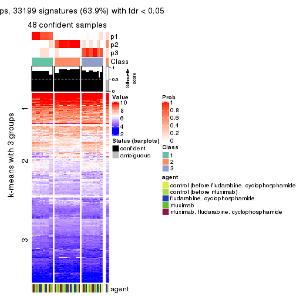
get_signatures(res, k = 4, scale_rows = FALSE)
get_signatures(res, k = 5, scale_rows = FALSE)
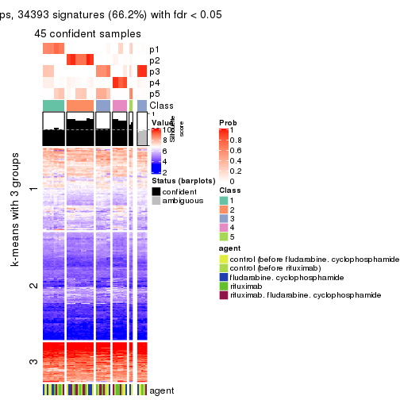
get_signatures(res, k = 6, scale_rows = FALSE)
Compare the overlap of signatures from different k:
compare_signatures(res)
get_signature() returns a data frame invisibly. TO get the list of signatures, the function
call should be assigned to a variable explicitly. In following code, if plot argument is set
to FALSE, no heatmap is plotted while only the differential analysis is performed.
# code only for demonstration
tb = get_signature(res, k = ..., plot = FALSE)
An example of the output of tb is:
#> which_row fdr mean_1 mean_2 scaled_mean_1 scaled_mean_2 km
#> 1 38 0.042760348 8.373488 9.131774 -0.5533452 0.5164555 1
#> 2 40 0.018707592 7.106213 8.469186 -0.6173731 0.5762149 1
#> 3 55 0.019134737 10.221463 11.207825 -0.6159697 0.5749050 1
#> 4 59 0.006059896 5.921854 7.869574 -0.6899429 0.6439467 1
#> 5 60 0.018055526 8.928898 10.211722 -0.6204761 0.5791110 1
#> 6 98 0.009384629 15.714769 14.887706 0.6635654 -0.6193277 2
...
The columns in tb are:
which_row: row indices corresponding to the input matrix.fdr: FDR for the differential test. mean_x: The mean value in group x.scaled_mean_x: The mean value in group x after rows are scaled.km: Row groups if k-means clustering is applied to rows.UMAP plot which shows how samples are separated.
dimension_reduction(res, k = 2, method = "UMAP")
dimension_reduction(res, k = 3, method = "UMAP")
dimension_reduction(res, k = 4, method = "UMAP")
dimension_reduction(res, k = 5, method = "UMAP")
dimension_reduction(res, k = 6, method = "UMAP")
Following heatmap shows how subgroups are split when increasing k:
collect_classes(res)
Test correlation between subgroups and known annotations. If the known annotation is numeric, one-way ANOVA test is applied, and if the known annotation is discrete, chi-squared contingency table test is applied.
test_to_known_factors(res)
#> n agent(p) k
#> SD:skmeans 50 0.975 2
#> SD:skmeans 48 1.000 3
#> SD:skmeans 49 1.000 4
#> SD:skmeans 45 0.996 5
#> SD:skmeans 46 0.572 6
If matrix rows can be associated to genes, consider to use functional_enrichment(res,
...) to perform function enrichment for the signature genes. See this vignette for more detailed explanations.
The object with results only for a single top-value method and a single partition method can be extracted as:
res = res_list["SD", "pam"]
# you can also extract it by
# res = res_list["SD:pam"]
A summary of res and all the functions that can be applied to it:
res
#> A 'ConsensusPartition' object with k = 2, 3, 4, 5, 6.
#> On a matrix with 51941 rows and 50 columns.
#> Top rows (1000, 2000, 3000, 4000, 5000) are extracted by 'SD' method.
#> Subgroups are detected by 'pam' method.
#> Performed in total 1250 partitions by row resampling.
#> Best k for subgroups seems to be 2.
#>
#> Following methods can be applied to this 'ConsensusPartition' object:
#> [1] "cola_report" "collect_classes" "collect_plots"
#> [4] "collect_stats" "colnames" "compare_signatures"
#> [7] "consensus_heatmap" "dimension_reduction" "functional_enrichment"
#> [10] "get_anno_col" "get_anno" "get_classes"
#> [13] "get_consensus" "get_matrix" "get_membership"
#> [16] "get_param" "get_signatures" "get_stats"
#> [19] "is_best_k" "is_stable_k" "membership_heatmap"
#> [22] "ncol" "nrow" "plot_ecdf"
#> [25] "rownames" "select_partition_number" "show"
#> [28] "suggest_best_k" "test_to_known_factors"
collect_plots() function collects all the plots made from res for all k (number of partitions)
into one single page to provide an easy and fast comparison between different k.
collect_plots(res)
The plots are:
k and the heatmap of
predicted classes for each k.k.k.k.All the plots in panels can be made by individual functions and they are plotted later in this section.
select_partition_number() produces several plots showing different
statistics for choosing “optimized” k. There are following statistics:
k;k, the area increased is defined as \(A_k - A_{k-1}\).The detailed explanations of these statistics can be found in the cola vignette.
Generally speaking, lower PAC score, higher mean silhouette score or higher
concordance corresponds to better partition. Rand index and Jaccard index
measure how similar the current partition is compared to partition with k-1.
If they are too similar, we won't accept k is better than k-1.
select_partition_number(res)
The numeric values for all these statistics can be obtained by get_stats().
get_stats(res)
#> k 1-PAC mean_silhouette concordance area_increased Rand Jaccard
#> 2 2 0.798 0.854 0.945 0.5050 0.497 0.497
#> 3 3 0.660 0.730 0.837 0.2230 0.772 0.573
#> 4 4 0.665 0.809 0.880 0.1062 0.913 0.764
#> 5 5 0.849 0.836 0.931 0.0842 0.948 0.830
#> 6 6 0.834 0.830 0.918 0.0646 0.942 0.780
suggest_best_k() suggests the best \(k\) based on these statistics. The rules are as follows:
suggest_best_k(res)
#> [1] 2
Following shows the table of the partitions (You need to click the show/hide
code output link to see it). The membership matrix (columns with name p*)
is inferred by
clue::cl_consensus()
function with the SE method. Basically the value in the membership matrix
represents the probability to belong to a certain group. The finall class
label for an item is determined with the group with highest probability it
belongs to.
In get_classes() function, the entropy is calculated from the membership
matrix and the silhouette score is calculated from the consensus matrix.
cbind(get_classes(res, k = 2), get_membership(res, k = 2))
#> class entropy silhouette p1 p2
#> GSM388593 1 0.0000 0.9490 1.000 0.000
#> GSM388594 1 0.0000 0.9490 1.000 0.000
#> GSM388595 1 0.0000 0.9490 1.000 0.000
#> GSM388596 2 0.0000 0.9271 0.000 1.000
#> GSM388597 2 0.3431 0.8785 0.064 0.936
#> GSM388598 2 0.0000 0.9271 0.000 1.000
#> GSM388599 2 0.0000 0.9271 0.000 1.000
#> GSM388600 2 0.0000 0.9271 0.000 1.000
#> GSM388601 1 0.0000 0.9490 1.000 0.000
#> GSM388602 2 0.9944 0.1855 0.456 0.544
#> GSM388623 1 0.9988 0.0153 0.520 0.480
#> GSM388624 1 0.0000 0.9490 1.000 0.000
#> GSM388625 1 0.0000 0.9490 1.000 0.000
#> GSM388626 1 0.0000 0.9490 1.000 0.000
#> GSM388627 1 0.0000 0.9490 1.000 0.000
#> GSM388628 2 0.0000 0.9271 0.000 1.000
#> GSM388629 2 0.0000 0.9271 0.000 1.000
#> GSM388630 2 0.0000 0.9271 0.000 1.000
#> GSM388631 2 0.0376 0.9252 0.004 0.996
#> GSM388632 1 0.9993 -0.0418 0.516 0.484
#> GSM388603 1 0.0000 0.9490 1.000 0.000
#> GSM388604 1 0.0000 0.9490 1.000 0.000
#> GSM388605 1 0.0000 0.9490 1.000 0.000
#> GSM388606 2 0.0000 0.9271 0.000 1.000
#> GSM388607 2 0.0000 0.9271 0.000 1.000
#> GSM388608 2 0.0000 0.9271 0.000 1.000
#> GSM388609 2 0.0000 0.9271 0.000 1.000
#> GSM388610 2 0.0000 0.9271 0.000 1.000
#> GSM388611 1 0.0000 0.9490 1.000 0.000
#> GSM388612 2 0.7602 0.7064 0.220 0.780
#> GSM388583 1 0.0000 0.9490 1.000 0.000
#> GSM388584 1 0.0000 0.9490 1.000 0.000
#> GSM388585 1 0.0000 0.9490 1.000 0.000
#> GSM388586 2 0.0000 0.9271 0.000 1.000
#> GSM388587 2 0.7950 0.6678 0.240 0.760
#> GSM388588 2 0.0000 0.9271 0.000 1.000
#> GSM388589 2 0.0000 0.9271 0.000 1.000
#> GSM388590 2 0.0000 0.9271 0.000 1.000
#> GSM388591 1 0.0000 0.9490 1.000 0.000
#> GSM388592 2 0.6973 0.7497 0.188 0.812
#> GSM388613 2 0.7219 0.7279 0.200 0.800
#> GSM388614 1 0.0000 0.9490 1.000 0.000
#> GSM388615 1 0.0000 0.9490 1.000 0.000
#> GSM388616 1 0.0000 0.9490 1.000 0.000
#> GSM388617 1 0.0000 0.9490 1.000 0.000
#> GSM388618 2 0.0000 0.9271 0.000 1.000
#> GSM388619 2 0.0376 0.9252 0.004 0.996
#> GSM388620 2 0.0000 0.9271 0.000 1.000
#> GSM388621 2 0.0376 0.9252 0.004 0.996
#> GSM388622 2 0.9710 0.3490 0.400 0.600
cbind(get_classes(res, k = 3), get_membership(res, k = 3))
#> class entropy silhouette p1 p2 p3
#> GSM388593 1 0.6168 0.927 0.588 0.000 0.412
#> GSM388594 1 0.6168 0.927 0.588 0.000 0.412
#> GSM388595 1 0.0000 0.575 1.000 0.000 0.000
#> GSM388596 3 0.6168 0.805 0.000 0.412 0.588
#> GSM388597 3 0.6168 0.805 0.000 0.412 0.588
#> GSM388598 2 0.0000 0.798 0.000 1.000 0.000
#> GSM388599 2 0.0000 0.798 0.000 1.000 0.000
#> GSM388600 2 0.0000 0.798 0.000 1.000 0.000
#> GSM388601 1 0.6168 0.927 0.588 0.000 0.412
#> GSM388602 2 0.6126 0.361 0.000 0.600 0.400
#> GSM388623 3 0.6540 0.796 0.008 0.408 0.584
#> GSM388624 1 0.6168 0.927 0.588 0.000 0.412
#> GSM388625 1 0.6168 0.927 0.588 0.000 0.412
#> GSM388626 1 0.6168 0.927 0.588 0.000 0.412
#> GSM388627 1 0.6168 0.927 0.588 0.000 0.412
#> GSM388628 2 0.0000 0.798 0.000 1.000 0.000
#> GSM388629 2 0.0000 0.798 0.000 1.000 0.000
#> GSM388630 2 0.0000 0.798 0.000 1.000 0.000
#> GSM388631 3 0.6154 0.803 0.000 0.408 0.592
#> GSM388632 2 0.9464 -0.179 0.180 0.416 0.404
#> GSM388603 3 0.4605 -0.366 0.204 0.000 0.796
#> GSM388604 1 0.6168 0.927 0.588 0.000 0.412
#> GSM388605 1 0.0000 0.575 1.000 0.000 0.000
#> GSM388606 3 0.6168 0.805 0.000 0.412 0.588
#> GSM388607 3 0.6168 0.805 0.000 0.412 0.588
#> GSM388608 2 0.0000 0.798 0.000 1.000 0.000
#> GSM388609 2 0.0000 0.798 0.000 1.000 0.000
#> GSM388610 2 0.0000 0.798 0.000 1.000 0.000
#> GSM388611 1 0.6168 0.927 0.588 0.000 0.412
#> GSM388612 2 0.4796 0.578 0.000 0.780 0.220
#> GSM388583 1 0.6168 0.927 0.588 0.000 0.412
#> GSM388584 1 0.6168 0.927 0.588 0.000 0.412
#> GSM388585 1 0.0000 0.575 1.000 0.000 0.000
#> GSM388586 3 0.6168 0.805 0.000 0.412 0.588
#> GSM388587 3 0.6168 0.805 0.000 0.412 0.588
#> GSM388588 2 0.0000 0.798 0.000 1.000 0.000
#> GSM388589 2 0.0000 0.798 0.000 1.000 0.000
#> GSM388590 2 0.0000 0.798 0.000 1.000 0.000
#> GSM388591 1 0.6168 0.927 0.588 0.000 0.412
#> GSM388592 2 0.4452 0.608 0.000 0.808 0.192
#> GSM388613 2 0.5785 0.252 0.332 0.668 0.000
#> GSM388614 3 0.0000 0.168 0.000 0.000 1.000
#> GSM388615 1 0.6168 0.927 0.588 0.000 0.412
#> GSM388616 1 0.6168 0.927 0.588 0.000 0.412
#> GSM388617 1 0.6168 0.927 0.588 0.000 0.412
#> GSM388618 2 0.0000 0.798 0.000 1.000 0.000
#> GSM388619 2 0.0237 0.794 0.000 0.996 0.004
#> GSM388620 2 0.0000 0.798 0.000 1.000 0.000
#> GSM388621 3 0.6154 0.803 0.000 0.408 0.592
#> GSM388622 2 0.7558 0.264 0.044 0.556 0.400
cbind(get_classes(res, k = 4), get_membership(res, k = 4))
#> class entropy silhouette p1 p2 p3 p4
#> GSM388593 1 0.0000 0.849 1.000 0.000 0.000 0.000
#> GSM388594 1 0.0592 0.842 0.984 0.000 0.016 0.000
#> GSM388595 4 0.3074 1.000 0.152 0.000 0.000 0.848
#> GSM388596 3 0.3610 0.954 0.000 0.200 0.800 0.000
#> GSM388597 3 0.3610 0.954 0.000 0.200 0.800 0.000
#> GSM388598 2 0.0000 0.887 0.000 1.000 0.000 0.000
#> GSM388599 2 0.0000 0.887 0.000 1.000 0.000 0.000
#> GSM388600 2 0.0000 0.887 0.000 1.000 0.000 0.000
#> GSM388601 1 0.6274 0.582 0.664 0.000 0.184 0.152
#> GSM388602 2 0.7077 0.473 0.248 0.592 0.008 0.152
#> GSM388623 3 0.4086 0.932 0.008 0.216 0.776 0.000
#> GSM388624 1 0.0000 0.849 1.000 0.000 0.000 0.000
#> GSM388625 1 0.0000 0.849 1.000 0.000 0.000 0.000
#> GSM388626 1 0.0000 0.849 1.000 0.000 0.000 0.000
#> GSM388627 1 0.0000 0.849 1.000 0.000 0.000 0.000
#> GSM388628 2 0.0000 0.887 0.000 1.000 0.000 0.000
#> GSM388629 2 0.0000 0.887 0.000 1.000 0.000 0.000
#> GSM388630 2 0.0000 0.887 0.000 1.000 0.000 0.000
#> GSM388631 3 0.3751 0.951 0.004 0.196 0.800 0.000
#> GSM388632 1 0.4877 0.234 0.592 0.408 0.000 0.000
#> GSM388603 1 0.4843 0.346 0.604 0.000 0.396 0.000
#> GSM388604 1 0.0592 0.842 0.984 0.000 0.016 0.000
#> GSM388605 4 0.3074 1.000 0.152 0.000 0.000 0.848
#> GSM388606 3 0.3610 0.954 0.000 0.200 0.800 0.000
#> GSM388607 3 0.3610 0.954 0.000 0.200 0.800 0.000
#> GSM388608 2 0.0000 0.887 0.000 1.000 0.000 0.000
#> GSM388609 2 0.0000 0.887 0.000 1.000 0.000 0.000
#> GSM388610 2 0.0000 0.887 0.000 1.000 0.000 0.000
#> GSM388611 1 0.6274 0.582 0.664 0.000 0.184 0.152
#> GSM388612 2 0.6154 0.598 0.200 0.688 0.008 0.104
#> GSM388583 1 0.0188 0.847 0.996 0.000 0.004 0.000
#> GSM388584 1 0.0592 0.842 0.984 0.000 0.016 0.000
#> GSM388585 4 0.3074 1.000 0.152 0.000 0.000 0.848
#> GSM388586 3 0.3610 0.954 0.000 0.200 0.800 0.000
#> GSM388587 3 0.3610 0.954 0.000 0.200 0.800 0.000
#> GSM388588 2 0.0000 0.887 0.000 1.000 0.000 0.000
#> GSM388589 2 0.0000 0.887 0.000 1.000 0.000 0.000
#> GSM388590 2 0.0000 0.887 0.000 1.000 0.000 0.000
#> GSM388591 1 0.6274 0.582 0.664 0.000 0.184 0.152
#> GSM388592 2 0.3486 0.703 0.188 0.812 0.000 0.000
#> GSM388613 2 0.4277 0.548 0.280 0.720 0.000 0.000
#> GSM388614 3 0.3764 0.571 0.216 0.000 0.784 0.000
#> GSM388615 1 0.0000 0.849 1.000 0.000 0.000 0.000
#> GSM388616 1 0.0000 0.849 1.000 0.000 0.000 0.000
#> GSM388617 1 0.0000 0.849 1.000 0.000 0.000 0.000
#> GSM388618 2 0.0000 0.887 0.000 1.000 0.000 0.000
#> GSM388619 2 0.0524 0.879 0.004 0.988 0.008 0.000
#> GSM388620 2 0.0000 0.887 0.000 1.000 0.000 0.000
#> GSM388621 3 0.3751 0.951 0.004 0.196 0.800 0.000
#> GSM388622 2 0.4967 0.190 0.452 0.548 0.000 0.000
cbind(get_classes(res, k = 5), get_membership(res, k = 5))
#> class entropy silhouette p1 p2 p3 p4 p5
#> GSM388593 1 0.0000 0.897 1.000 0.000 0.000 0.000 0
#> GSM388594 1 0.1251 0.874 0.956 0.000 0.036 0.008 0
#> GSM388595 5 0.0000 1.000 0.000 0.000 0.000 0.000 1
#> GSM388596 3 0.1197 0.950 0.000 0.048 0.952 0.000 0
#> GSM388597 3 0.1197 0.950 0.000 0.048 0.952 0.000 0
#> GSM388598 2 0.0000 0.907 0.000 1.000 0.000 0.000 0
#> GSM388599 2 0.0000 0.907 0.000 1.000 0.000 0.000 0
#> GSM388600 2 0.0000 0.907 0.000 1.000 0.000 0.000 0
#> GSM388601 4 0.0290 0.902 0.008 0.000 0.000 0.992 0
#> GSM388602 4 0.3876 0.703 0.168 0.024 0.012 0.796 0
#> GSM388623 3 0.2660 0.854 0.008 0.128 0.864 0.000 0
#> GSM388624 1 0.0000 0.897 1.000 0.000 0.000 0.000 0
#> GSM388625 1 0.0000 0.897 1.000 0.000 0.000 0.000 0
#> GSM388626 1 0.0000 0.897 1.000 0.000 0.000 0.000 0
#> GSM388627 1 0.0000 0.897 1.000 0.000 0.000 0.000 0
#> GSM388628 2 0.0000 0.907 0.000 1.000 0.000 0.000 0
#> GSM388629 2 0.0000 0.907 0.000 1.000 0.000 0.000 0
#> GSM388630 2 0.0510 0.897 0.000 0.984 0.016 0.000 0
#> GSM388631 3 0.1197 0.950 0.000 0.048 0.952 0.000 0
#> GSM388632 1 0.4235 0.177 0.576 0.424 0.000 0.000 0
#> GSM388603 1 0.4291 0.104 0.536 0.000 0.464 0.000 0
#> GSM388604 1 0.1251 0.874 0.956 0.000 0.036 0.008 0
#> GSM388605 5 0.0000 1.000 0.000 0.000 0.000 0.000 1
#> GSM388606 3 0.1197 0.950 0.000 0.048 0.952 0.000 0
#> GSM388607 3 0.1197 0.950 0.000 0.048 0.952 0.000 0
#> GSM388608 2 0.0000 0.907 0.000 1.000 0.000 0.000 0
#> GSM388609 2 0.0000 0.907 0.000 1.000 0.000 0.000 0
#> GSM388610 2 0.0000 0.907 0.000 1.000 0.000 0.000 0
#> GSM388611 4 0.0290 0.902 0.008 0.000 0.000 0.992 0
#> GSM388612 2 0.6400 0.279 0.152 0.544 0.012 0.292 0
#> GSM388583 1 0.0162 0.895 0.996 0.000 0.004 0.000 0
#> GSM388584 1 0.1251 0.874 0.956 0.000 0.036 0.008 0
#> GSM388585 5 0.0000 1.000 0.000 0.000 0.000 0.000 1
#> GSM388586 3 0.1197 0.950 0.000 0.048 0.952 0.000 0
#> GSM388587 3 0.1197 0.950 0.000 0.048 0.952 0.000 0
#> GSM388588 2 0.0000 0.907 0.000 1.000 0.000 0.000 0
#> GSM388589 2 0.0000 0.907 0.000 1.000 0.000 0.000 0
#> GSM388590 2 0.0000 0.907 0.000 1.000 0.000 0.000 0
#> GSM388591 4 0.0290 0.902 0.008 0.000 0.000 0.992 0
#> GSM388592 2 0.2909 0.766 0.140 0.848 0.012 0.000 0
#> GSM388613 2 0.3942 0.595 0.260 0.728 0.012 0.000 0
#> GSM388614 3 0.3395 0.632 0.236 0.000 0.764 0.000 0
#> GSM388615 1 0.0000 0.897 1.000 0.000 0.000 0.000 0
#> GSM388616 1 0.0000 0.897 1.000 0.000 0.000 0.000 0
#> GSM388617 1 0.0000 0.897 1.000 0.000 0.000 0.000 0
#> GSM388618 2 0.0000 0.907 0.000 1.000 0.000 0.000 0
#> GSM388619 2 0.2179 0.823 0.004 0.896 0.100 0.000 0
#> GSM388620 2 0.0000 0.907 0.000 1.000 0.000 0.000 0
#> GSM388621 3 0.1197 0.950 0.000 0.048 0.952 0.000 0
#> GSM388622 2 0.4273 0.187 0.448 0.552 0.000 0.000 0
cbind(get_classes(res, k = 6), get_membership(res, k = 6))
#> class entropy silhouette p1 p2 p3 p4 p5 p6
#> GSM388593 1 0.0000 0.9041 1.000 0.000 0.000 0.000 0 0.000
#> GSM388594 1 0.2404 0.8246 0.872 0.000 0.016 0.000 0 0.112
#> GSM388595 5 0.0000 1.0000 0.000 0.000 0.000 0.000 1 0.000
#> GSM388596 3 0.0458 0.9504 0.000 0.016 0.984 0.000 0 0.000
#> GSM388597 3 0.0458 0.9504 0.000 0.016 0.984 0.000 0 0.000
#> GSM388598 2 0.0000 0.8826 0.000 1.000 0.000 0.000 0 0.000
#> GSM388599 2 0.0000 0.8826 0.000 1.000 0.000 0.000 0 0.000
#> GSM388600 2 0.3076 0.7160 0.000 0.760 0.000 0.000 0 0.240
#> GSM388601 4 0.0000 1.0000 0.000 0.000 0.000 1.000 0 0.000
#> GSM388602 6 0.2963 0.7989 0.152 0.016 0.000 0.004 0 0.828
#> GSM388623 3 0.2302 0.8310 0.008 0.120 0.872 0.000 0 0.000
#> GSM388624 1 0.0000 0.9041 1.000 0.000 0.000 0.000 0 0.000
#> GSM388625 1 0.0000 0.9041 1.000 0.000 0.000 0.000 0 0.000
#> GSM388626 1 0.0000 0.9041 1.000 0.000 0.000 0.000 0 0.000
#> GSM388627 1 0.0000 0.9041 1.000 0.000 0.000 0.000 0 0.000
#> GSM388628 2 0.0000 0.8826 0.000 1.000 0.000 0.000 0 0.000
#> GSM388629 2 0.1204 0.8657 0.000 0.944 0.000 0.000 0 0.056
#> GSM388630 2 0.3202 0.7156 0.000 0.800 0.024 0.000 0 0.176
#> GSM388631 3 0.0458 0.9504 0.000 0.016 0.984 0.000 0 0.000
#> GSM388632 6 0.3737 0.5176 0.392 0.000 0.000 0.000 0 0.608
#> GSM388603 1 0.3868 0.0209 0.508 0.000 0.492 0.000 0 0.000
#> GSM388604 1 0.2404 0.8246 0.872 0.000 0.016 0.000 0 0.112
#> GSM388605 5 0.0000 1.0000 0.000 0.000 0.000 0.000 1 0.000
#> GSM388606 3 0.0458 0.9504 0.000 0.016 0.984 0.000 0 0.000
#> GSM388607 3 0.0458 0.9504 0.000 0.016 0.984 0.000 0 0.000
#> GSM388608 2 0.0000 0.8826 0.000 1.000 0.000 0.000 0 0.000
#> GSM388609 2 0.0000 0.8826 0.000 1.000 0.000 0.000 0 0.000
#> GSM388610 2 0.1267 0.8643 0.000 0.940 0.000 0.000 0 0.060
#> GSM388611 4 0.0000 1.0000 0.000 0.000 0.000 1.000 0 0.000
#> GSM388612 6 0.3054 0.8093 0.136 0.036 0.000 0.000 0 0.828
#> GSM388583 1 0.0000 0.9041 1.000 0.000 0.000 0.000 0 0.000
#> GSM388584 1 0.2404 0.8246 0.872 0.000 0.016 0.000 0 0.112
#> GSM388585 5 0.0000 1.0000 0.000 0.000 0.000 0.000 1 0.000
#> GSM388586 3 0.0458 0.9504 0.000 0.016 0.984 0.000 0 0.000
#> GSM388587 3 0.0458 0.9504 0.000 0.016 0.984 0.000 0 0.000
#> GSM388588 2 0.0000 0.8826 0.000 1.000 0.000 0.000 0 0.000
#> GSM388589 2 0.0000 0.8826 0.000 1.000 0.000 0.000 0 0.000
#> GSM388590 2 0.1267 0.8643 0.000 0.940 0.000 0.000 0 0.060
#> GSM388591 4 0.0000 1.0000 0.000 0.000 0.000 1.000 0 0.000
#> GSM388592 6 0.3108 0.8061 0.128 0.044 0.000 0.000 0 0.828
#> GSM388613 2 0.3230 0.6531 0.212 0.776 0.012 0.000 0 0.000
#> GSM388614 3 0.2996 0.6525 0.228 0.000 0.772 0.000 0 0.000
#> GSM388615 1 0.0000 0.9041 1.000 0.000 0.000 0.000 0 0.000
#> GSM388616 1 0.0000 0.9041 1.000 0.000 0.000 0.000 0 0.000
#> GSM388617 1 0.0000 0.9041 1.000 0.000 0.000 0.000 0 0.000
#> GSM388618 2 0.0000 0.8826 0.000 1.000 0.000 0.000 0 0.000
#> GSM388619 2 0.2680 0.8103 0.000 0.868 0.076 0.000 0 0.056
#> GSM388620 6 0.2912 0.5960 0.000 0.216 0.000 0.000 0 0.784
#> GSM388621 3 0.0458 0.9504 0.000 0.016 0.984 0.000 0 0.000
#> GSM388622 2 0.6035 -0.2828 0.372 0.380 0.000 0.000 0 0.248
Heatmaps for the consensus matrix. It visualizes the probability of two samples to be in a same group.
consensus_heatmap(res, k = 2)
consensus_heatmap(res, k = 3)
consensus_heatmap(res, k = 4)
consensus_heatmap(res, k = 5)
consensus_heatmap(res, k = 6)
Heatmaps for the membership of samples in all partitions to see how consistent they are:
membership_heatmap(res, k = 2)
membership_heatmap(res, k = 3)
membership_heatmap(res, k = 4)

membership_heatmap(res, k = 5)
membership_heatmap(res, k = 6)
As soon as we have had the classes for columns, we can look for signatures which are significantly different between classes which can be candidate marks for certain classes. Following are the heatmaps for signatures.
Signature heatmaps where rows are scaled:
get_signatures(res, k = 2)

get_signatures(res, k = 3)
get_signatures(res, k = 4)
get_signatures(res, k = 5)

get_signatures(res, k = 6)

Signature heatmaps where rows are not scaled:
get_signatures(res, k = 2, scale_rows = FALSE)
get_signatures(res, k = 3, scale_rows = FALSE)
get_signatures(res, k = 4, scale_rows = FALSE)
get_signatures(res, k = 5, scale_rows = FALSE)
get_signatures(res, k = 6, scale_rows = FALSE)
Compare the overlap of signatures from different k:
compare_signatures(res)
get_signature() returns a data frame invisibly. TO get the list of signatures, the function
call should be assigned to a variable explicitly. In following code, if plot argument is set
to FALSE, no heatmap is plotted while only the differential analysis is performed.
# code only for demonstration
tb = get_signature(res, k = ..., plot = FALSE)
An example of the output of tb is:
#> which_row fdr mean_1 mean_2 scaled_mean_1 scaled_mean_2 km
#> 1 38 0.042760348 8.373488 9.131774 -0.5533452 0.5164555 1
#> 2 40 0.018707592 7.106213 8.469186 -0.6173731 0.5762149 1
#> 3 55 0.019134737 10.221463 11.207825 -0.6159697 0.5749050 1
#> 4 59 0.006059896 5.921854 7.869574 -0.6899429 0.6439467 1
#> 5 60 0.018055526 8.928898 10.211722 -0.6204761 0.5791110 1
#> 6 98 0.009384629 15.714769 14.887706 0.6635654 -0.6193277 2
...
The columns in tb are:
which_row: row indices corresponding to the input matrix.fdr: FDR for the differential test. mean_x: The mean value in group x.scaled_mean_x: The mean value in group x after rows are scaled.km: Row groups if k-means clustering is applied to rows.UMAP plot which shows how samples are separated.
dimension_reduction(res, k = 2, method = "UMAP")
dimension_reduction(res, k = 3, method = "UMAP")
dimension_reduction(res, k = 4, method = "UMAP")
dimension_reduction(res, k = 5, method = "UMAP")
dimension_reduction(res, k = 6, method = "UMAP")

Following heatmap shows how subgroups are split when increasing k:
collect_classes(res)
Test correlation between subgroups and known annotations. If the known annotation is numeric, one-way ANOVA test is applied, and if the known annotation is discrete, chi-squared contingency table test is applied.
test_to_known_factors(res)
#> n agent(p) k
#> SD:pam 46 0.993 2
#> SD:pam 44 1.000 3
#> SD:pam 46 0.996 4
#> SD:pam 46 0.956 5
#> SD:pam 48 0.999 6
If matrix rows can be associated to genes, consider to use functional_enrichment(res,
...) to perform function enrichment for the signature genes. See this vignette for more detailed explanations.
The object with results only for a single top-value method and a single partition method can be extracted as:
res = res_list["SD", "mclust"]
# you can also extract it by
# res = res_list["SD:mclust"]
A summary of res and all the functions that can be applied to it:
res
#> A 'ConsensusPartition' object with k = 2, 3, 4, 5, 6.
#> On a matrix with 51941 rows and 50 columns.
#> Top rows (1000, 2000, 3000, 4000, 5000) are extracted by 'SD' method.
#> Subgroups are detected by 'mclust' method.
#> Performed in total 1250 partitions by row resampling.
#> Best k for subgroups seems to be 3.
#>
#> Following methods can be applied to this 'ConsensusPartition' object:
#> [1] "cola_report" "collect_classes" "collect_plots"
#> [4] "collect_stats" "colnames" "compare_signatures"
#> [7] "consensus_heatmap" "dimension_reduction" "functional_enrichment"
#> [10] "get_anno_col" "get_anno" "get_classes"
#> [13] "get_consensus" "get_matrix" "get_membership"
#> [16] "get_param" "get_signatures" "get_stats"
#> [19] "is_best_k" "is_stable_k" "membership_heatmap"
#> [22] "ncol" "nrow" "plot_ecdf"
#> [25] "rownames" "select_partition_number" "show"
#> [28] "suggest_best_k" "test_to_known_factors"
collect_plots() function collects all the plots made from res for all k (number of partitions)
into one single page to provide an easy and fast comparison between different k.
collect_plots(res)
The plots are:
k and the heatmap of
predicted classes for each k.k.k.k.All the plots in panels can be made by individual functions and they are plotted later in this section.
select_partition_number() produces several plots showing different
statistics for choosing “optimized” k. There are following statistics:
k;k, the area increased is defined as \(A_k - A_{k-1}\).The detailed explanations of these statistics can be found in the cola vignette.
Generally speaking, lower PAC score, higher mean silhouette score or higher
concordance corresponds to better partition. Rand index and Jaccard index
measure how similar the current partition is compared to partition with k-1.
If they are too similar, we won't accept k is better than k-1.
select_partition_number(res)
The numeric values for all these statistics can be obtained by get_stats().
get_stats(res)
#> k 1-PAC mean_silhouette concordance area_increased Rand Jaccard
#> 2 2 0.250 0.615 0.798 0.4094 0.571 0.571
#> 3 3 0.661 0.801 0.898 0.5571 0.685 0.492
#> 4 4 0.672 0.794 0.896 0.0788 0.964 0.900
#> 5 5 0.744 0.719 0.813 0.0891 0.925 0.781
#> 6 6 0.691 0.759 0.830 0.0505 0.925 0.745
suggest_best_k() suggests the best \(k\) based on these statistics. The rules are as follows:
suggest_best_k(res)
#> [1] 3
Following shows the table of the partitions (You need to click the show/hide
code output link to see it). The membership matrix (columns with name p*)
is inferred by
clue::cl_consensus()
function with the SE method. Basically the value in the membership matrix
represents the probability to belong to a certain group. The finall class
label for an item is determined with the group with highest probability it
belongs to.
In get_classes() function, the entropy is calculated from the membership
matrix and the silhouette score is calculated from the consensus matrix.
cbind(get_classes(res, k = 2), get_membership(res, k = 2))
#> class entropy silhouette p1 p2
#> GSM388593 2 0.9661 0.626 0.392 0.608
#> GSM388594 1 0.9833 -0.128 0.576 0.424
#> GSM388595 1 0.0000 0.649 1.000 0.000
#> GSM388596 1 0.6623 0.689 0.828 0.172
#> GSM388597 1 0.9608 0.498 0.616 0.384
#> GSM388598 2 0.0376 0.723 0.004 0.996
#> GSM388599 2 0.0000 0.722 0.000 1.000
#> GSM388600 2 0.0376 0.723 0.004 0.996
#> GSM388601 2 0.8081 0.730 0.248 0.752
#> GSM388602 2 0.8081 0.730 0.248 0.752
#> GSM388623 2 0.7602 0.615 0.220 0.780
#> GSM388624 2 0.9661 0.626 0.392 0.608
#> GSM388625 2 0.9661 0.626 0.392 0.608
#> GSM388626 2 0.9661 0.626 0.392 0.608
#> GSM388627 2 0.9661 0.626 0.392 0.608
#> GSM388628 2 0.0000 0.722 0.000 1.000
#> GSM388629 2 0.4298 0.729 0.088 0.912
#> GSM388630 2 0.0000 0.722 0.000 1.000
#> GSM388631 1 0.6247 0.693 0.844 0.156
#> GSM388632 2 0.8144 0.729 0.252 0.748
#> GSM388603 1 0.9922 -0.221 0.552 0.448
#> GSM388604 1 0.9833 -0.128 0.576 0.424
#> GSM388605 1 0.0000 0.649 1.000 0.000
#> GSM388606 1 0.6623 0.689 0.828 0.172
#> GSM388607 1 0.6887 0.688 0.816 0.184
#> GSM388608 2 0.0000 0.722 0.000 1.000
#> GSM388609 2 0.0000 0.722 0.000 1.000
#> GSM388610 2 0.0376 0.723 0.004 0.996
#> GSM388611 2 0.8081 0.730 0.248 0.752
#> GSM388612 2 0.8081 0.730 0.248 0.752
#> GSM388583 2 0.9661 0.626 0.392 0.608
#> GSM388584 2 0.9661 0.626 0.392 0.608
#> GSM388585 1 0.0000 0.649 1.000 0.000
#> GSM388586 1 0.6623 0.689 0.828 0.172
#> GSM388587 1 0.9087 0.586 0.676 0.324
#> GSM388588 2 0.0000 0.722 0.000 1.000
#> GSM388589 2 0.0000 0.722 0.000 1.000
#> GSM388590 2 0.0376 0.723 0.004 0.996
#> GSM388591 2 0.8081 0.730 0.248 0.752
#> GSM388592 2 0.8081 0.730 0.248 0.752
#> GSM388613 2 0.7219 0.622 0.200 0.800
#> GSM388614 1 0.9833 -0.128 0.576 0.424
#> GSM388615 2 0.9686 0.620 0.396 0.604
#> GSM388616 2 0.9661 0.626 0.392 0.608
#> GSM388617 2 0.9661 0.626 0.392 0.608
#> GSM388618 2 0.0000 0.722 0.000 1.000
#> GSM388619 2 0.4298 0.729 0.088 0.912
#> GSM388620 2 0.0000 0.722 0.000 1.000
#> GSM388621 1 0.6247 0.693 0.844 0.156
#> GSM388622 2 0.8081 0.730 0.248 0.752
cbind(get_classes(res, k = 3), get_membership(res, k = 3))
#> class entropy silhouette p1 p2 p3
#> GSM388593 1 0.0592 0.9040 0.988 0.012 0.000
#> GSM388594 1 0.1529 0.8711 0.960 0.000 0.040
#> GSM388595 3 0.4062 0.7380 0.164 0.000 0.836
#> GSM388596 3 0.4189 0.8302 0.056 0.068 0.876
#> GSM388597 1 0.8124 -0.0672 0.496 0.068 0.436
#> GSM388598 2 0.0000 0.8889 0.000 1.000 0.000
#> GSM388599 2 0.0000 0.8889 0.000 1.000 0.000
#> GSM388600 2 0.0000 0.8889 0.000 1.000 0.000
#> GSM388601 2 0.6911 0.7426 0.180 0.728 0.092
#> GSM388602 2 0.5536 0.7741 0.200 0.776 0.024
#> GSM388623 1 0.7680 0.5418 0.680 0.188 0.132
#> GSM388624 1 0.0592 0.9040 0.988 0.012 0.000
#> GSM388625 1 0.0592 0.9040 0.988 0.012 0.000
#> GSM388626 1 0.0592 0.9040 0.988 0.012 0.000
#> GSM388627 1 0.0829 0.9017 0.984 0.012 0.004
#> GSM388628 2 0.0000 0.8889 0.000 1.000 0.000
#> GSM388629 2 0.0000 0.8889 0.000 1.000 0.000
#> GSM388630 2 0.0000 0.8889 0.000 1.000 0.000
#> GSM388631 3 0.1643 0.8204 0.000 0.044 0.956
#> GSM388632 2 0.6102 0.6445 0.320 0.672 0.008
#> GSM388603 1 0.0592 0.9040 0.988 0.012 0.000
#> GSM388604 1 0.1529 0.8711 0.960 0.000 0.040
#> GSM388605 3 0.4062 0.7380 0.164 0.000 0.836
#> GSM388606 3 0.4189 0.8305 0.056 0.068 0.876
#> GSM388607 3 0.4288 0.8288 0.060 0.068 0.872
#> GSM388608 2 0.0000 0.8889 0.000 1.000 0.000
#> GSM388609 2 0.0000 0.8889 0.000 1.000 0.000
#> GSM388610 2 0.0000 0.8889 0.000 1.000 0.000
#> GSM388611 2 0.6911 0.7426 0.180 0.728 0.092
#> GSM388612 2 0.5536 0.7741 0.200 0.776 0.024
#> GSM388583 1 0.0592 0.9040 0.988 0.012 0.000
#> GSM388584 1 0.1529 0.8711 0.960 0.000 0.040
#> GSM388585 3 0.4062 0.7380 0.164 0.000 0.836
#> GSM388586 3 0.4087 0.8309 0.052 0.068 0.880
#> GSM388587 3 0.8140 0.0691 0.456 0.068 0.476
#> GSM388588 2 0.0000 0.8889 0.000 1.000 0.000
#> GSM388589 2 0.0000 0.8889 0.000 1.000 0.000
#> GSM388590 2 0.0000 0.8889 0.000 1.000 0.000
#> GSM388591 2 0.6911 0.7426 0.180 0.728 0.092
#> GSM388592 2 0.5406 0.7759 0.200 0.780 0.020
#> GSM388613 1 0.6596 0.5771 0.704 0.256 0.040
#> GSM388614 1 0.0592 0.9040 0.988 0.012 0.000
#> GSM388615 1 0.0592 0.9040 0.988 0.012 0.000
#> GSM388616 1 0.0592 0.9040 0.988 0.012 0.000
#> GSM388617 1 0.0592 0.9040 0.988 0.012 0.000
#> GSM388618 2 0.0000 0.8889 0.000 1.000 0.000
#> GSM388619 2 0.0000 0.8889 0.000 1.000 0.000
#> GSM388620 2 0.0000 0.8889 0.000 1.000 0.000
#> GSM388621 3 0.1643 0.8204 0.000 0.044 0.956
#> GSM388622 2 0.6102 0.6445 0.320 0.672 0.008
cbind(get_classes(res, k = 4), get_membership(res, k = 4))
#> class entropy silhouette p1 p2 p3 p4
#> GSM388593 1 0.0000 0.893 1.000 0.000 0.000 0.000
#> GSM388594 1 0.3307 0.821 0.868 0.000 0.028 0.104
#> GSM388595 4 0.0469 1.000 0.000 0.000 0.012 0.988
#> GSM388596 3 0.0921 0.782 0.028 0.000 0.972 0.000
#> GSM388597 3 0.3764 0.658 0.216 0.000 0.784 0.000
#> GSM388598 2 0.0000 0.880 0.000 1.000 0.000 0.000
#> GSM388599 2 0.0000 0.880 0.000 1.000 0.000 0.000
#> GSM388600 2 0.0188 0.880 0.000 0.996 0.000 0.004
#> GSM388601 2 0.6383 0.589 0.044 0.636 0.028 0.292
#> GSM388602 2 0.4018 0.748 0.224 0.772 0.000 0.004
#> GSM388623 1 0.5624 0.623 0.724 0.148 0.128 0.000
#> GSM388624 1 0.0000 0.893 1.000 0.000 0.000 0.000
#> GSM388625 1 0.0000 0.893 1.000 0.000 0.000 0.000
#> GSM388626 1 0.0000 0.893 1.000 0.000 0.000 0.000
#> GSM388627 1 0.1022 0.871 0.968 0.032 0.000 0.000
#> GSM388628 2 0.0000 0.880 0.000 1.000 0.000 0.000
#> GSM388629 2 0.0336 0.879 0.000 0.992 0.000 0.008
#> GSM388630 2 0.0000 0.880 0.000 1.000 0.000 0.000
#> GSM388631 3 0.4925 0.312 0.000 0.000 0.572 0.428
#> GSM388632 2 0.4331 0.685 0.288 0.712 0.000 0.000
#> GSM388603 1 0.0000 0.893 1.000 0.000 0.000 0.000
#> GSM388604 1 0.3307 0.821 0.868 0.000 0.028 0.104
#> GSM388605 4 0.0469 1.000 0.000 0.000 0.012 0.988
#> GSM388606 3 0.0921 0.782 0.028 0.000 0.972 0.000
#> GSM388607 3 0.0921 0.782 0.028 0.000 0.972 0.000
#> GSM388608 2 0.0000 0.880 0.000 1.000 0.000 0.000
#> GSM388609 2 0.0000 0.880 0.000 1.000 0.000 0.000
#> GSM388610 2 0.0188 0.880 0.000 0.996 0.000 0.004
#> GSM388611 2 0.6383 0.589 0.044 0.636 0.028 0.292
#> GSM388612 2 0.4018 0.748 0.224 0.772 0.000 0.004
#> GSM388583 1 0.0000 0.893 1.000 0.000 0.000 0.000
#> GSM388584 1 0.3307 0.821 0.868 0.000 0.028 0.104
#> GSM388585 4 0.0469 1.000 0.000 0.000 0.012 0.988
#> GSM388586 3 0.0921 0.782 0.028 0.000 0.972 0.000
#> GSM388587 3 0.3444 0.688 0.184 0.000 0.816 0.000
#> GSM388588 2 0.0000 0.880 0.000 1.000 0.000 0.000
#> GSM388589 2 0.0000 0.880 0.000 1.000 0.000 0.000
#> GSM388590 2 0.0188 0.880 0.000 0.996 0.000 0.004
#> GSM388591 2 0.6383 0.589 0.044 0.636 0.028 0.292
#> GSM388592 2 0.4018 0.748 0.224 0.772 0.000 0.004
#> GSM388613 1 0.5247 0.564 0.684 0.284 0.032 0.000
#> GSM388614 1 0.4564 0.450 0.672 0.000 0.328 0.000
#> GSM388615 1 0.0000 0.893 1.000 0.000 0.000 0.000
#> GSM388616 1 0.0000 0.893 1.000 0.000 0.000 0.000
#> GSM388617 1 0.0657 0.887 0.984 0.000 0.012 0.004
#> GSM388618 2 0.0000 0.880 0.000 1.000 0.000 0.000
#> GSM388619 2 0.0336 0.879 0.000 0.992 0.000 0.008
#> GSM388620 2 0.0707 0.873 0.020 0.980 0.000 0.000
#> GSM388621 3 0.4925 0.312 0.000 0.000 0.572 0.428
#> GSM388622 2 0.4331 0.685 0.288 0.712 0.000 0.000
cbind(get_classes(res, k = 5), get_membership(res, k = 5))
#> class entropy silhouette p1 p2 p3 p4 p5
#> GSM388593 1 0.6289 0.577 0.536 0.000 0.228 0.000 NA
#> GSM388594 1 0.2077 0.660 0.908 0.000 0.000 0.084 NA
#> GSM388595 4 0.0000 0.771 0.000 0.000 0.000 1.000 NA
#> GSM388596 3 0.0162 0.776 0.000 0.000 0.996 0.000 NA
#> GSM388597 3 0.3663 0.641 0.016 0.000 0.776 0.000 NA
#> GSM388598 2 0.0162 0.881 0.000 0.996 0.000 0.000 NA
#> GSM388599 2 0.0000 0.882 0.000 1.000 0.000 0.000 NA
#> GSM388600 2 0.1121 0.877 0.000 0.956 0.000 0.000 NA
#> GSM388601 4 0.4948 0.772 0.000 0.028 0.000 0.536 NA
#> GSM388602 2 0.5398 0.672 0.112 0.648 0.000 0.000 NA
#> GSM388623 3 0.8223 -0.242 0.276 0.128 0.368 0.000 NA
#> GSM388624 1 0.6289 0.577 0.536 0.000 0.228 0.000 NA
#> GSM388625 1 0.3491 0.720 0.768 0.000 0.004 0.000 NA
#> GSM388626 1 0.3586 0.719 0.736 0.000 0.000 0.000 NA
#> GSM388627 1 0.2074 0.669 0.896 0.000 0.000 0.000 NA
#> GSM388628 2 0.0000 0.882 0.000 1.000 0.000 0.000 NA
#> GSM388629 2 0.1608 0.869 0.000 0.928 0.000 0.000 NA
#> GSM388630 2 0.0290 0.881 0.000 0.992 0.000 0.000 NA
#> GSM388631 3 0.3336 0.630 0.000 0.000 0.772 0.000 NA
#> GSM388632 2 0.5847 0.597 0.204 0.608 0.000 0.000 NA
#> GSM388603 1 0.6289 0.577 0.536 0.000 0.228 0.000 NA
#> GSM388604 1 0.2077 0.660 0.908 0.000 0.000 0.084 NA
#> GSM388605 4 0.0000 0.771 0.000 0.000 0.000 1.000 NA
#> GSM388606 3 0.0162 0.776 0.000 0.000 0.996 0.000 NA
#> GSM388607 3 0.0162 0.775 0.000 0.000 0.996 0.000 NA
#> GSM388608 2 0.0000 0.882 0.000 1.000 0.000 0.000 NA
#> GSM388609 2 0.0000 0.882 0.000 1.000 0.000 0.000 NA
#> GSM388610 2 0.1121 0.877 0.000 0.956 0.000 0.000 NA
#> GSM388611 4 0.4948 0.772 0.000 0.028 0.000 0.536 NA
#> GSM388612 2 0.5398 0.672 0.112 0.648 0.000 0.000 NA
#> GSM388583 1 0.6202 0.582 0.552 0.000 0.228 0.000 NA
#> GSM388584 1 0.2077 0.660 0.908 0.000 0.000 0.084 NA
#> GSM388585 4 0.0000 0.771 0.000 0.000 0.000 1.000 NA
#> GSM388586 3 0.0162 0.776 0.000 0.000 0.996 0.000 NA
#> GSM388587 3 0.3847 0.657 0.036 0.000 0.784 0.000 NA
#> GSM388588 2 0.0000 0.882 0.000 1.000 0.000 0.000 NA
#> GSM388589 2 0.0000 0.882 0.000 1.000 0.000 0.000 NA
#> GSM388590 2 0.1121 0.877 0.000 0.956 0.000 0.000 NA
#> GSM388591 4 0.4948 0.772 0.000 0.028 0.000 0.536 NA
#> GSM388592 2 0.5373 0.676 0.112 0.652 0.000 0.000 NA
#> GSM388613 1 0.6769 0.396 0.580 0.236 0.068 0.000 NA
#> GSM388614 1 0.6128 0.577 0.564 0.000 0.232 0.000 NA
#> GSM388615 1 0.3366 0.721 0.768 0.000 0.000 0.000 NA
#> GSM388616 1 0.3586 0.719 0.736 0.000 0.000 0.000 NA
#> GSM388617 1 0.1608 0.683 0.928 0.000 0.000 0.000 NA
#> GSM388618 2 0.0000 0.882 0.000 1.000 0.000 0.000 NA
#> GSM388619 2 0.1608 0.869 0.000 0.928 0.000 0.000 NA
#> GSM388620 2 0.2127 0.845 0.000 0.892 0.000 0.000 NA
#> GSM388621 3 0.3336 0.630 0.000 0.000 0.772 0.000 NA
#> GSM388622 2 0.5761 0.622 0.184 0.620 0.000 0.000 NA
cbind(get_classes(res, k = 6), get_membership(res, k = 6))
#> class entropy silhouette p1 p2 p3 p4 p5 p6
#> GSM388593 3 0.2823 0.737 0.204 0.000 0.796 0.000 0.000 0.000
#> GSM388594 1 0.3613 0.674 0.804 0.000 0.096 0.004 0.096 0.000
#> GSM388595 5 0.0000 1.000 0.000 0.000 0.000 0.000 1.000 0.000
#> GSM388596 6 0.0000 0.994 0.000 0.000 0.000 0.000 0.000 1.000
#> GSM388597 3 0.3789 0.386 0.000 0.000 0.584 0.000 0.000 0.416
#> GSM388598 2 0.2402 0.759 0.000 0.856 0.004 0.140 0.000 0.000
#> GSM388599 2 0.1387 0.792 0.000 0.932 0.068 0.000 0.000 0.000
#> GSM388600 2 0.3210 0.774 0.000 0.804 0.168 0.028 0.000 0.000
#> GSM388601 4 0.0713 1.000 0.000 0.000 0.000 0.972 0.028 0.000
#> GSM388602 2 0.4841 0.661 0.204 0.684 0.100 0.012 0.000 0.000
#> GSM388623 3 0.6128 0.562 0.096 0.160 0.604 0.000 0.000 0.140
#> GSM388624 3 0.2823 0.737 0.204 0.000 0.796 0.000 0.000 0.000
#> GSM388625 1 0.2491 0.718 0.836 0.000 0.164 0.000 0.000 0.000
#> GSM388626 1 0.2340 0.723 0.852 0.000 0.148 0.000 0.000 0.000
#> GSM388627 1 0.1812 0.668 0.912 0.080 0.008 0.000 0.000 0.000
#> GSM388628 2 0.3821 0.745 0.000 0.772 0.080 0.148 0.000 0.000
#> GSM388629 2 0.5062 0.722 0.000 0.636 0.168 0.196 0.000 0.000
#> GSM388630 2 0.0000 0.794 0.000 1.000 0.000 0.000 0.000 0.000
#> GSM388631 6 0.0000 0.994 0.000 0.000 0.000 0.000 0.000 1.000
#> GSM388632 2 0.5816 0.549 0.296 0.540 0.016 0.148 0.000 0.000
#> GSM388603 3 0.2823 0.737 0.204 0.000 0.796 0.000 0.000 0.000
#> GSM388604 1 0.3613 0.674 0.804 0.000 0.096 0.004 0.096 0.000
#> GSM388605 5 0.0000 1.000 0.000 0.000 0.000 0.000 1.000 0.000
#> GSM388606 6 0.0000 0.994 0.000 0.000 0.000 0.000 0.000 1.000
#> GSM388607 6 0.0632 0.970 0.000 0.000 0.024 0.000 0.000 0.976
#> GSM388608 2 0.2442 0.757 0.000 0.852 0.004 0.144 0.000 0.000
#> GSM388609 2 0.0000 0.794 0.000 1.000 0.000 0.000 0.000 0.000
#> GSM388610 2 0.3210 0.774 0.000 0.804 0.168 0.028 0.000 0.000
#> GSM388611 4 0.0713 1.000 0.000 0.000 0.000 0.972 0.028 0.000
#> GSM388612 2 0.4841 0.661 0.204 0.684 0.100 0.012 0.000 0.000
#> GSM388583 3 0.2823 0.737 0.204 0.000 0.796 0.000 0.000 0.000
#> GSM388584 1 0.3613 0.674 0.804 0.000 0.096 0.004 0.096 0.000
#> GSM388585 5 0.0000 1.000 0.000 0.000 0.000 0.000 1.000 0.000
#> GSM388586 6 0.0000 0.994 0.000 0.000 0.000 0.000 0.000 1.000
#> GSM388587 3 0.3789 0.386 0.000 0.000 0.584 0.000 0.000 0.416
#> GSM388588 2 0.2911 0.757 0.000 0.832 0.024 0.144 0.000 0.000
#> GSM388589 2 0.0146 0.795 0.000 0.996 0.000 0.004 0.000 0.000
#> GSM388590 2 0.3210 0.774 0.000 0.804 0.168 0.028 0.000 0.000
#> GSM388591 4 0.0713 1.000 0.000 0.000 0.000 0.972 0.028 0.000
#> GSM388592 2 0.4550 0.670 0.216 0.700 0.076 0.008 0.000 0.000
#> GSM388613 1 0.6859 0.068 0.368 0.276 0.316 0.004 0.000 0.036
#> GSM388614 3 0.2933 0.734 0.200 0.004 0.796 0.000 0.000 0.000
#> GSM388615 1 0.2454 0.720 0.840 0.000 0.160 0.000 0.000 0.000
#> GSM388616 1 0.2340 0.723 0.852 0.000 0.148 0.000 0.000 0.000
#> GSM388617 1 0.0405 0.723 0.988 0.004 0.008 0.000 0.000 0.000
#> GSM388618 2 0.1700 0.786 0.000 0.916 0.080 0.004 0.000 0.000
#> GSM388619 2 0.5062 0.722 0.000 0.636 0.168 0.196 0.000 0.000
#> GSM388620 2 0.1444 0.794 0.000 0.928 0.072 0.000 0.000 0.000
#> GSM388621 6 0.0000 0.994 0.000 0.000 0.000 0.000 0.000 1.000
#> GSM388622 2 0.5816 0.549 0.296 0.540 0.016 0.148 0.000 0.000
Heatmaps for the consensus matrix. It visualizes the probability of two samples to be in a same group.
consensus_heatmap(res, k = 2)
consensus_heatmap(res, k = 3)
consensus_heatmap(res, k = 4)
consensus_heatmap(res, k = 5)
consensus_heatmap(res, k = 6)

Heatmaps for the membership of samples in all partitions to see how consistent they are:
membership_heatmap(res, k = 2)
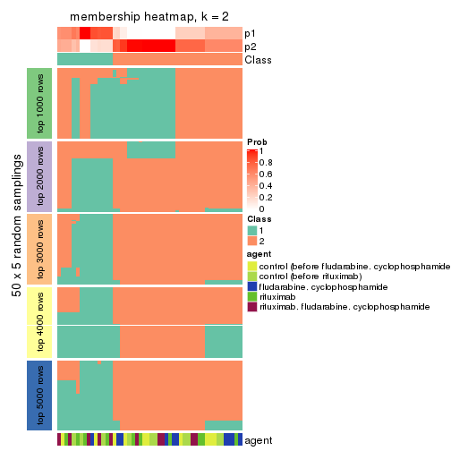
membership_heatmap(res, k = 3)
membership_heatmap(res, k = 4)
membership_heatmap(res, k = 5)
membership_heatmap(res, k = 6)
As soon as we have had the classes for columns, we can look for signatures which are significantly different between classes which can be candidate marks for certain classes. Following are the heatmaps for signatures.
Signature heatmaps where rows are scaled:
get_signatures(res, k = 2)

get_signatures(res, k = 3)
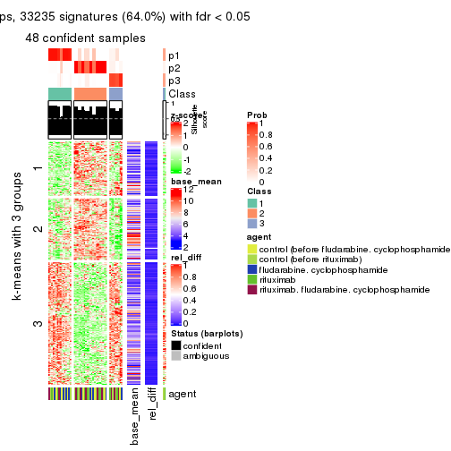
get_signatures(res, k = 4)
get_signatures(res, k = 5)

get_signatures(res, k = 6)
Signature heatmaps where rows are not scaled:
get_signatures(res, k = 2, scale_rows = FALSE)
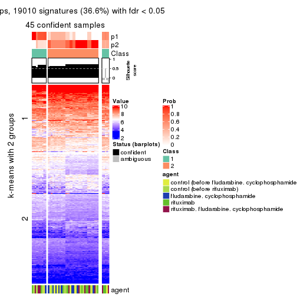
get_signatures(res, k = 3, scale_rows = FALSE)
get_signatures(res, k = 4, scale_rows = FALSE)
get_signatures(res, k = 5, scale_rows = FALSE)
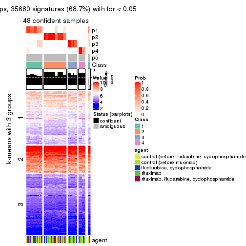
get_signatures(res, k = 6, scale_rows = FALSE)
Compare the overlap of signatures from different k:
compare_signatures(res)
get_signature() returns a data frame invisibly. TO get the list of signatures, the function
call should be assigned to a variable explicitly. In following code, if plot argument is set
to FALSE, no heatmap is plotted while only the differential analysis is performed.
# code only for demonstration
tb = get_signature(res, k = ..., plot = FALSE)
An example of the output of tb is:
#> which_row fdr mean_1 mean_2 scaled_mean_1 scaled_mean_2 km
#> 1 38 0.042760348 8.373488 9.131774 -0.5533452 0.5164555 1
#> 2 40 0.018707592 7.106213 8.469186 -0.6173731 0.5762149 1
#> 3 55 0.019134737 10.221463 11.207825 -0.6159697 0.5749050 1
#> 4 59 0.006059896 5.921854 7.869574 -0.6899429 0.6439467 1
#> 5 60 0.018055526 8.928898 10.211722 -0.6204761 0.5791110 1
#> 6 98 0.009384629 15.714769 14.887706 0.6635654 -0.6193277 2
...
The columns in tb are:
which_row: row indices corresponding to the input matrix.fdr: FDR for the differential test. mean_x: The mean value in group x.scaled_mean_x: The mean value in group x after rows are scaled.km: Row groups if k-means clustering is applied to rows.UMAP plot which shows how samples are separated.
dimension_reduction(res, k = 2, method = "UMAP")
dimension_reduction(res, k = 3, method = "UMAP")
dimension_reduction(res, k = 4, method = "UMAP")
dimension_reduction(res, k = 5, method = "UMAP")
dimension_reduction(res, k = 6, method = "UMAP")
Following heatmap shows how subgroups are split when increasing k:
collect_classes(res)
Test correlation between subgroups and known annotations. If the known annotation is numeric, one-way ANOVA test is applied, and if the known annotation is discrete, chi-squared contingency table test is applied.
test_to_known_factors(res)
#> n agent(p) k
#> SD:mclust 45 0.562 2
#> SD:mclust 48 0.761 3
#> SD:mclust 47 0.713 4
#> SD:mclust 48 0.889 5
#> SD:mclust 47 0.993 6
If matrix rows can be associated to genes, consider to use functional_enrichment(res,
...) to perform function enrichment for the signature genes. See this vignette for more detailed explanations.
The object with results only for a single top-value method and a single partition method can be extracted as:
res = res_list["SD", "NMF"]
# you can also extract it by
# res = res_list["SD:NMF"]
A summary of res and all the functions that can be applied to it:
res
#> A 'ConsensusPartition' object with k = 2, 3, 4, 5, 6.
#> On a matrix with 51941 rows and 50 columns.
#> Top rows (1000, 2000, 3000, 4000, 5000) are extracted by 'SD' method.
#> Subgroups are detected by 'NMF' method.
#> Performed in total 1250 partitions by row resampling.
#> Best k for subgroups seems to be 6.
#>
#> Following methods can be applied to this 'ConsensusPartition' object:
#> [1] "cola_report" "collect_classes" "collect_plots"
#> [4] "collect_stats" "colnames" "compare_signatures"
#> [7] "consensus_heatmap" "dimension_reduction" "functional_enrichment"
#> [10] "get_anno_col" "get_anno" "get_classes"
#> [13] "get_consensus" "get_matrix" "get_membership"
#> [16] "get_param" "get_signatures" "get_stats"
#> [19] "is_best_k" "is_stable_k" "membership_heatmap"
#> [22] "ncol" "nrow" "plot_ecdf"
#> [25] "rownames" "select_partition_number" "show"
#> [28] "suggest_best_k" "test_to_known_factors"
collect_plots() function collects all the plots made from res for all k (number of partitions)
into one single page to provide an easy and fast comparison between different k.
collect_plots(res)
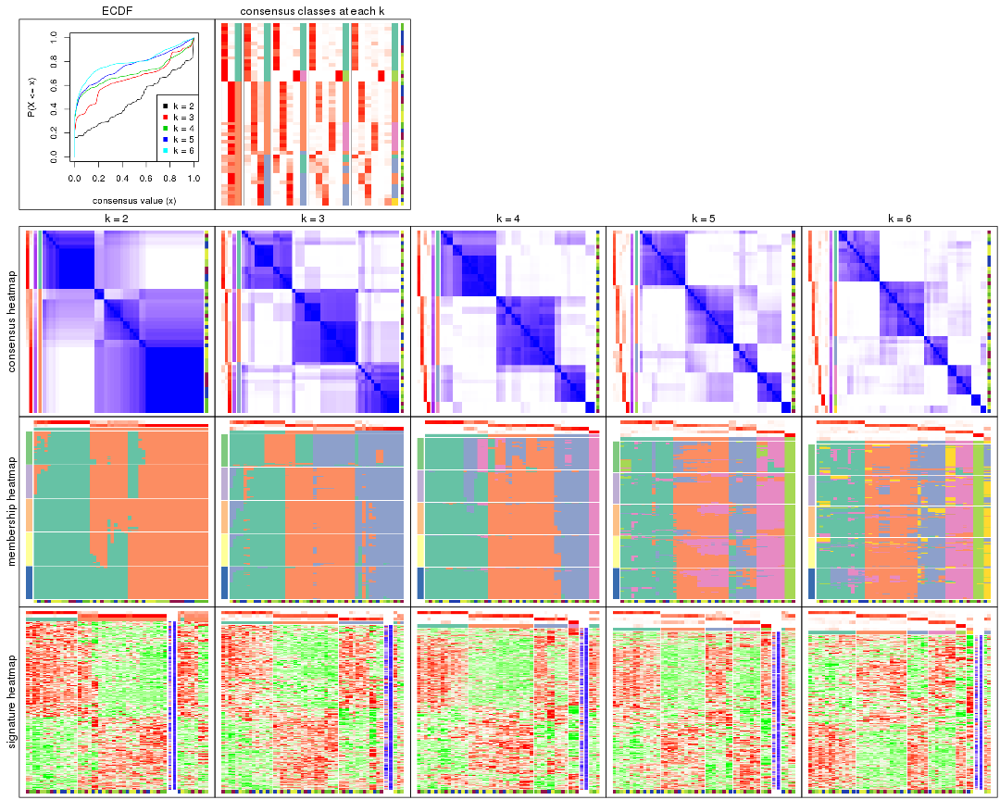
The plots are:
k and the heatmap of
predicted classes for each k.k.k.k.All the plots in panels can be made by individual functions and they are plotted later in this section.
select_partition_number() produces several plots showing different
statistics for choosing “optimized” k. There are following statistics:
k;k, the area increased is defined as \(A_k - A_{k-1}\).The detailed explanations of these statistics can be found in the cola vignette.
Generally speaking, lower PAC score, higher mean silhouette score or higher
concordance corresponds to better partition. Rand index and Jaccard index
measure how similar the current partition is compared to partition with k-1.
If they are too similar, we won't accept k is better than k-1.
select_partition_number(res)
The numeric values for all these statistics can be obtained by get_stats().
get_stats(res)
#> k 1-PAC mean_silhouette concordance area_increased Rand Jaccard
#> 2 2 0.458 0.745 0.885 0.4806 0.556 0.556
#> 3 3 0.514 0.745 0.841 0.3745 0.771 0.589
#> 4 4 0.718 0.796 0.894 0.0671 0.856 0.627
#> 5 5 0.665 0.711 0.802 0.0841 0.812 0.481
#> 6 6 0.690 0.776 0.821 0.0467 0.956 0.818
suggest_best_k() suggests the best \(k\) based on these statistics. The rules are as follows:
suggest_best_k(res)
#> [1] 6
Following shows the table of the partitions (You need to click the show/hide
code output link to see it). The membership matrix (columns with name p*)
is inferred by
clue::cl_consensus()
function with the SE method. Basically the value in the membership matrix
represents the probability to belong to a certain group. The finall class
label for an item is determined with the group with highest probability it
belongs to.
In get_classes() function, the entropy is calculated from the membership
matrix and the silhouette score is calculated from the consensus matrix.
cbind(get_classes(res, k = 2), get_membership(res, k = 2))
#> class entropy silhouette p1 p2
#> GSM388593 1 0.373 0.889 0.928 0.072
#> GSM388594 1 0.000 0.945 1.000 0.000
#> GSM388595 1 0.000 0.945 1.000 0.000
#> GSM388596 2 0.921 0.549 0.336 0.664
#> GSM388597 2 0.971 0.436 0.400 0.600
#> GSM388598 2 0.000 0.819 0.000 1.000
#> GSM388599 2 0.000 0.819 0.000 1.000
#> GSM388600 2 0.000 0.819 0.000 1.000
#> GSM388601 2 0.980 0.298 0.416 0.584
#> GSM388602 2 0.000 0.819 0.000 1.000
#> GSM388623 2 0.990 0.343 0.440 0.560
#> GSM388624 1 0.469 0.857 0.900 0.100
#> GSM388625 1 0.000 0.945 1.000 0.000
#> GSM388626 1 0.000 0.945 1.000 0.000
#> GSM388627 1 0.184 0.927 0.972 0.028
#> GSM388628 2 0.000 0.819 0.000 1.000
#> GSM388629 2 0.000 0.819 0.000 1.000
#> GSM388630 2 0.000 0.819 0.000 1.000
#> GSM388631 2 0.861 0.633 0.284 0.716
#> GSM388632 2 0.402 0.775 0.080 0.920
#> GSM388603 1 0.574 0.809 0.864 0.136
#> GSM388604 1 0.000 0.945 1.000 0.000
#> GSM388605 1 0.000 0.945 1.000 0.000
#> GSM388606 2 0.722 0.707 0.200 0.800
#> GSM388607 2 0.969 0.444 0.396 0.604
#> GSM388608 2 0.000 0.819 0.000 1.000
#> GSM388609 2 0.000 0.819 0.000 1.000
#> GSM388610 2 0.000 0.819 0.000 1.000
#> GSM388611 2 0.980 0.298 0.416 0.584
#> GSM388612 2 0.000 0.819 0.000 1.000
#> GSM388583 2 0.999 0.240 0.480 0.520
#> GSM388584 1 0.000 0.945 1.000 0.000
#> GSM388585 1 0.000 0.945 1.000 0.000
#> GSM388586 2 0.697 0.716 0.188 0.812
#> GSM388587 2 0.980 0.402 0.416 0.584
#> GSM388588 2 0.000 0.819 0.000 1.000
#> GSM388589 2 0.000 0.819 0.000 1.000
#> GSM388590 2 0.000 0.819 0.000 1.000
#> GSM388591 2 0.991 0.227 0.444 0.556
#> GSM388592 2 0.000 0.819 0.000 1.000
#> GSM388613 2 0.753 0.693 0.216 0.784
#> GSM388614 1 0.866 0.491 0.712 0.288
#> GSM388615 1 0.000 0.945 1.000 0.000
#> GSM388616 1 0.000 0.945 1.000 0.000
#> GSM388617 1 0.000 0.945 1.000 0.000
#> GSM388618 2 0.000 0.819 0.000 1.000
#> GSM388619 2 0.000 0.819 0.000 1.000
#> GSM388620 2 0.000 0.819 0.000 1.000
#> GSM388621 2 0.881 0.613 0.300 0.700
#> GSM388622 2 0.494 0.755 0.108 0.892
cbind(get_classes(res, k = 3), get_membership(res, k = 3))
#> class entropy silhouette p1 p2 p3
#> GSM388593 1 0.2959 0.7753 0.900 0.000 0.100
#> GSM388594 1 0.4645 0.7975 0.816 0.176 0.008
#> GSM388595 1 0.4291 0.7976 0.820 0.180 0.000
#> GSM388596 3 0.0000 0.8401 0.000 0.000 1.000
#> GSM388597 3 0.0592 0.8386 0.012 0.000 0.988
#> GSM388598 3 0.2878 0.7716 0.000 0.096 0.904
#> GSM388599 2 0.6215 0.4640 0.000 0.572 0.428
#> GSM388600 2 0.4346 0.8584 0.000 0.816 0.184
#> GSM388601 2 0.0892 0.7654 0.020 0.980 0.000
#> GSM388602 2 0.4235 0.7855 0.176 0.824 0.000
#> GSM388623 3 0.5465 0.5118 0.288 0.000 0.712
#> GSM388624 1 0.3607 0.7657 0.880 0.008 0.112
#> GSM388625 1 0.1015 0.8096 0.980 0.008 0.012
#> GSM388626 1 0.0424 0.8104 0.992 0.008 0.000
#> GSM388627 1 0.5216 0.5695 0.740 0.260 0.000
#> GSM388628 2 0.4555 0.8518 0.000 0.800 0.200
#> GSM388629 2 0.4291 0.8583 0.000 0.820 0.180
#> GSM388630 2 0.4555 0.8518 0.000 0.800 0.200
#> GSM388631 3 0.3043 0.7885 0.008 0.084 0.908
#> GSM388632 2 0.4645 0.7820 0.176 0.816 0.008
#> GSM388603 1 0.5016 0.6230 0.760 0.000 0.240
#> GSM388604 1 0.4235 0.7981 0.824 0.176 0.000
#> GSM388605 1 0.4291 0.7976 0.820 0.180 0.000
#> GSM388606 3 0.0000 0.8401 0.000 0.000 1.000
#> GSM388607 3 0.0000 0.8401 0.000 0.000 1.000
#> GSM388608 3 0.4399 0.6417 0.000 0.188 0.812
#> GSM388609 2 0.4887 0.8282 0.000 0.772 0.228
#> GSM388610 2 0.4399 0.8568 0.000 0.812 0.188
#> GSM388611 2 0.0892 0.7692 0.020 0.980 0.000
#> GSM388612 2 0.4235 0.7855 0.176 0.824 0.000
#> GSM388583 3 0.5138 0.5593 0.252 0.000 0.748
#> GSM388584 1 0.4235 0.7981 0.824 0.176 0.000
#> GSM388585 1 0.4291 0.7976 0.820 0.180 0.000
#> GSM388586 3 0.0000 0.8401 0.000 0.000 1.000
#> GSM388587 3 0.1163 0.8338 0.028 0.000 0.972
#> GSM388588 3 0.6302 -0.2482 0.000 0.480 0.520
#> GSM388589 2 0.4702 0.8426 0.000 0.788 0.212
#> GSM388590 2 0.4346 0.8584 0.000 0.816 0.184
#> GSM388591 2 0.1163 0.7597 0.028 0.972 0.000
#> GSM388592 2 0.4235 0.7855 0.176 0.824 0.000
#> GSM388613 3 0.3038 0.7833 0.104 0.000 0.896
#> GSM388614 1 0.6676 0.0639 0.516 0.008 0.476
#> GSM388615 1 0.1643 0.8027 0.956 0.044 0.000
#> GSM388616 1 0.3482 0.7496 0.872 0.128 0.000
#> GSM388617 1 0.0848 0.8103 0.984 0.008 0.008
#> GSM388618 2 0.4555 0.8518 0.000 0.800 0.200
#> GSM388619 2 0.4235 0.8580 0.000 0.824 0.176
#> GSM388620 2 0.4346 0.8584 0.000 0.816 0.184
#> GSM388621 3 0.3043 0.7885 0.008 0.084 0.908
#> GSM388622 2 0.4645 0.7820 0.176 0.816 0.008
cbind(get_classes(res, k = 4), get_membership(res, k = 4))
#> class entropy silhouette p1 p2 p3 p4
#> GSM388593 1 0.0336 0.835 0.992 0.000 0.008 0.000
#> GSM388594 1 0.3942 0.684 0.764 0.000 0.000 0.236
#> GSM388595 4 0.0000 1.000 0.000 0.000 0.000 1.000
#> GSM388596 3 0.0188 0.857 0.004 0.000 0.996 0.000
#> GSM388597 1 0.4981 0.302 0.536 0.000 0.464 0.000
#> GSM388598 3 0.0707 0.856 0.000 0.020 0.980 0.000
#> GSM388599 3 0.4477 0.519 0.000 0.312 0.688 0.000
#> GSM388600 2 0.1109 0.893 0.000 0.968 0.028 0.004
#> GSM388601 2 0.2255 0.865 0.012 0.920 0.000 0.068
#> GSM388602 2 0.0707 0.884 0.020 0.980 0.000 0.000
#> GSM388623 1 0.4103 0.664 0.744 0.000 0.256 0.000
#> GSM388624 1 0.0336 0.835 0.992 0.000 0.008 0.000
#> GSM388625 1 0.0188 0.834 0.996 0.004 0.000 0.000
#> GSM388626 1 0.0188 0.833 0.996 0.004 0.000 0.000
#> GSM388627 1 0.0707 0.827 0.980 0.020 0.000 0.000
#> GSM388628 2 0.2589 0.868 0.000 0.884 0.116 0.000
#> GSM388629 2 0.0921 0.894 0.000 0.972 0.028 0.000
#> GSM388630 2 0.3311 0.821 0.000 0.828 0.172 0.000
#> GSM388631 3 0.2334 0.792 0.004 0.000 0.908 0.088
#> GSM388632 2 0.3569 0.772 0.196 0.804 0.000 0.000
#> GSM388603 1 0.0592 0.833 0.984 0.000 0.016 0.000
#> GSM388604 1 0.4222 0.644 0.728 0.000 0.000 0.272
#> GSM388605 4 0.0000 1.000 0.000 0.000 0.000 1.000
#> GSM388606 3 0.0000 0.857 0.000 0.000 1.000 0.000
#> GSM388607 3 0.1792 0.810 0.068 0.000 0.932 0.000
#> GSM388608 3 0.0707 0.856 0.000 0.020 0.980 0.000
#> GSM388609 2 0.4250 0.682 0.000 0.724 0.276 0.000
#> GSM388610 2 0.1209 0.893 0.000 0.964 0.032 0.004
#> GSM388611 2 0.2021 0.868 0.012 0.932 0.000 0.056
#> GSM388612 2 0.0707 0.884 0.020 0.980 0.000 0.000
#> GSM388583 1 0.0657 0.834 0.984 0.004 0.012 0.000
#> GSM388584 1 0.4040 0.670 0.752 0.000 0.000 0.248
#> GSM388585 4 0.0000 1.000 0.000 0.000 0.000 1.000
#> GSM388586 3 0.0188 0.856 0.004 0.000 0.996 0.000
#> GSM388587 1 0.4977 0.313 0.540 0.000 0.460 0.000
#> GSM388588 3 0.4222 0.601 0.000 0.272 0.728 0.000
#> GSM388589 2 0.3837 0.763 0.000 0.776 0.224 0.000
#> GSM388590 2 0.1398 0.893 0.000 0.956 0.040 0.004
#> GSM388591 2 0.3161 0.836 0.012 0.864 0.000 0.124
#> GSM388592 2 0.0817 0.883 0.024 0.976 0.000 0.000
#> GSM388613 1 0.5204 0.475 0.612 0.012 0.376 0.000
#> GSM388614 1 0.0469 0.834 0.988 0.000 0.012 0.000
#> GSM388615 1 0.0336 0.833 0.992 0.008 0.000 0.000
#> GSM388616 1 0.0592 0.830 0.984 0.016 0.000 0.000
#> GSM388617 1 0.0188 0.834 0.996 0.000 0.000 0.004
#> GSM388618 2 0.2408 0.873 0.000 0.896 0.104 0.000
#> GSM388619 2 0.1902 0.889 0.000 0.932 0.064 0.004
#> GSM388620 2 0.2704 0.862 0.000 0.876 0.124 0.000
#> GSM388621 3 0.2401 0.788 0.004 0.000 0.904 0.092
#> GSM388622 2 0.3528 0.775 0.192 0.808 0.000 0.000
cbind(get_classes(res, k = 5), get_membership(res, k = 5))
#> class entropy silhouette p1 p2 p3 p4 p5
#> GSM388593 1 0.1282 0.8552 0.952 0.004 0.044 0.000 0.000
#> GSM388594 1 0.3892 0.7756 0.820 0.000 0.036 0.024 0.120
#> GSM388595 5 0.0000 1.0000 0.000 0.000 0.000 0.000 1.000
#> GSM388596 3 0.4402 0.7613 0.012 0.352 0.636 0.000 0.000
#> GSM388597 3 0.6458 0.6455 0.260 0.240 0.500 0.000 0.000
#> GSM388598 2 0.2852 0.2855 0.000 0.828 0.172 0.000 0.000
#> GSM388599 2 0.2228 0.5801 0.000 0.912 0.040 0.048 0.000
#> GSM388600 2 0.4757 0.6021 0.000 0.596 0.024 0.380 0.000
#> GSM388601 4 0.2331 0.8678 0.000 0.016 0.008 0.908 0.068
#> GSM388602 4 0.2075 0.8915 0.032 0.040 0.004 0.924 0.000
#> GSM388623 1 0.6465 0.0327 0.524 0.256 0.216 0.000 0.004
#> GSM388624 1 0.1830 0.8519 0.932 0.004 0.052 0.012 0.000
#> GSM388625 1 0.0771 0.8579 0.976 0.004 0.000 0.020 0.000
#> GSM388626 1 0.0609 0.8575 0.980 0.000 0.000 0.020 0.000
#> GSM388627 1 0.2771 0.8049 0.860 0.000 0.012 0.128 0.000
#> GSM388628 2 0.4046 0.6549 0.000 0.696 0.008 0.296 0.000
#> GSM388629 2 0.5019 0.5711 0.000 0.568 0.036 0.396 0.000
#> GSM388630 2 0.4935 0.6405 0.000 0.616 0.040 0.344 0.000
#> GSM388631 3 0.2116 0.6343 0.008 0.028 0.924 0.000 0.040
#> GSM388632 4 0.3043 0.8629 0.088 0.020 0.020 0.872 0.000
#> GSM388603 1 0.1357 0.8545 0.948 0.004 0.048 0.000 0.000
#> GSM388604 1 0.4441 0.7272 0.768 0.000 0.036 0.024 0.172
#> GSM388605 5 0.0000 1.0000 0.000 0.000 0.000 0.000 1.000
#> GSM388606 3 0.4251 0.7510 0.004 0.372 0.624 0.000 0.000
#> GSM388607 3 0.4691 0.7807 0.044 0.276 0.680 0.000 0.000
#> GSM388608 2 0.3327 0.4030 0.000 0.828 0.144 0.028 0.000
#> GSM388609 2 0.2561 0.6424 0.000 0.884 0.020 0.096 0.000
#> GSM388610 2 0.4800 0.6097 0.000 0.604 0.028 0.368 0.000
#> GSM388611 4 0.2095 0.8691 0.000 0.012 0.008 0.920 0.060
#> GSM388612 4 0.2299 0.8864 0.032 0.052 0.004 0.912 0.000
#> GSM388583 1 0.1924 0.8472 0.924 0.008 0.064 0.004 0.000
#> GSM388584 1 0.3843 0.7792 0.824 0.000 0.036 0.024 0.116
#> GSM388585 5 0.0000 1.0000 0.000 0.000 0.000 0.000 1.000
#> GSM388586 3 0.3779 0.7705 0.012 0.236 0.752 0.000 0.000
#> GSM388587 3 0.6297 0.6579 0.256 0.212 0.532 0.000 0.000
#> GSM388588 2 0.2983 0.5983 0.000 0.868 0.056 0.076 0.000
#> GSM388589 2 0.2669 0.6482 0.000 0.876 0.020 0.104 0.000
#> GSM388590 2 0.4800 0.6097 0.000 0.604 0.028 0.368 0.000
#> GSM388591 4 0.2915 0.8442 0.004 0.012 0.012 0.876 0.096
#> GSM388592 4 0.2424 0.8859 0.032 0.052 0.008 0.908 0.000
#> GSM388613 2 0.6195 -0.1706 0.240 0.552 0.208 0.000 0.000
#> GSM388614 1 0.3231 0.7449 0.800 0.004 0.196 0.000 0.000
#> GSM388615 1 0.1461 0.8550 0.952 0.000 0.016 0.028 0.004
#> GSM388616 1 0.3039 0.7374 0.808 0.000 0.000 0.192 0.000
#> GSM388617 1 0.1018 0.8566 0.968 0.000 0.016 0.016 0.000
#> GSM388618 2 0.4166 0.6387 0.000 0.648 0.004 0.348 0.000
#> GSM388619 2 0.5026 0.5981 0.000 0.588 0.040 0.372 0.000
#> GSM388620 2 0.4415 0.6100 0.000 0.604 0.008 0.388 0.000
#> GSM388621 3 0.2116 0.6343 0.008 0.028 0.924 0.000 0.040
#> GSM388622 4 0.3043 0.8629 0.088 0.020 0.020 0.872 0.000
cbind(get_classes(res, k = 6), get_membership(res, k = 6))
#> class entropy silhouette p1 p2 p3 p4 p5 p6
#> GSM388593 1 0.249 0.807 0.888 0.000 0.068 0.008 0.000 0.036
#> GSM388594 1 0.481 0.696 0.720 0.000 0.020 0.052 0.020 0.188
#> GSM388595 5 0.026 0.990 0.000 0.000 0.000 0.000 0.992 0.008
#> GSM388596 3 0.167 0.753 0.004 0.068 0.924 0.000 0.000 0.004
#> GSM388597 3 0.236 0.757 0.072 0.032 0.892 0.000 0.000 0.004
#> GSM388598 2 0.317 0.664 0.000 0.744 0.256 0.000 0.000 0.000
#> GSM388599 2 0.359 0.733 0.000 0.764 0.208 0.004 0.000 0.024
#> GSM388600 2 0.193 0.817 0.000 0.912 0.000 0.068 0.000 0.020
#> GSM388601 4 0.455 0.770 0.000 0.056 0.000 0.716 0.024 0.204
#> GSM388602 4 0.226 0.834 0.016 0.088 0.000 0.892 0.000 0.004
#> GSM388623 3 0.539 0.623 0.088 0.072 0.720 0.020 0.004 0.096
#> GSM388624 1 0.394 0.772 0.796 0.000 0.072 0.104 0.000 0.028
#> GSM388625 1 0.149 0.819 0.940 0.000 0.036 0.024 0.000 0.000
#> GSM388626 1 0.155 0.819 0.936 0.000 0.020 0.044 0.000 0.000
#> GSM388627 1 0.425 0.614 0.656 0.004 0.000 0.312 0.000 0.028
#> GSM388628 2 0.126 0.833 0.000 0.952 0.024 0.024 0.000 0.000
#> GSM388629 2 0.274 0.795 0.000 0.864 0.000 0.072 0.000 0.064
#> GSM388630 2 0.295 0.826 0.000 0.864 0.032 0.080 0.000 0.024
#> GSM388631 6 0.524 0.992 0.004 0.020 0.368 0.000 0.048 0.560
#> GSM388632 4 0.289 0.816 0.064 0.052 0.000 0.868 0.000 0.016
#> GSM388603 1 0.225 0.811 0.904 0.000 0.052 0.008 0.000 0.036
#> GSM388604 1 0.548 0.654 0.676 0.000 0.020 0.056 0.056 0.192
#> GSM388605 5 0.000 0.995 0.000 0.000 0.000 0.000 1.000 0.000
#> GSM388606 3 0.181 0.750 0.000 0.088 0.908 0.000 0.000 0.004
#> GSM388607 3 0.200 0.747 0.040 0.028 0.920 0.000 0.000 0.012
#> GSM388608 2 0.345 0.626 0.000 0.716 0.280 0.000 0.000 0.004
#> GSM388609 2 0.390 0.730 0.000 0.756 0.200 0.016 0.000 0.028
#> GSM388610 2 0.175 0.822 0.000 0.924 0.000 0.056 0.000 0.020
#> GSM388611 4 0.449 0.768 0.000 0.052 0.000 0.720 0.024 0.204
#> GSM388612 4 0.245 0.830 0.016 0.104 0.000 0.876 0.000 0.004
#> GSM388583 1 0.310 0.798 0.852 0.000 0.092 0.024 0.000 0.032
#> GSM388584 1 0.483 0.693 0.716 0.000 0.020 0.052 0.020 0.192
#> GSM388585 5 0.000 0.995 0.000 0.000 0.000 0.000 1.000 0.000
#> GSM388586 3 0.343 0.438 0.008 0.028 0.800 0.000 0.000 0.164
#> GSM388587 3 0.228 0.742 0.088 0.024 0.888 0.000 0.000 0.000
#> GSM388588 2 0.251 0.781 0.000 0.852 0.140 0.000 0.000 0.008
#> GSM388589 2 0.410 0.718 0.000 0.740 0.208 0.016 0.000 0.036
#> GSM388590 2 0.191 0.825 0.000 0.920 0.004 0.052 0.000 0.024
#> GSM388591 4 0.457 0.757 0.000 0.040 0.000 0.712 0.036 0.212
#> GSM388592 4 0.319 0.798 0.020 0.136 0.000 0.828 0.000 0.016
#> GSM388613 3 0.602 0.495 0.028 0.212 0.628 0.032 0.004 0.096
#> GSM388614 1 0.376 0.777 0.808 0.000 0.112 0.048 0.000 0.032
#> GSM388615 1 0.299 0.804 0.852 0.000 0.012 0.104 0.000 0.032
#> GSM388616 1 0.311 0.698 0.772 0.000 0.000 0.224 0.000 0.004
#> GSM388617 1 0.291 0.781 0.860 0.000 0.012 0.036 0.000 0.092
#> GSM388618 2 0.137 0.834 0.000 0.948 0.012 0.036 0.000 0.004
#> GSM388619 2 0.290 0.789 0.000 0.852 0.000 0.064 0.000 0.084
#> GSM388620 2 0.338 0.807 0.000 0.828 0.032 0.116 0.000 0.024
#> GSM388621 6 0.528 0.992 0.004 0.020 0.364 0.000 0.052 0.560
#> GSM388622 4 0.286 0.816 0.068 0.052 0.000 0.868 0.000 0.012
Heatmaps for the consensus matrix. It visualizes the probability of two samples to be in a same group.
consensus_heatmap(res, k = 2)
consensus_heatmap(res, k = 3)
consensus_heatmap(res, k = 4)
consensus_heatmap(res, k = 5)
consensus_heatmap(res, k = 6)
Heatmaps for the membership of samples in all partitions to see how consistent they are:
membership_heatmap(res, k = 2)
membership_heatmap(res, k = 3)
membership_heatmap(res, k = 4)
membership_heatmap(res, k = 5)
membership_heatmap(res, k = 6)
As soon as we have had the classes for columns, we can look for signatures which are significantly different between classes which can be candidate marks for certain classes. Following are the heatmaps for signatures.
Signature heatmaps where rows are scaled:
get_signatures(res, k = 2)

get_signatures(res, k = 3)
get_signatures(res, k = 4)
get_signatures(res, k = 5)
get_signatures(res, k = 6)
Signature heatmaps where rows are not scaled:
get_signatures(res, k = 2, scale_rows = FALSE)
get_signatures(res, k = 3, scale_rows = FALSE)
get_signatures(res, k = 4, scale_rows = FALSE)
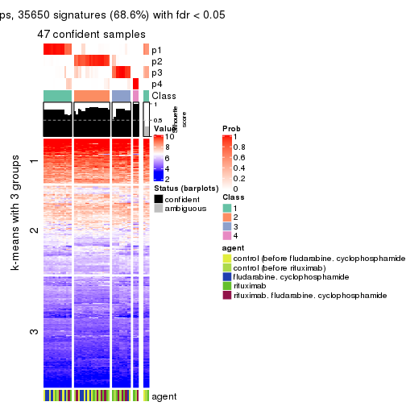
get_signatures(res, k = 5, scale_rows = FALSE)
get_signatures(res, k = 6, scale_rows = FALSE)
Compare the overlap of signatures from different k:
compare_signatures(res)
get_signature() returns a data frame invisibly. TO get the list of signatures, the function
call should be assigned to a variable explicitly. In following code, if plot argument is set
to FALSE, no heatmap is plotted while only the differential analysis is performed.
# code only for demonstration
tb = get_signature(res, k = ..., plot = FALSE)
An example of the output of tb is:
#> which_row fdr mean_1 mean_2 scaled_mean_1 scaled_mean_2 km
#> 1 38 0.042760348 8.373488 9.131774 -0.5533452 0.5164555 1
#> 2 40 0.018707592 7.106213 8.469186 -0.6173731 0.5762149 1
#> 3 55 0.019134737 10.221463 11.207825 -0.6159697 0.5749050 1
#> 4 59 0.006059896 5.921854 7.869574 -0.6899429 0.6439467 1
#> 5 60 0.018055526 8.928898 10.211722 -0.6204761 0.5791110 1
#> 6 98 0.009384629 15.714769 14.887706 0.6635654 -0.6193277 2
...
The columns in tb are:
which_row: row indices corresponding to the input matrix.fdr: FDR for the differential test. mean_x: The mean value in group x.scaled_mean_x: The mean value in group x after rows are scaled.km: Row groups if k-means clustering is applied to rows.UMAP plot which shows how samples are separated.
dimension_reduction(res, k = 2, method = "UMAP")
dimension_reduction(res, k = 3, method = "UMAP")
dimension_reduction(res, k = 4, method = "UMAP")
dimension_reduction(res, k = 5, method = "UMAP")
dimension_reduction(res, k = 6, method = "UMAP")
Following heatmap shows how subgroups are split when increasing k:
collect_classes(res)
Test correlation between subgroups and known annotations. If the known annotation is numeric, one-way ANOVA test is applied, and if the known annotation is discrete, chi-squared contingency table test is applied.
test_to_known_factors(res)
#> n agent(p) k
#> SD:NMF 41 0.975 2
#> SD:NMF 47 0.996 3
#> SD:NMF 47 0.878 4
#> SD:NMF 46 0.992 5
#> SD:NMF 48 0.972 6
If matrix rows can be associated to genes, consider to use functional_enrichment(res,
...) to perform function enrichment for the signature genes. See this vignette for more detailed explanations.
The object with results only for a single top-value method and a single partition method can be extracted as:
res = res_list["CV", "hclust"]
# you can also extract it by
# res = res_list["CV:hclust"]
A summary of res and all the functions that can be applied to it:
res
#> A 'ConsensusPartition' object with k = 2, 3, 4, 5, 6.
#> On a matrix with 51941 rows and 50 columns.
#> Top rows (1000, 2000, 3000, 4000, 5000) are extracted by 'CV' method.
#> Subgroups are detected by 'hclust' method.
#> Performed in total 1250 partitions by row resampling.
#> Best k for subgroups seems to be 5.
#>
#> Following methods can be applied to this 'ConsensusPartition' object:
#> [1] "cola_report" "collect_classes" "collect_plots"
#> [4] "collect_stats" "colnames" "compare_signatures"
#> [7] "consensus_heatmap" "dimension_reduction" "functional_enrichment"
#> [10] "get_anno_col" "get_anno" "get_classes"
#> [13] "get_consensus" "get_matrix" "get_membership"
#> [16] "get_param" "get_signatures" "get_stats"
#> [19] "is_best_k" "is_stable_k" "membership_heatmap"
#> [22] "ncol" "nrow" "plot_ecdf"
#> [25] "rownames" "select_partition_number" "show"
#> [28] "suggest_best_k" "test_to_known_factors"
collect_plots() function collects all the plots made from res for all k (number of partitions)
into one single page to provide an easy and fast comparison between different k.
collect_plots(res)
The plots are:
k and the heatmap of
predicted classes for each k.k.k.k.All the plots in panels can be made by individual functions and they are plotted later in this section.
select_partition_number() produces several plots showing different
statistics for choosing “optimized” k. There are following statistics:
k;k, the area increased is defined as \(A_k - A_{k-1}\).The detailed explanations of these statistics can be found in the cola vignette.
Generally speaking, lower PAC score, higher mean silhouette score or higher
concordance corresponds to better partition. Rand index and Jaccard index
measure how similar the current partition is compared to partition with k-1.
If they are too similar, we won't accept k is better than k-1.
select_partition_number(res)

The numeric values for all these statistics can be obtained by get_stats().
get_stats(res)
#> k 1-PAC mean_silhouette concordance area_increased Rand Jaccard
#> 2 2 0.420 0.902 0.867 0.4472 0.493 0.493
#> 3 3 0.498 0.815 0.848 0.3788 0.851 0.699
#> 4 4 0.738 0.833 0.879 0.1028 0.973 0.922
#> 5 5 0.785 0.813 0.898 0.1144 0.917 0.738
#> 6 6 0.761 0.761 0.860 0.0385 0.982 0.923
suggest_best_k() suggests the best \(k\) based on these statistics. The rules are as follows:
suggest_best_k(res)
#> [1] 5
Following shows the table of the partitions (You need to click the show/hide
code output link to see it). The membership matrix (columns with name p*)
is inferred by
clue::cl_consensus()
function with the SE method. Basically the value in the membership matrix
represents the probability to belong to a certain group. The finall class
label for an item is determined with the group with highest probability it
belongs to.
In get_classes() function, the entropy is calculated from the membership
matrix and the silhouette score is calculated from the consensus matrix.
cbind(get_classes(res, k = 2), get_membership(res, k = 2))
#> class entropy silhouette p1 p2
#> GSM388593 1 0.0000 0.936 1.000 0.000
#> GSM388594 1 0.4022 0.885 0.920 0.080
#> GSM388595 1 0.7883 0.733 0.764 0.236
#> GSM388596 1 0.1633 0.935 0.976 0.024
#> GSM388597 1 0.1633 0.935 0.976 0.024
#> GSM388598 2 0.7815 0.937 0.232 0.768
#> GSM388599 2 0.7815 0.937 0.232 0.768
#> GSM388600 2 0.7815 0.937 0.232 0.768
#> GSM388601 2 0.2948 0.765 0.052 0.948
#> GSM388602 2 0.6623 0.898 0.172 0.828
#> GSM388623 1 0.2236 0.928 0.964 0.036
#> GSM388624 1 0.0376 0.936 0.996 0.004
#> GSM388625 1 0.1414 0.932 0.980 0.020
#> GSM388626 1 0.1414 0.932 0.980 0.020
#> GSM388627 1 0.0938 0.935 0.988 0.012
#> GSM388628 2 0.7815 0.937 0.232 0.768
#> GSM388629 2 0.7815 0.937 0.232 0.768
#> GSM388630 2 0.7815 0.937 0.232 0.768
#> GSM388631 1 0.1633 0.935 0.976 0.024
#> GSM388632 2 0.9323 0.804 0.348 0.652
#> GSM388603 1 0.0000 0.936 1.000 0.000
#> GSM388604 1 0.4022 0.885 0.920 0.080
#> GSM388605 1 0.7883 0.733 0.764 0.236
#> GSM388606 1 0.1633 0.935 0.976 0.024
#> GSM388607 1 0.1633 0.935 0.976 0.024
#> GSM388608 2 0.7815 0.937 0.232 0.768
#> GSM388609 2 0.7815 0.937 0.232 0.768
#> GSM388610 2 0.7815 0.937 0.232 0.768
#> GSM388611 2 0.2948 0.765 0.052 0.948
#> GSM388612 2 0.6623 0.898 0.172 0.828
#> GSM388583 1 0.0000 0.936 1.000 0.000
#> GSM388584 1 0.4022 0.885 0.920 0.080
#> GSM388585 1 0.7883 0.733 0.764 0.236
#> GSM388586 1 0.1633 0.935 0.976 0.024
#> GSM388587 1 0.1633 0.935 0.976 0.024
#> GSM388588 2 0.7815 0.937 0.232 0.768
#> GSM388589 2 0.7815 0.937 0.232 0.768
#> GSM388590 2 0.7815 0.937 0.232 0.768
#> GSM388591 2 0.2948 0.765 0.052 0.948
#> GSM388592 2 0.6623 0.898 0.172 0.828
#> GSM388613 1 0.2236 0.928 0.964 0.036
#> GSM388614 1 0.0376 0.936 0.996 0.004
#> GSM388615 1 0.1414 0.932 0.980 0.020
#> GSM388616 1 0.1414 0.932 0.980 0.020
#> GSM388617 1 0.0938 0.935 0.988 0.012
#> GSM388618 2 0.7815 0.937 0.232 0.768
#> GSM388619 2 0.7815 0.937 0.232 0.768
#> GSM388620 2 0.7815 0.937 0.232 0.768
#> GSM388621 1 0.1633 0.935 0.976 0.024
#> GSM388622 2 0.9323 0.804 0.348 0.652
cbind(get_classes(res, k = 3), get_membership(res, k = 3))
#> class entropy silhouette p1 p2 p3
#> GSM388593 3 0.0829 0.769 0.012 0.004 0.984
#> GSM388594 1 0.4291 0.774 0.820 0.000 0.180
#> GSM388595 1 0.0000 0.705 1.000 0.000 0.000
#> GSM388596 3 0.4121 0.874 0.000 0.168 0.832
#> GSM388597 3 0.4121 0.874 0.000 0.168 0.832
#> GSM388598 2 0.2356 0.911 0.000 0.928 0.072
#> GSM388599 2 0.2356 0.911 0.000 0.928 0.072
#> GSM388600 2 0.2448 0.910 0.000 0.924 0.076
#> GSM388601 2 0.4994 0.735 0.160 0.816 0.024
#> GSM388602 2 0.1031 0.863 0.000 0.976 0.024
#> GSM388623 1 0.8396 0.587 0.624 0.196 0.180
#> GSM388624 3 0.2527 0.732 0.044 0.020 0.936
#> GSM388625 1 0.7084 0.780 0.628 0.036 0.336
#> GSM388626 1 0.7084 0.780 0.628 0.036 0.336
#> GSM388627 1 0.6867 0.780 0.636 0.028 0.336
#> GSM388628 2 0.2356 0.911 0.000 0.928 0.072
#> GSM388629 2 0.2448 0.910 0.000 0.924 0.076
#> GSM388630 2 0.2356 0.911 0.000 0.928 0.072
#> GSM388631 3 0.4121 0.874 0.000 0.168 0.832
#> GSM388632 2 0.5982 0.621 0.004 0.668 0.328
#> GSM388603 3 0.0829 0.769 0.012 0.004 0.984
#> GSM388604 1 0.4291 0.774 0.820 0.000 0.180
#> GSM388605 1 0.0000 0.705 1.000 0.000 0.000
#> GSM388606 3 0.4121 0.874 0.000 0.168 0.832
#> GSM388607 3 0.4121 0.874 0.000 0.168 0.832
#> GSM388608 2 0.2356 0.911 0.000 0.928 0.072
#> GSM388609 2 0.2356 0.911 0.000 0.928 0.072
#> GSM388610 2 0.2448 0.910 0.000 0.924 0.076
#> GSM388611 2 0.4994 0.735 0.160 0.816 0.024
#> GSM388612 2 0.1031 0.863 0.000 0.976 0.024
#> GSM388583 3 0.0829 0.769 0.012 0.004 0.984
#> GSM388584 1 0.4291 0.774 0.820 0.000 0.180
#> GSM388585 1 0.0000 0.705 1.000 0.000 0.000
#> GSM388586 3 0.4121 0.874 0.000 0.168 0.832
#> GSM388587 3 0.4121 0.874 0.000 0.168 0.832
#> GSM388588 2 0.2356 0.911 0.000 0.928 0.072
#> GSM388589 2 0.2356 0.911 0.000 0.928 0.072
#> GSM388590 2 0.2448 0.910 0.000 0.924 0.076
#> GSM388591 2 0.4994 0.735 0.160 0.816 0.024
#> GSM388592 2 0.1031 0.863 0.000 0.976 0.024
#> GSM388613 1 0.8396 0.587 0.624 0.196 0.180
#> GSM388614 3 0.2527 0.732 0.044 0.020 0.936
#> GSM388615 1 0.7084 0.780 0.628 0.036 0.336
#> GSM388616 1 0.7084 0.780 0.628 0.036 0.336
#> GSM388617 1 0.6867 0.780 0.636 0.028 0.336
#> GSM388618 2 0.2356 0.911 0.000 0.928 0.072
#> GSM388619 2 0.2448 0.910 0.000 0.924 0.076
#> GSM388620 2 0.2356 0.911 0.000 0.928 0.072
#> GSM388621 3 0.4121 0.874 0.000 0.168 0.832
#> GSM388622 2 0.5982 0.621 0.004 0.668 0.328
cbind(get_classes(res, k = 4), get_membership(res, k = 4))
#> class entropy silhouette p1 p2 p3 p4
#> GSM388593 3 0.3710 0.777 0.192 0.004 0.804 0.000
#> GSM388594 1 0.3400 0.733 0.820 0.000 0.000 0.180
#> GSM388595 4 0.0000 1.000 0.000 0.000 0.000 1.000
#> GSM388596 3 0.1722 0.860 0.008 0.048 0.944 0.000
#> GSM388597 3 0.1722 0.860 0.008 0.048 0.944 0.000
#> GSM388598 2 0.0469 0.909 0.000 0.988 0.012 0.000
#> GSM388599 2 0.0000 0.912 0.000 1.000 0.000 0.000
#> GSM388600 2 0.0188 0.912 0.000 0.996 0.004 0.000
#> GSM388601 2 0.6347 0.716 0.100 0.720 0.048 0.132
#> GSM388602 2 0.3176 0.852 0.084 0.880 0.036 0.000
#> GSM388623 1 0.6056 0.676 0.660 0.248 0.092 0.000
#> GSM388624 3 0.5705 0.635 0.260 0.064 0.676 0.000
#> GSM388625 1 0.3885 0.862 0.844 0.092 0.064 0.000
#> GSM388626 1 0.3885 0.862 0.844 0.092 0.064 0.000
#> GSM388627 1 0.3754 0.860 0.852 0.084 0.064 0.000
#> GSM388628 2 0.0000 0.912 0.000 1.000 0.000 0.000
#> GSM388629 2 0.0188 0.912 0.000 0.996 0.004 0.000
#> GSM388630 2 0.0000 0.912 0.000 1.000 0.000 0.000
#> GSM388631 3 0.2844 0.816 0.048 0.052 0.900 0.000
#> GSM388632 2 0.5464 0.589 0.228 0.708 0.064 0.000
#> GSM388603 3 0.3710 0.777 0.192 0.004 0.804 0.000
#> GSM388604 1 0.3400 0.733 0.820 0.000 0.000 0.180
#> GSM388605 4 0.0000 1.000 0.000 0.000 0.000 1.000
#> GSM388606 3 0.1722 0.860 0.008 0.048 0.944 0.000
#> GSM388607 3 0.1722 0.860 0.008 0.048 0.944 0.000
#> GSM388608 2 0.0469 0.909 0.000 0.988 0.012 0.000
#> GSM388609 2 0.0000 0.912 0.000 1.000 0.000 0.000
#> GSM388610 2 0.0188 0.912 0.000 0.996 0.004 0.000
#> GSM388611 2 0.6347 0.716 0.100 0.720 0.048 0.132
#> GSM388612 2 0.3176 0.852 0.084 0.880 0.036 0.000
#> GSM388583 3 0.3710 0.777 0.192 0.004 0.804 0.000
#> GSM388584 1 0.3400 0.733 0.820 0.000 0.000 0.180
#> GSM388585 4 0.0000 1.000 0.000 0.000 0.000 1.000
#> GSM388586 3 0.1722 0.860 0.008 0.048 0.944 0.000
#> GSM388587 3 0.1722 0.860 0.008 0.048 0.944 0.000
#> GSM388588 2 0.0469 0.909 0.000 0.988 0.012 0.000
#> GSM388589 2 0.0000 0.912 0.000 1.000 0.000 0.000
#> GSM388590 2 0.0188 0.912 0.000 0.996 0.004 0.000
#> GSM388591 2 0.6347 0.716 0.100 0.720 0.048 0.132
#> GSM388592 2 0.3176 0.852 0.084 0.880 0.036 0.000
#> GSM388613 1 0.6056 0.676 0.660 0.248 0.092 0.000
#> GSM388614 3 0.5705 0.635 0.260 0.064 0.676 0.000
#> GSM388615 1 0.3885 0.862 0.844 0.092 0.064 0.000
#> GSM388616 1 0.3885 0.862 0.844 0.092 0.064 0.000
#> GSM388617 1 0.3754 0.860 0.852 0.084 0.064 0.000
#> GSM388618 2 0.0000 0.912 0.000 1.000 0.000 0.000
#> GSM388619 2 0.0188 0.912 0.000 0.996 0.004 0.000
#> GSM388620 2 0.0000 0.912 0.000 1.000 0.000 0.000
#> GSM388621 3 0.2844 0.816 0.048 0.052 0.900 0.000
#> GSM388622 2 0.5464 0.589 0.228 0.708 0.064 0.000
cbind(get_classes(res, k = 5), get_membership(res, k = 5))
#> class entropy silhouette p1 p2 p3 p4 p5
#> GSM388593 3 0.3534 0.78129 0.256 0.000 0.744 0.000 0.000
#> GSM388594 1 0.2970 0.76102 0.828 0.000 0.000 0.004 0.168
#> GSM388595 5 0.0000 1.00000 0.000 0.000 0.000 0.000 1.000
#> GSM388596 3 0.1830 0.85716 0.068 0.008 0.924 0.000 0.000
#> GSM388597 3 0.1830 0.85716 0.068 0.008 0.924 0.000 0.000
#> GSM388598 2 0.0771 0.89756 0.004 0.976 0.020 0.000 0.000
#> GSM388599 2 0.0324 0.90610 0.004 0.992 0.004 0.000 0.000
#> GSM388600 2 0.0290 0.90143 0.000 0.992 0.008 0.000 0.000
#> GSM388601 4 0.0290 0.80750 0.000 0.008 0.000 0.992 0.000
#> GSM388602 4 0.3266 0.81534 0.004 0.200 0.000 0.796 0.000
#> GSM388623 1 0.4031 0.69269 0.788 0.160 0.048 0.004 0.000
#> GSM388624 3 0.4470 0.63792 0.372 0.012 0.616 0.000 0.000
#> GSM388625 1 0.0854 0.86924 0.976 0.012 0.004 0.008 0.000
#> GSM388626 1 0.0854 0.86924 0.976 0.012 0.004 0.008 0.000
#> GSM388627 1 0.0566 0.86834 0.984 0.012 0.004 0.000 0.000
#> GSM388628 2 0.0324 0.90610 0.004 0.992 0.004 0.000 0.000
#> GSM388629 2 0.0290 0.90143 0.000 0.992 0.008 0.000 0.000
#> GSM388630 2 0.0324 0.90610 0.004 0.992 0.004 0.000 0.000
#> GSM388631 3 0.0324 0.79930 0.000 0.004 0.992 0.004 0.000
#> GSM388632 2 0.6829 0.00298 0.344 0.408 0.004 0.244 0.000
#> GSM388603 3 0.3534 0.78129 0.256 0.000 0.744 0.000 0.000
#> GSM388604 1 0.2970 0.76102 0.828 0.000 0.000 0.004 0.168
#> GSM388605 5 0.0000 1.00000 0.000 0.000 0.000 0.000 1.000
#> GSM388606 3 0.1830 0.85716 0.068 0.008 0.924 0.000 0.000
#> GSM388607 3 0.1830 0.85716 0.068 0.008 0.924 0.000 0.000
#> GSM388608 2 0.0771 0.89756 0.004 0.976 0.020 0.000 0.000
#> GSM388609 2 0.0324 0.90610 0.004 0.992 0.004 0.000 0.000
#> GSM388610 2 0.0290 0.90143 0.000 0.992 0.008 0.000 0.000
#> GSM388611 4 0.0290 0.80750 0.000 0.008 0.000 0.992 0.000
#> GSM388612 4 0.3266 0.81534 0.004 0.200 0.000 0.796 0.000
#> GSM388583 3 0.3534 0.78129 0.256 0.000 0.744 0.000 0.000
#> GSM388584 1 0.2970 0.76102 0.828 0.000 0.000 0.004 0.168
#> GSM388585 5 0.0000 1.00000 0.000 0.000 0.000 0.000 1.000
#> GSM388586 3 0.1830 0.85716 0.068 0.008 0.924 0.000 0.000
#> GSM388587 3 0.1830 0.85716 0.068 0.008 0.924 0.000 0.000
#> GSM388588 2 0.0771 0.89756 0.004 0.976 0.020 0.000 0.000
#> GSM388589 2 0.0324 0.90610 0.004 0.992 0.004 0.000 0.000
#> GSM388590 2 0.0290 0.90143 0.000 0.992 0.008 0.000 0.000
#> GSM388591 4 0.0290 0.80750 0.000 0.008 0.000 0.992 0.000
#> GSM388592 4 0.3266 0.81534 0.004 0.200 0.000 0.796 0.000
#> GSM388613 1 0.4031 0.69269 0.788 0.160 0.048 0.004 0.000
#> GSM388614 3 0.4470 0.63792 0.372 0.012 0.616 0.000 0.000
#> GSM388615 1 0.0854 0.86924 0.976 0.012 0.004 0.008 0.000
#> GSM388616 1 0.0854 0.86924 0.976 0.012 0.004 0.008 0.000
#> GSM388617 1 0.0566 0.86834 0.984 0.012 0.004 0.000 0.000
#> GSM388618 2 0.0324 0.90610 0.004 0.992 0.004 0.000 0.000
#> GSM388619 2 0.0290 0.90143 0.000 0.992 0.008 0.000 0.000
#> GSM388620 2 0.0324 0.90610 0.004 0.992 0.004 0.000 0.000
#> GSM388621 3 0.0324 0.79930 0.000 0.004 0.992 0.004 0.000
#> GSM388622 2 0.6829 0.00298 0.344 0.408 0.004 0.244 0.000
cbind(get_classes(res, k = 6), get_membership(res, k = 6))
#> class entropy silhouette p1 p2 p3 p4 p5 p6
#> GSM388593 3 0.3012 0.6665 0.196 0.000 0.796 0.000 0.000 0.008
#> GSM388594 1 0.4620 0.6428 0.640 0.000 0.000 0.000 0.068 0.292
#> GSM388595 5 0.0000 1.0000 0.000 0.000 0.000 0.000 1.000 0.000
#> GSM388596 3 0.0363 0.6991 0.000 0.012 0.988 0.000 0.000 0.000
#> GSM388597 3 0.0363 0.6991 0.000 0.012 0.988 0.000 0.000 0.000
#> GSM388598 2 0.0603 0.8598 0.004 0.980 0.016 0.000 0.000 0.000
#> GSM388599 2 0.0146 0.8650 0.004 0.996 0.000 0.000 0.000 0.000
#> GSM388600 2 0.2260 0.8185 0.000 0.860 0.000 0.000 0.000 0.140
#> GSM388601 4 0.0000 0.8287 0.000 0.000 0.000 1.000 0.000 0.000
#> GSM388602 4 0.2948 0.8336 0.008 0.188 0.000 0.804 0.000 0.000
#> GSM388623 1 0.4669 0.6221 0.712 0.164 0.112 0.000 0.000 0.012
#> GSM388624 3 0.3934 0.4759 0.376 0.008 0.616 0.000 0.000 0.000
#> GSM388625 1 0.0405 0.8193 0.988 0.008 0.004 0.000 0.000 0.000
#> GSM388626 1 0.0405 0.8193 0.988 0.008 0.004 0.000 0.000 0.000
#> GSM388627 1 0.0665 0.8191 0.980 0.008 0.004 0.000 0.000 0.008
#> GSM388628 2 0.0146 0.8650 0.004 0.996 0.000 0.000 0.000 0.000
#> GSM388629 2 0.2260 0.8185 0.000 0.860 0.000 0.000 0.000 0.140
#> GSM388630 2 0.0146 0.8650 0.004 0.996 0.000 0.000 0.000 0.000
#> GSM388631 6 0.3817 1.0000 0.000 0.000 0.432 0.000 0.000 0.568
#> GSM388632 2 0.6132 0.0621 0.356 0.400 0.004 0.240 0.000 0.000
#> GSM388603 3 0.3012 0.6665 0.196 0.000 0.796 0.000 0.000 0.008
#> GSM388604 1 0.4620 0.6428 0.640 0.000 0.000 0.000 0.068 0.292
#> GSM388605 5 0.0000 1.0000 0.000 0.000 0.000 0.000 1.000 0.000
#> GSM388606 3 0.0363 0.6991 0.000 0.012 0.988 0.000 0.000 0.000
#> GSM388607 3 0.0363 0.6991 0.000 0.012 0.988 0.000 0.000 0.000
#> GSM388608 2 0.0603 0.8598 0.004 0.980 0.016 0.000 0.000 0.000
#> GSM388609 2 0.0146 0.8650 0.004 0.996 0.000 0.000 0.000 0.000
#> GSM388610 2 0.2260 0.8185 0.000 0.860 0.000 0.000 0.000 0.140
#> GSM388611 4 0.0000 0.8287 0.000 0.000 0.000 1.000 0.000 0.000
#> GSM388612 4 0.2948 0.8336 0.008 0.188 0.000 0.804 0.000 0.000
#> GSM388583 3 0.3012 0.6665 0.196 0.000 0.796 0.000 0.000 0.008
#> GSM388584 1 0.4620 0.6428 0.640 0.000 0.000 0.000 0.068 0.292
#> GSM388585 5 0.0000 1.0000 0.000 0.000 0.000 0.000 1.000 0.000
#> GSM388586 3 0.0363 0.6991 0.000 0.012 0.988 0.000 0.000 0.000
#> GSM388587 3 0.0363 0.6991 0.000 0.012 0.988 0.000 0.000 0.000
#> GSM388588 2 0.0603 0.8598 0.004 0.980 0.016 0.000 0.000 0.000
#> GSM388589 2 0.0146 0.8650 0.004 0.996 0.000 0.000 0.000 0.000
#> GSM388590 2 0.2260 0.8185 0.000 0.860 0.000 0.000 0.000 0.140
#> GSM388591 4 0.0000 0.8287 0.000 0.000 0.000 1.000 0.000 0.000
#> GSM388592 4 0.2948 0.8336 0.008 0.188 0.000 0.804 0.000 0.000
#> GSM388613 1 0.4669 0.6221 0.712 0.164 0.112 0.000 0.000 0.012
#> GSM388614 3 0.3934 0.4759 0.376 0.008 0.616 0.000 0.000 0.000
#> GSM388615 1 0.0405 0.8193 0.988 0.008 0.004 0.000 0.000 0.000
#> GSM388616 1 0.0405 0.8193 0.988 0.008 0.004 0.000 0.000 0.000
#> GSM388617 1 0.0665 0.8191 0.980 0.008 0.004 0.000 0.000 0.008
#> GSM388618 2 0.0146 0.8650 0.004 0.996 0.000 0.000 0.000 0.000
#> GSM388619 2 0.2260 0.8185 0.000 0.860 0.000 0.000 0.000 0.140
#> GSM388620 2 0.0146 0.8650 0.004 0.996 0.000 0.000 0.000 0.000
#> GSM388621 6 0.3817 1.0000 0.000 0.000 0.432 0.000 0.000 0.568
#> GSM388622 2 0.6132 0.0621 0.356 0.400 0.004 0.240 0.000 0.000
Heatmaps for the consensus matrix. It visualizes the probability of two samples to be in a same group.
consensus_heatmap(res, k = 2)
consensus_heatmap(res, k = 3)
consensus_heatmap(res, k = 4)
consensus_heatmap(res, k = 5)
consensus_heatmap(res, k = 6)
Heatmaps for the membership of samples in all partitions to see how consistent they are:
membership_heatmap(res, k = 2)
membership_heatmap(res, k = 3)
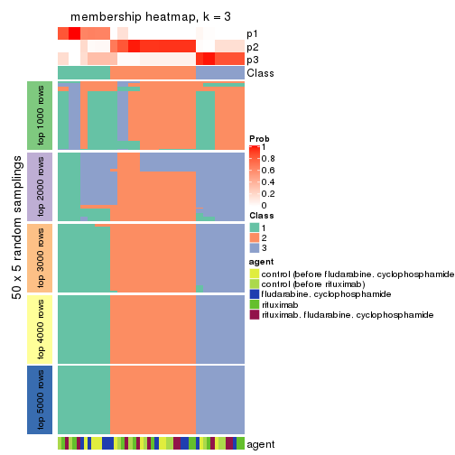
membership_heatmap(res, k = 4)
membership_heatmap(res, k = 5)
membership_heatmap(res, k = 6)
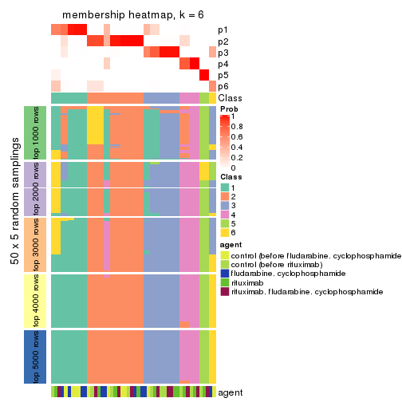
As soon as we have had the classes for columns, we can look for signatures which are significantly different between classes which can be candidate marks for certain classes. Following are the heatmaps for signatures.
Signature heatmaps where rows are scaled:
get_signatures(res, k = 2)
get_signatures(res, k = 3)
get_signatures(res, k = 4)
get_signatures(res, k = 5)
get_signatures(res, k = 6)
Signature heatmaps where rows are not scaled:
get_signatures(res, k = 2, scale_rows = FALSE)
get_signatures(res, k = 3, scale_rows = FALSE)
get_signatures(res, k = 4, scale_rows = FALSE)

get_signatures(res, k = 5, scale_rows = FALSE)
get_signatures(res, k = 6, scale_rows = FALSE)
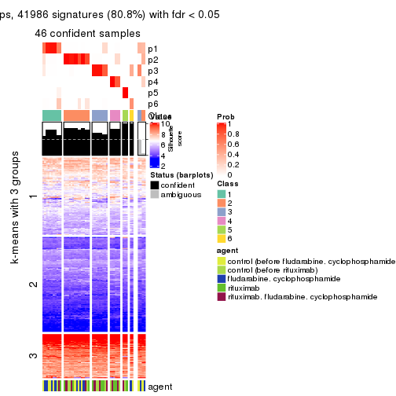
Compare the overlap of signatures from different k:
compare_signatures(res)
get_signature() returns a data frame invisibly. TO get the list of signatures, the function
call should be assigned to a variable explicitly. In following code, if plot argument is set
to FALSE, no heatmap is plotted while only the differential analysis is performed.
# code only for demonstration
tb = get_signature(res, k = ..., plot = FALSE)
An example of the output of tb is:
#> which_row fdr mean_1 mean_2 scaled_mean_1 scaled_mean_2 km
#> 1 38 0.042760348 8.373488 9.131774 -0.5533452 0.5164555 1
#> 2 40 0.018707592 7.106213 8.469186 -0.6173731 0.5762149 1
#> 3 55 0.019134737 10.221463 11.207825 -0.6159697 0.5749050 1
#> 4 59 0.006059896 5.921854 7.869574 -0.6899429 0.6439467 1
#> 5 60 0.018055526 8.928898 10.211722 -0.6204761 0.5791110 1
#> 6 98 0.009384629 15.714769 14.887706 0.6635654 -0.6193277 2
...
The columns in tb are:
which_row: row indices corresponding to the input matrix.fdr: FDR for the differential test. mean_x: The mean value in group x.scaled_mean_x: The mean value in group x after rows are scaled.km: Row groups if k-means clustering is applied to rows.UMAP plot which shows how samples are separated.
dimension_reduction(res, k = 2, method = "UMAP")

dimension_reduction(res, k = 3, method = "UMAP")
dimension_reduction(res, k = 4, method = "UMAP")
dimension_reduction(res, k = 5, method = "UMAP")
dimension_reduction(res, k = 6, method = "UMAP")
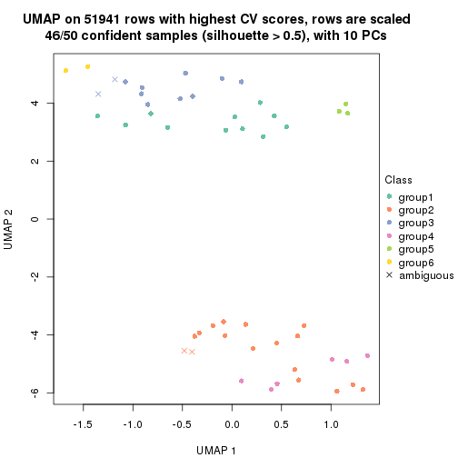
Following heatmap shows how subgroups are split when increasing k:
collect_classes(res)
Test correlation between subgroups and known annotations. If the known annotation is numeric, one-way ANOVA test is applied, and if the known annotation is discrete, chi-squared contingency table test is applied.
test_to_known_factors(res)
#> n agent(p) k
#> CV:hclust 50 0.975 2
#> CV:hclust 50 0.965 3
#> CV:hclust 50 0.813 4
#> CV:hclust 48 0.777 5
#> CV:hclust 46 0.426 6
If matrix rows can be associated to genes, consider to use functional_enrichment(res,
...) to perform function enrichment for the signature genes. See this vignette for more detailed explanations.
The object with results only for a single top-value method and a single partition method can be extracted as:
res = res_list["CV", "kmeans"]
# you can also extract it by
# res = res_list["CV:kmeans"]
A summary of res and all the functions that can be applied to it:
res
#> A 'ConsensusPartition' object with k = 2, 3, 4, 5, 6.
#> On a matrix with 51941 rows and 50 columns.
#> Top rows (1000, 2000, 3000, 4000, 5000) are extracted by 'CV' method.
#> Subgroups are detected by 'kmeans' method.
#> Performed in total 1250 partitions by row resampling.
#> Best k for subgroups seems to be 2.
#>
#> Following methods can be applied to this 'ConsensusPartition' object:
#> [1] "cola_report" "collect_classes" "collect_plots"
#> [4] "collect_stats" "colnames" "compare_signatures"
#> [7] "consensus_heatmap" "dimension_reduction" "functional_enrichment"
#> [10] "get_anno_col" "get_anno" "get_classes"
#> [13] "get_consensus" "get_matrix" "get_membership"
#> [16] "get_param" "get_signatures" "get_stats"
#> [19] "is_best_k" "is_stable_k" "membership_heatmap"
#> [22] "ncol" "nrow" "plot_ecdf"
#> [25] "rownames" "select_partition_number" "show"
#> [28] "suggest_best_k" "test_to_known_factors"
collect_plots() function collects all the plots made from res for all k (number of partitions)
into one single page to provide an easy and fast comparison between different k.
collect_plots(res)
The plots are:
k and the heatmap of
predicted classes for each k.k.k.k.All the plots in panels can be made by individual functions and they are plotted later in this section.
select_partition_number() produces several plots showing different
statistics for choosing “optimized” k. There are following statistics:
k;k, the area increased is defined as \(A_k - A_{k-1}\).The detailed explanations of these statistics can be found in the cola vignette.
Generally speaking, lower PAC score, higher mean silhouette score or higher
concordance corresponds to better partition. Rand index and Jaccard index
measure how similar the current partition is compared to partition with k-1.
If they are too similar, we won't accept k is better than k-1.
select_partition_number(res)
The numeric values for all these statistics can be obtained by get_stats().
get_stats(res)
#> k 1-PAC mean_silhouette concordance area_increased Rand Jaccard
#> 2 2 0.355 0.847 0.861 0.4606 0.493 0.493
#> 3 3 0.430 0.635 0.767 0.3235 0.897 0.791
#> 4 4 0.440 0.632 0.733 0.1297 0.848 0.638
#> 5 5 0.522 0.320 0.589 0.0844 0.856 0.576
#> 6 6 0.602 0.524 0.672 0.0505 0.812 0.460
suggest_best_k() suggests the best \(k\) based on these statistics. The rules are as follows:
suggest_best_k(res)
#> [1] 2
Following shows the table of the partitions (You need to click the show/hide
code output link to see it). The membership matrix (columns with name p*)
is inferred by
clue::cl_consensus()
function with the SE method. Basically the value in the membership matrix
represents the probability to belong to a certain group. The finall class
label for an item is determined with the group with highest probability it
belongs to.
In get_classes() function, the entropy is calculated from the membership
matrix and the silhouette score is calculated from the consensus matrix.
cbind(get_classes(res, k = 2), get_membership(res, k = 2))
#> class entropy silhouette p1 p2
#> GSM388593 1 0.7453 0.860 0.788 0.212
#> GSM388594 1 0.1184 0.769 0.984 0.016
#> GSM388595 1 0.0000 0.757 1.000 0.000
#> GSM388596 1 0.9286 0.805 0.656 0.344
#> GSM388597 1 0.9286 0.805 0.656 0.344
#> GSM388598 2 0.0000 0.922 0.000 1.000
#> GSM388599 2 0.0000 0.922 0.000 1.000
#> GSM388600 2 0.0000 0.922 0.000 1.000
#> GSM388601 2 0.8327 0.725 0.264 0.736
#> GSM388602 2 0.4562 0.868 0.096 0.904
#> GSM388623 1 0.9248 0.808 0.660 0.340
#> GSM388624 1 0.7376 0.860 0.792 0.208
#> GSM388625 1 0.6801 0.859 0.820 0.180
#> GSM388626 1 0.6712 0.858 0.824 0.176
#> GSM388627 1 0.6801 0.859 0.820 0.180
#> GSM388628 2 0.0000 0.922 0.000 1.000
#> GSM388629 2 0.0376 0.921 0.004 0.996
#> GSM388630 2 0.0000 0.922 0.000 1.000
#> GSM388631 1 0.8763 0.833 0.704 0.296
#> GSM388632 2 0.6247 0.815 0.156 0.844
#> GSM388603 1 0.7453 0.860 0.788 0.212
#> GSM388604 1 0.1184 0.769 0.984 0.016
#> GSM388605 1 0.0000 0.757 1.000 0.000
#> GSM388606 1 0.9286 0.805 0.656 0.344
#> GSM388607 1 0.9286 0.805 0.656 0.344
#> GSM388608 2 0.0000 0.922 0.000 1.000
#> GSM388609 2 0.0000 0.922 0.000 1.000
#> GSM388610 2 0.0000 0.922 0.000 1.000
#> GSM388611 2 0.8327 0.725 0.264 0.736
#> GSM388612 2 0.4562 0.868 0.096 0.904
#> GSM388583 1 0.7453 0.860 0.788 0.212
#> GSM388584 1 0.1184 0.769 0.984 0.016
#> GSM388585 1 0.0000 0.757 1.000 0.000
#> GSM388586 1 0.9286 0.805 0.656 0.344
#> GSM388587 1 0.9286 0.805 0.656 0.344
#> GSM388588 2 0.0000 0.922 0.000 1.000
#> GSM388589 2 0.0000 0.922 0.000 1.000
#> GSM388590 2 0.0000 0.922 0.000 1.000
#> GSM388591 2 0.8327 0.725 0.264 0.736
#> GSM388592 2 0.4562 0.868 0.096 0.904
#> GSM388613 1 0.9522 0.771 0.628 0.372
#> GSM388614 1 0.7376 0.860 0.792 0.208
#> GSM388615 1 0.6712 0.858 0.824 0.176
#> GSM388616 1 0.6712 0.858 0.824 0.176
#> GSM388617 1 0.6712 0.859 0.824 0.176
#> GSM388618 2 0.0000 0.922 0.000 1.000
#> GSM388619 2 0.0376 0.921 0.004 0.996
#> GSM388620 2 0.0000 0.922 0.000 1.000
#> GSM388621 1 0.8763 0.833 0.704 0.296
#> GSM388622 2 0.6247 0.815 0.156 0.844
cbind(get_classes(res, k = 3), get_membership(res, k = 3))
#> class entropy silhouette p1 p2 p3
#> GSM388593 1 0.421 0.5068 0.856 0.016 0.128
#> GSM388594 3 0.652 0.7430 0.484 0.004 0.512
#> GSM388595 3 0.556 0.7922 0.300 0.000 0.700
#> GSM388596 1 0.412 0.6225 0.832 0.168 0.000
#> GSM388597 1 0.412 0.6225 0.832 0.168 0.000
#> GSM388598 2 0.191 0.8530 0.028 0.956 0.016
#> GSM388599 2 0.132 0.8551 0.020 0.972 0.008
#> GSM388600 2 0.259 0.8487 0.004 0.924 0.072
#> GSM388601 2 0.825 0.5498 0.076 0.496 0.428
#> GSM388602 2 0.689 0.7607 0.088 0.728 0.184
#> GSM388623 1 0.553 0.6166 0.792 0.172 0.036
#> GSM388624 1 0.455 0.4958 0.840 0.020 0.140
#> GSM388625 1 0.688 0.0382 0.648 0.032 0.320
#> GSM388626 1 0.688 0.0382 0.648 0.032 0.320
#> GSM388627 1 0.688 0.0382 0.648 0.032 0.320
#> GSM388628 2 0.118 0.8573 0.012 0.976 0.012
#> GSM388629 2 0.295 0.8452 0.004 0.908 0.088
#> GSM388630 2 0.149 0.8564 0.016 0.968 0.016
#> GSM388631 1 0.421 0.6071 0.860 0.120 0.020
#> GSM388632 2 0.738 0.7329 0.116 0.700 0.184
#> GSM388603 1 0.421 0.5068 0.856 0.016 0.128
#> GSM388604 3 0.652 0.7430 0.484 0.004 0.512
#> GSM388605 3 0.556 0.7922 0.300 0.000 0.700
#> GSM388606 1 0.412 0.6225 0.832 0.168 0.000
#> GSM388607 1 0.412 0.6225 0.832 0.168 0.000
#> GSM388608 2 0.191 0.8530 0.028 0.956 0.016
#> GSM388609 2 0.132 0.8551 0.020 0.972 0.008
#> GSM388610 2 0.259 0.8487 0.004 0.924 0.072
#> GSM388611 2 0.825 0.5498 0.076 0.496 0.428
#> GSM388612 2 0.689 0.7607 0.088 0.728 0.184
#> GSM388583 1 0.421 0.5068 0.856 0.016 0.128
#> GSM388584 3 0.652 0.7430 0.484 0.004 0.512
#> GSM388585 3 0.556 0.7922 0.300 0.000 0.700
#> GSM388586 1 0.412 0.6225 0.832 0.168 0.000
#> GSM388587 1 0.412 0.6225 0.832 0.168 0.000
#> GSM388588 2 0.191 0.8530 0.028 0.956 0.016
#> GSM388589 2 0.132 0.8551 0.020 0.972 0.008
#> GSM388590 2 0.259 0.8487 0.004 0.924 0.072
#> GSM388591 2 0.825 0.5498 0.076 0.496 0.428
#> GSM388592 2 0.689 0.7607 0.088 0.728 0.184
#> GSM388613 1 0.601 0.5999 0.764 0.192 0.044
#> GSM388614 1 0.383 0.5219 0.880 0.020 0.100
#> GSM388615 1 0.688 0.0382 0.648 0.032 0.320
#> GSM388616 1 0.688 0.0382 0.648 0.032 0.320
#> GSM388617 1 0.688 0.0382 0.648 0.032 0.320
#> GSM388618 2 0.118 0.8573 0.012 0.976 0.012
#> GSM388619 2 0.295 0.8452 0.004 0.908 0.088
#> GSM388620 2 0.134 0.8571 0.012 0.972 0.016
#> GSM388621 1 0.421 0.6071 0.860 0.120 0.020
#> GSM388622 2 0.738 0.7329 0.116 0.700 0.184
cbind(get_classes(res, k = 4), get_membership(res, k = 4))
#> class entropy silhouette p1 p2 p3 p4
#> GSM388593 3 0.538 0.5304 0.232 0.004 0.716 0.048
#> GSM388594 1 0.585 0.6739 0.700 0.000 0.184 0.116
#> GSM388595 1 0.630 0.5730 0.636 0.000 0.104 0.260
#> GSM388596 3 0.234 0.7791 0.000 0.080 0.912 0.008
#> GSM388597 3 0.220 0.7790 0.000 0.080 0.916 0.004
#> GSM388598 2 0.403 0.7018 0.032 0.856 0.076 0.036
#> GSM388599 2 0.318 0.7148 0.016 0.892 0.068 0.024
#> GSM388600 2 0.435 0.6605 0.052 0.828 0.012 0.108
#> GSM388601 4 0.667 1.0000 0.096 0.316 0.004 0.584
#> GSM388602 2 0.701 0.0747 0.064 0.588 0.036 0.312
#> GSM388623 3 0.475 0.7438 0.088 0.092 0.808 0.012
#> GSM388624 3 0.569 0.4573 0.268 0.016 0.684 0.032
#> GSM388625 1 0.635 0.6376 0.600 0.020 0.340 0.040
#> GSM388626 1 0.612 0.6402 0.612 0.012 0.336 0.040
#> GSM388627 1 0.635 0.6376 0.600 0.020 0.340 0.040
#> GSM388628 2 0.168 0.7216 0.000 0.948 0.040 0.012
#> GSM388629 2 0.411 0.6345 0.036 0.832 0.008 0.124
#> GSM388630 2 0.346 0.7036 0.024 0.884 0.036 0.056
#> GSM388631 3 0.434 0.7261 0.032 0.044 0.840 0.084
#> GSM388632 2 0.748 0.1626 0.112 0.620 0.060 0.208
#> GSM388603 3 0.535 0.5355 0.228 0.004 0.720 0.048
#> GSM388604 1 0.585 0.6739 0.700 0.000 0.184 0.116
#> GSM388605 1 0.630 0.5730 0.636 0.000 0.104 0.260
#> GSM388606 3 0.234 0.7791 0.000 0.080 0.912 0.008
#> GSM388607 3 0.220 0.7790 0.000 0.080 0.916 0.004
#> GSM388608 2 0.403 0.7018 0.032 0.856 0.076 0.036
#> GSM388609 2 0.318 0.7148 0.016 0.892 0.068 0.024
#> GSM388610 2 0.435 0.6605 0.052 0.828 0.012 0.108
#> GSM388611 4 0.667 1.0000 0.096 0.316 0.004 0.584
#> GSM388612 2 0.701 0.0747 0.064 0.588 0.036 0.312
#> GSM388583 3 0.538 0.5304 0.232 0.004 0.716 0.048
#> GSM388584 1 0.585 0.6739 0.700 0.000 0.184 0.116
#> GSM388585 1 0.630 0.5730 0.636 0.000 0.104 0.260
#> GSM388586 3 0.234 0.7791 0.000 0.080 0.912 0.008
#> GSM388587 3 0.220 0.7790 0.000 0.080 0.916 0.004
#> GSM388588 2 0.403 0.7018 0.032 0.856 0.076 0.036
#> GSM388589 2 0.318 0.7148 0.016 0.892 0.068 0.024
#> GSM388590 2 0.435 0.6605 0.052 0.828 0.012 0.108
#> GSM388591 4 0.667 1.0000 0.096 0.316 0.004 0.584
#> GSM388592 2 0.701 0.0747 0.064 0.588 0.036 0.312
#> GSM388613 3 0.546 0.7075 0.112 0.108 0.764 0.016
#> GSM388614 3 0.542 0.5180 0.232 0.016 0.720 0.032
#> GSM388615 1 0.635 0.6376 0.600 0.020 0.340 0.040
#> GSM388616 1 0.612 0.6402 0.612 0.012 0.336 0.040
#> GSM388617 1 0.635 0.6376 0.600 0.020 0.340 0.040
#> GSM388618 2 0.168 0.7216 0.000 0.948 0.040 0.012
#> GSM388619 2 0.411 0.6345 0.036 0.832 0.008 0.124
#> GSM388620 2 0.354 0.7022 0.024 0.880 0.036 0.060
#> GSM388621 3 0.434 0.7261 0.032 0.044 0.840 0.084
#> GSM388622 2 0.748 0.1626 0.112 0.620 0.060 0.208
cbind(get_classes(res, k = 5), get_membership(res, k = 5))
#> class entropy silhouette p1 p2 p3 p4 p5
#> GSM388593 3 0.466 0.1649 0.492 0.000 0.496 0.012 0.000
#> GSM388594 5 0.648 0.5685 0.340 0.016 0.052 0.040 0.552
#> GSM388595 5 0.263 0.7014 0.088 0.000 0.028 0.000 0.884
#> GSM388596 3 0.122 0.7143 0.004 0.004 0.964 0.020 0.008
#> GSM388597 3 0.117 0.7161 0.020 0.004 0.964 0.012 0.000
#> GSM388598 4 0.619 0.6704 0.008 0.408 0.092 0.488 0.004
#> GSM388599 2 0.618 -0.6090 0.016 0.468 0.072 0.440 0.004
#> GSM388600 2 0.698 -0.2617 0.080 0.468 0.024 0.396 0.032
#> GSM388601 2 0.747 0.2400 0.140 0.532 0.000 0.184 0.144
#> GSM388602 2 0.193 0.2530 0.072 0.920 0.004 0.000 0.004
#> GSM388623 3 0.509 0.5901 0.192 0.040 0.728 0.036 0.004
#> GSM388624 1 0.526 -0.1916 0.488 0.016 0.480 0.008 0.008
#> GSM388625 1 0.588 0.8094 0.612 0.008 0.124 0.000 0.256
#> GSM388626 1 0.609 0.8120 0.608 0.012 0.120 0.004 0.256
#> GSM388627 1 0.617 0.8056 0.604 0.024 0.116 0.000 0.256
#> GSM388628 2 0.557 -0.5612 0.004 0.500 0.048 0.444 0.004
#> GSM388629 4 0.588 0.5058 0.032 0.340 0.020 0.588 0.020
#> GSM388630 2 0.548 -0.4192 0.012 0.596 0.052 0.340 0.000
#> GSM388631 3 0.529 0.6140 0.124 0.008 0.744 0.088 0.036
#> GSM388632 2 0.640 0.1629 0.204 0.608 0.012 0.164 0.012
#> GSM388603 3 0.466 0.1649 0.492 0.000 0.496 0.012 0.000
#> GSM388604 5 0.648 0.5685 0.340 0.016 0.052 0.040 0.552
#> GSM388605 5 0.291 0.7005 0.088 0.000 0.028 0.008 0.876
#> GSM388606 3 0.122 0.7143 0.004 0.004 0.964 0.020 0.008
#> GSM388607 3 0.117 0.7161 0.020 0.004 0.964 0.012 0.000
#> GSM388608 4 0.619 0.6704 0.008 0.408 0.092 0.488 0.004
#> GSM388609 2 0.618 -0.6090 0.016 0.468 0.072 0.440 0.004
#> GSM388610 2 0.694 -0.2610 0.076 0.468 0.024 0.400 0.032
#> GSM388611 2 0.747 0.2400 0.140 0.532 0.000 0.184 0.144
#> GSM388612 2 0.193 0.2530 0.072 0.920 0.004 0.000 0.004
#> GSM388583 3 0.466 0.1649 0.492 0.000 0.496 0.012 0.000
#> GSM388584 5 0.648 0.5685 0.340 0.016 0.052 0.040 0.552
#> GSM388585 5 0.263 0.7014 0.088 0.000 0.028 0.000 0.884
#> GSM388586 3 0.122 0.7143 0.004 0.004 0.964 0.020 0.008
#> GSM388587 3 0.117 0.7161 0.020 0.004 0.964 0.012 0.000
#> GSM388588 4 0.619 0.6704 0.008 0.408 0.092 0.488 0.004
#> GSM388589 2 0.618 -0.6090 0.016 0.468 0.072 0.440 0.004
#> GSM388590 2 0.694 -0.2610 0.076 0.468 0.024 0.400 0.032
#> GSM388591 2 0.747 0.2400 0.140 0.532 0.000 0.184 0.144
#> GSM388592 2 0.193 0.2530 0.072 0.920 0.004 0.000 0.004
#> GSM388613 3 0.559 0.5690 0.192 0.048 0.704 0.044 0.012
#> GSM388614 3 0.525 0.0867 0.460 0.016 0.508 0.008 0.008
#> GSM388615 1 0.600 0.8109 0.612 0.016 0.116 0.000 0.256
#> GSM388616 1 0.615 0.8097 0.608 0.016 0.116 0.004 0.256
#> GSM388617 1 0.608 0.8090 0.604 0.016 0.124 0.000 0.256
#> GSM388618 2 0.557 -0.5612 0.004 0.500 0.048 0.444 0.004
#> GSM388619 4 0.588 0.5058 0.032 0.340 0.020 0.588 0.020
#> GSM388620 2 0.548 -0.4192 0.012 0.596 0.052 0.340 0.000
#> GSM388621 3 0.527 0.6140 0.116 0.008 0.744 0.100 0.032
#> GSM388622 2 0.640 0.1629 0.204 0.608 0.012 0.164 0.012
cbind(get_classes(res, k = 6), get_membership(res, k = 6))
#> class entropy silhouette p1 p2 p3 p4 p5 p6
#> GSM388593 1 0.680 3.47e-01 0.452 0.000 0.372 0.036 0.064 NA
#> GSM388594 1 0.591 -1.85e-01 0.556 0.000 0.012 0.056 0.324 NA
#> GSM388595 5 0.381 9.85e-01 0.264 0.000 0.008 0.012 0.716 NA
#> GSM388596 3 0.303 8.12e-01 0.012 0.016 0.876 0.020 0.012 NA
#> GSM388597 3 0.145 8.06e-01 0.024 0.016 0.948 0.000 0.000 NA
#> GSM388598 2 0.466 5.85e-01 0.000 0.748 0.084 0.012 0.024 NA
#> GSM388599 2 0.372 6.10e-01 0.000 0.824 0.052 0.008 0.028 NA
#> GSM388600 2 0.514 5.16e-01 0.004 0.692 0.004 0.052 0.048 NA
#> GSM388601 4 0.498 9.99e-01 0.096 0.132 0.000 0.716 0.056 NA
#> GSM388602 2 0.732 -1.07e-07 0.060 0.376 0.008 0.332 0.008 NA
#> GSM388623 3 0.609 5.39e-01 0.228 0.044 0.632 0.032 0.020 NA
#> GSM388624 1 0.585 4.19e-01 0.556 0.000 0.336 0.024 0.036 NA
#> GSM388625 1 0.101 5.65e-01 0.956 0.000 0.044 0.000 0.000 NA
#> GSM388626 1 0.115 5.66e-01 0.952 0.000 0.044 0.004 0.000 NA
#> GSM388627 1 0.115 5.65e-01 0.952 0.000 0.044 0.000 0.000 NA
#> GSM388628 2 0.267 6.17e-01 0.000 0.888 0.028 0.024 0.004 NA
#> GSM388629 2 0.607 4.05e-01 0.000 0.596 0.004 0.144 0.052 NA
#> GSM388630 2 0.409 5.94e-01 0.004 0.792 0.028 0.048 0.004 NA
#> GSM388631 3 0.534 6.76e-01 0.016 0.004 0.668 0.028 0.056 NA
#> GSM388632 2 0.747 2.36e-02 0.232 0.424 0.004 0.204 0.004 NA
#> GSM388603 1 0.680 3.47e-01 0.452 0.000 0.372 0.036 0.064 NA
#> GSM388604 1 0.591 -1.85e-01 0.556 0.000 0.012 0.056 0.324 NA
#> GSM388605 5 0.469 9.71e-01 0.264 0.000 0.008 0.036 0.676 NA
#> GSM388606 3 0.303 8.12e-01 0.012 0.016 0.876 0.020 0.012 NA
#> GSM388607 3 0.127 8.07e-01 0.016 0.016 0.956 0.000 0.000 NA
#> GSM388608 2 0.466 5.85e-01 0.000 0.748 0.084 0.012 0.024 NA
#> GSM388609 2 0.372 6.10e-01 0.000 0.824 0.052 0.008 0.028 NA
#> GSM388610 2 0.511 5.16e-01 0.004 0.692 0.004 0.048 0.048 NA
#> GSM388611 4 0.498 9.99e-01 0.096 0.132 0.000 0.716 0.056 NA
#> GSM388612 2 0.732 -1.07e-07 0.060 0.376 0.008 0.332 0.008 NA
#> GSM388583 1 0.680 3.47e-01 0.452 0.000 0.372 0.036 0.064 NA
#> GSM388584 1 0.591 -1.85e-01 0.556 0.000 0.012 0.056 0.324 NA
#> GSM388585 5 0.381 9.85e-01 0.264 0.000 0.008 0.012 0.716 NA
#> GSM388586 3 0.303 8.12e-01 0.012 0.016 0.876 0.020 0.012 NA
#> GSM388587 3 0.145 8.06e-01 0.024 0.016 0.948 0.000 0.000 NA
#> GSM388588 2 0.466 5.85e-01 0.000 0.748 0.084 0.012 0.024 NA
#> GSM388589 2 0.372 6.10e-01 0.000 0.824 0.052 0.008 0.028 NA
#> GSM388590 2 0.511 5.16e-01 0.004 0.692 0.004 0.048 0.048 NA
#> GSM388591 4 0.503 9.97e-01 0.100 0.132 0.000 0.712 0.056 NA
#> GSM388592 2 0.732 -1.07e-07 0.060 0.376 0.008 0.332 0.008 NA
#> GSM388613 3 0.640 4.86e-01 0.256 0.056 0.592 0.032 0.020 NA
#> GSM388614 1 0.597 3.24e-01 0.496 0.000 0.396 0.024 0.036 NA
#> GSM388615 1 0.101 5.65e-01 0.956 0.000 0.044 0.000 0.000 NA
#> GSM388616 1 0.115 5.66e-01 0.952 0.000 0.044 0.004 0.000 NA
#> GSM388617 1 0.115 5.65e-01 0.952 0.000 0.044 0.000 0.000 NA
#> GSM388618 2 0.267 6.17e-01 0.000 0.888 0.028 0.024 0.004 NA
#> GSM388619 2 0.607 4.05e-01 0.000 0.596 0.004 0.144 0.052 NA
#> GSM388620 2 0.409 5.94e-01 0.004 0.792 0.028 0.048 0.004 NA
#> GSM388621 3 0.534 6.76e-01 0.016 0.004 0.668 0.028 0.056 NA
#> GSM388622 2 0.747 2.36e-02 0.232 0.424 0.004 0.204 0.004 NA
Heatmaps for the consensus matrix. It visualizes the probability of two samples to be in a same group.
consensus_heatmap(res, k = 2)
consensus_heatmap(res, k = 3)
consensus_heatmap(res, k = 4)
consensus_heatmap(res, k = 5)
consensus_heatmap(res, k = 6)
Heatmaps for the membership of samples in all partitions to see how consistent they are:
membership_heatmap(res, k = 2)
membership_heatmap(res, k = 3)
membership_heatmap(res, k = 4)
membership_heatmap(res, k = 5)
membership_heatmap(res, k = 6)
As soon as we have had the classes for columns, we can look for signatures which are significantly different between classes which can be candidate marks for certain classes. Following are the heatmaps for signatures.
Signature heatmaps where rows are scaled:
get_signatures(res, k = 2)
get_signatures(res, k = 3)
get_signatures(res, k = 4)
get_signatures(res, k = 5)
get_signatures(res, k = 6)
Signature heatmaps where rows are not scaled:
get_signatures(res, k = 2, scale_rows = FALSE)
get_signatures(res, k = 3, scale_rows = FALSE)
get_signatures(res, k = 4, scale_rows = FALSE)
get_signatures(res, k = 5, scale_rows = FALSE)
get_signatures(res, k = 6, scale_rows = FALSE)
Compare the overlap of signatures from different k:
compare_signatures(res)
get_signature() returns a data frame invisibly. TO get the list of signatures, the function
call should be assigned to a variable explicitly. In following code, if plot argument is set
to FALSE, no heatmap is plotted while only the differential analysis is performed.
# code only for demonstration
tb = get_signature(res, k = ..., plot = FALSE)
An example of the output of tb is:
#> which_row fdr mean_1 mean_2 scaled_mean_1 scaled_mean_2 km
#> 1 38 0.042760348 8.373488 9.131774 -0.5533452 0.5164555 1
#> 2 40 0.018707592 7.106213 8.469186 -0.6173731 0.5762149 1
#> 3 55 0.019134737 10.221463 11.207825 -0.6159697 0.5749050 1
#> 4 59 0.006059896 5.921854 7.869574 -0.6899429 0.6439467 1
#> 5 60 0.018055526 8.928898 10.211722 -0.6204761 0.5791110 1
#> 6 98 0.009384629 15.714769 14.887706 0.6635654 -0.6193277 2
...
The columns in tb are:
which_row: row indices corresponding to the input matrix.fdr: FDR for the differential test. mean_x: The mean value in group x.scaled_mean_x: The mean value in group x after rows are scaled.km: Row groups if k-means clustering is applied to rows.UMAP plot which shows how samples are separated.
dimension_reduction(res, k = 2, method = "UMAP")

dimension_reduction(res, k = 3, method = "UMAP")
dimension_reduction(res, k = 4, method = "UMAP")
dimension_reduction(res, k = 5, method = "UMAP")
dimension_reduction(res, k = 6, method = "UMAP")
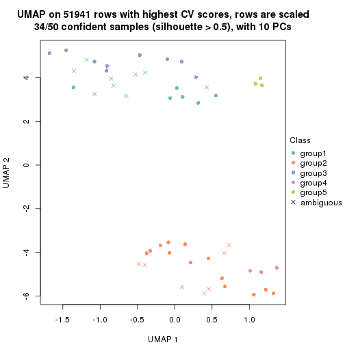
Following heatmap shows how subgroups are split when increasing k:
collect_classes(res)
Test correlation between subgroups and known annotations. If the known annotation is numeric, one-way ANOVA test is applied, and if the known annotation is discrete, chi-squared contingency table test is applied.
test_to_known_factors(res)
#> n agent(p) k
#> CV:kmeans 50 0.975 2
#> CV:kmeans 43 0.923 3
#> CV:kmeans 44 0.997 4
#> CV:kmeans 27 0.413 5
#> CV:kmeans 34 0.592 6
If matrix rows can be associated to genes, consider to use functional_enrichment(res,
...) to perform function enrichment for the signature genes. See this vignette for more detailed explanations.
The object with results only for a single top-value method and a single partition method can be extracted as:
res = res_list["CV", "skmeans"]
# you can also extract it by
# res = res_list["CV:skmeans"]
A summary of res and all the functions that can be applied to it:
res
#> A 'ConsensusPartition' object with k = 2, 3, 4, 5, 6.
#> On a matrix with 51941 rows and 50 columns.
#> Top rows (1000, 2000, 3000, 4000, 5000) are extracted by 'CV' method.
#> Subgroups are detected by 'skmeans' method.
#> Performed in total 1250 partitions by row resampling.
#> Best k for subgroups seems to be 2.
#>
#> Following methods can be applied to this 'ConsensusPartition' object:
#> [1] "cola_report" "collect_classes" "collect_plots"
#> [4] "collect_stats" "colnames" "compare_signatures"
#> [7] "consensus_heatmap" "dimension_reduction" "functional_enrichment"
#> [10] "get_anno_col" "get_anno" "get_classes"
#> [13] "get_consensus" "get_matrix" "get_membership"
#> [16] "get_param" "get_signatures" "get_stats"
#> [19] "is_best_k" "is_stable_k" "membership_heatmap"
#> [22] "ncol" "nrow" "plot_ecdf"
#> [25] "rownames" "select_partition_number" "show"
#> [28] "suggest_best_k" "test_to_known_factors"
collect_plots() function collects all the plots made from res for all k (number of partitions)
into one single page to provide an easy and fast comparison between different k.
collect_plots(res)
The plots are:
k and the heatmap of
predicted classes for each k.k.k.k.All the plots in panels can be made by individual functions and they are plotted later in this section.
select_partition_number() produces several plots showing different
statistics for choosing “optimized” k. There are following statistics:
k;k, the area increased is defined as \(A_k - A_{k-1}\).The detailed explanations of these statistics can be found in the cola vignette.
Generally speaking, lower PAC score, higher mean silhouette score or higher
concordance corresponds to better partition. Rand index and Jaccard index
measure how similar the current partition is compared to partition with k-1.
If they are too similar, we won't accept k is better than k-1.
select_partition_number(res)
The numeric values for all these statistics can be obtained by get_stats().
get_stats(res)
#> k 1-PAC mean_silhouette concordance area_increased Rand Jaccard
#> 2 2 0.530 0.883 0.928 0.5081 0.493 0.493
#> 3 3 0.650 0.865 0.891 0.2984 0.853 0.702
#> 4 4 0.783 0.849 0.889 0.1363 0.902 0.717
#> 5 5 0.765 0.798 0.804 0.0598 0.971 0.882
#> 6 6 0.730 0.540 0.625 0.0448 0.874 0.513
suggest_best_k() suggests the best \(k\) based on these statistics. The rules are as follows:
suggest_best_k(res)
#> [1] 2
Following shows the table of the partitions (You need to click the show/hide
code output link to see it). The membership matrix (columns with name p*)
is inferred by
clue::cl_consensus()
function with the SE method. Basically the value in the membership matrix
represents the probability to belong to a certain group. The finall class
label for an item is determined with the group with highest probability it
belongs to.
In get_classes() function, the entropy is calculated from the membership
matrix and the silhouette score is calculated from the consensus matrix.
cbind(get_classes(res, k = 2), get_membership(res, k = 2))
#> class entropy silhouette p1 p2
#> GSM388593 1 0.000 0.910 1.000 0.000
#> GSM388594 1 0.000 0.910 1.000 0.000
#> GSM388595 1 0.000 0.910 1.000 0.000
#> GSM388596 1 0.722 0.834 0.800 0.200
#> GSM388597 1 0.722 0.834 0.800 0.200
#> GSM388598 2 0.000 0.915 0.000 1.000
#> GSM388599 2 0.000 0.915 0.000 1.000
#> GSM388600 2 0.000 0.915 0.000 1.000
#> GSM388601 2 0.722 0.827 0.200 0.800
#> GSM388602 2 0.714 0.830 0.196 0.804
#> GSM388623 1 0.722 0.834 0.800 0.200
#> GSM388624 1 0.000 0.910 1.000 0.000
#> GSM388625 1 0.000 0.910 1.000 0.000
#> GSM388626 1 0.000 0.910 1.000 0.000
#> GSM388627 1 0.000 0.910 1.000 0.000
#> GSM388628 2 0.000 0.915 0.000 1.000
#> GSM388629 2 0.000 0.915 0.000 1.000
#> GSM388630 2 0.000 0.915 0.000 1.000
#> GSM388631 1 0.714 0.836 0.804 0.196
#> GSM388632 2 0.722 0.827 0.200 0.800
#> GSM388603 1 0.000 0.910 1.000 0.000
#> GSM388604 1 0.000 0.910 1.000 0.000
#> GSM388605 1 0.000 0.910 1.000 0.000
#> GSM388606 1 0.722 0.834 0.800 0.200
#> GSM388607 1 0.722 0.834 0.800 0.200
#> GSM388608 2 0.000 0.915 0.000 1.000
#> GSM388609 2 0.000 0.915 0.000 1.000
#> GSM388610 2 0.000 0.915 0.000 1.000
#> GSM388611 2 0.722 0.827 0.200 0.800
#> GSM388612 2 0.714 0.830 0.196 0.804
#> GSM388583 1 0.000 0.910 1.000 0.000
#> GSM388584 1 0.000 0.910 1.000 0.000
#> GSM388585 1 0.000 0.910 1.000 0.000
#> GSM388586 1 0.722 0.834 0.800 0.200
#> GSM388587 1 0.722 0.834 0.800 0.200
#> GSM388588 2 0.000 0.915 0.000 1.000
#> GSM388589 2 0.000 0.915 0.000 1.000
#> GSM388590 2 0.000 0.915 0.000 1.000
#> GSM388591 2 0.722 0.827 0.200 0.800
#> GSM388592 2 0.714 0.830 0.196 0.804
#> GSM388613 1 0.722 0.834 0.800 0.200
#> GSM388614 1 0.000 0.910 1.000 0.000
#> GSM388615 1 0.000 0.910 1.000 0.000
#> GSM388616 1 0.000 0.910 1.000 0.000
#> GSM388617 1 0.000 0.910 1.000 0.000
#> GSM388618 2 0.000 0.915 0.000 1.000
#> GSM388619 2 0.000 0.915 0.000 1.000
#> GSM388620 2 0.000 0.915 0.000 1.000
#> GSM388621 1 0.714 0.836 0.804 0.196
#> GSM388622 2 0.722 0.827 0.200 0.800
cbind(get_classes(res, k = 3), get_membership(res, k = 3))
#> class entropy silhouette p1 p2 p3
#> GSM388593 3 0.0892 0.861 0.020 0.000 0.980
#> GSM388594 1 0.0237 0.924 0.996 0.000 0.004
#> GSM388595 1 0.0237 0.924 0.996 0.000 0.004
#> GSM388596 3 0.3412 0.910 0.000 0.124 0.876
#> GSM388597 3 0.3412 0.910 0.000 0.124 0.876
#> GSM388598 2 0.0424 0.897 0.000 0.992 0.008
#> GSM388599 2 0.0237 0.898 0.000 0.996 0.004
#> GSM388600 2 0.0000 0.899 0.000 1.000 0.000
#> GSM388601 2 0.6140 0.482 0.404 0.596 0.000
#> GSM388602 2 0.3644 0.836 0.004 0.872 0.124
#> GSM388623 3 0.3412 0.910 0.000 0.124 0.876
#> GSM388624 3 0.2448 0.817 0.076 0.000 0.924
#> GSM388625 1 0.3482 0.922 0.872 0.000 0.128
#> GSM388626 1 0.3482 0.922 0.872 0.000 0.128
#> GSM388627 1 0.3412 0.921 0.876 0.000 0.124
#> GSM388628 2 0.0000 0.899 0.000 1.000 0.000
#> GSM388629 2 0.1643 0.884 0.044 0.956 0.000
#> GSM388630 2 0.0000 0.899 0.000 1.000 0.000
#> GSM388631 3 0.3412 0.852 0.124 0.000 0.876
#> GSM388632 2 0.5848 0.782 0.080 0.796 0.124
#> GSM388603 3 0.0892 0.861 0.020 0.000 0.980
#> GSM388604 1 0.0237 0.924 0.996 0.000 0.004
#> GSM388605 1 0.0237 0.924 0.996 0.000 0.004
#> GSM388606 3 0.3412 0.910 0.000 0.124 0.876
#> GSM388607 3 0.3412 0.910 0.000 0.124 0.876
#> GSM388608 2 0.0424 0.897 0.000 0.992 0.008
#> GSM388609 2 0.0237 0.898 0.000 0.996 0.004
#> GSM388610 2 0.0000 0.899 0.000 1.000 0.000
#> GSM388611 2 0.6140 0.482 0.404 0.596 0.000
#> GSM388612 2 0.3644 0.836 0.004 0.872 0.124
#> GSM388583 3 0.0892 0.861 0.020 0.000 0.980
#> GSM388584 1 0.0237 0.924 0.996 0.000 0.004
#> GSM388585 1 0.0237 0.924 0.996 0.000 0.004
#> GSM388586 3 0.3412 0.910 0.000 0.124 0.876
#> GSM388587 3 0.3412 0.910 0.000 0.124 0.876
#> GSM388588 2 0.0424 0.897 0.000 0.992 0.008
#> GSM388589 2 0.0237 0.898 0.000 0.996 0.004
#> GSM388590 2 0.0000 0.899 0.000 1.000 0.000
#> GSM388591 2 0.6140 0.482 0.404 0.596 0.000
#> GSM388592 2 0.3644 0.836 0.004 0.872 0.124
#> GSM388613 3 0.3715 0.906 0.004 0.128 0.868
#> GSM388614 3 0.2448 0.817 0.076 0.000 0.924
#> GSM388615 1 0.3482 0.922 0.872 0.000 0.128
#> GSM388616 1 0.3412 0.921 0.876 0.000 0.124
#> GSM388617 1 0.3482 0.922 0.872 0.000 0.128
#> GSM388618 2 0.0000 0.899 0.000 1.000 0.000
#> GSM388619 2 0.1643 0.884 0.044 0.956 0.000
#> GSM388620 2 0.0000 0.899 0.000 1.000 0.000
#> GSM388621 3 0.3412 0.852 0.124 0.000 0.876
#> GSM388622 2 0.5848 0.782 0.080 0.796 0.124
cbind(get_classes(res, k = 4), get_membership(res, k = 4))
#> class entropy silhouette p1 p2 p3 p4
#> GSM388593 3 0.4655 0.703 0.312 0.000 0.684 0.004
#> GSM388594 1 0.4018 0.827 0.772 0.000 0.004 0.224
#> GSM388595 1 0.4372 0.802 0.728 0.000 0.004 0.268
#> GSM388596 3 0.0188 0.863 0.000 0.004 0.996 0.000
#> GSM388597 3 0.0188 0.863 0.000 0.004 0.996 0.000
#> GSM388598 2 0.1389 0.935 0.000 0.952 0.048 0.000
#> GSM388599 2 0.1022 0.945 0.000 0.968 0.032 0.000
#> GSM388600 2 0.1389 0.945 0.000 0.952 0.000 0.048
#> GSM388601 4 0.0592 0.785 0.000 0.016 0.000 0.984
#> GSM388602 4 0.5427 0.838 0.100 0.164 0.000 0.736
#> GSM388623 3 0.0188 0.863 0.000 0.004 0.996 0.000
#> GSM388624 3 0.4905 0.641 0.364 0.000 0.632 0.004
#> GSM388625 1 0.0188 0.833 0.996 0.000 0.000 0.004
#> GSM388626 1 0.0188 0.833 0.996 0.000 0.000 0.004
#> GSM388627 1 0.0188 0.833 0.996 0.000 0.000 0.004
#> GSM388628 2 0.0927 0.950 0.000 0.976 0.008 0.016
#> GSM388629 2 0.1716 0.937 0.000 0.936 0.000 0.064
#> GSM388630 2 0.2271 0.930 0.000 0.916 0.008 0.076
#> GSM388631 3 0.1118 0.849 0.000 0.000 0.964 0.036
#> GSM388632 4 0.5397 0.796 0.212 0.068 0.000 0.720
#> GSM388603 3 0.4655 0.703 0.312 0.000 0.684 0.004
#> GSM388604 1 0.4018 0.827 0.772 0.000 0.004 0.224
#> GSM388605 1 0.4372 0.802 0.728 0.000 0.004 0.268
#> GSM388606 3 0.0188 0.863 0.000 0.004 0.996 0.000
#> GSM388607 3 0.0188 0.863 0.000 0.004 0.996 0.000
#> GSM388608 2 0.1389 0.935 0.000 0.952 0.048 0.000
#> GSM388609 2 0.1022 0.945 0.000 0.968 0.032 0.000
#> GSM388610 2 0.1389 0.945 0.000 0.952 0.000 0.048
#> GSM388611 4 0.0592 0.785 0.000 0.016 0.000 0.984
#> GSM388612 4 0.5427 0.838 0.100 0.164 0.000 0.736
#> GSM388583 3 0.4655 0.703 0.312 0.000 0.684 0.004
#> GSM388584 1 0.4018 0.827 0.772 0.000 0.004 0.224
#> GSM388585 1 0.4372 0.802 0.728 0.000 0.004 0.268
#> GSM388586 3 0.0188 0.863 0.000 0.004 0.996 0.000
#> GSM388587 3 0.0188 0.863 0.000 0.004 0.996 0.000
#> GSM388588 2 0.1389 0.935 0.000 0.952 0.048 0.000
#> GSM388589 2 0.1022 0.945 0.000 0.968 0.032 0.000
#> GSM388590 2 0.1389 0.945 0.000 0.952 0.000 0.048
#> GSM388591 4 0.0592 0.785 0.000 0.016 0.000 0.984
#> GSM388592 4 0.5427 0.838 0.100 0.164 0.000 0.736
#> GSM388613 3 0.0804 0.857 0.012 0.008 0.980 0.000
#> GSM388614 3 0.4800 0.673 0.340 0.000 0.656 0.004
#> GSM388615 1 0.0188 0.833 0.996 0.000 0.000 0.004
#> GSM388616 1 0.0188 0.833 0.996 0.000 0.000 0.004
#> GSM388617 1 0.0188 0.833 0.996 0.000 0.000 0.004
#> GSM388618 2 0.0927 0.950 0.000 0.976 0.008 0.016
#> GSM388619 2 0.1716 0.937 0.000 0.936 0.000 0.064
#> GSM388620 2 0.2271 0.930 0.000 0.916 0.008 0.076
#> GSM388621 3 0.1118 0.849 0.000 0.000 0.964 0.036
#> GSM388622 4 0.5397 0.796 0.212 0.068 0.000 0.720
cbind(get_classes(res, k = 5), get_membership(res, k = 5))
#> class entropy silhouette p1 p2 p3 p4 p5
#> GSM388593 3 0.6348 0.453 0.376 0.000 0.504 0.020 0.100
#> GSM388594 5 0.4235 0.890 0.424 0.000 0.000 0.000 0.576
#> GSM388595 5 0.4165 0.901 0.320 0.000 0.000 0.008 0.672
#> GSM388596 3 0.0290 0.765 0.000 0.000 0.992 0.000 0.008
#> GSM388597 3 0.0000 0.766 0.000 0.000 1.000 0.000 0.000
#> GSM388598 2 0.4926 0.814 0.000 0.732 0.044 0.032 0.192
#> GSM388599 2 0.5137 0.817 0.000 0.728 0.032 0.068 0.172
#> GSM388600 2 0.1981 0.838 0.000 0.924 0.000 0.048 0.028
#> GSM388601 4 0.3039 0.819 0.000 0.000 0.000 0.808 0.192
#> GSM388602 4 0.1549 0.858 0.016 0.040 0.000 0.944 0.000
#> GSM388623 3 0.1996 0.737 0.048 0.000 0.928 0.012 0.012
#> GSM388624 3 0.5981 0.383 0.432 0.000 0.476 0.008 0.084
#> GSM388625 1 0.0290 0.995 0.992 0.000 0.000 0.008 0.000
#> GSM388626 1 0.0162 0.993 0.996 0.000 0.000 0.004 0.000
#> GSM388627 1 0.0290 0.995 0.992 0.000 0.000 0.008 0.000
#> GSM388628 2 0.1041 0.854 0.000 0.964 0.000 0.032 0.004
#> GSM388629 2 0.3055 0.813 0.000 0.864 0.000 0.064 0.072
#> GSM388630 2 0.2463 0.846 0.000 0.888 0.004 0.100 0.008
#> GSM388631 3 0.3123 0.722 0.000 0.000 0.828 0.012 0.160
#> GSM388632 4 0.2890 0.804 0.160 0.004 0.000 0.836 0.000
#> GSM388603 3 0.6348 0.453 0.376 0.000 0.504 0.020 0.100
#> GSM388604 5 0.4235 0.890 0.424 0.000 0.000 0.000 0.576
#> GSM388605 5 0.4165 0.901 0.320 0.000 0.000 0.008 0.672
#> GSM388606 3 0.0290 0.765 0.000 0.000 0.992 0.000 0.008
#> GSM388607 3 0.0000 0.766 0.000 0.000 1.000 0.000 0.000
#> GSM388608 2 0.4926 0.814 0.000 0.732 0.044 0.032 0.192
#> GSM388609 2 0.5137 0.817 0.000 0.728 0.032 0.068 0.172
#> GSM388610 2 0.1981 0.838 0.000 0.924 0.000 0.048 0.028
#> GSM388611 4 0.3039 0.819 0.000 0.000 0.000 0.808 0.192
#> GSM388612 4 0.1549 0.858 0.016 0.040 0.000 0.944 0.000
#> GSM388583 3 0.6348 0.453 0.376 0.000 0.504 0.020 0.100
#> GSM388584 5 0.4235 0.890 0.424 0.000 0.000 0.000 0.576
#> GSM388585 5 0.4165 0.901 0.320 0.000 0.000 0.008 0.672
#> GSM388586 3 0.0290 0.765 0.000 0.000 0.992 0.000 0.008
#> GSM388587 3 0.0000 0.766 0.000 0.000 1.000 0.000 0.000
#> GSM388588 2 0.4926 0.814 0.000 0.732 0.044 0.032 0.192
#> GSM388589 2 0.5137 0.817 0.000 0.728 0.032 0.068 0.172
#> GSM388590 2 0.1981 0.838 0.000 0.924 0.000 0.048 0.028
#> GSM388591 4 0.3039 0.819 0.000 0.000 0.000 0.808 0.192
#> GSM388592 4 0.1549 0.858 0.016 0.040 0.000 0.944 0.000
#> GSM388613 3 0.4535 0.596 0.172 0.008 0.768 0.016 0.036
#> GSM388614 3 0.5972 0.407 0.420 0.000 0.488 0.008 0.084
#> GSM388615 1 0.0290 0.995 0.992 0.000 0.000 0.008 0.000
#> GSM388616 1 0.0162 0.993 0.996 0.000 0.000 0.004 0.000
#> GSM388617 1 0.0324 0.986 0.992 0.000 0.000 0.004 0.004
#> GSM388618 2 0.1041 0.854 0.000 0.964 0.000 0.032 0.004
#> GSM388619 2 0.3055 0.813 0.000 0.864 0.000 0.064 0.072
#> GSM388620 2 0.2517 0.845 0.000 0.884 0.004 0.104 0.008
#> GSM388621 3 0.3123 0.722 0.000 0.000 0.828 0.012 0.160
#> GSM388622 4 0.2890 0.804 0.160 0.004 0.000 0.836 0.000
cbind(get_classes(res, k = 6), get_membership(res, k = 6))
#> class entropy silhouette p1 p2 p3 p4 p5 p6
#> GSM388593 6 0.0363 0.7238 0.000 0.000 0.012 0.000 0.000 0.988
#> GSM388594 4 0.6579 0.2647 0.392 0.000 0.152 0.408 0.004 0.044
#> GSM388595 4 0.6899 0.3369 0.312 0.000 0.184 0.440 0.056 0.008
#> GSM388596 3 0.3217 0.9027 0.000 0.000 0.768 0.000 0.008 0.224
#> GSM388597 3 0.2941 0.9063 0.000 0.000 0.780 0.000 0.000 0.220
#> GSM388598 2 0.2376 0.5562 0.008 0.884 0.012 0.000 0.096 0.000
#> GSM388599 2 0.0260 0.5823 0.000 0.992 0.008 0.000 0.000 0.000
#> GSM388600 5 0.3838 0.6959 0.000 0.448 0.000 0.000 0.552 0.000
#> GSM388601 4 0.3784 0.4813 0.000 0.000 0.012 0.680 0.308 0.000
#> GSM388602 4 0.6320 0.4230 0.096 0.048 0.000 0.468 0.380 0.008
#> GSM388623 3 0.4883 0.7764 0.036 0.084 0.708 0.000 0.000 0.172
#> GSM388624 6 0.1524 0.6636 0.060 0.000 0.008 0.000 0.000 0.932
#> GSM388625 1 0.3428 0.9898 0.696 0.000 0.000 0.000 0.000 0.304
#> GSM388626 1 0.3464 0.9869 0.688 0.000 0.000 0.000 0.000 0.312
#> GSM388627 1 0.3547 0.9873 0.696 0.000 0.004 0.000 0.000 0.300
#> GSM388628 2 0.3797 -0.3904 0.000 0.580 0.000 0.000 0.420 0.000
#> GSM388629 5 0.5038 0.6156 0.000 0.316 0.004 0.084 0.596 0.000
#> GSM388630 2 0.4426 -0.1842 0.016 0.616 0.000 0.008 0.356 0.004
#> GSM388631 6 0.5389 -0.0948 0.052 0.000 0.432 0.004 0.020 0.492
#> GSM388632 4 0.6656 0.3923 0.140 0.000 0.000 0.476 0.304 0.080
#> GSM388603 6 0.0363 0.7238 0.000 0.000 0.012 0.000 0.000 0.988
#> GSM388604 4 0.6579 0.2647 0.392 0.000 0.152 0.408 0.004 0.044
#> GSM388605 4 0.6899 0.3369 0.312 0.000 0.184 0.440 0.056 0.008
#> GSM388606 3 0.3217 0.9027 0.000 0.000 0.768 0.000 0.008 0.224
#> GSM388607 3 0.2941 0.9063 0.000 0.000 0.780 0.000 0.000 0.220
#> GSM388608 2 0.2376 0.5562 0.008 0.884 0.012 0.000 0.096 0.000
#> GSM388609 2 0.0260 0.5823 0.000 0.992 0.008 0.000 0.000 0.000
#> GSM388610 5 0.3838 0.6959 0.000 0.448 0.000 0.000 0.552 0.000
#> GSM388611 4 0.3784 0.4813 0.000 0.000 0.012 0.680 0.308 0.000
#> GSM388612 4 0.6320 0.4230 0.096 0.048 0.000 0.468 0.380 0.008
#> GSM388583 6 0.0363 0.7238 0.000 0.000 0.012 0.000 0.000 0.988
#> GSM388584 4 0.6579 0.2647 0.392 0.000 0.152 0.408 0.004 0.044
#> GSM388585 4 0.6899 0.3369 0.312 0.000 0.184 0.440 0.056 0.008
#> GSM388586 3 0.3217 0.9027 0.000 0.000 0.768 0.000 0.008 0.224
#> GSM388587 3 0.2941 0.9063 0.000 0.000 0.780 0.000 0.000 0.220
#> GSM388588 2 0.2376 0.5562 0.008 0.884 0.012 0.000 0.096 0.000
#> GSM388589 2 0.0260 0.5823 0.000 0.992 0.008 0.000 0.000 0.000
#> GSM388590 5 0.3838 0.6959 0.000 0.448 0.000 0.000 0.552 0.000
#> GSM388591 4 0.3784 0.4813 0.000 0.000 0.012 0.680 0.308 0.000
#> GSM388592 4 0.6320 0.4230 0.096 0.048 0.000 0.468 0.380 0.008
#> GSM388613 3 0.5286 0.6727 0.092 0.112 0.696 0.000 0.000 0.100
#> GSM388614 6 0.1780 0.6890 0.048 0.000 0.028 0.000 0.000 0.924
#> GSM388615 1 0.3428 0.9898 0.696 0.000 0.000 0.000 0.000 0.304
#> GSM388616 1 0.3464 0.9869 0.688 0.000 0.000 0.000 0.000 0.312
#> GSM388617 1 0.3634 0.9810 0.696 0.000 0.008 0.000 0.000 0.296
#> GSM388618 2 0.3797 -0.3904 0.000 0.580 0.000 0.000 0.420 0.000
#> GSM388619 5 0.5038 0.6156 0.000 0.316 0.004 0.084 0.596 0.000
#> GSM388620 2 0.4541 -0.1902 0.016 0.604 0.000 0.012 0.364 0.004
#> GSM388621 6 0.5389 -0.0948 0.052 0.000 0.432 0.004 0.020 0.492
#> GSM388622 4 0.6656 0.3923 0.140 0.000 0.000 0.476 0.304 0.080
Heatmaps for the consensus matrix. It visualizes the probability of two samples to be in a same group.
consensus_heatmap(res, k = 2)
consensus_heatmap(res, k = 3)
consensus_heatmap(res, k = 4)
consensus_heatmap(res, k = 5)
consensus_heatmap(res, k = 6)
Heatmaps for the membership of samples in all partitions to see how consistent they are:
membership_heatmap(res, k = 2)
membership_heatmap(res, k = 3)
membership_heatmap(res, k = 4)
membership_heatmap(res, k = 5)
membership_heatmap(res, k = 6)
As soon as we have had the classes for columns, we can look for signatures which are significantly different between classes which can be candidate marks for certain classes. Following are the heatmaps for signatures.
Signature heatmaps where rows are scaled:
get_signatures(res, k = 2)
get_signatures(res, k = 3)
get_signatures(res, k = 4)
get_signatures(res, k = 5)
get_signatures(res, k = 6)
Signature heatmaps where rows are not scaled:
get_signatures(res, k = 2, scale_rows = FALSE)
get_signatures(res, k = 3, scale_rows = FALSE)
get_signatures(res, k = 4, scale_rows = FALSE)
get_signatures(res, k = 5, scale_rows = FALSE)
get_signatures(res, k = 6, scale_rows = FALSE)
Compare the overlap of signatures from different k:
compare_signatures(res)
get_signature() returns a data frame invisibly. TO get the list of signatures, the function
call should be assigned to a variable explicitly. In following code, if plot argument is set
to FALSE, no heatmap is plotted while only the differential analysis is performed.
# code only for demonstration
tb = get_signature(res, k = ..., plot = FALSE)
An example of the output of tb is:
#> which_row fdr mean_1 mean_2 scaled_mean_1 scaled_mean_2 km
#> 1 38 0.042760348 8.373488 9.131774 -0.5533452 0.5164555 1
#> 2 40 0.018707592 7.106213 8.469186 -0.6173731 0.5762149 1
#> 3 55 0.019134737 10.221463 11.207825 -0.6159697 0.5749050 1
#> 4 59 0.006059896 5.921854 7.869574 -0.6899429 0.6439467 1
#> 5 60 0.018055526 8.928898 10.211722 -0.6204761 0.5791110 1
#> 6 98 0.009384629 15.714769 14.887706 0.6635654 -0.6193277 2
...
The columns in tb are:
which_row: row indices corresponding to the input matrix.fdr: FDR for the differential test. mean_x: The mean value in group x.scaled_mean_x: The mean value in group x after rows are scaled.km: Row groups if k-means clustering is applied to rows.UMAP plot which shows how samples are separated.
dimension_reduction(res, k = 2, method = "UMAP")
dimension_reduction(res, k = 3, method = "UMAP")
dimension_reduction(res, k = 4, method = "UMAP")

dimension_reduction(res, k = 5, method = "UMAP")
dimension_reduction(res, k = 6, method = "UMAP")
Following heatmap shows how subgroups are split when increasing k:
collect_classes(res)
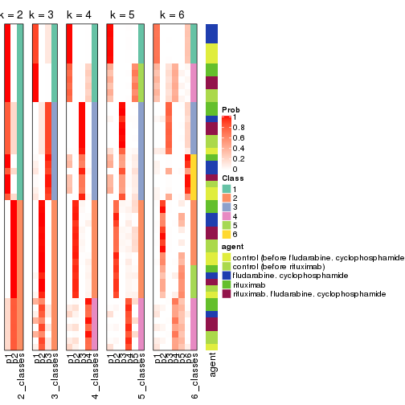
Test correlation between subgroups and known annotations. If the known annotation is numeric, one-way ANOVA test is applied, and if the known annotation is discrete, chi-squared contingency table test is applied.
test_to_known_factors(res)
#> n agent(p) k
#> CV:skmeans 50 0.975 2
#> CV:skmeans 47 1.000 3
#> CV:skmeans 50 1.000 4
#> CV:skmeans 45 0.617 5
#> CV:skmeans 30 0.617 6
If matrix rows can be associated to genes, consider to use functional_enrichment(res,
...) to perform function enrichment for the signature genes. See this vignette for more detailed explanations.
The object with results only for a single top-value method and a single partition method can be extracted as:
res = res_list["CV", "pam"]
# you can also extract it by
# res = res_list["CV:pam"]
A summary of res and all the functions that can be applied to it:
res
#> A 'ConsensusPartition' object with k = 2, 3, 4, 5, 6.
#> On a matrix with 51941 rows and 50 columns.
#> Top rows (1000, 2000, 3000, 4000, 5000) are extracted by 'CV' method.
#> Subgroups are detected by 'pam' method.
#> Performed in total 1250 partitions by row resampling.
#> Best k for subgroups seems to be 6.
#>
#> Following methods can be applied to this 'ConsensusPartition' object:
#> [1] "cola_report" "collect_classes" "collect_plots"
#> [4] "collect_stats" "colnames" "compare_signatures"
#> [7] "consensus_heatmap" "dimension_reduction" "functional_enrichment"
#> [10] "get_anno_col" "get_anno" "get_classes"
#> [13] "get_consensus" "get_matrix" "get_membership"
#> [16] "get_param" "get_signatures" "get_stats"
#> [19] "is_best_k" "is_stable_k" "membership_heatmap"
#> [22] "ncol" "nrow" "plot_ecdf"
#> [25] "rownames" "select_partition_number" "show"
#> [28] "suggest_best_k" "test_to_known_factors"
collect_plots() function collects all the plots made from res for all k (number of partitions)
into one single page to provide an easy and fast comparison between different k.
collect_plots(res)
The plots are:
k and the heatmap of
predicted classes for each k.k.k.k.All the plots in panels can be made by individual functions and they are plotted later in this section.
select_partition_number() produces several plots showing different
statistics for choosing “optimized” k. There are following statistics:
k;k, the area increased is defined as \(A_k - A_{k-1}\).The detailed explanations of these statistics can be found in the cola vignette.
Generally speaking, lower PAC score, higher mean silhouette score or higher
concordance corresponds to better partition. Rand index and Jaccard index
measure how similar the current partition is compared to partition with k-1.
If they are too similar, we won't accept k is better than k-1.
select_partition_number(res)
The numeric values for all these statistics can be obtained by get_stats().
get_stats(res)
#> k 1-PAC mean_silhouette concordance area_increased Rand Jaccard
#> 2 2 0.735 0.844 0.936 0.5088 0.493 0.493
#> 3 3 0.666 0.823 0.892 0.2616 0.770 0.567
#> 4 4 0.661 0.765 0.856 0.0901 0.919 0.770
#> 5 5 0.878 0.828 0.938 0.0609 0.968 0.887
#> 6 6 0.830 0.850 0.902 0.0704 0.935 0.746
suggest_best_k() suggests the best \(k\) based on these statistics. The rules are as follows:
suggest_best_k(res)
#> [1] 6
Following shows the table of the partitions (You need to click the show/hide
code output link to see it). The membership matrix (columns with name p*)
is inferred by
clue::cl_consensus()
function with the SE method. Basically the value in the membership matrix
represents the probability to belong to a certain group. The finall class
label for an item is determined with the group with highest probability it
belongs to.
In get_classes() function, the entropy is calculated from the membership
matrix and the silhouette score is calculated from the consensus matrix.
cbind(get_classes(res, k = 2), get_membership(res, k = 2))
#> class entropy silhouette p1 p2
#> GSM388593 1 0.0000 0.942 1.000 0.000
#> GSM388594 1 0.0000 0.942 1.000 0.000
#> GSM388595 1 0.0000 0.942 1.000 0.000
#> GSM388596 2 0.2043 0.898 0.032 0.968
#> GSM388597 1 0.9933 0.175 0.548 0.452
#> GSM388598 2 0.0000 0.911 0.000 1.000
#> GSM388599 2 0.0000 0.911 0.000 1.000
#> GSM388600 2 0.0000 0.911 0.000 1.000
#> GSM388601 1 0.1414 0.927 0.980 0.020
#> GSM388602 2 0.7299 0.737 0.204 0.796
#> GSM388623 1 0.7376 0.701 0.792 0.208
#> GSM388624 1 0.0000 0.942 1.000 0.000
#> GSM388625 1 0.0000 0.942 1.000 0.000
#> GSM388626 1 0.0000 0.942 1.000 0.000
#> GSM388627 1 0.0000 0.942 1.000 0.000
#> GSM388628 2 0.0000 0.911 0.000 1.000
#> GSM388629 2 0.0376 0.910 0.004 0.996
#> GSM388630 2 0.0000 0.911 0.000 1.000
#> GSM388631 2 0.2043 0.898 0.032 0.968
#> GSM388632 2 0.9866 0.308 0.432 0.568
#> GSM388603 1 0.0376 0.940 0.996 0.004
#> GSM388604 1 0.0000 0.942 1.000 0.000
#> GSM388605 1 0.0000 0.942 1.000 0.000
#> GSM388606 2 0.1414 0.904 0.020 0.980
#> GSM388607 2 0.4690 0.841 0.100 0.900
#> GSM388608 2 0.0000 0.911 0.000 1.000
#> GSM388609 2 0.0000 0.911 0.000 1.000
#> GSM388610 2 0.0000 0.911 0.000 1.000
#> GSM388611 1 0.1184 0.931 0.984 0.016
#> GSM388612 2 0.7219 0.741 0.200 0.800
#> GSM388583 1 0.0376 0.940 0.996 0.004
#> GSM388584 1 0.0000 0.942 1.000 0.000
#> GSM388585 1 0.0000 0.942 1.000 0.000
#> GSM388586 2 0.1184 0.905 0.016 0.984
#> GSM388587 1 0.9710 0.327 0.600 0.400
#> GSM388588 2 0.0000 0.911 0.000 1.000
#> GSM388589 2 0.0000 0.911 0.000 1.000
#> GSM388590 2 0.0000 0.911 0.000 1.000
#> GSM388591 1 0.1184 0.931 0.984 0.016
#> GSM388592 2 0.7219 0.741 0.200 0.800
#> GSM388613 2 0.9754 0.262 0.408 0.592
#> GSM388614 1 0.0000 0.942 1.000 0.000
#> GSM388615 1 0.0000 0.942 1.000 0.000
#> GSM388616 1 0.0000 0.942 1.000 0.000
#> GSM388617 1 0.0000 0.942 1.000 0.000
#> GSM388618 2 0.0000 0.911 0.000 1.000
#> GSM388619 2 0.0376 0.910 0.004 0.996
#> GSM388620 2 0.0000 0.911 0.000 1.000
#> GSM388621 2 0.2043 0.898 0.032 0.968
#> GSM388622 2 0.9661 0.407 0.392 0.608
cbind(get_classes(res, k = 3), get_membership(res, k = 3))
#> class entropy silhouette p1 p2 p3
#> GSM388593 1 0.0000 0.9001 1.000 0.000 0.000
#> GSM388594 1 0.0000 0.9001 1.000 0.000 0.000
#> GSM388595 1 0.4555 0.7689 0.800 0.000 0.200
#> GSM388596 3 0.4555 0.9163 0.000 0.200 0.800
#> GSM388597 3 0.4555 0.9163 0.000 0.200 0.800
#> GSM388598 2 0.0000 0.9159 0.000 1.000 0.000
#> GSM388599 2 0.0000 0.9159 0.000 1.000 0.000
#> GSM388600 2 0.0000 0.9159 0.000 1.000 0.000
#> GSM388601 1 0.3832 0.8119 0.880 0.100 0.020
#> GSM388602 2 0.4555 0.7261 0.200 0.800 0.000
#> GSM388623 3 0.4555 0.9163 0.000 0.200 0.800
#> GSM388624 1 0.0000 0.9001 1.000 0.000 0.000
#> GSM388625 1 0.0000 0.9001 1.000 0.000 0.000
#> GSM388626 1 0.0000 0.9001 1.000 0.000 0.000
#> GSM388627 1 0.0000 0.9001 1.000 0.000 0.000
#> GSM388628 2 0.0000 0.9159 0.000 1.000 0.000
#> GSM388629 2 0.0237 0.9132 0.004 0.996 0.000
#> GSM388630 2 0.0000 0.9159 0.000 1.000 0.000
#> GSM388631 3 0.4555 0.9163 0.000 0.200 0.800
#> GSM388632 1 0.6299 -0.0302 0.524 0.476 0.000
#> GSM388603 1 0.6513 0.0476 0.520 0.004 0.476
#> GSM388604 1 0.0000 0.9001 1.000 0.000 0.000
#> GSM388605 1 0.4555 0.7689 0.800 0.000 0.200
#> GSM388606 3 0.4555 0.9163 0.000 0.200 0.800
#> GSM388607 3 0.4555 0.9163 0.000 0.200 0.800
#> GSM388608 2 0.0000 0.9159 0.000 1.000 0.000
#> GSM388609 2 0.0000 0.9159 0.000 1.000 0.000
#> GSM388610 2 0.0000 0.9159 0.000 1.000 0.000
#> GSM388611 1 0.1315 0.8905 0.972 0.008 0.020
#> GSM388612 2 0.4555 0.7261 0.200 0.800 0.000
#> GSM388583 1 0.0237 0.8978 0.996 0.004 0.000
#> GSM388584 1 0.0000 0.9001 1.000 0.000 0.000
#> GSM388585 1 0.4555 0.7689 0.800 0.000 0.200
#> GSM388586 3 0.4555 0.9163 0.000 0.200 0.800
#> GSM388587 3 0.4555 0.9163 0.000 0.200 0.800
#> GSM388588 2 0.0000 0.9159 0.000 1.000 0.000
#> GSM388589 2 0.0000 0.9159 0.000 1.000 0.000
#> GSM388590 2 0.0000 0.9159 0.000 1.000 0.000
#> GSM388591 1 0.1315 0.8905 0.972 0.008 0.020
#> GSM388592 2 0.4555 0.7261 0.200 0.800 0.000
#> GSM388613 3 0.9626 0.3331 0.392 0.204 0.404
#> GSM388614 3 0.4974 0.5991 0.236 0.000 0.764
#> GSM388615 1 0.0000 0.9001 1.000 0.000 0.000
#> GSM388616 1 0.0000 0.9001 1.000 0.000 0.000
#> GSM388617 1 0.0000 0.9001 1.000 0.000 0.000
#> GSM388618 2 0.0000 0.9159 0.000 1.000 0.000
#> GSM388619 2 0.0237 0.9132 0.004 0.996 0.000
#> GSM388620 2 0.0000 0.9159 0.000 1.000 0.000
#> GSM388621 3 0.4555 0.9163 0.000 0.200 0.800
#> GSM388622 2 0.6154 0.3352 0.408 0.592 0.000
cbind(get_classes(res, k = 4), get_membership(res, k = 4))
#> class entropy silhouette p1 p2 p3 p4
#> GSM388593 1 0.0336 0.804 0.992 0.000 0.008 0.000
#> GSM388594 1 0.0000 0.811 1.000 0.000 0.000 0.000
#> GSM388595 1 0.6497 0.426 0.596 0.000 0.100 0.304
#> GSM388596 3 0.2345 0.867 0.000 0.100 0.900 0.000
#> GSM388597 3 0.2345 0.867 0.000 0.100 0.900 0.000
#> GSM388598 2 0.0188 0.927 0.000 0.996 0.004 0.000
#> GSM388599 2 0.0188 0.927 0.000 0.996 0.004 0.000
#> GSM388600 2 0.0188 0.925 0.000 0.996 0.000 0.004
#> GSM388601 4 0.4431 0.856 0.304 0.000 0.000 0.696
#> GSM388602 4 0.7028 0.605 0.196 0.228 0.000 0.576
#> GSM388623 3 0.2345 0.867 0.000 0.100 0.900 0.000
#> GSM388624 1 0.0000 0.811 1.000 0.000 0.000 0.000
#> GSM388625 1 0.0000 0.811 1.000 0.000 0.000 0.000
#> GSM388626 1 0.0000 0.811 1.000 0.000 0.000 0.000
#> GSM388627 1 0.0000 0.811 1.000 0.000 0.000 0.000
#> GSM388628 2 0.0188 0.927 0.000 0.996 0.004 0.000
#> GSM388629 2 0.0817 0.910 0.024 0.976 0.000 0.000
#> GSM388630 2 0.0524 0.924 0.000 0.988 0.004 0.008
#> GSM388631 3 0.2345 0.867 0.000 0.100 0.900 0.000
#> GSM388632 1 0.5294 -0.130 0.508 0.484 0.000 0.008
#> GSM388603 3 0.4941 0.191 0.436 0.000 0.564 0.000
#> GSM388604 1 0.0000 0.811 1.000 0.000 0.000 0.000
#> GSM388605 1 0.6497 0.426 0.596 0.000 0.100 0.304
#> GSM388606 3 0.2345 0.867 0.000 0.100 0.900 0.000
#> GSM388607 3 0.2345 0.867 0.000 0.100 0.900 0.000
#> GSM388608 2 0.0188 0.927 0.000 0.996 0.004 0.000
#> GSM388609 2 0.0188 0.927 0.000 0.996 0.004 0.000
#> GSM388610 2 0.0000 0.926 0.000 1.000 0.000 0.000
#> GSM388611 4 0.4431 0.856 0.304 0.000 0.000 0.696
#> GSM388612 2 0.4881 0.637 0.196 0.756 0.000 0.048
#> GSM388583 1 0.1637 0.747 0.940 0.000 0.060 0.000
#> GSM388584 1 0.0000 0.811 1.000 0.000 0.000 0.000
#> GSM388585 1 0.6497 0.426 0.596 0.000 0.100 0.304
#> GSM388586 3 0.2345 0.867 0.000 0.100 0.900 0.000
#> GSM388587 3 0.2345 0.867 0.000 0.100 0.900 0.000
#> GSM388588 2 0.0188 0.927 0.000 0.996 0.004 0.000
#> GSM388589 2 0.0188 0.927 0.000 0.996 0.004 0.000
#> GSM388590 2 0.0000 0.926 0.000 1.000 0.000 0.000
#> GSM388591 4 0.4431 0.856 0.304 0.000 0.000 0.696
#> GSM388592 2 0.3852 0.689 0.192 0.800 0.000 0.008
#> GSM388613 3 0.6837 0.326 0.392 0.104 0.504 0.000
#> GSM388614 3 0.3942 0.562 0.236 0.000 0.764 0.000
#> GSM388615 1 0.0000 0.811 1.000 0.000 0.000 0.000
#> GSM388616 1 0.0000 0.811 1.000 0.000 0.000 0.000
#> GSM388617 1 0.0000 0.811 1.000 0.000 0.000 0.000
#> GSM388618 2 0.0188 0.927 0.000 0.996 0.004 0.000
#> GSM388619 2 0.1209 0.901 0.032 0.964 0.004 0.000
#> GSM388620 2 0.0524 0.924 0.000 0.988 0.004 0.008
#> GSM388621 3 0.2345 0.867 0.000 0.100 0.900 0.000
#> GSM388622 2 0.5172 0.223 0.404 0.588 0.000 0.008
cbind(get_classes(res, k = 5), get_membership(res, k = 5))
#> class entropy silhouette p1 p2 p3 p4 p5
#> GSM388593 1 0.0000 0.9313 1.000 0.000 0.000 0.000 0
#> GSM388594 1 0.0510 0.9232 0.984 0.000 0.000 0.016 0
#> GSM388595 5 0.0000 1.0000 0.000 0.000 0.000 0.000 1
#> GSM388596 3 0.0000 0.8483 0.000 0.000 1.000 0.000 0
#> GSM388597 3 0.0000 0.8483 0.000 0.000 1.000 0.000 0
#> GSM388598 2 0.0162 0.9369 0.000 0.996 0.004 0.000 0
#> GSM388599 2 0.0162 0.9369 0.000 0.996 0.004 0.000 0
#> GSM388600 2 0.0162 0.9347 0.000 0.996 0.000 0.004 0
#> GSM388601 4 0.0510 0.8091 0.016 0.000 0.000 0.984 0
#> GSM388602 4 0.5941 0.4428 0.180 0.228 0.000 0.592 0
#> GSM388623 3 0.0000 0.8483 0.000 0.000 1.000 0.000 0
#> GSM388624 1 0.0000 0.9313 1.000 0.000 0.000 0.000 0
#> GSM388625 1 0.0000 0.9313 1.000 0.000 0.000 0.000 0
#> GSM388626 1 0.0000 0.9313 1.000 0.000 0.000 0.000 0
#> GSM388627 1 0.0000 0.9313 1.000 0.000 0.000 0.000 0
#> GSM388628 2 0.0162 0.9369 0.000 0.996 0.004 0.000 0
#> GSM388629 2 0.0510 0.9257 0.016 0.984 0.000 0.000 0
#> GSM388630 2 0.0324 0.9357 0.000 0.992 0.004 0.004 0
#> GSM388631 3 0.0000 0.8483 0.000 0.000 1.000 0.000 0
#> GSM388632 1 0.4448 -0.0528 0.516 0.480 0.000 0.004 0
#> GSM388603 3 0.4291 0.1908 0.464 0.000 0.536 0.000 0
#> GSM388604 1 0.0510 0.9232 0.984 0.000 0.000 0.016 0
#> GSM388605 5 0.0000 1.0000 0.000 0.000 0.000 0.000 1
#> GSM388606 3 0.0000 0.8483 0.000 0.000 1.000 0.000 0
#> GSM388607 3 0.0000 0.8483 0.000 0.000 1.000 0.000 0
#> GSM388608 2 0.0162 0.9369 0.000 0.996 0.004 0.000 0
#> GSM388609 2 0.0162 0.9369 0.000 0.996 0.004 0.000 0
#> GSM388610 2 0.0000 0.9354 0.000 1.000 0.000 0.000 0
#> GSM388611 4 0.0510 0.8091 0.016 0.000 0.000 0.984 0
#> GSM388612 2 0.3882 0.7142 0.168 0.788 0.000 0.044 0
#> GSM388583 1 0.0963 0.8929 0.964 0.000 0.036 0.000 0
#> GSM388584 1 0.0510 0.9232 0.984 0.000 0.000 0.016 0
#> GSM388585 5 0.0000 1.0000 0.000 0.000 0.000 0.000 1
#> GSM388586 3 0.0000 0.8483 0.000 0.000 1.000 0.000 0
#> GSM388587 3 0.0000 0.8483 0.000 0.000 1.000 0.000 0
#> GSM388588 2 0.0162 0.9369 0.000 0.996 0.004 0.000 0
#> GSM388589 2 0.0162 0.9369 0.000 0.996 0.004 0.000 0
#> GSM388590 2 0.0000 0.9354 0.000 1.000 0.000 0.000 0
#> GSM388591 4 0.0510 0.8091 0.016 0.000 0.000 0.984 0
#> GSM388592 2 0.2848 0.7693 0.156 0.840 0.000 0.004 0
#> GSM388613 3 0.4425 0.3734 0.392 0.008 0.600 0.000 0
#> GSM388614 3 0.4060 0.4472 0.360 0.000 0.640 0.000 0
#> GSM388615 1 0.0000 0.9313 1.000 0.000 0.000 0.000 0
#> GSM388616 1 0.0000 0.9313 1.000 0.000 0.000 0.000 0
#> GSM388617 1 0.0000 0.9313 1.000 0.000 0.000 0.000 0
#> GSM388618 2 0.0162 0.9369 0.000 0.996 0.004 0.000 0
#> GSM388619 2 0.0807 0.9228 0.012 0.976 0.012 0.000 0
#> GSM388620 2 0.0324 0.9357 0.000 0.992 0.004 0.004 0
#> GSM388621 3 0.0000 0.8483 0.000 0.000 1.000 0.000 0
#> GSM388622 2 0.4341 0.3202 0.404 0.592 0.000 0.004 0
cbind(get_classes(res, k = 6), get_membership(res, k = 6))
#> class entropy silhouette p1 p2 p3 p4 p5 p6
#> GSM388593 1 0.0146 0.955 0.996 0.000 0.004 0.000 0 0.000
#> GSM388594 1 0.1957 0.888 0.888 0.000 0.000 0.000 0 0.112
#> GSM388595 5 0.0000 1.000 0.000 0.000 0.000 0.000 1 0.000
#> GSM388596 3 0.0000 0.858 0.000 0.000 1.000 0.000 0 0.000
#> GSM388597 3 0.0000 0.858 0.000 0.000 1.000 0.000 0 0.000
#> GSM388598 2 0.2871 0.899 0.000 0.804 0.004 0.000 0 0.192
#> GSM388599 2 0.2871 0.899 0.000 0.804 0.004 0.000 0 0.192
#> GSM388600 2 0.0937 0.815 0.000 0.960 0.000 0.000 0 0.040
#> GSM388601 4 0.0000 1.000 0.000 0.000 0.000 1.000 0 0.000
#> GSM388602 6 0.2482 0.807 0.148 0.000 0.000 0.004 0 0.848
#> GSM388623 3 0.0000 0.858 0.000 0.000 1.000 0.000 0 0.000
#> GSM388624 1 0.0000 0.957 1.000 0.000 0.000 0.000 0 0.000
#> GSM388625 1 0.0000 0.957 1.000 0.000 0.000 0.000 0 0.000
#> GSM388626 1 0.0000 0.957 1.000 0.000 0.000 0.000 0 0.000
#> GSM388627 1 0.0000 0.957 1.000 0.000 0.000 0.000 0 0.000
#> GSM388628 2 0.2871 0.899 0.000 0.804 0.004 0.000 0 0.192
#> GSM388629 2 0.0260 0.829 0.008 0.992 0.000 0.000 0 0.000
#> GSM388630 2 0.3668 0.757 0.000 0.668 0.004 0.000 0 0.328
#> GSM388631 3 0.0000 0.858 0.000 0.000 1.000 0.000 0 0.000
#> GSM388632 6 0.3531 0.668 0.328 0.000 0.000 0.000 0 0.672
#> GSM388603 3 0.3747 0.373 0.396 0.000 0.604 0.000 0 0.000
#> GSM388604 1 0.1957 0.888 0.888 0.000 0.000 0.000 0 0.112
#> GSM388605 5 0.0000 1.000 0.000 0.000 0.000 0.000 1 0.000
#> GSM388606 3 0.0000 0.858 0.000 0.000 1.000 0.000 0 0.000
#> GSM388607 3 0.0000 0.858 0.000 0.000 1.000 0.000 0 0.000
#> GSM388608 2 0.2871 0.899 0.000 0.804 0.004 0.000 0 0.192
#> GSM388609 2 0.2871 0.899 0.000 0.804 0.004 0.000 0 0.192
#> GSM388610 2 0.0000 0.833 0.000 1.000 0.000 0.000 0 0.000
#> GSM388611 4 0.0000 1.000 0.000 0.000 0.000 1.000 0 0.000
#> GSM388612 6 0.2300 0.808 0.144 0.000 0.000 0.000 0 0.856
#> GSM388583 1 0.0865 0.929 0.964 0.000 0.036 0.000 0 0.000
#> GSM388584 1 0.1957 0.888 0.888 0.000 0.000 0.000 0 0.112
#> GSM388585 5 0.0000 1.000 0.000 0.000 0.000 0.000 1 0.000
#> GSM388586 3 0.0000 0.858 0.000 0.000 1.000 0.000 0 0.000
#> GSM388587 3 0.0000 0.858 0.000 0.000 1.000 0.000 0 0.000
#> GSM388588 2 0.2871 0.899 0.000 0.804 0.004 0.000 0 0.192
#> GSM388589 2 0.2871 0.899 0.000 0.804 0.004 0.000 0 0.192
#> GSM388590 2 0.0000 0.833 0.000 1.000 0.000 0.000 0 0.000
#> GSM388591 4 0.0000 1.000 0.000 0.000 0.000 1.000 0 0.000
#> GSM388592 6 0.2300 0.808 0.144 0.000 0.000 0.000 0 0.856
#> GSM388613 3 0.5052 0.275 0.392 0.012 0.544 0.000 0 0.052
#> GSM388614 3 0.3634 0.462 0.356 0.000 0.644 0.000 0 0.000
#> GSM388615 1 0.0000 0.957 1.000 0.000 0.000 0.000 0 0.000
#> GSM388616 1 0.0000 0.957 1.000 0.000 0.000 0.000 0 0.000
#> GSM388617 1 0.0000 0.957 1.000 0.000 0.000 0.000 0 0.000
#> GSM388618 2 0.2871 0.899 0.000 0.804 0.004 0.000 0 0.192
#> GSM388619 2 0.0405 0.827 0.008 0.988 0.004 0.000 0 0.000
#> GSM388620 6 0.2362 0.597 0.000 0.136 0.004 0.000 0 0.860
#> GSM388621 3 0.0000 0.858 0.000 0.000 1.000 0.000 0 0.000
#> GSM388622 6 0.4887 0.669 0.324 0.080 0.000 0.000 0 0.596
Heatmaps for the consensus matrix. It visualizes the probability of two samples to be in a same group.
consensus_heatmap(res, k = 2)
consensus_heatmap(res, k = 3)
consensus_heatmap(res, k = 4)
consensus_heatmap(res, k = 5)
consensus_heatmap(res, k = 6)
Heatmaps for the membership of samples in all partitions to see how consistent they are:
membership_heatmap(res, k = 2)
membership_heatmap(res, k = 3)
membership_heatmap(res, k = 4)
membership_heatmap(res, k = 5)

membership_heatmap(res, k = 6)
As soon as we have had the classes for columns, we can look for signatures which are significantly different between classes which can be candidate marks for certain classes. Following are the heatmaps for signatures.
Signature heatmaps where rows are scaled:
get_signatures(res, k = 2)
get_signatures(res, k = 3)
get_signatures(res, k = 4)
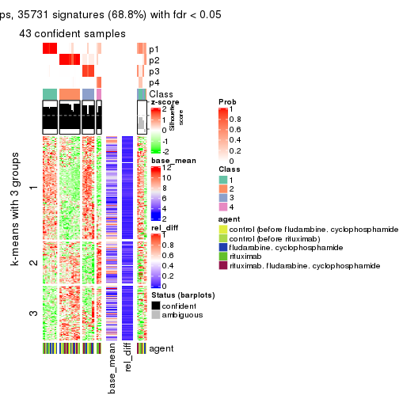
get_signatures(res, k = 5)
get_signatures(res, k = 6)
Signature heatmaps where rows are not scaled:
get_signatures(res, k = 2, scale_rows = FALSE)
get_signatures(res, k = 3, scale_rows = FALSE)

get_signatures(res, k = 4, scale_rows = FALSE)
get_signatures(res, k = 5, scale_rows = FALSE)
get_signatures(res, k = 6, scale_rows = FALSE)
Compare the overlap of signatures from different k:
compare_signatures(res)
get_signature() returns a data frame invisibly. TO get the list of signatures, the function
call should be assigned to a variable explicitly. In following code, if plot argument is set
to FALSE, no heatmap is plotted while only the differential analysis is performed.
# code only for demonstration
tb = get_signature(res, k = ..., plot = FALSE)
An example of the output of tb is:
#> which_row fdr mean_1 mean_2 scaled_mean_1 scaled_mean_2 km
#> 1 38 0.042760348 8.373488 9.131774 -0.5533452 0.5164555 1
#> 2 40 0.018707592 7.106213 8.469186 -0.6173731 0.5762149 1
#> 3 55 0.019134737 10.221463 11.207825 -0.6159697 0.5749050 1
#> 4 59 0.006059896 5.921854 7.869574 -0.6899429 0.6439467 1
#> 5 60 0.018055526 8.928898 10.211722 -0.6204761 0.5791110 1
#> 6 98 0.009384629 15.714769 14.887706 0.6635654 -0.6193277 2
...
The columns in tb are:
which_row: row indices corresponding to the input matrix.fdr: FDR for the differential test. mean_x: The mean value in group x.scaled_mean_x: The mean value in group x after rows are scaled.km: Row groups if k-means clustering is applied to rows.UMAP plot which shows how samples are separated.
dimension_reduction(res, k = 2, method = "UMAP")
dimension_reduction(res, k = 3, method = "UMAP")
dimension_reduction(res, k = 4, method = "UMAP")
dimension_reduction(res, k = 5, method = "UMAP")
dimension_reduction(res, k = 6, method = "UMAP")
Following heatmap shows how subgroups are split when increasing k:
collect_classes(res)
Test correlation between subgroups and known annotations. If the known annotation is numeric, one-way ANOVA test is applied, and if the known annotation is discrete, chi-squared contingency table test is applied.
test_to_known_factors(res)
#> n agent(p) k
#> CV:pam 45 0.970 2
#> CV:pam 46 1.000 3
#> CV:pam 43 0.924 4
#> CV:pam 44 0.980 5
#> CV:pam 47 0.995 6
If matrix rows can be associated to genes, consider to use functional_enrichment(res,
...) to perform function enrichment for the signature genes. See this vignette for more detailed explanations.
The object with results only for a single top-value method and a single partition method can be extracted as:
res = res_list["CV", "mclust"]
# you can also extract it by
# res = res_list["CV:mclust"]
A summary of res and all the functions that can be applied to it:
res
#> A 'ConsensusPartition' object with k = 2, 3, 4, 5, 6.
#> On a matrix with 51941 rows and 50 columns.
#> Top rows (1000, 2000, 3000, 4000, 5000) are extracted by 'CV' method.
#> Subgroups are detected by 'mclust' method.
#> Performed in total 1250 partitions by row resampling.
#> Best k for subgroups seems to be 2.
#>
#> Following methods can be applied to this 'ConsensusPartition' object:
#> [1] "cola_report" "collect_classes" "collect_plots"
#> [4] "collect_stats" "colnames" "compare_signatures"
#> [7] "consensus_heatmap" "dimension_reduction" "functional_enrichment"
#> [10] "get_anno_col" "get_anno" "get_classes"
#> [13] "get_consensus" "get_matrix" "get_membership"
#> [16] "get_param" "get_signatures" "get_stats"
#> [19] "is_best_k" "is_stable_k" "membership_heatmap"
#> [22] "ncol" "nrow" "plot_ecdf"
#> [25] "rownames" "select_partition_number" "show"
#> [28] "suggest_best_k" "test_to_known_factors"
collect_plots() function collects all the plots made from res for all k (number of partitions)
into one single page to provide an easy and fast comparison between different k.
collect_plots(res)
The plots are:
k and the heatmap of
predicted classes for each k.k.k.k.All the plots in panels can be made by individual functions and they are plotted later in this section.
select_partition_number() produces several plots showing different
statistics for choosing “optimized” k. There are following statistics:
k;k, the area increased is defined as \(A_k - A_{k-1}\).The detailed explanations of these statistics can be found in the cola vignette.
Generally speaking, lower PAC score, higher mean silhouette score or higher
concordance corresponds to better partition. Rand index and Jaccard index
measure how similar the current partition is compared to partition with k-1.
If they are too similar, we won't accept k is better than k-1.
select_partition_number(res)
The numeric values for all these statistics can be obtained by get_stats().
get_stats(res)
#> k 1-PAC mean_silhouette concordance area_increased Rand Jaccard
#> 2 2 0.451 0.852 0.906 0.4966 0.493 0.493
#> 3 3 0.604 0.717 0.854 0.2356 0.910 0.818
#> 4 4 0.623 0.719 0.855 0.1281 0.898 0.754
#> 5 5 0.772 0.748 0.828 0.0845 0.951 0.849
#> 6 6 0.760 0.785 0.846 0.0447 0.932 0.764
suggest_best_k() suggests the best \(k\) based on these statistics. The rules are as follows:
suggest_best_k(res)
#> [1] 2
Following shows the table of the partitions (You need to click the show/hide
code output link to see it). The membership matrix (columns with name p*)
is inferred by
clue::cl_consensus()
function with the SE method. Basically the value in the membership matrix
represents the probability to belong to a certain group. The finall class
label for an item is determined with the group with highest probability it
belongs to.
In get_classes() function, the entropy is calculated from the membership
matrix and the silhouette score is calculated from the consensus matrix.
cbind(get_classes(res, k = 2), get_membership(res, k = 2))
#> class entropy silhouette p1 p2
#> GSM388593 1 0.184 0.901 0.972 0.028
#> GSM388594 1 0.000 0.900 1.000 0.000
#> GSM388595 1 0.000 0.900 1.000 0.000
#> GSM388596 1 0.722 0.812 0.800 0.200
#> GSM388597 1 0.722 0.812 0.800 0.200
#> GSM388598 2 0.000 0.872 0.000 1.000
#> GSM388599 2 0.000 0.872 0.000 1.000
#> GSM388600 2 0.000 0.872 0.000 1.000
#> GSM388601 2 0.866 0.759 0.288 0.712
#> GSM388602 2 0.855 0.766 0.280 0.720
#> GSM388623 1 0.775 0.803 0.772 0.228
#> GSM388624 1 0.184 0.901 0.972 0.028
#> GSM388625 1 0.204 0.900 0.968 0.032
#> GSM388626 1 0.204 0.900 0.968 0.032
#> GSM388627 1 0.204 0.900 0.968 0.032
#> GSM388628 2 0.000 0.872 0.000 1.000
#> GSM388629 2 0.563 0.834 0.132 0.868
#> GSM388630 2 0.000 0.872 0.000 1.000
#> GSM388631 1 0.482 0.867 0.896 0.104
#> GSM388632 2 0.866 0.759 0.288 0.712
#> GSM388603 1 0.000 0.900 1.000 0.000
#> GSM388604 1 0.000 0.900 1.000 0.000
#> GSM388605 1 0.000 0.900 1.000 0.000
#> GSM388606 1 0.722 0.812 0.800 0.200
#> GSM388607 1 0.722 0.812 0.800 0.200
#> GSM388608 2 0.000 0.872 0.000 1.000
#> GSM388609 2 0.000 0.872 0.000 1.000
#> GSM388610 2 0.000 0.872 0.000 1.000
#> GSM388611 2 0.866 0.759 0.288 0.712
#> GSM388612 2 0.855 0.766 0.280 0.720
#> GSM388583 1 0.184 0.901 0.972 0.028
#> GSM388584 1 0.184 0.901 0.972 0.028
#> GSM388585 1 0.000 0.900 1.000 0.000
#> GSM388586 1 0.722 0.812 0.800 0.200
#> GSM388587 1 0.722 0.812 0.800 0.200
#> GSM388588 2 0.000 0.872 0.000 1.000
#> GSM388589 2 0.000 0.872 0.000 1.000
#> GSM388590 2 0.000 0.872 0.000 1.000
#> GSM388591 2 0.866 0.759 0.288 0.712
#> GSM388592 2 0.855 0.766 0.280 0.720
#> GSM388613 1 0.781 0.800 0.768 0.232
#> GSM388614 1 0.000 0.900 1.000 0.000
#> GSM388615 1 0.204 0.900 0.968 0.032
#> GSM388616 1 0.204 0.900 0.968 0.032
#> GSM388617 1 0.184 0.901 0.972 0.028
#> GSM388618 2 0.000 0.872 0.000 1.000
#> GSM388619 2 0.595 0.829 0.144 0.856
#> GSM388620 2 0.000 0.872 0.000 1.000
#> GSM388621 1 0.482 0.867 0.896 0.104
#> GSM388622 2 0.866 0.759 0.288 0.712
cbind(get_classes(res, k = 3), get_membership(res, k = 3))
#> class entropy silhouette p1 p2 p3
#> GSM388593 1 0.000 0.773 1.000 0.000 0.000
#> GSM388594 1 0.103 0.760 0.976 0.000 0.024
#> GSM388595 3 0.450 0.878 0.196 0.000 0.804
#> GSM388596 1 0.748 0.364 0.512 0.036 0.452
#> GSM388597 1 0.740 0.417 0.552 0.036 0.412
#> GSM388598 2 0.000 0.828 0.000 1.000 0.000
#> GSM388599 2 0.000 0.828 0.000 1.000 0.000
#> GSM388600 2 0.000 0.828 0.000 1.000 0.000
#> GSM388601 2 0.647 0.641 0.332 0.652 0.016
#> GSM388602 2 0.586 0.644 0.344 0.656 0.000
#> GSM388623 1 0.687 0.551 0.700 0.056 0.244
#> GSM388624 1 0.000 0.773 1.000 0.000 0.000
#> GSM388625 1 0.000 0.773 1.000 0.000 0.000
#> GSM388626 1 0.000 0.773 1.000 0.000 0.000
#> GSM388627 1 0.000 0.773 1.000 0.000 0.000
#> GSM388628 2 0.000 0.828 0.000 1.000 0.000
#> GSM388629 2 0.164 0.811 0.044 0.956 0.000
#> GSM388630 2 0.000 0.828 0.000 1.000 0.000
#> GSM388631 3 0.389 0.825 0.084 0.032 0.884
#> GSM388632 2 0.604 0.601 0.380 0.620 0.000
#> GSM388603 1 0.000 0.773 1.000 0.000 0.000
#> GSM388604 1 0.103 0.760 0.976 0.000 0.024
#> GSM388605 3 0.450 0.878 0.196 0.000 0.804
#> GSM388606 1 0.748 0.364 0.512 0.036 0.452
#> GSM388607 1 0.748 0.364 0.512 0.036 0.452
#> GSM388608 2 0.000 0.828 0.000 1.000 0.000
#> GSM388609 2 0.000 0.828 0.000 1.000 0.000
#> GSM388610 2 0.000 0.828 0.000 1.000 0.000
#> GSM388611 2 0.647 0.641 0.332 0.652 0.016
#> GSM388612 2 0.586 0.644 0.344 0.656 0.000
#> GSM388583 1 0.000 0.773 1.000 0.000 0.000
#> GSM388584 1 0.175 0.750 0.952 0.000 0.048
#> GSM388585 3 0.450 0.878 0.196 0.000 0.804
#> GSM388586 1 0.748 0.364 0.512 0.036 0.452
#> GSM388587 1 0.746 0.381 0.524 0.036 0.440
#> GSM388588 2 0.000 0.828 0.000 1.000 0.000
#> GSM388589 2 0.000 0.828 0.000 1.000 0.000
#> GSM388590 2 0.000 0.828 0.000 1.000 0.000
#> GSM388591 2 0.647 0.641 0.332 0.652 0.016
#> GSM388592 2 0.586 0.644 0.344 0.656 0.000
#> GSM388613 1 0.709 0.534 0.716 0.188 0.096
#> GSM388614 1 0.000 0.773 1.000 0.000 0.000
#> GSM388615 1 0.000 0.773 1.000 0.000 0.000
#> GSM388616 1 0.000 0.773 1.000 0.000 0.000
#> GSM388617 1 0.000 0.773 1.000 0.000 0.000
#> GSM388618 2 0.000 0.828 0.000 1.000 0.000
#> GSM388619 2 0.175 0.809 0.048 0.952 0.000
#> GSM388620 2 0.000 0.828 0.000 1.000 0.000
#> GSM388621 3 0.389 0.825 0.084 0.032 0.884
#> GSM388622 2 0.601 0.612 0.372 0.628 0.000
cbind(get_classes(res, k = 4), get_membership(res, k = 4))
#> class entropy silhouette p1 p2 p3 p4
#> GSM388593 1 0.3688 0.7597 0.792 0.000 0.208 0.000
#> GSM388594 1 0.5720 0.6792 0.652 0.000 0.296 0.052
#> GSM388595 4 0.0188 1.0000 0.000 0.000 0.004 0.996
#> GSM388596 3 0.0779 0.7788 0.016 0.004 0.980 0.000
#> GSM388597 3 0.1489 0.7690 0.044 0.004 0.952 0.000
#> GSM388598 2 0.0000 0.8315 0.000 1.000 0.000 0.000
#> GSM388599 2 0.0000 0.8315 0.000 1.000 0.000 0.000
#> GSM388600 2 0.0000 0.8315 0.000 1.000 0.000 0.000
#> GSM388601 2 0.7641 0.4789 0.164 0.528 0.016 0.292
#> GSM388602 2 0.6296 0.6307 0.244 0.644 0.000 0.112
#> GSM388623 3 0.5708 -0.0708 0.416 0.028 0.556 0.000
#> GSM388624 1 0.4331 0.7020 0.712 0.000 0.288 0.000
#> GSM388625 1 0.0188 0.8096 0.996 0.000 0.004 0.000
#> GSM388626 1 0.0000 0.8091 1.000 0.000 0.000 0.000
#> GSM388627 1 0.0188 0.8096 0.996 0.000 0.004 0.000
#> GSM388628 2 0.0000 0.8315 0.000 1.000 0.000 0.000
#> GSM388629 2 0.0937 0.8249 0.012 0.976 0.000 0.012
#> GSM388630 2 0.0000 0.8315 0.000 1.000 0.000 0.000
#> GSM388631 3 0.6822 0.1582 0.100 0.000 0.488 0.412
#> GSM388632 2 0.4746 0.5400 0.368 0.632 0.000 0.000
#> GSM388603 1 0.4331 0.7020 0.712 0.000 0.288 0.000
#> GSM388604 1 0.5720 0.6792 0.652 0.000 0.296 0.052
#> GSM388605 4 0.0188 1.0000 0.000 0.000 0.004 0.996
#> GSM388606 3 0.0779 0.7788 0.016 0.004 0.980 0.000
#> GSM388607 3 0.0779 0.7788 0.016 0.004 0.980 0.000
#> GSM388608 2 0.0000 0.8315 0.000 1.000 0.000 0.000
#> GSM388609 2 0.0000 0.8315 0.000 1.000 0.000 0.000
#> GSM388610 2 0.0000 0.8315 0.000 1.000 0.000 0.000
#> GSM388611 2 0.7641 0.4789 0.164 0.528 0.016 0.292
#> GSM388612 2 0.6296 0.6307 0.244 0.644 0.000 0.112
#> GSM388583 1 0.1716 0.8107 0.936 0.000 0.064 0.000
#> GSM388584 1 0.2060 0.7776 0.932 0.000 0.016 0.052
#> GSM388585 4 0.0188 1.0000 0.000 0.000 0.004 0.996
#> GSM388586 3 0.0779 0.7788 0.016 0.004 0.980 0.000
#> GSM388587 3 0.1209 0.7754 0.032 0.004 0.964 0.000
#> GSM388588 2 0.0000 0.8315 0.000 1.000 0.000 0.000
#> GSM388589 2 0.0000 0.8315 0.000 1.000 0.000 0.000
#> GSM388590 2 0.0000 0.8315 0.000 1.000 0.000 0.000
#> GSM388591 2 0.7641 0.4789 0.164 0.528 0.016 0.292
#> GSM388592 2 0.6267 0.6343 0.240 0.648 0.000 0.112
#> GSM388613 1 0.5067 0.5877 0.768 0.116 0.116 0.000
#> GSM388614 1 0.4730 0.6052 0.636 0.000 0.364 0.000
#> GSM388615 1 0.0000 0.8091 1.000 0.000 0.000 0.000
#> GSM388616 1 0.0000 0.8091 1.000 0.000 0.000 0.000
#> GSM388617 1 0.2522 0.8075 0.908 0.000 0.076 0.016
#> GSM388618 2 0.0000 0.8315 0.000 1.000 0.000 0.000
#> GSM388619 2 0.1059 0.8238 0.016 0.972 0.000 0.012
#> GSM388620 2 0.1302 0.8152 0.044 0.956 0.000 0.000
#> GSM388621 3 0.6822 0.1582 0.100 0.000 0.488 0.412
#> GSM388622 2 0.4713 0.5542 0.360 0.640 0.000 0.000
cbind(get_classes(res, k = 5), get_membership(res, k = 5))
#> class entropy silhouette p1 p2 p3 p4 p5
#> GSM388593 1 0.4969 0.6036 0.676 0.000 0.264 0.004 0.056
#> GSM388594 1 0.3332 0.7556 0.844 0.000 0.008 0.028 0.120
#> GSM388595 5 0.4210 1.0000 0.000 0.000 0.000 0.412 0.588
#> GSM388596 3 0.1996 0.7951 0.048 0.012 0.928 0.000 0.012
#> GSM388597 3 0.3800 0.7388 0.112 0.012 0.824 0.000 0.052
#> GSM388598 2 0.0162 0.8600 0.000 0.996 0.000 0.000 0.004
#> GSM388599 2 0.0000 0.8611 0.000 1.000 0.000 0.000 0.000
#> GSM388600 2 0.1638 0.8365 0.000 0.932 0.004 0.064 0.000
#> GSM388601 4 0.0451 1.0000 0.004 0.008 0.000 0.988 0.000
#> GSM388602 2 0.5406 0.4662 0.052 0.592 0.000 0.348 0.008
#> GSM388623 3 0.6442 -0.0375 0.408 0.056 0.488 0.004 0.044
#> GSM388624 1 0.4993 0.6003 0.672 0.000 0.268 0.004 0.056
#> GSM388625 1 0.0510 0.7825 0.984 0.000 0.016 0.000 0.000
#> GSM388626 1 0.0324 0.7840 0.992 0.000 0.004 0.000 0.004
#> GSM388627 1 0.2124 0.7703 0.900 0.000 0.000 0.004 0.096
#> GSM388628 2 0.0000 0.8611 0.000 1.000 0.000 0.000 0.000
#> GSM388629 2 0.1877 0.8342 0.000 0.924 0.012 0.064 0.000
#> GSM388630 2 0.0000 0.8611 0.000 1.000 0.000 0.000 0.000
#> GSM388631 3 0.3885 0.5648 0.000 0.000 0.724 0.008 0.268
#> GSM388632 2 0.6140 0.4806 0.192 0.596 0.000 0.204 0.008
#> GSM388603 1 0.5015 0.5955 0.668 0.000 0.272 0.004 0.056
#> GSM388604 1 0.3209 0.7564 0.848 0.000 0.004 0.028 0.120
#> GSM388605 5 0.4210 1.0000 0.000 0.000 0.000 0.412 0.588
#> GSM388606 3 0.1682 0.7929 0.032 0.012 0.944 0.000 0.012
#> GSM388607 3 0.1484 0.7942 0.048 0.008 0.944 0.000 0.000
#> GSM388608 2 0.0000 0.8611 0.000 1.000 0.000 0.000 0.000
#> GSM388609 2 0.0000 0.8611 0.000 1.000 0.000 0.000 0.000
#> GSM388610 2 0.1638 0.8365 0.000 0.932 0.004 0.064 0.000
#> GSM388611 4 0.0451 1.0000 0.004 0.008 0.000 0.988 0.000
#> GSM388612 2 0.5406 0.4662 0.052 0.592 0.000 0.348 0.008
#> GSM388583 1 0.5090 0.6065 0.668 0.000 0.264 0.004 0.064
#> GSM388584 1 0.3051 0.7563 0.852 0.000 0.000 0.028 0.120
#> GSM388585 5 0.4210 1.0000 0.000 0.000 0.000 0.412 0.588
#> GSM388586 3 0.1978 0.7889 0.032 0.012 0.932 0.000 0.024
#> GSM388587 3 0.3869 0.7491 0.080 0.012 0.824 0.000 0.084
#> GSM388588 2 0.0000 0.8611 0.000 1.000 0.000 0.000 0.000
#> GSM388589 2 0.0000 0.8611 0.000 1.000 0.000 0.000 0.000
#> GSM388590 2 0.1798 0.8351 0.000 0.928 0.004 0.064 0.004
#> GSM388591 4 0.0451 1.0000 0.004 0.008 0.000 0.988 0.000
#> GSM388592 2 0.5331 0.4785 0.048 0.600 0.000 0.344 0.008
#> GSM388613 1 0.5599 0.5403 0.704 0.120 0.148 0.008 0.020
#> GSM388614 1 0.5811 0.5949 0.604 0.000 0.272 0.004 0.120
#> GSM388615 1 0.0162 0.7841 0.996 0.000 0.004 0.000 0.000
#> GSM388616 1 0.0162 0.7838 0.996 0.000 0.000 0.000 0.004
#> GSM388617 1 0.1908 0.7720 0.908 0.000 0.000 0.000 0.092
#> GSM388618 2 0.0000 0.8611 0.000 1.000 0.000 0.000 0.000
#> GSM388619 2 0.1877 0.8342 0.000 0.924 0.012 0.064 0.000
#> GSM388620 2 0.0290 0.8590 0.000 0.992 0.000 0.008 0.000
#> GSM388621 3 0.3885 0.5648 0.000 0.000 0.724 0.008 0.268
#> GSM388622 2 0.6109 0.4881 0.184 0.600 0.000 0.208 0.008
cbind(get_classes(res, k = 6), get_membership(res, k = 6))
#> class entropy silhouette p1 p2 p3 p4 p5 p6
#> GSM388593 3 0.3489 0.709 0.288 0.000 0.708 0.000 0.000 0.004
#> GSM388594 1 0.3084 0.781 0.832 0.000 0.132 0.004 0.032 0.000
#> GSM388595 5 0.0000 1.000 0.000 0.000 0.000 0.000 1.000 0.000
#> GSM388596 6 0.0291 0.976 0.000 0.004 0.004 0.000 0.000 0.992
#> GSM388597 3 0.3989 0.217 0.004 0.000 0.528 0.000 0.000 0.468
#> GSM388598 2 0.0713 0.832 0.000 0.972 0.028 0.000 0.000 0.000
#> GSM388599 2 0.0146 0.837 0.000 0.996 0.004 0.000 0.000 0.000
#> GSM388600 2 0.3658 0.782 0.000 0.800 0.136 0.056 0.004 0.004
#> GSM388601 4 0.0000 1.000 0.000 0.000 0.000 1.000 0.000 0.000
#> GSM388602 2 0.6071 0.619 0.132 0.616 0.128 0.124 0.000 0.000
#> GSM388623 3 0.5969 0.567 0.116 0.056 0.584 0.000 0.000 0.244
#> GSM388624 3 0.3489 0.709 0.288 0.000 0.708 0.000 0.000 0.004
#> GSM388625 1 0.0291 0.845 0.992 0.000 0.004 0.000 0.000 0.004
#> GSM388626 1 0.0291 0.845 0.992 0.000 0.004 0.000 0.000 0.004
#> GSM388627 1 0.2436 0.767 0.880 0.032 0.088 0.000 0.000 0.000
#> GSM388628 2 0.0458 0.835 0.000 0.984 0.016 0.000 0.000 0.000
#> GSM388629 2 0.3708 0.784 0.000 0.800 0.124 0.068 0.004 0.004
#> GSM388630 2 0.0622 0.835 0.008 0.980 0.012 0.000 0.000 0.000
#> GSM388631 6 0.0260 0.971 0.000 0.000 0.000 0.000 0.008 0.992
#> GSM388632 2 0.6057 0.591 0.204 0.584 0.160 0.052 0.000 0.000
#> GSM388603 3 0.3351 0.709 0.288 0.000 0.712 0.000 0.000 0.000
#> GSM388604 1 0.3084 0.781 0.832 0.000 0.132 0.004 0.032 0.000
#> GSM388605 5 0.0000 1.000 0.000 0.000 0.000 0.000 1.000 0.000
#> GSM388606 6 0.0291 0.976 0.000 0.004 0.004 0.000 0.000 0.992
#> GSM388607 6 0.1444 0.903 0.000 0.000 0.072 0.000 0.000 0.928
#> GSM388608 2 0.0713 0.832 0.000 0.972 0.028 0.000 0.000 0.000
#> GSM388609 2 0.0508 0.836 0.004 0.984 0.012 0.000 0.000 0.000
#> GSM388610 2 0.3658 0.782 0.000 0.800 0.136 0.056 0.004 0.004
#> GSM388611 4 0.0000 1.000 0.000 0.000 0.000 1.000 0.000 0.000
#> GSM388612 2 0.6071 0.619 0.132 0.616 0.128 0.124 0.000 0.000
#> GSM388583 3 0.3351 0.709 0.288 0.000 0.712 0.000 0.000 0.000
#> GSM388584 1 0.3084 0.781 0.832 0.000 0.132 0.004 0.032 0.000
#> GSM388585 5 0.0000 1.000 0.000 0.000 0.000 0.000 1.000 0.000
#> GSM388586 6 0.0291 0.976 0.000 0.004 0.004 0.000 0.000 0.992
#> GSM388587 3 0.3860 0.204 0.000 0.000 0.528 0.000 0.000 0.472
#> GSM388588 2 0.0146 0.836 0.000 0.996 0.004 0.000 0.000 0.000
#> GSM388589 2 0.0508 0.836 0.004 0.984 0.012 0.000 0.000 0.000
#> GSM388590 2 0.3658 0.782 0.000 0.800 0.136 0.056 0.004 0.004
#> GSM388591 4 0.0000 1.000 0.000 0.000 0.000 1.000 0.000 0.000
#> GSM388592 2 0.6035 0.623 0.132 0.620 0.124 0.124 0.000 0.000
#> GSM388613 1 0.6671 0.293 0.520 0.180 0.224 0.004 0.000 0.072
#> GSM388614 3 0.3351 0.709 0.288 0.000 0.712 0.000 0.000 0.000
#> GSM388615 1 0.0291 0.845 0.992 0.000 0.004 0.000 0.000 0.004
#> GSM388616 1 0.0146 0.844 0.996 0.000 0.004 0.000 0.000 0.000
#> GSM388617 1 0.1398 0.827 0.940 0.008 0.052 0.000 0.000 0.000
#> GSM388618 2 0.0291 0.837 0.004 0.992 0.004 0.000 0.000 0.000
#> GSM388619 2 0.3708 0.784 0.000 0.800 0.124 0.068 0.004 0.004
#> GSM388620 2 0.1692 0.823 0.008 0.932 0.048 0.012 0.000 0.000
#> GSM388621 6 0.0260 0.971 0.000 0.000 0.000 0.000 0.008 0.992
#> GSM388622 2 0.5837 0.614 0.204 0.612 0.132 0.052 0.000 0.000
Heatmaps for the consensus matrix. It visualizes the probability of two samples to be in a same group.
consensus_heatmap(res, k = 2)
consensus_heatmap(res, k = 3)
consensus_heatmap(res, k = 4)
consensus_heatmap(res, k = 5)
consensus_heatmap(res, k = 6)
Heatmaps for the membership of samples in all partitions to see how consistent they are:
membership_heatmap(res, k = 2)
membership_heatmap(res, k = 3)
membership_heatmap(res, k = 4)
membership_heatmap(res, k = 5)
membership_heatmap(res, k = 6)
As soon as we have had the classes for columns, we can look for signatures which are significantly different between classes which can be candidate marks for certain classes. Following are the heatmaps for signatures.
Signature heatmaps where rows are scaled:
get_signatures(res, k = 2)
get_signatures(res, k = 3)
get_signatures(res, k = 4)
get_signatures(res, k = 5)
get_signatures(res, k = 6)
Signature heatmaps where rows are not scaled:
get_signatures(res, k = 2, scale_rows = FALSE)
get_signatures(res, k = 3, scale_rows = FALSE)
get_signatures(res, k = 4, scale_rows = FALSE)
get_signatures(res, k = 5, scale_rows = FALSE)
get_signatures(res, k = 6, scale_rows = FALSE)
Compare the overlap of signatures from different k:
compare_signatures(res)
get_signature() returns a data frame invisibly. TO get the list of signatures, the function
call should be assigned to a variable explicitly. In following code, if plot argument is set
to FALSE, no heatmap is plotted while only the differential analysis is performed.
# code only for demonstration
tb = get_signature(res, k = ..., plot = FALSE)
An example of the output of tb is:
#> which_row fdr mean_1 mean_2 scaled_mean_1 scaled_mean_2 km
#> 1 38 0.042760348 8.373488 9.131774 -0.5533452 0.5164555 1
#> 2 40 0.018707592 7.106213 8.469186 -0.6173731 0.5762149 1
#> 3 55 0.019134737 10.221463 11.207825 -0.6159697 0.5749050 1
#> 4 59 0.006059896 5.921854 7.869574 -0.6899429 0.6439467 1
#> 5 60 0.018055526 8.928898 10.211722 -0.6204761 0.5791110 1
#> 6 98 0.009384629 15.714769 14.887706 0.6635654 -0.6193277 2
...
The columns in tb are:
which_row: row indices corresponding to the input matrix.fdr: FDR for the differential test. mean_x: The mean value in group x.scaled_mean_x: The mean value in group x after rows are scaled.km: Row groups if k-means clustering is applied to rows.UMAP plot which shows how samples are separated.
dimension_reduction(res, k = 2, method = "UMAP")
dimension_reduction(res, k = 3, method = "UMAP")
dimension_reduction(res, k = 4, method = "UMAP")
dimension_reduction(res, k = 5, method = "UMAP")
dimension_reduction(res, k = 6, method = "UMAP")
Following heatmap shows how subgroups are split when increasing k:
collect_classes(res)
Test correlation between subgroups and known annotations. If the known annotation is numeric, one-way ANOVA test is applied, and if the known annotation is discrete, chi-squared contingency table test is applied.
test_to_known_factors(res)
#> n agent(p) k
#> CV:mclust 50 0.975 2
#> CV:mclust 44 0.935 3
#> CV:mclust 44 0.734 4
#> CV:mclust 44 0.965 5
#> CV:mclust 47 0.993 6
If matrix rows can be associated to genes, consider to use functional_enrichment(res,
...) to perform function enrichment for the signature genes. See this vignette for more detailed explanations.
The object with results only for a single top-value method and a single partition method can be extracted as:
res = res_list["CV", "NMF"]
# you can also extract it by
# res = res_list["CV:NMF"]
A summary of res and all the functions that can be applied to it:
res
#> A 'ConsensusPartition' object with k = 2, 3, 4, 5, 6.
#> On a matrix with 51941 rows and 50 columns.
#> Top rows (1000, 2000, 3000, 4000, 5000) are extracted by 'CV' method.
#> Subgroups are detected by 'NMF' method.
#> Performed in total 1250 partitions by row resampling.
#> Best k for subgroups seems to be 6.
#>
#> Following methods can be applied to this 'ConsensusPartition' object:
#> [1] "cola_report" "collect_classes" "collect_plots"
#> [4] "collect_stats" "colnames" "compare_signatures"
#> [7] "consensus_heatmap" "dimension_reduction" "functional_enrichment"
#> [10] "get_anno_col" "get_anno" "get_classes"
#> [13] "get_consensus" "get_matrix" "get_membership"
#> [16] "get_param" "get_signatures" "get_stats"
#> [19] "is_best_k" "is_stable_k" "membership_heatmap"
#> [22] "ncol" "nrow" "plot_ecdf"
#> [25] "rownames" "select_partition_number" "show"
#> [28] "suggest_best_k" "test_to_known_factors"
collect_plots() function collects all the plots made from res for all k (number of partitions)
into one single page to provide an easy and fast comparison between different k.
collect_plots(res)
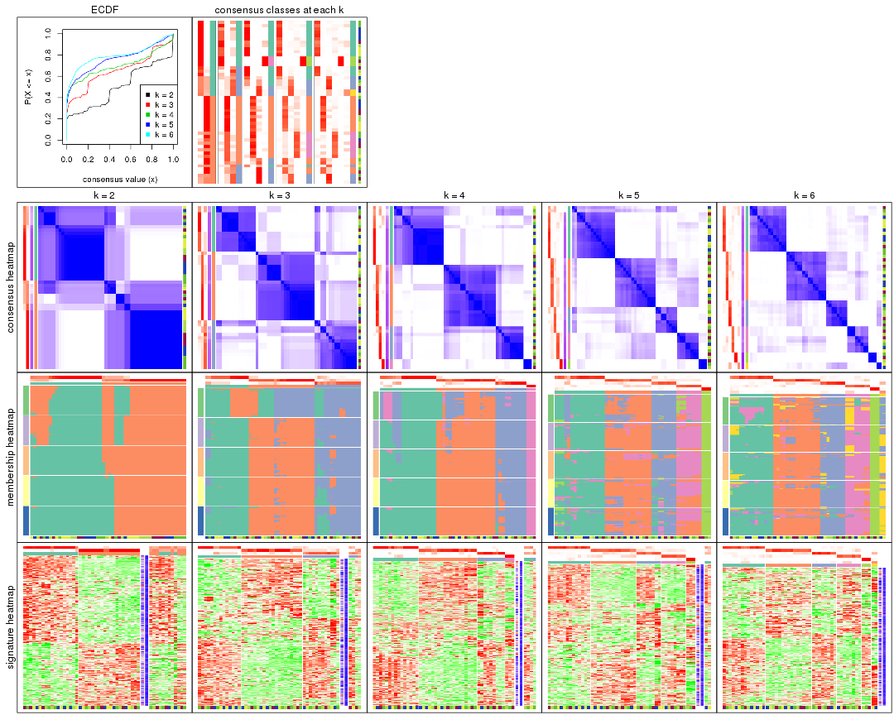
The plots are:
k and the heatmap of
predicted classes for each k.k.k.k.All the plots in panels can be made by individual functions and they are plotted later in this section.
select_partition_number() produces several plots showing different
statistics for choosing “optimized” k. There are following statistics:
k;k, the area increased is defined as \(A_k - A_{k-1}\).The detailed explanations of these statistics can be found in the cola vignette.
Generally speaking, lower PAC score, higher mean silhouette score or higher
concordance corresponds to better partition. Rand index and Jaccard index
measure how similar the current partition is compared to partition with k-1.
If they are too similar, we won't accept k is better than k-1.
select_partition_number(res)
The numeric values for all these statistics can be obtained by get_stats().
get_stats(res)
#> k 1-PAC mean_silhouette concordance area_increased Rand Jaccard
#> 2 2 0.540 0.703 0.884 0.5026 0.493 0.493
#> 3 3 0.530 0.711 0.827 0.3112 0.750 0.535
#> 4 4 0.698 0.788 0.895 0.0689 0.820 0.559
#> 5 5 0.667 0.740 0.816 0.0876 0.837 0.533
#> 6 6 0.715 0.808 0.840 0.0410 0.958 0.824
suggest_best_k() suggests the best \(k\) based on these statistics. The rules are as follows:
suggest_best_k(res)
#> [1] 6
Following shows the table of the partitions (You need to click the show/hide
code output link to see it). The membership matrix (columns with name p*)
is inferred by
clue::cl_consensus()
function with the SE method. Basically the value in the membership matrix
represents the probability to belong to a certain group. The finall class
label for an item is determined with the group with highest probability it
belongs to.
In get_classes() function, the entropy is calculated from the membership
matrix and the silhouette score is calculated from the consensus matrix.
cbind(get_classes(res, k = 2), get_membership(res, k = 2))
#> class entropy silhouette p1 p2
#> GSM388593 1 0.0376 0.854 0.996 0.004
#> GSM388594 1 0.0000 0.856 1.000 0.000
#> GSM388595 1 0.0000 0.856 1.000 0.000
#> GSM388596 2 0.9996 -0.147 0.488 0.512
#> GSM388597 1 0.9710 0.426 0.600 0.400
#> GSM388598 2 0.0000 0.841 0.000 1.000
#> GSM388599 2 0.0000 0.841 0.000 1.000
#> GSM388600 2 0.0000 0.841 0.000 1.000
#> GSM388601 2 0.9686 0.389 0.396 0.604
#> GSM388602 2 0.0000 0.841 0.000 1.000
#> GSM388623 1 0.9710 0.426 0.600 0.400
#> GSM388624 1 0.0000 0.856 1.000 0.000
#> GSM388625 1 0.0000 0.856 1.000 0.000
#> GSM388626 1 0.0000 0.856 1.000 0.000
#> GSM388627 1 0.0000 0.856 1.000 0.000
#> GSM388628 2 0.0000 0.841 0.000 1.000
#> GSM388629 2 0.0000 0.841 0.000 1.000
#> GSM388630 2 0.0000 0.841 0.000 1.000
#> GSM388631 1 0.9491 0.487 0.632 0.368
#> GSM388632 2 0.7139 0.674 0.196 0.804
#> GSM388603 1 0.3114 0.826 0.944 0.056
#> GSM388604 1 0.0000 0.856 1.000 0.000
#> GSM388605 1 0.0000 0.856 1.000 0.000
#> GSM388606 2 0.9732 0.169 0.404 0.596
#> GSM388607 1 0.9710 0.426 0.600 0.400
#> GSM388608 2 0.0000 0.841 0.000 1.000
#> GSM388609 2 0.0000 0.841 0.000 1.000
#> GSM388610 2 0.0000 0.841 0.000 1.000
#> GSM388611 2 0.9710 0.381 0.400 0.600
#> GSM388612 2 0.0000 0.841 0.000 1.000
#> GSM388583 1 0.6343 0.744 0.840 0.160
#> GSM388584 1 0.0000 0.856 1.000 0.000
#> GSM388585 1 0.0000 0.856 1.000 0.000
#> GSM388586 2 0.9608 0.228 0.384 0.616
#> GSM388587 1 0.9710 0.426 0.600 0.400
#> GSM388588 2 0.0000 0.841 0.000 1.000
#> GSM388589 2 0.0000 0.841 0.000 1.000
#> GSM388590 2 0.0000 0.841 0.000 1.000
#> GSM388591 2 0.9710 0.381 0.400 0.600
#> GSM388592 2 0.0000 0.841 0.000 1.000
#> GSM388613 2 0.9775 0.143 0.412 0.588
#> GSM388614 1 0.1414 0.847 0.980 0.020
#> GSM388615 1 0.0000 0.856 1.000 0.000
#> GSM388616 1 0.0000 0.856 1.000 0.000
#> GSM388617 1 0.0000 0.856 1.000 0.000
#> GSM388618 2 0.0000 0.841 0.000 1.000
#> GSM388619 2 0.0000 0.841 0.000 1.000
#> GSM388620 2 0.0000 0.841 0.000 1.000
#> GSM388621 1 0.9044 0.561 0.680 0.320
#> GSM388622 2 0.7139 0.674 0.196 0.804
cbind(get_classes(res, k = 3), get_membership(res, k = 3))
#> class entropy silhouette p1 p2 p3
#> GSM388593 1 0.6489 0.5157 0.540 0.004 0.456
#> GSM388594 1 0.0424 0.8200 0.992 0.000 0.008
#> GSM388595 1 0.0000 0.8199 1.000 0.000 0.000
#> GSM388596 3 0.4452 0.7813 0.000 0.192 0.808
#> GSM388597 3 0.5020 0.7830 0.012 0.192 0.796
#> GSM388598 3 0.6126 0.5018 0.000 0.400 0.600
#> GSM388599 2 0.4178 0.6568 0.000 0.828 0.172
#> GSM388600 2 0.0237 0.8431 0.000 0.996 0.004
#> GSM388601 2 0.5167 0.7507 0.192 0.792 0.016
#> GSM388602 2 0.4452 0.7614 0.000 0.808 0.192
#> GSM388623 3 0.9221 0.5418 0.284 0.192 0.524
#> GSM388624 1 0.6468 0.5402 0.552 0.004 0.444
#> GSM388625 1 0.4784 0.8330 0.796 0.004 0.200
#> GSM388626 1 0.4784 0.8330 0.796 0.004 0.200
#> GSM388627 1 0.5305 0.8279 0.788 0.020 0.192
#> GSM388628 2 0.0237 0.8431 0.000 0.996 0.004
#> GSM388629 2 0.0000 0.8435 0.000 1.000 0.000
#> GSM388630 2 0.0237 0.8431 0.000 0.996 0.004
#> GSM388631 3 0.5571 0.7685 0.056 0.140 0.804
#> GSM388632 2 0.4682 0.7593 0.004 0.804 0.192
#> GSM388603 3 0.6244 -0.3117 0.440 0.000 0.560
#> GSM388604 1 0.0424 0.8200 0.992 0.000 0.008
#> GSM388605 1 0.0000 0.8199 1.000 0.000 0.000
#> GSM388606 3 0.4452 0.7813 0.000 0.192 0.808
#> GSM388607 3 0.4452 0.7813 0.000 0.192 0.808
#> GSM388608 3 0.6244 0.4160 0.000 0.440 0.560
#> GSM388609 2 0.2261 0.7935 0.000 0.932 0.068
#> GSM388610 2 0.0237 0.8431 0.000 0.996 0.004
#> GSM388611 2 0.5167 0.7507 0.192 0.792 0.016
#> GSM388612 2 0.4452 0.7614 0.000 0.808 0.192
#> GSM388583 3 0.2860 0.5339 0.084 0.004 0.912
#> GSM388584 1 0.0000 0.8199 1.000 0.000 0.000
#> GSM388585 1 0.0000 0.8199 1.000 0.000 0.000
#> GSM388586 3 0.4452 0.7813 0.000 0.192 0.808
#> GSM388587 3 0.5792 0.7813 0.036 0.192 0.772
#> GSM388588 2 0.6079 0.0791 0.000 0.612 0.388
#> GSM388589 2 0.1643 0.8156 0.000 0.956 0.044
#> GSM388590 2 0.0237 0.8431 0.000 0.996 0.004
#> GSM388591 2 0.5012 0.7450 0.204 0.788 0.008
#> GSM388592 2 0.4452 0.7614 0.000 0.808 0.192
#> GSM388613 3 0.7785 0.7215 0.136 0.192 0.672
#> GSM388614 3 0.6057 -0.0348 0.340 0.004 0.656
#> GSM388615 1 0.4682 0.8337 0.804 0.004 0.192
#> GSM388616 1 0.5167 0.8301 0.792 0.016 0.192
#> GSM388617 1 0.4733 0.8335 0.800 0.004 0.196
#> GSM388618 2 0.0237 0.8431 0.000 0.996 0.004
#> GSM388619 2 0.0000 0.8435 0.000 1.000 0.000
#> GSM388620 2 0.0237 0.8431 0.000 0.996 0.004
#> GSM388621 3 0.5631 0.7635 0.064 0.132 0.804
#> GSM388622 2 0.4682 0.7593 0.004 0.804 0.192
cbind(get_classes(res, k = 4), get_membership(res, k = 4))
#> class entropy silhouette p1 p2 p3 p4
#> GSM388593 1 0.0188 0.838 0.996 0.000 0.004 0.000
#> GSM388594 1 0.3688 0.703 0.792 0.000 0.000 0.208
#> GSM388595 4 0.0000 1.000 0.000 0.000 0.000 1.000
#> GSM388596 3 0.0188 0.886 0.004 0.000 0.996 0.000
#> GSM388597 1 0.4996 0.196 0.516 0.000 0.484 0.000
#> GSM388598 3 0.0188 0.886 0.000 0.004 0.996 0.000
#> GSM388599 3 0.4454 0.485 0.000 0.308 0.692 0.000
#> GSM388600 2 0.1211 0.876 0.000 0.960 0.040 0.000
#> GSM388601 2 0.1305 0.857 0.004 0.960 0.000 0.036
#> GSM388602 2 0.0336 0.864 0.008 0.992 0.000 0.000
#> GSM388623 1 0.3688 0.697 0.792 0.000 0.208 0.000
#> GSM388624 1 0.0188 0.838 0.996 0.000 0.004 0.000
#> GSM388625 1 0.0000 0.837 1.000 0.000 0.000 0.000
#> GSM388626 1 0.0188 0.837 0.996 0.004 0.000 0.000
#> GSM388627 1 0.0188 0.837 0.996 0.004 0.000 0.000
#> GSM388628 2 0.3074 0.836 0.000 0.848 0.152 0.000
#> GSM388629 2 0.1022 0.875 0.000 0.968 0.032 0.000
#> GSM388630 2 0.3486 0.806 0.000 0.812 0.188 0.000
#> GSM388631 3 0.1557 0.849 0.000 0.000 0.944 0.056
#> GSM388632 2 0.3569 0.759 0.196 0.804 0.000 0.000
#> GSM388603 1 0.0188 0.838 0.996 0.000 0.004 0.000
#> GSM388604 1 0.4431 0.591 0.696 0.000 0.000 0.304
#> GSM388605 4 0.0000 1.000 0.000 0.000 0.000 1.000
#> GSM388606 3 0.0188 0.886 0.004 0.000 0.996 0.000
#> GSM388607 3 0.2281 0.806 0.096 0.000 0.904 0.000
#> GSM388608 3 0.0188 0.886 0.000 0.004 0.996 0.000
#> GSM388609 2 0.4713 0.537 0.000 0.640 0.360 0.000
#> GSM388610 2 0.1211 0.876 0.000 0.960 0.040 0.000
#> GSM388611 2 0.1209 0.858 0.004 0.964 0.000 0.032
#> GSM388612 2 0.0336 0.864 0.008 0.992 0.000 0.000
#> GSM388583 1 0.0188 0.838 0.996 0.000 0.004 0.000
#> GSM388584 1 0.4072 0.658 0.748 0.000 0.000 0.252
#> GSM388585 4 0.0000 1.000 0.000 0.000 0.000 1.000
#> GSM388586 3 0.0000 0.886 0.000 0.000 1.000 0.000
#> GSM388587 1 0.4985 0.243 0.532 0.000 0.468 0.000
#> GSM388588 3 0.3311 0.739 0.000 0.172 0.828 0.000
#> GSM388589 2 0.4431 0.648 0.000 0.696 0.304 0.000
#> GSM388590 2 0.1302 0.876 0.000 0.956 0.044 0.000
#> GSM388591 2 0.3157 0.793 0.004 0.852 0.000 0.144
#> GSM388592 2 0.0336 0.864 0.008 0.992 0.000 0.000
#> GSM388613 1 0.4905 0.469 0.632 0.004 0.364 0.000
#> GSM388614 1 0.0188 0.838 0.996 0.000 0.004 0.000
#> GSM388615 1 0.0188 0.837 0.996 0.004 0.000 0.000
#> GSM388616 1 0.0336 0.835 0.992 0.008 0.000 0.000
#> GSM388617 1 0.0188 0.838 0.996 0.000 0.004 0.000
#> GSM388618 2 0.3074 0.836 0.000 0.848 0.152 0.000
#> GSM388619 2 0.2011 0.870 0.000 0.920 0.080 0.000
#> GSM388620 2 0.3172 0.829 0.000 0.840 0.160 0.000
#> GSM388621 3 0.1716 0.841 0.000 0.000 0.936 0.064
#> GSM388622 2 0.3569 0.759 0.196 0.804 0.000 0.000
cbind(get_classes(res, k = 5), get_membership(res, k = 5))
#> class entropy silhouette p1 p2 p3 p4 p5
#> GSM388593 1 0.1408 0.8279 0.948 0.000 0.044 0.008 0.000
#> GSM388594 1 0.3813 0.7709 0.844 0.008 0.032 0.036 0.080
#> GSM388595 5 0.0162 0.9976 0.004 0.000 0.000 0.000 0.996
#> GSM388596 3 0.3419 0.7970 0.016 0.180 0.804 0.000 0.000
#> GSM388597 3 0.5004 0.6812 0.256 0.072 0.672 0.000 0.000
#> GSM388598 2 0.3480 0.5417 0.000 0.752 0.248 0.000 0.000
#> GSM388599 2 0.3280 0.6570 0.000 0.812 0.176 0.012 0.000
#> GSM388600 2 0.3143 0.7237 0.000 0.796 0.000 0.204 0.000
#> GSM388601 4 0.4105 0.8449 0.004 0.112 0.004 0.804 0.076
#> GSM388602 4 0.2536 0.8760 0.004 0.128 0.000 0.868 0.000
#> GSM388623 1 0.5810 0.0214 0.540 0.076 0.376 0.008 0.000
#> GSM388624 1 0.1444 0.8280 0.948 0.000 0.040 0.012 0.000
#> GSM388625 1 0.1124 0.8294 0.960 0.000 0.004 0.036 0.000
#> GSM388626 1 0.0794 0.8287 0.972 0.000 0.000 0.028 0.000
#> GSM388627 1 0.2763 0.7710 0.848 0.004 0.000 0.148 0.000
#> GSM388628 2 0.3326 0.7588 0.000 0.824 0.024 0.152 0.000
#> GSM388629 2 0.3336 0.7094 0.000 0.772 0.000 0.228 0.000
#> GSM388630 2 0.5530 0.6959 0.000 0.640 0.132 0.228 0.000
#> GSM388631 3 0.3900 0.6867 0.004 0.048 0.840 0.044 0.064
#> GSM388632 4 0.2959 0.8738 0.036 0.100 0.000 0.864 0.000
#> GSM388603 1 0.1408 0.8279 0.948 0.000 0.044 0.008 0.000
#> GSM388604 1 0.4845 0.6918 0.760 0.008 0.036 0.036 0.160
#> GSM388605 5 0.0000 0.9952 0.000 0.000 0.000 0.000 1.000
#> GSM388606 3 0.3527 0.7923 0.016 0.192 0.792 0.000 0.000
#> GSM388607 3 0.3810 0.8000 0.088 0.100 0.812 0.000 0.000
#> GSM388608 2 0.3274 0.5894 0.000 0.780 0.220 0.000 0.000
#> GSM388609 2 0.2915 0.7143 0.000 0.860 0.116 0.024 0.000
#> GSM388610 2 0.3074 0.7306 0.000 0.804 0.000 0.196 0.000
#> GSM388611 4 0.4113 0.8403 0.004 0.108 0.004 0.804 0.080
#> GSM388612 4 0.2719 0.8669 0.004 0.144 0.000 0.852 0.000
#> GSM388583 1 0.1740 0.8248 0.932 0.000 0.056 0.012 0.000
#> GSM388584 1 0.4321 0.7398 0.808 0.008 0.036 0.036 0.112
#> GSM388585 5 0.0162 0.9976 0.004 0.000 0.000 0.000 0.996
#> GSM388586 3 0.2753 0.8014 0.008 0.136 0.856 0.000 0.000
#> GSM388587 3 0.4890 0.6878 0.256 0.064 0.680 0.000 0.000
#> GSM388588 2 0.2864 0.6904 0.000 0.852 0.136 0.012 0.000
#> GSM388589 2 0.2676 0.7391 0.000 0.884 0.080 0.036 0.000
#> GSM388590 2 0.3074 0.7306 0.000 0.804 0.000 0.196 0.000
#> GSM388591 4 0.4705 0.7971 0.004 0.100 0.004 0.756 0.136
#> GSM388592 4 0.2806 0.8585 0.004 0.152 0.000 0.844 0.000
#> GSM388613 1 0.7068 -0.3066 0.372 0.256 0.360 0.012 0.000
#> GSM388614 1 0.1894 0.8176 0.920 0.000 0.072 0.008 0.000
#> GSM388615 1 0.1883 0.8237 0.932 0.008 0.012 0.048 0.000
#> GSM388616 1 0.3123 0.7244 0.812 0.004 0.000 0.184 0.000
#> GSM388617 1 0.0854 0.8274 0.976 0.000 0.012 0.008 0.004
#> GSM388618 2 0.3513 0.7511 0.000 0.800 0.020 0.180 0.000
#> GSM388619 2 0.3628 0.7221 0.000 0.772 0.012 0.216 0.000
#> GSM388620 2 0.4988 0.6549 0.000 0.656 0.060 0.284 0.000
#> GSM388621 3 0.3900 0.6865 0.004 0.048 0.840 0.044 0.064
#> GSM388622 4 0.2905 0.8752 0.036 0.096 0.000 0.868 0.000
cbind(get_classes(res, k = 6), get_membership(res, k = 6))
#> class entropy silhouette p1 p2 p3 p4 p5 p6
#> GSM388593 1 0.1794 0.863 0.924 0.000 0.036 0.000 0.000 0.040
#> GSM388594 1 0.4697 0.715 0.720 0.000 0.004 0.040 0.044 0.192
#> GSM388595 5 0.0146 0.995 0.000 0.000 0.000 0.000 0.996 0.004
#> GSM388596 3 0.0692 0.841 0.000 0.020 0.976 0.000 0.000 0.004
#> GSM388597 3 0.1750 0.835 0.056 0.008 0.928 0.004 0.000 0.004
#> GSM388598 2 0.3076 0.773 0.000 0.760 0.240 0.000 0.000 0.000
#> GSM388599 2 0.3833 0.785 0.000 0.736 0.232 0.004 0.000 0.028
#> GSM388600 2 0.1194 0.838 0.000 0.956 0.008 0.032 0.000 0.004
#> GSM388601 4 0.3705 0.676 0.004 0.020 0.000 0.740 0.000 0.236
#> GSM388602 4 0.2311 0.733 0.016 0.104 0.000 0.880 0.000 0.000
#> GSM388623 3 0.4084 0.736 0.088 0.024 0.796 0.008 0.000 0.084
#> GSM388624 1 0.2916 0.847 0.864 0.000 0.052 0.072 0.000 0.012
#> GSM388625 1 0.1642 0.867 0.936 0.004 0.032 0.028 0.000 0.000
#> GSM388626 1 0.1053 0.870 0.964 0.000 0.012 0.020 0.000 0.004
#> GSM388627 1 0.2562 0.799 0.828 0.000 0.000 0.172 0.000 0.000
#> GSM388628 2 0.2146 0.852 0.000 0.908 0.060 0.024 0.000 0.008
#> GSM388629 2 0.1760 0.820 0.004 0.928 0.000 0.048 0.000 0.020
#> GSM388630 2 0.4029 0.789 0.000 0.784 0.052 0.132 0.000 0.032
#> GSM388631 6 0.5092 0.992 0.000 0.028 0.376 0.000 0.036 0.560
#> GSM388632 4 0.3127 0.718 0.100 0.056 0.000 0.840 0.000 0.004
#> GSM388603 1 0.1789 0.863 0.924 0.000 0.032 0.000 0.000 0.044
#> GSM388604 1 0.5562 0.630 0.648 0.000 0.004 0.040 0.112 0.196
#> GSM388605 5 0.0000 0.998 0.000 0.000 0.000 0.000 1.000 0.000
#> GSM388606 3 0.0547 0.843 0.000 0.020 0.980 0.000 0.000 0.000
#> GSM388607 3 0.1053 0.851 0.020 0.012 0.964 0.000 0.000 0.004
#> GSM388608 2 0.3101 0.766 0.000 0.756 0.244 0.000 0.000 0.000
#> GSM388609 2 0.3719 0.802 0.000 0.764 0.200 0.008 0.000 0.028
#> GSM388610 2 0.1003 0.837 0.000 0.964 0.004 0.028 0.000 0.004
#> GSM388611 4 0.3755 0.672 0.004 0.020 0.000 0.732 0.000 0.244
#> GSM388612 4 0.3401 0.679 0.016 0.204 0.000 0.776 0.000 0.004
#> GSM388583 1 0.2250 0.855 0.896 0.000 0.064 0.000 0.000 0.040
#> GSM388584 1 0.4597 0.720 0.724 0.000 0.004 0.040 0.036 0.196
#> GSM388585 5 0.0000 0.998 0.000 0.000 0.000 0.000 1.000 0.000
#> GSM388586 3 0.1625 0.788 0.000 0.012 0.928 0.000 0.000 0.060
#> GSM388587 3 0.1728 0.824 0.064 0.008 0.924 0.004 0.000 0.000
#> GSM388588 2 0.2454 0.829 0.000 0.840 0.160 0.000 0.000 0.000
#> GSM388589 2 0.3688 0.804 0.000 0.768 0.196 0.008 0.000 0.028
#> GSM388590 2 0.1218 0.839 0.000 0.956 0.012 0.028 0.000 0.004
#> GSM388591 4 0.3755 0.672 0.004 0.020 0.000 0.732 0.000 0.244
#> GSM388592 4 0.3756 0.609 0.020 0.268 0.000 0.712 0.000 0.000
#> GSM388613 3 0.4429 0.696 0.048 0.064 0.780 0.012 0.000 0.096
#> GSM388614 1 0.3093 0.840 0.852 0.000 0.076 0.060 0.000 0.012
#> GSM388615 1 0.2182 0.861 0.900 0.004 0.000 0.076 0.000 0.020
#> GSM388616 1 0.2234 0.830 0.872 0.004 0.000 0.124 0.000 0.000
#> GSM388617 1 0.1572 0.860 0.936 0.000 0.000 0.028 0.000 0.036
#> GSM388618 2 0.2213 0.851 0.000 0.908 0.048 0.032 0.000 0.012
#> GSM388619 2 0.2279 0.807 0.004 0.900 0.000 0.048 0.000 0.048
#> GSM388620 2 0.3861 0.697 0.000 0.744 0.008 0.220 0.000 0.028
#> GSM388621 6 0.5143 0.992 0.000 0.028 0.372 0.000 0.040 0.560
#> GSM388622 4 0.3127 0.718 0.100 0.056 0.000 0.840 0.000 0.004
Heatmaps for the consensus matrix. It visualizes the probability of two samples to be in a same group.
consensus_heatmap(res, k = 2)
consensus_heatmap(res, k = 3)
consensus_heatmap(res, k = 4)
consensus_heatmap(res, k = 5)
consensus_heatmap(res, k = 6)
Heatmaps for the membership of samples in all partitions to see how consistent they are:
membership_heatmap(res, k = 2)
membership_heatmap(res, k = 3)
membership_heatmap(res, k = 4)
membership_heatmap(res, k = 5)
membership_heatmap(res, k = 6)
As soon as we have had the classes for columns, we can look for signatures which are significantly different between classes which can be candidate marks for certain classes. Following are the heatmaps for signatures.
Signature heatmaps where rows are scaled:
get_signatures(res, k = 2)
get_signatures(res, k = 3)
get_signatures(res, k = 4)
get_signatures(res, k = 5)
get_signatures(res, k = 6)
Signature heatmaps where rows are not scaled:
get_signatures(res, k = 2, scale_rows = FALSE)
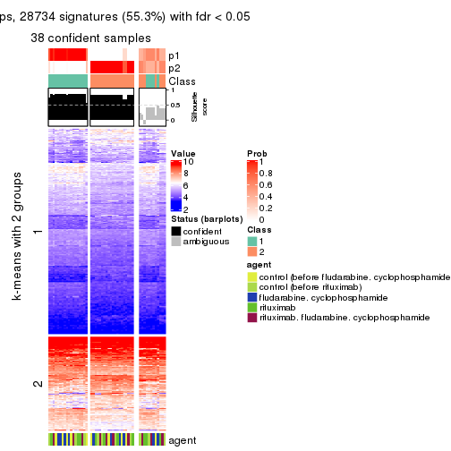
get_signatures(res, k = 3, scale_rows = FALSE)
get_signatures(res, k = 4, scale_rows = FALSE)
get_signatures(res, k = 5, scale_rows = FALSE)
get_signatures(res, k = 6, scale_rows = FALSE)
Compare the overlap of signatures from different k:
compare_signatures(res)
get_signature() returns a data frame invisibly. TO get the list of signatures, the function
call should be assigned to a variable explicitly. In following code, if plot argument is set
to FALSE, no heatmap is plotted while only the differential analysis is performed.
# code only for demonstration
tb = get_signature(res, k = ..., plot = FALSE)
An example of the output of tb is:
#> which_row fdr mean_1 mean_2 scaled_mean_1 scaled_mean_2 km
#> 1 38 0.042760348 8.373488 9.131774 -0.5533452 0.5164555 1
#> 2 40 0.018707592 7.106213 8.469186 -0.6173731 0.5762149 1
#> 3 55 0.019134737 10.221463 11.207825 -0.6159697 0.5749050 1
#> 4 59 0.006059896 5.921854 7.869574 -0.6899429 0.6439467 1
#> 5 60 0.018055526 8.928898 10.211722 -0.6204761 0.5791110 1
#> 6 98 0.009384629 15.714769 14.887706 0.6635654 -0.6193277 2
...
The columns in tb are:
which_row: row indices corresponding to the input matrix.fdr: FDR for the differential test. mean_x: The mean value in group x.scaled_mean_x: The mean value in group x after rows are scaled.km: Row groups if k-means clustering is applied to rows.UMAP plot which shows how samples are separated.
dimension_reduction(res, k = 2, method = "UMAP")

dimension_reduction(res, k = 3, method = "UMAP")
dimension_reduction(res, k = 4, method = "UMAP")
dimension_reduction(res, k = 5, method = "UMAP")
dimension_reduction(res, k = 6, method = "UMAP")
Following heatmap shows how subgroups are split when increasing k:
collect_classes(res)
Test correlation between subgroups and known annotations. If the known annotation is numeric, one-way ANOVA test is applied, and if the known annotation is discrete, chi-squared contingency table test is applied.
test_to_known_factors(res)
#> n agent(p) k
#> CV:NMF 38 0.979 2
#> CV:NMF 46 0.997 3
#> CV:NMF 46 0.917 4
#> CV:NMF 48 0.995 5
#> CV:NMF 50 0.990 6
If matrix rows can be associated to genes, consider to use functional_enrichment(res,
...) to perform function enrichment for the signature genes. See this vignette for more detailed explanations.
The object with results only for a single top-value method and a single partition method can be extracted as:
res = res_list["MAD", "hclust"]
# you can also extract it by
# res = res_list["MAD:hclust"]
A summary of res and all the functions that can be applied to it:
res
#> A 'ConsensusPartition' object with k = 2, 3, 4, 5, 6.
#> On a matrix with 51941 rows and 50 columns.
#> Top rows (1000, 2000, 3000, 4000, 5000) are extracted by 'MAD' method.
#> Subgroups are detected by 'hclust' method.
#> Performed in total 1250 partitions by row resampling.
#> Best k for subgroups seems to be 3.
#>
#> Following methods can be applied to this 'ConsensusPartition' object:
#> [1] "cola_report" "collect_classes" "collect_plots"
#> [4] "collect_stats" "colnames" "compare_signatures"
#> [7] "consensus_heatmap" "dimension_reduction" "functional_enrichment"
#> [10] "get_anno_col" "get_anno" "get_classes"
#> [13] "get_consensus" "get_matrix" "get_membership"
#> [16] "get_param" "get_signatures" "get_stats"
#> [19] "is_best_k" "is_stable_k" "membership_heatmap"
#> [22] "ncol" "nrow" "plot_ecdf"
#> [25] "rownames" "select_partition_number" "show"
#> [28] "suggest_best_k" "test_to_known_factors"
collect_plots() function collects all the plots made from res for all k (number of partitions)
into one single page to provide an easy and fast comparison between different k.
collect_plots(res)
The plots are:
k and the heatmap of
predicted classes for each k.k.k.k.All the plots in panels can be made by individual functions and they are plotted later in this section.
select_partition_number() produces several plots showing different
statistics for choosing “optimized” k. There are following statistics:
k;k, the area increased is defined as \(A_k - A_{k-1}\).The detailed explanations of these statistics can be found in the cola vignette.
Generally speaking, lower PAC score, higher mean silhouette score or higher
concordance corresponds to better partition. Rand index and Jaccard index
measure how similar the current partition is compared to partition with k-1.
If they are too similar, we won't accept k is better than k-1.
select_partition_number(res)
The numeric values for all these statistics can be obtained by get_stats().
get_stats(res)
#> k 1-PAC mean_silhouette concordance area_increased Rand Jaccard
#> 2 2 1.000 0.981 0.982 0.5013 0.493 0.493
#> 3 3 0.911 0.898 0.943 0.2970 0.853 0.702
#> 4 4 0.788 0.697 0.856 0.0911 0.951 0.858
#> 5 5 0.789 0.757 0.861 0.0771 0.930 0.769
#> 6 6 0.824 0.772 0.878 0.0303 0.943 0.773
suggest_best_k() suggests the best \(k\) based on these statistics. The rules are as follows:
suggest_best_k(res)
#> [1] 3
#> attr(,"optional")
#> [1] 2
There is also optional best \(k\) = 2 that is worth to check.
Following shows the table of the partitions (You need to click the show/hide
code output link to see it). The membership matrix (columns with name p*)
is inferred by
clue::cl_consensus()
function with the SE method. Basically the value in the membership matrix
represents the probability to belong to a certain group. The finall class
label for an item is determined with the group with highest probability it
belongs to.
In get_classes() function, the entropy is calculated from the membership
matrix and the silhouette score is calculated from the consensus matrix.
cbind(get_classes(res, k = 2), get_membership(res, k = 2))
#> class entropy silhouette p1 p2
#> GSM388593 1 0.000 0.988 1.000 0.000
#> GSM388594 1 0.000 0.988 1.000 0.000
#> GSM388595 1 0.000 0.988 1.000 0.000
#> GSM388596 1 0.163 0.981 0.976 0.024
#> GSM388597 1 0.163 0.981 0.976 0.024
#> GSM388598 2 0.184 0.984 0.028 0.972
#> GSM388599 2 0.184 0.984 0.028 0.972
#> GSM388600 2 0.184 0.984 0.028 0.972
#> GSM388601 2 0.163 0.970 0.024 0.976
#> GSM388602 2 0.163 0.970 0.024 0.976
#> GSM388623 1 0.163 0.981 0.976 0.024
#> GSM388624 1 0.000 0.988 1.000 0.000
#> GSM388625 1 0.000 0.988 1.000 0.000
#> GSM388626 1 0.000 0.988 1.000 0.000
#> GSM388627 1 0.000 0.988 1.000 0.000
#> GSM388628 2 0.184 0.984 0.028 0.972
#> GSM388629 2 0.184 0.984 0.028 0.972
#> GSM388630 2 0.184 0.984 0.028 0.972
#> GSM388631 1 0.327 0.952 0.940 0.060
#> GSM388632 2 0.163 0.970 0.024 0.976
#> GSM388603 1 0.000 0.988 1.000 0.000
#> GSM388604 1 0.000 0.988 1.000 0.000
#> GSM388605 1 0.000 0.988 1.000 0.000
#> GSM388606 1 0.163 0.981 0.976 0.024
#> GSM388607 1 0.163 0.981 0.976 0.024
#> GSM388608 2 0.184 0.984 0.028 0.972
#> GSM388609 2 0.184 0.984 0.028 0.972
#> GSM388610 2 0.184 0.984 0.028 0.972
#> GSM388611 2 0.163 0.970 0.024 0.976
#> GSM388612 2 0.163 0.970 0.024 0.976
#> GSM388583 1 0.000 0.988 1.000 0.000
#> GSM388584 1 0.000 0.988 1.000 0.000
#> GSM388585 1 0.000 0.988 1.000 0.000
#> GSM388586 1 0.163 0.981 0.976 0.024
#> GSM388587 1 0.163 0.981 0.976 0.024
#> GSM388588 2 0.184 0.984 0.028 0.972
#> GSM388589 2 0.184 0.984 0.028 0.972
#> GSM388590 2 0.184 0.984 0.028 0.972
#> GSM388591 2 0.163 0.970 0.024 0.976
#> GSM388592 2 0.163 0.970 0.024 0.976
#> GSM388613 1 0.163 0.981 0.976 0.024
#> GSM388614 1 0.000 0.988 1.000 0.000
#> GSM388615 1 0.000 0.988 1.000 0.000
#> GSM388616 1 0.000 0.988 1.000 0.000
#> GSM388617 1 0.000 0.988 1.000 0.000
#> GSM388618 2 0.184 0.984 0.028 0.972
#> GSM388619 2 0.184 0.984 0.028 0.972
#> GSM388620 2 0.184 0.984 0.028 0.972
#> GSM388621 1 0.327 0.952 0.940 0.060
#> GSM388622 2 0.163 0.970 0.024 0.976
cbind(get_classes(res, k = 3), get_membership(res, k = 3))
#> class entropy silhouette p1 p2 p3
#> GSM388593 3 0.406 0.7963 0.164 0.000 0.836
#> GSM388594 1 0.000 0.9759 1.000 0.000 0.000
#> GSM388595 1 0.000 0.9759 1.000 0.000 0.000
#> GSM388596 3 0.000 0.8466 0.000 0.000 1.000
#> GSM388597 3 0.000 0.8466 0.000 0.000 1.000
#> GSM388598 2 0.186 0.9805 0.000 0.948 0.052
#> GSM388599 2 0.186 0.9805 0.000 0.948 0.052
#> GSM388600 2 0.186 0.9805 0.000 0.948 0.052
#> GSM388601 2 0.000 0.9635 0.000 1.000 0.000
#> GSM388602 2 0.000 0.9635 0.000 1.000 0.000
#> GSM388623 3 0.631 0.0179 0.488 0.000 0.512
#> GSM388624 3 0.406 0.7963 0.164 0.000 0.836
#> GSM388625 1 0.141 0.9753 0.964 0.000 0.036
#> GSM388626 1 0.141 0.9753 0.964 0.000 0.036
#> GSM388627 1 0.141 0.9753 0.964 0.000 0.036
#> GSM388628 2 0.186 0.9805 0.000 0.948 0.052
#> GSM388629 2 0.186 0.9805 0.000 0.948 0.052
#> GSM388630 2 0.186 0.9805 0.000 0.948 0.052
#> GSM388631 3 0.141 0.8299 0.000 0.036 0.964
#> GSM388632 2 0.000 0.9635 0.000 1.000 0.000
#> GSM388603 3 0.406 0.7963 0.164 0.000 0.836
#> GSM388604 1 0.000 0.9759 1.000 0.000 0.000
#> GSM388605 1 0.000 0.9759 1.000 0.000 0.000
#> GSM388606 3 0.000 0.8466 0.000 0.000 1.000
#> GSM388607 3 0.000 0.8466 0.000 0.000 1.000
#> GSM388608 2 0.186 0.9805 0.000 0.948 0.052
#> GSM388609 2 0.186 0.9805 0.000 0.948 0.052
#> GSM388610 2 0.186 0.9805 0.000 0.948 0.052
#> GSM388611 2 0.000 0.9635 0.000 1.000 0.000
#> GSM388612 2 0.000 0.9635 0.000 1.000 0.000
#> GSM388583 3 0.406 0.7963 0.164 0.000 0.836
#> GSM388584 1 0.000 0.9759 1.000 0.000 0.000
#> GSM388585 1 0.000 0.9759 1.000 0.000 0.000
#> GSM388586 3 0.000 0.8466 0.000 0.000 1.000
#> GSM388587 3 0.000 0.8466 0.000 0.000 1.000
#> GSM388588 2 0.186 0.9805 0.000 0.948 0.052
#> GSM388589 2 0.186 0.9805 0.000 0.948 0.052
#> GSM388590 2 0.186 0.9805 0.000 0.948 0.052
#> GSM388591 2 0.000 0.9635 0.000 1.000 0.000
#> GSM388592 2 0.000 0.9635 0.000 1.000 0.000
#> GSM388613 3 0.631 0.0179 0.488 0.000 0.512
#> GSM388614 3 0.406 0.7963 0.164 0.000 0.836
#> GSM388615 1 0.141 0.9753 0.964 0.000 0.036
#> GSM388616 1 0.141 0.9753 0.964 0.000 0.036
#> GSM388617 1 0.141 0.9753 0.964 0.000 0.036
#> GSM388618 2 0.186 0.9805 0.000 0.948 0.052
#> GSM388619 2 0.186 0.9805 0.000 0.948 0.052
#> GSM388620 2 0.186 0.9805 0.000 0.948 0.052
#> GSM388621 3 0.141 0.8299 0.000 0.036 0.964
#> GSM388622 2 0.000 0.9635 0.000 1.000 0.000
cbind(get_classes(res, k = 4), get_membership(res, k = 4))
#> class entropy silhouette p1 p2 p3 p4
#> GSM388593 3 0.4235 0.7633 0.092 0.000 0.824 0.084
#> GSM388594 1 0.0000 0.9260 1.000 0.000 0.000 0.000
#> GSM388595 1 0.1022 0.9129 0.968 0.000 0.000 0.032
#> GSM388596 3 0.0592 0.7997 0.000 0.016 0.984 0.000
#> GSM388597 3 0.0592 0.7997 0.000 0.016 0.984 0.000
#> GSM388598 2 0.0000 0.8023 0.000 1.000 0.000 0.000
#> GSM388599 2 0.0000 0.8023 0.000 1.000 0.000 0.000
#> GSM388600 2 0.2081 0.7456 0.000 0.916 0.000 0.084
#> GSM388601 4 0.4967 1.0000 0.000 0.452 0.000 0.548
#> GSM388602 2 0.4955 -0.6923 0.000 0.556 0.000 0.444
#> GSM388623 3 0.6019 -0.0317 0.472 0.016 0.496 0.016
#> GSM388624 3 0.4235 0.7633 0.092 0.000 0.824 0.084
#> GSM388625 1 0.3015 0.9268 0.884 0.000 0.024 0.092
#> GSM388626 1 0.3015 0.9268 0.884 0.000 0.024 0.092
#> GSM388627 1 0.3015 0.9268 0.884 0.000 0.024 0.092
#> GSM388628 2 0.0000 0.8023 0.000 1.000 0.000 0.000
#> GSM388629 2 0.0000 0.8023 0.000 1.000 0.000 0.000
#> GSM388630 2 0.2081 0.7456 0.000 0.916 0.000 0.084
#> GSM388631 3 0.6412 0.5796 0.000 0.088 0.592 0.320
#> GSM388632 2 0.2081 0.6982 0.000 0.916 0.000 0.084
#> GSM388603 3 0.4235 0.7633 0.092 0.000 0.824 0.084
#> GSM388604 1 0.0000 0.9260 1.000 0.000 0.000 0.000
#> GSM388605 1 0.1022 0.9129 0.968 0.000 0.000 0.032
#> GSM388606 3 0.0592 0.7997 0.000 0.016 0.984 0.000
#> GSM388607 3 0.0592 0.7997 0.000 0.016 0.984 0.000
#> GSM388608 2 0.0000 0.8023 0.000 1.000 0.000 0.000
#> GSM388609 2 0.0000 0.8023 0.000 1.000 0.000 0.000
#> GSM388610 2 0.2081 0.7456 0.000 0.916 0.000 0.084
#> GSM388611 4 0.4967 1.0000 0.000 0.452 0.000 0.548
#> GSM388612 2 0.4955 -0.6923 0.000 0.556 0.000 0.444
#> GSM388583 3 0.4235 0.7633 0.092 0.000 0.824 0.084
#> GSM388584 1 0.0000 0.9260 1.000 0.000 0.000 0.000
#> GSM388585 1 0.1022 0.9129 0.968 0.000 0.000 0.032
#> GSM388586 3 0.0592 0.7997 0.000 0.016 0.984 0.000
#> GSM388587 3 0.0592 0.7997 0.000 0.016 0.984 0.000
#> GSM388588 2 0.0000 0.8023 0.000 1.000 0.000 0.000
#> GSM388589 2 0.0000 0.8023 0.000 1.000 0.000 0.000
#> GSM388590 2 0.2081 0.7456 0.000 0.916 0.000 0.084
#> GSM388591 4 0.4967 1.0000 0.000 0.452 0.000 0.548
#> GSM388592 2 0.4955 -0.6923 0.000 0.556 0.000 0.444
#> GSM388613 3 0.6019 -0.0317 0.472 0.016 0.496 0.016
#> GSM388614 3 0.4235 0.7633 0.092 0.000 0.824 0.084
#> GSM388615 1 0.3015 0.9268 0.884 0.000 0.024 0.092
#> GSM388616 1 0.3015 0.9268 0.884 0.000 0.024 0.092
#> GSM388617 1 0.3015 0.9268 0.884 0.000 0.024 0.092
#> GSM388618 2 0.0000 0.8023 0.000 1.000 0.000 0.000
#> GSM388619 2 0.0000 0.8023 0.000 1.000 0.000 0.000
#> GSM388620 2 0.2081 0.7456 0.000 0.916 0.000 0.084
#> GSM388621 3 0.6412 0.5796 0.000 0.088 0.592 0.320
#> GSM388622 2 0.2081 0.6982 0.000 0.916 0.000 0.084
cbind(get_classes(res, k = 5), get_membership(res, k = 5))
#> class entropy silhouette p1 p2 p3 p4 p5
#> GSM388593 3 0.393 0.661 0.064 0.000 0.796 0.000 0.140
#> GSM388594 1 0.000 0.779 1.000 0.000 0.000 0.000 0.000
#> GSM388595 1 0.249 0.715 0.872 0.000 0.000 0.004 0.124
#> GSM388596 3 0.000 0.680 0.000 0.000 1.000 0.000 0.000
#> GSM388597 3 0.000 0.680 0.000 0.000 1.000 0.000 0.000
#> GSM388598 2 0.000 0.911 0.000 1.000 0.000 0.000 0.000
#> GSM388599 2 0.000 0.911 0.000 1.000 0.000 0.000 0.000
#> GSM388600 2 0.185 0.872 0.000 0.912 0.000 0.088 0.000
#> GSM388601 4 0.051 0.804 0.000 0.016 0.000 0.984 0.000
#> GSM388602 4 0.321 0.811 0.000 0.212 0.000 0.788 0.000
#> GSM388623 3 0.629 0.106 0.312 0.000 0.512 0.000 0.176
#> GSM388624 3 0.393 0.661 0.064 0.000 0.796 0.000 0.140
#> GSM388625 1 0.382 0.794 0.696 0.000 0.000 0.000 0.304
#> GSM388626 1 0.382 0.794 0.696 0.000 0.000 0.000 0.304
#> GSM388627 1 0.382 0.794 0.696 0.000 0.000 0.000 0.304
#> GSM388628 2 0.000 0.911 0.000 1.000 0.000 0.000 0.000
#> GSM388629 2 0.000 0.911 0.000 1.000 0.000 0.000 0.000
#> GSM388630 2 0.185 0.872 0.000 0.912 0.000 0.088 0.000
#> GSM388631 5 0.594 1.000 0.000 0.088 0.336 0.012 0.564
#> GSM388632 2 0.400 0.355 0.000 0.656 0.000 0.344 0.000
#> GSM388603 3 0.393 0.661 0.064 0.000 0.796 0.000 0.140
#> GSM388604 1 0.000 0.779 1.000 0.000 0.000 0.000 0.000
#> GSM388605 1 0.249 0.715 0.872 0.000 0.000 0.004 0.124
#> GSM388606 3 0.000 0.680 0.000 0.000 1.000 0.000 0.000
#> GSM388607 3 0.000 0.680 0.000 0.000 1.000 0.000 0.000
#> GSM388608 2 0.000 0.911 0.000 1.000 0.000 0.000 0.000
#> GSM388609 2 0.000 0.911 0.000 1.000 0.000 0.000 0.000
#> GSM388610 2 0.185 0.872 0.000 0.912 0.000 0.088 0.000
#> GSM388611 4 0.051 0.804 0.000 0.016 0.000 0.984 0.000
#> GSM388612 4 0.321 0.811 0.000 0.212 0.000 0.788 0.000
#> GSM388583 3 0.393 0.661 0.064 0.000 0.796 0.000 0.140
#> GSM388584 1 0.000 0.779 1.000 0.000 0.000 0.000 0.000
#> GSM388585 1 0.249 0.715 0.872 0.000 0.000 0.004 0.124
#> GSM388586 3 0.000 0.680 0.000 0.000 1.000 0.000 0.000
#> GSM388587 3 0.000 0.680 0.000 0.000 1.000 0.000 0.000
#> GSM388588 2 0.000 0.911 0.000 1.000 0.000 0.000 0.000
#> GSM388589 2 0.000 0.911 0.000 1.000 0.000 0.000 0.000
#> GSM388590 2 0.185 0.872 0.000 0.912 0.000 0.088 0.000
#> GSM388591 4 0.051 0.804 0.000 0.016 0.000 0.984 0.000
#> GSM388592 4 0.321 0.811 0.000 0.212 0.000 0.788 0.000
#> GSM388613 3 0.629 0.106 0.312 0.000 0.512 0.000 0.176
#> GSM388614 3 0.393 0.661 0.064 0.000 0.796 0.000 0.140
#> GSM388615 1 0.382 0.794 0.696 0.000 0.000 0.000 0.304
#> GSM388616 1 0.382 0.794 0.696 0.000 0.000 0.000 0.304
#> GSM388617 1 0.382 0.794 0.696 0.000 0.000 0.000 0.304
#> GSM388618 2 0.000 0.911 0.000 1.000 0.000 0.000 0.000
#> GSM388619 2 0.000 0.911 0.000 1.000 0.000 0.000 0.000
#> GSM388620 2 0.185 0.872 0.000 0.912 0.000 0.088 0.000
#> GSM388621 5 0.594 1.000 0.000 0.088 0.336 0.012 0.564
#> GSM388622 2 0.400 0.355 0.000 0.656 0.000 0.344 0.000
cbind(get_classes(res, k = 6), get_membership(res, k = 6))
#> class entropy silhouette p1 p2 p3 p4 p5 p6
#> GSM388593 3 0.293 0.837 0.200 0.000 0.796 0.000 0.000 0.004
#> GSM388594 5 0.380 0.443 0.424 0.000 0.000 0.000 0.576 0.000
#> GSM388595 5 0.000 0.636 0.000 0.000 0.000 0.000 1.000 0.000
#> GSM388596 3 0.000 0.868 0.000 0.000 1.000 0.000 0.000 0.000
#> GSM388597 3 0.000 0.868 0.000 0.000 1.000 0.000 0.000 0.000
#> GSM388598 2 0.000 0.910 0.000 1.000 0.000 0.000 0.000 0.000
#> GSM388599 2 0.000 0.910 0.000 1.000 0.000 0.000 0.000 0.000
#> GSM388600 2 0.166 0.872 0.000 0.912 0.000 0.088 0.000 0.000
#> GSM388601 4 0.000 0.790 0.000 0.000 0.000 1.000 0.000 0.000
#> GSM388602 4 0.276 0.805 0.000 0.196 0.000 0.804 0.000 0.000
#> GSM388623 1 0.356 0.337 0.664 0.000 0.336 0.000 0.000 0.000
#> GSM388624 3 0.293 0.837 0.200 0.000 0.796 0.000 0.000 0.004
#> GSM388625 1 0.266 0.737 0.816 0.000 0.000 0.000 0.184 0.000
#> GSM388626 1 0.266 0.737 0.816 0.000 0.000 0.000 0.184 0.000
#> GSM388627 1 0.266 0.737 0.816 0.000 0.000 0.000 0.184 0.000
#> GSM388628 2 0.000 0.910 0.000 1.000 0.000 0.000 0.000 0.000
#> GSM388629 2 0.000 0.910 0.000 1.000 0.000 0.000 0.000 0.000
#> GSM388630 2 0.166 0.872 0.000 0.912 0.000 0.088 0.000 0.000
#> GSM388631 6 0.000 1.000 0.000 0.000 0.000 0.000 0.000 1.000
#> GSM388632 2 0.365 0.327 0.000 0.640 0.000 0.360 0.000 0.000
#> GSM388603 3 0.293 0.837 0.200 0.000 0.796 0.000 0.000 0.004
#> GSM388604 5 0.380 0.443 0.424 0.000 0.000 0.000 0.576 0.000
#> GSM388605 5 0.000 0.636 0.000 0.000 0.000 0.000 1.000 0.000
#> GSM388606 3 0.000 0.868 0.000 0.000 1.000 0.000 0.000 0.000
#> GSM388607 3 0.000 0.868 0.000 0.000 1.000 0.000 0.000 0.000
#> GSM388608 2 0.000 0.910 0.000 1.000 0.000 0.000 0.000 0.000
#> GSM388609 2 0.000 0.910 0.000 1.000 0.000 0.000 0.000 0.000
#> GSM388610 2 0.166 0.872 0.000 0.912 0.000 0.088 0.000 0.000
#> GSM388611 4 0.000 0.790 0.000 0.000 0.000 1.000 0.000 0.000
#> GSM388612 4 0.276 0.805 0.000 0.196 0.000 0.804 0.000 0.000
#> GSM388583 3 0.293 0.837 0.200 0.000 0.796 0.000 0.000 0.004
#> GSM388584 5 0.380 0.443 0.424 0.000 0.000 0.000 0.576 0.000
#> GSM388585 5 0.000 0.636 0.000 0.000 0.000 0.000 1.000 0.000
#> GSM388586 3 0.000 0.868 0.000 0.000 1.000 0.000 0.000 0.000
#> GSM388587 3 0.000 0.868 0.000 0.000 1.000 0.000 0.000 0.000
#> GSM388588 2 0.000 0.910 0.000 1.000 0.000 0.000 0.000 0.000
#> GSM388589 2 0.000 0.910 0.000 1.000 0.000 0.000 0.000 0.000
#> GSM388590 2 0.166 0.872 0.000 0.912 0.000 0.088 0.000 0.000
#> GSM388591 4 0.000 0.790 0.000 0.000 0.000 1.000 0.000 0.000
#> GSM388592 4 0.276 0.805 0.000 0.196 0.000 0.804 0.000 0.000
#> GSM388613 1 0.356 0.337 0.664 0.000 0.336 0.000 0.000 0.000
#> GSM388614 3 0.293 0.837 0.200 0.000 0.796 0.000 0.000 0.004
#> GSM388615 1 0.266 0.737 0.816 0.000 0.000 0.000 0.184 0.000
#> GSM388616 1 0.266 0.737 0.816 0.000 0.000 0.000 0.184 0.000
#> GSM388617 1 0.266 0.737 0.816 0.000 0.000 0.000 0.184 0.000
#> GSM388618 2 0.000 0.910 0.000 1.000 0.000 0.000 0.000 0.000
#> GSM388619 2 0.000 0.910 0.000 1.000 0.000 0.000 0.000 0.000
#> GSM388620 2 0.166 0.872 0.000 0.912 0.000 0.088 0.000 0.000
#> GSM388621 6 0.000 1.000 0.000 0.000 0.000 0.000 0.000 1.000
#> GSM388622 2 0.365 0.327 0.000 0.640 0.000 0.360 0.000 0.000
Heatmaps for the consensus matrix. It visualizes the probability of two samples to be in a same group.
consensus_heatmap(res, k = 2)
consensus_heatmap(res, k = 3)
consensus_heatmap(res, k = 4)
consensus_heatmap(res, k = 5)
consensus_heatmap(res, k = 6)
Heatmaps for the membership of samples in all partitions to see how consistent they are:
membership_heatmap(res, k = 2)
membership_heatmap(res, k = 3)
membership_heatmap(res, k = 4)
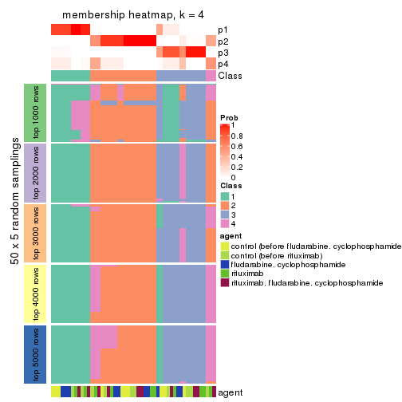
membership_heatmap(res, k = 5)
membership_heatmap(res, k = 6)
As soon as we have had the classes for columns, we can look for signatures which are significantly different between classes which can be candidate marks for certain classes. Following are the heatmaps for signatures.
Signature heatmaps where rows are scaled:
get_signatures(res, k = 2)
get_signatures(res, k = 3)
get_signatures(res, k = 4)
get_signatures(res, k = 5)
get_signatures(res, k = 6)
Signature heatmaps where rows are not scaled:
get_signatures(res, k = 2, scale_rows = FALSE)
get_signatures(res, k = 3, scale_rows = FALSE)
get_signatures(res, k = 4, scale_rows = FALSE)
get_signatures(res, k = 5, scale_rows = FALSE)
get_signatures(res, k = 6, scale_rows = FALSE)
Compare the overlap of signatures from different k:
compare_signatures(res)
get_signature() returns a data frame invisibly. TO get the list of signatures, the function
call should be assigned to a variable explicitly. In following code, if plot argument is set
to FALSE, no heatmap is plotted while only the differential analysis is performed.
# code only for demonstration
tb = get_signature(res, k = ..., plot = FALSE)
An example of the output of tb is:
#> which_row fdr mean_1 mean_2 scaled_mean_1 scaled_mean_2 km
#> 1 38 0.042760348 8.373488 9.131774 -0.5533452 0.5164555 1
#> 2 40 0.018707592 7.106213 8.469186 -0.6173731 0.5762149 1
#> 3 55 0.019134737 10.221463 11.207825 -0.6159697 0.5749050 1
#> 4 59 0.006059896 5.921854 7.869574 -0.6899429 0.6439467 1
#> 5 60 0.018055526 8.928898 10.211722 -0.6204761 0.5791110 1
#> 6 98 0.009384629 15.714769 14.887706 0.6635654 -0.6193277 2
...
The columns in tb are:
which_row: row indices corresponding to the input matrix.fdr: FDR for the differential test. mean_x: The mean value in group x.scaled_mean_x: The mean value in group x after rows are scaled.km: Row groups if k-means clustering is applied to rows.UMAP plot which shows how samples are separated.
dimension_reduction(res, k = 2, method = "UMAP")

dimension_reduction(res, k = 3, method = "UMAP")
dimension_reduction(res, k = 4, method = "UMAP")
dimension_reduction(res, k = 5, method = "UMAP")
dimension_reduction(res, k = 6, method = "UMAP")

Following heatmap shows how subgroups are split when increasing k:
collect_classes(res)
Test correlation between subgroups and known annotations. If the known annotation is numeric, one-way ANOVA test is applied, and if the known annotation is discrete, chi-squared contingency table test is applied.
test_to_known_factors(res)
#> n agent(p) k
#> MAD:hclust 50 0.975 2
#> MAD:hclust 48 0.997 3
#> MAD:hclust 45 0.993 4
#> MAD:hclust 46 0.882 5
#> MAD:hclust 43 0.422 6
If matrix rows can be associated to genes, consider to use functional_enrichment(res,
...) to perform function enrichment for the signature genes. See this vignette for more detailed explanations.
The object with results only for a single top-value method and a single partition method can be extracted as:
res = res_list["MAD", "kmeans"]
# you can also extract it by
# res = res_list["MAD:kmeans"]
A summary of res and all the functions that can be applied to it:
res
#> A 'ConsensusPartition' object with k = 2, 3, 4, 5, 6.
#> On a matrix with 51941 rows and 50 columns.
#> Top rows (1000, 2000, 3000, 4000, 5000) are extracted by 'MAD' method.
#> Subgroups are detected by 'kmeans' method.
#> Performed in total 1250 partitions by row resampling.
#> Best k for subgroups seems to be 2.
#>
#> Following methods can be applied to this 'ConsensusPartition' object:
#> [1] "cola_report" "collect_classes" "collect_plots"
#> [4] "collect_stats" "colnames" "compare_signatures"
#> [7] "consensus_heatmap" "dimension_reduction" "functional_enrichment"
#> [10] "get_anno_col" "get_anno" "get_classes"
#> [13] "get_consensus" "get_matrix" "get_membership"
#> [16] "get_param" "get_signatures" "get_stats"
#> [19] "is_best_k" "is_stable_k" "membership_heatmap"
#> [22] "ncol" "nrow" "plot_ecdf"
#> [25] "rownames" "select_partition_number" "show"
#> [28] "suggest_best_k" "test_to_known_factors"
collect_plots() function collects all the plots made from res for all k (number of partitions)
into one single page to provide an easy and fast comparison between different k.
collect_plots(res)
The plots are:
k and the heatmap of
predicted classes for each k.k.k.k.All the plots in panels can be made by individual functions and they are plotted later in this section.
select_partition_number() produces several plots showing different
statistics for choosing “optimized” k. There are following statistics:
k;k, the area increased is defined as \(A_k - A_{k-1}\).The detailed explanations of these statistics can be found in the cola vignette.
Generally speaking, lower PAC score, higher mean silhouette score or higher
concordance corresponds to better partition. Rand index and Jaccard index
measure how similar the current partition is compared to partition with k-1.
If they are too similar, we won't accept k is better than k-1.
select_partition_number(res)
The numeric values for all these statistics can be obtained by get_stats().
get_stats(res)
#> k 1-PAC mean_silhouette concordance area_increased Rand Jaccard
#> 2 2 1.000 0.970 0.974 0.5005 0.493 0.493
#> 3 3 0.690 0.842 0.811 0.2543 0.853 0.702
#> 4 4 0.591 0.604 0.634 0.1178 0.894 0.693
#> 5 5 0.644 0.571 0.712 0.0737 0.809 0.428
#> 6 6 0.631 0.525 0.686 0.0497 0.935 0.758
suggest_best_k() suggests the best \(k\) based on these statistics. The rules are as follows:
suggest_best_k(res)
#> [1] 2
Following shows the table of the partitions (You need to click the show/hide
code output link to see it). The membership matrix (columns with name p*)
is inferred by
clue::cl_consensus()
function with the SE method. Basically the value in the membership matrix
represents the probability to belong to a certain group. The finall class
label for an item is determined with the group with highest probability it
belongs to.
In get_classes() function, the entropy is calculated from the membership
matrix and the silhouette score is calculated from the consensus matrix.
cbind(get_classes(res, k = 2), get_membership(res, k = 2))
#> class entropy silhouette p1 p2
#> GSM388593 1 0.141 0.968 0.980 0.020
#> GSM388594 1 0.000 0.960 1.000 0.000
#> GSM388595 1 0.000 0.960 1.000 0.000
#> GSM388596 1 0.430 0.950 0.912 0.088
#> GSM388597 1 0.430 0.950 0.912 0.088
#> GSM388598 2 0.000 0.990 0.000 1.000
#> GSM388599 2 0.000 0.990 0.000 1.000
#> GSM388600 2 0.000 0.990 0.000 1.000
#> GSM388601 2 0.311 0.947 0.056 0.944
#> GSM388602 2 0.000 0.990 0.000 1.000
#> GSM388623 1 0.430 0.950 0.912 0.088
#> GSM388624 1 0.141 0.968 0.980 0.020
#> GSM388625 1 0.141 0.968 0.980 0.020
#> GSM388626 1 0.141 0.968 0.980 0.020
#> GSM388627 1 0.141 0.968 0.980 0.020
#> GSM388628 2 0.000 0.990 0.000 1.000
#> GSM388629 2 0.000 0.990 0.000 1.000
#> GSM388630 2 0.000 0.990 0.000 1.000
#> GSM388631 1 0.430 0.950 0.912 0.088
#> GSM388632 2 0.163 0.974 0.024 0.976
#> GSM388603 1 0.141 0.968 0.980 0.020
#> GSM388604 1 0.000 0.960 1.000 0.000
#> GSM388605 1 0.000 0.960 1.000 0.000
#> GSM388606 1 0.430 0.950 0.912 0.088
#> GSM388607 1 0.430 0.950 0.912 0.088
#> GSM388608 2 0.000 0.990 0.000 1.000
#> GSM388609 2 0.000 0.990 0.000 1.000
#> GSM388610 2 0.000 0.990 0.000 1.000
#> GSM388611 2 0.311 0.947 0.056 0.944
#> GSM388612 2 0.000 0.990 0.000 1.000
#> GSM388583 1 0.141 0.968 0.980 0.020
#> GSM388584 1 0.000 0.960 1.000 0.000
#> GSM388585 1 0.000 0.960 1.000 0.000
#> GSM388586 1 0.430 0.950 0.912 0.088
#> GSM388587 1 0.430 0.950 0.912 0.088
#> GSM388588 2 0.000 0.990 0.000 1.000
#> GSM388589 2 0.000 0.990 0.000 1.000
#> GSM388590 2 0.000 0.990 0.000 1.000
#> GSM388591 2 0.311 0.947 0.056 0.944
#> GSM388592 2 0.000 0.990 0.000 1.000
#> GSM388613 1 0.430 0.950 0.912 0.088
#> GSM388614 1 0.141 0.968 0.980 0.020
#> GSM388615 1 0.141 0.968 0.980 0.020
#> GSM388616 1 0.141 0.968 0.980 0.020
#> GSM388617 1 0.141 0.968 0.980 0.020
#> GSM388618 2 0.000 0.990 0.000 1.000
#> GSM388619 2 0.000 0.990 0.000 1.000
#> GSM388620 2 0.000 0.990 0.000 1.000
#> GSM388621 1 0.430 0.950 0.912 0.088
#> GSM388622 2 0.163 0.974 0.024 0.976
cbind(get_classes(res, k = 3), get_membership(res, k = 3))
#> class entropy silhouette p1 p2 p3
#> GSM388593 3 0.3686 0.726 0.140 0.000 0.860
#> GSM388594 1 0.6095 0.885 0.608 0.000 0.392
#> GSM388595 1 0.5706 0.819 0.680 0.000 0.320
#> GSM388596 3 0.0892 0.839 0.000 0.020 0.980
#> GSM388597 3 0.0892 0.839 0.000 0.020 0.980
#> GSM388598 2 0.1182 0.910 0.012 0.976 0.012
#> GSM388599 2 0.1015 0.911 0.008 0.980 0.012
#> GSM388600 2 0.2165 0.912 0.064 0.936 0.000
#> GSM388601 2 0.6318 0.773 0.356 0.636 0.008
#> GSM388602 2 0.5285 0.849 0.244 0.752 0.004
#> GSM388623 3 0.5356 0.539 0.196 0.020 0.784
#> GSM388624 3 0.3752 0.718 0.144 0.000 0.856
#> GSM388625 1 0.6267 0.884 0.548 0.000 0.452
#> GSM388626 1 0.6267 0.884 0.548 0.000 0.452
#> GSM388627 1 0.6267 0.884 0.548 0.000 0.452
#> GSM388628 2 0.0000 0.914 0.000 1.000 0.000
#> GSM388629 2 0.0892 0.914 0.020 0.980 0.000
#> GSM388630 2 0.1643 0.914 0.044 0.956 0.000
#> GSM388631 3 0.1919 0.818 0.020 0.024 0.956
#> GSM388632 2 0.3965 0.888 0.132 0.860 0.008
#> GSM388603 3 0.3686 0.726 0.140 0.000 0.860
#> GSM388604 1 0.6095 0.885 0.608 0.000 0.392
#> GSM388605 1 0.5706 0.819 0.680 0.000 0.320
#> GSM388606 3 0.0892 0.839 0.000 0.020 0.980
#> GSM388607 3 0.0892 0.839 0.000 0.020 0.980
#> GSM388608 2 0.1182 0.910 0.012 0.976 0.012
#> GSM388609 2 0.1015 0.911 0.008 0.980 0.012
#> GSM388610 2 0.2165 0.912 0.064 0.936 0.000
#> GSM388611 2 0.6318 0.773 0.356 0.636 0.008
#> GSM388612 2 0.5285 0.849 0.244 0.752 0.004
#> GSM388583 3 0.3686 0.726 0.140 0.000 0.860
#> GSM388584 1 0.6079 0.885 0.612 0.000 0.388
#> GSM388585 1 0.5706 0.819 0.680 0.000 0.320
#> GSM388586 3 0.0892 0.839 0.000 0.020 0.980
#> GSM388587 3 0.0892 0.839 0.000 0.020 0.980
#> GSM388588 2 0.1182 0.910 0.012 0.976 0.012
#> GSM388589 2 0.1015 0.911 0.008 0.980 0.012
#> GSM388590 2 0.2165 0.912 0.064 0.936 0.000
#> GSM388591 2 0.6318 0.773 0.356 0.636 0.008
#> GSM388592 2 0.5285 0.849 0.244 0.752 0.004
#> GSM388613 3 0.5455 0.513 0.204 0.020 0.776
#> GSM388614 3 0.3116 0.755 0.108 0.000 0.892
#> GSM388615 1 0.6267 0.884 0.548 0.000 0.452
#> GSM388616 1 0.6267 0.884 0.548 0.000 0.452
#> GSM388617 1 0.6274 0.879 0.544 0.000 0.456
#> GSM388618 2 0.0000 0.914 0.000 1.000 0.000
#> GSM388619 2 0.0892 0.914 0.020 0.980 0.000
#> GSM388620 2 0.1643 0.914 0.044 0.956 0.000
#> GSM388621 3 0.1919 0.818 0.020 0.024 0.956
#> GSM388622 2 0.3965 0.888 0.132 0.860 0.008
cbind(get_classes(res, k = 4), get_membership(res, k = 4))
#> class entropy silhouette p1 p2 p3 p4
#> GSM388593 3 0.570 0.6033 0.380 0.000 0.588 0.032
#> GSM388594 1 0.308 0.8197 0.888 0.000 0.048 0.064
#> GSM388595 1 0.376 0.7266 0.812 0.004 0.004 0.180
#> GSM388596 3 0.402 0.7712 0.116 0.000 0.832 0.052
#> GSM388597 3 0.334 0.7743 0.128 0.000 0.856 0.016
#> GSM388598 4 0.531 0.9096 0.000 0.348 0.020 0.632
#> GSM388599 4 0.561 0.9041 0.000 0.356 0.032 0.612
#> GSM388600 2 0.599 -0.2515 0.000 0.520 0.040 0.440
#> GSM388601 2 0.214 0.4846 0.012 0.936 0.040 0.012
#> GSM388602 2 0.288 0.5076 0.000 0.892 0.024 0.084
#> GSM388623 3 0.568 0.5807 0.352 0.000 0.612 0.036
#> GSM388624 3 0.554 0.4898 0.444 0.004 0.540 0.012
#> GSM388625 1 0.328 0.8180 0.860 0.016 0.124 0.000
#> GSM388626 1 0.328 0.8180 0.860 0.016 0.124 0.000
#> GSM388627 1 0.328 0.8180 0.860 0.016 0.124 0.000
#> GSM388628 4 0.511 0.8590 0.000 0.384 0.008 0.608
#> GSM388629 4 0.531 0.8343 0.000 0.412 0.012 0.576
#> GSM388630 2 0.567 -0.3286 0.000 0.528 0.024 0.448
#> GSM388631 3 0.531 0.7201 0.092 0.004 0.756 0.148
#> GSM388632 2 0.495 0.0734 0.000 0.648 0.008 0.344
#> GSM388603 3 0.570 0.6033 0.380 0.000 0.588 0.032
#> GSM388604 1 0.308 0.8197 0.888 0.000 0.048 0.064
#> GSM388605 1 0.376 0.7266 0.812 0.004 0.004 0.180
#> GSM388606 3 0.402 0.7712 0.116 0.000 0.832 0.052
#> GSM388607 3 0.317 0.7735 0.116 0.000 0.868 0.016
#> GSM388608 4 0.531 0.9096 0.000 0.348 0.020 0.632
#> GSM388609 4 0.561 0.9041 0.000 0.356 0.032 0.612
#> GSM388610 2 0.599 -0.2515 0.000 0.520 0.040 0.440
#> GSM388611 2 0.214 0.4846 0.012 0.936 0.040 0.012
#> GSM388612 2 0.288 0.5076 0.000 0.892 0.024 0.084
#> GSM388583 3 0.570 0.6033 0.380 0.000 0.588 0.032
#> GSM388584 1 0.308 0.8197 0.888 0.000 0.048 0.064
#> GSM388585 1 0.376 0.7266 0.812 0.004 0.004 0.180
#> GSM388586 3 0.402 0.7712 0.116 0.000 0.832 0.052
#> GSM388587 3 0.334 0.7743 0.128 0.000 0.856 0.016
#> GSM388588 4 0.531 0.9096 0.000 0.348 0.020 0.632
#> GSM388589 4 0.561 0.9041 0.000 0.356 0.032 0.612
#> GSM388590 2 0.599 -0.2515 0.000 0.520 0.040 0.440
#> GSM388591 2 0.214 0.4846 0.012 0.936 0.040 0.012
#> GSM388592 2 0.288 0.5076 0.000 0.892 0.024 0.084
#> GSM388613 3 0.570 0.5731 0.356 0.000 0.608 0.036
#> GSM388614 3 0.542 0.5841 0.388 0.004 0.596 0.012
#> GSM388615 1 0.328 0.8180 0.860 0.016 0.124 0.000
#> GSM388616 1 0.328 0.8180 0.860 0.016 0.124 0.000
#> GSM388617 1 0.316 0.8177 0.864 0.012 0.124 0.000
#> GSM388618 4 0.511 0.8590 0.000 0.384 0.008 0.608
#> GSM388619 4 0.531 0.8343 0.000 0.412 0.012 0.576
#> GSM388620 2 0.567 -0.3286 0.000 0.528 0.024 0.448
#> GSM388621 3 0.531 0.7201 0.092 0.004 0.756 0.148
#> GSM388622 2 0.495 0.0734 0.000 0.648 0.008 0.344
cbind(get_classes(res, k = 5), get_membership(res, k = 5))
#> class entropy silhouette p1 p2 p3 p4 p5
#> GSM388593 1 0.6651 0.267 0.484 0.000 0.388 0.064 0.064
#> GSM388594 1 0.4949 -0.394 0.656 0.000 0.004 0.044 0.296
#> GSM388595 5 0.4670 0.996 0.440 0.000 0.004 0.008 0.548
#> GSM388596 3 0.2831 0.839 0.064 0.004 0.892 0.024 0.016
#> GSM388597 3 0.2276 0.831 0.076 0.004 0.908 0.008 0.004
#> GSM388598 2 0.1560 0.735 0.000 0.948 0.028 0.004 0.020
#> GSM388599 2 0.1815 0.737 0.000 0.940 0.020 0.016 0.024
#> GSM388600 2 0.5386 0.564 0.000 0.696 0.012 0.140 0.152
#> GSM388601 4 0.4416 0.785 0.016 0.252 0.004 0.720 0.008
#> GSM388602 4 0.6336 0.745 0.008 0.356 0.004 0.516 0.116
#> GSM388623 3 0.5321 0.512 0.336 0.004 0.612 0.040 0.008
#> GSM388624 1 0.5994 0.382 0.580 0.000 0.328 0.044 0.048
#> GSM388625 1 0.0510 0.448 0.984 0.000 0.016 0.000 0.000
#> GSM388626 1 0.0510 0.448 0.984 0.000 0.016 0.000 0.000
#> GSM388627 1 0.0510 0.448 0.984 0.000 0.016 0.000 0.000
#> GSM388628 2 0.2053 0.736 0.000 0.928 0.016 0.016 0.040
#> GSM388629 2 0.4279 0.666 0.000 0.808 0.036 0.068 0.088
#> GSM388630 2 0.4918 0.584 0.000 0.728 0.004 0.140 0.128
#> GSM388631 3 0.5410 0.735 0.044 0.016 0.748 0.096 0.096
#> GSM388632 2 0.5760 0.272 0.028 0.664 0.024 0.248 0.036
#> GSM388603 1 0.6651 0.267 0.484 0.000 0.388 0.064 0.064
#> GSM388604 1 0.4949 -0.394 0.656 0.000 0.004 0.044 0.296
#> GSM388605 5 0.4882 0.993 0.440 0.000 0.008 0.012 0.540
#> GSM388606 3 0.2831 0.839 0.064 0.004 0.892 0.024 0.016
#> GSM388607 3 0.2150 0.834 0.068 0.004 0.916 0.008 0.004
#> GSM388608 2 0.1560 0.735 0.000 0.948 0.028 0.004 0.020
#> GSM388609 2 0.1815 0.737 0.000 0.940 0.020 0.016 0.024
#> GSM388610 2 0.5386 0.564 0.000 0.696 0.012 0.140 0.152
#> GSM388611 4 0.4416 0.785 0.016 0.252 0.004 0.720 0.008
#> GSM388612 4 0.6336 0.745 0.008 0.356 0.004 0.516 0.116
#> GSM388583 1 0.6651 0.267 0.484 0.000 0.388 0.064 0.064
#> GSM388584 1 0.4949 -0.394 0.656 0.000 0.004 0.044 0.296
#> GSM388585 5 0.4670 0.996 0.440 0.000 0.004 0.008 0.548
#> GSM388586 3 0.2831 0.839 0.064 0.004 0.892 0.024 0.016
#> GSM388587 3 0.2276 0.831 0.076 0.004 0.908 0.008 0.004
#> GSM388588 2 0.1560 0.735 0.000 0.948 0.028 0.004 0.020
#> GSM388589 2 0.1815 0.737 0.000 0.940 0.020 0.016 0.024
#> GSM388590 2 0.5386 0.564 0.000 0.696 0.012 0.140 0.152
#> GSM388591 4 0.4416 0.785 0.016 0.252 0.004 0.720 0.008
#> GSM388592 4 0.6336 0.745 0.008 0.356 0.004 0.516 0.116
#> GSM388613 3 0.5364 0.491 0.348 0.004 0.600 0.040 0.008
#> GSM388614 1 0.6205 0.187 0.480 0.000 0.428 0.044 0.048
#> GSM388615 1 0.0510 0.448 0.984 0.000 0.016 0.000 0.000
#> GSM388616 1 0.0510 0.448 0.984 0.000 0.016 0.000 0.000
#> GSM388617 1 0.0771 0.442 0.976 0.000 0.020 0.000 0.004
#> GSM388618 2 0.2053 0.736 0.000 0.928 0.016 0.016 0.040
#> GSM388619 2 0.4279 0.666 0.000 0.808 0.036 0.068 0.088
#> GSM388620 2 0.4918 0.584 0.000 0.728 0.004 0.140 0.128
#> GSM388621 3 0.5410 0.735 0.044 0.016 0.748 0.096 0.096
#> GSM388622 2 0.5760 0.272 0.028 0.664 0.024 0.248 0.036
cbind(get_classes(res, k = 6), get_membership(res, k = 6))
#> class entropy silhouette p1 p2 p3 p4 p5 p6
#> GSM388593 3 0.6635 0.256 0.396 0.000 0.416 0.016 0.036 NA
#> GSM388594 1 0.5265 -0.193 0.600 0.000 0.000 0.036 0.312 NA
#> GSM388595 5 0.4135 0.994 0.404 0.000 0.008 0.004 0.584 NA
#> GSM388596 3 0.3905 0.656 0.036 0.000 0.808 0.008 0.040 NA
#> GSM388597 3 0.1524 0.660 0.060 0.000 0.932 0.000 0.008 NA
#> GSM388598 2 0.1485 0.663 0.000 0.944 0.004 0.000 0.028 NA
#> GSM388599 2 0.2024 0.661 0.000 0.924 0.012 0.008 0.020 NA
#> GSM388600 2 0.5808 0.407 0.000 0.492 0.004 0.128 0.008 NA
#> GSM388601 4 0.2665 0.723 0.016 0.104 0.000 0.868 0.012 NA
#> GSM388602 4 0.6751 0.672 0.004 0.196 0.004 0.488 0.048 NA
#> GSM388623 3 0.5620 0.383 0.340 0.000 0.564 0.024 0.016 NA
#> GSM388624 1 0.6014 -0.187 0.500 0.000 0.376 0.008 0.040 NA
#> GSM388625 1 0.0713 0.647 0.972 0.000 0.028 0.000 0.000 NA
#> GSM388626 1 0.1116 0.646 0.960 0.000 0.028 0.000 0.004 NA
#> GSM388627 1 0.0972 0.643 0.964 0.000 0.028 0.000 0.008 NA
#> GSM388628 2 0.3282 0.666 0.000 0.836 0.000 0.020 0.036 NA
#> GSM388629 2 0.5375 0.585 0.000 0.680 0.000 0.072 0.096 NA
#> GSM388630 2 0.5455 0.486 0.000 0.572 0.000 0.124 0.008 NA
#> GSM388631 3 0.6384 0.558 0.036 0.012 0.612 0.024 0.176 NA
#> GSM388632 2 0.6764 0.231 0.024 0.524 0.004 0.260 0.040 NA
#> GSM388603 3 0.6635 0.256 0.396 0.000 0.416 0.016 0.036 NA
#> GSM388604 1 0.5265 -0.193 0.600 0.000 0.000 0.036 0.312 NA
#> GSM388605 5 0.4462 0.988 0.404 0.000 0.008 0.004 0.572 NA
#> GSM388606 3 0.3905 0.656 0.036 0.000 0.808 0.008 0.040 NA
#> GSM388607 3 0.1196 0.661 0.040 0.000 0.952 0.000 0.008 NA
#> GSM388608 2 0.1485 0.663 0.000 0.944 0.004 0.000 0.028 NA
#> GSM388609 2 0.2024 0.661 0.000 0.924 0.012 0.008 0.020 NA
#> GSM388610 2 0.5808 0.407 0.000 0.492 0.004 0.128 0.008 NA
#> GSM388611 4 0.2665 0.723 0.016 0.104 0.000 0.868 0.012 NA
#> GSM388612 4 0.6751 0.672 0.004 0.196 0.004 0.488 0.048 NA
#> GSM388583 3 0.6635 0.256 0.396 0.000 0.416 0.016 0.036 NA
#> GSM388584 1 0.5265 -0.193 0.600 0.000 0.000 0.036 0.312 NA
#> GSM388585 5 0.4135 0.994 0.404 0.000 0.008 0.004 0.584 NA
#> GSM388586 3 0.3905 0.656 0.036 0.000 0.808 0.008 0.040 NA
#> GSM388587 3 0.1524 0.660 0.060 0.000 0.932 0.000 0.008 NA
#> GSM388588 2 0.1485 0.663 0.000 0.944 0.004 0.000 0.028 NA
#> GSM388589 2 0.2024 0.661 0.000 0.924 0.012 0.008 0.020 NA
#> GSM388590 2 0.5808 0.407 0.000 0.492 0.004 0.128 0.008 NA
#> GSM388591 4 0.2807 0.723 0.016 0.104 0.004 0.864 0.012 NA
#> GSM388592 4 0.6751 0.672 0.004 0.196 0.004 0.488 0.048 NA
#> GSM388613 3 0.5631 0.377 0.344 0.000 0.560 0.024 0.016 NA
#> GSM388614 3 0.6055 0.259 0.412 0.000 0.464 0.008 0.040 NA
#> GSM388615 1 0.0713 0.647 0.972 0.000 0.028 0.000 0.000 NA
#> GSM388616 1 0.1116 0.646 0.960 0.000 0.028 0.000 0.004 NA
#> GSM388617 1 0.0972 0.643 0.964 0.000 0.028 0.000 0.008 NA
#> GSM388618 2 0.3282 0.666 0.000 0.836 0.000 0.020 0.036 NA
#> GSM388619 2 0.5375 0.585 0.000 0.680 0.000 0.072 0.096 NA
#> GSM388620 2 0.5455 0.486 0.000 0.572 0.000 0.124 0.008 NA
#> GSM388621 3 0.6384 0.558 0.036 0.012 0.612 0.024 0.176 NA
#> GSM388622 2 0.6764 0.231 0.024 0.524 0.004 0.260 0.040 NA
Heatmaps for the consensus matrix. It visualizes the probability of two samples to be in a same group.
consensus_heatmap(res, k = 2)
consensus_heatmap(res, k = 3)
consensus_heatmap(res, k = 4)
consensus_heatmap(res, k = 5)
consensus_heatmap(res, k = 6)
Heatmaps for the membership of samples in all partitions to see how consistent they are:
membership_heatmap(res, k = 2)
membership_heatmap(res, k = 3)
membership_heatmap(res, k = 4)
membership_heatmap(res, k = 5)
membership_heatmap(res, k = 6)
As soon as we have had the classes for columns, we can look for signatures which are significantly different between classes which can be candidate marks for certain classes. Following are the heatmaps for signatures.
Signature heatmaps where rows are scaled:
get_signatures(res, k = 2)

get_signatures(res, k = 3)

get_signatures(res, k = 4)
get_signatures(res, k = 5)
get_signatures(res, k = 6)
Signature heatmaps where rows are not scaled:
get_signatures(res, k = 2, scale_rows = FALSE)
get_signatures(res, k = 3, scale_rows = FALSE)

get_signatures(res, k = 4, scale_rows = FALSE)
get_signatures(res, k = 5, scale_rows = FALSE)
get_signatures(res, k = 6, scale_rows = FALSE)
Compare the overlap of signatures from different k:
compare_signatures(res)
get_signature() returns a data frame invisibly. TO get the list of signatures, the function
call should be assigned to a variable explicitly. In following code, if plot argument is set
to FALSE, no heatmap is plotted while only the differential analysis is performed.
# code only for demonstration
tb = get_signature(res, k = ..., plot = FALSE)
An example of the output of tb is:
#> which_row fdr mean_1 mean_2 scaled_mean_1 scaled_mean_2 km
#> 1 38 0.042760348 8.373488 9.131774 -0.5533452 0.5164555 1
#> 2 40 0.018707592 7.106213 8.469186 -0.6173731 0.5762149 1
#> 3 55 0.019134737 10.221463 11.207825 -0.6159697 0.5749050 1
#> 4 59 0.006059896 5.921854 7.869574 -0.6899429 0.6439467 1
#> 5 60 0.018055526 8.928898 10.211722 -0.6204761 0.5791110 1
#> 6 98 0.009384629 15.714769 14.887706 0.6635654 -0.6193277 2
...
The columns in tb are:
which_row: row indices corresponding to the input matrix.fdr: FDR for the differential test. mean_x: The mean value in group x.scaled_mean_x: The mean value in group x after rows are scaled.km: Row groups if k-means clustering is applied to rows.UMAP plot which shows how samples are separated.
dimension_reduction(res, k = 2, method = "UMAP")
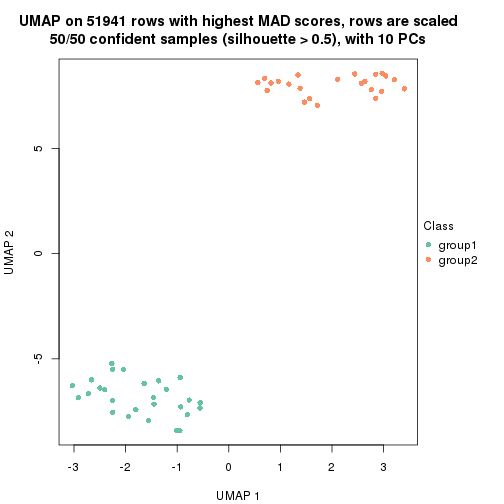
dimension_reduction(res, k = 3, method = "UMAP")
dimension_reduction(res, k = 4, method = "UMAP")
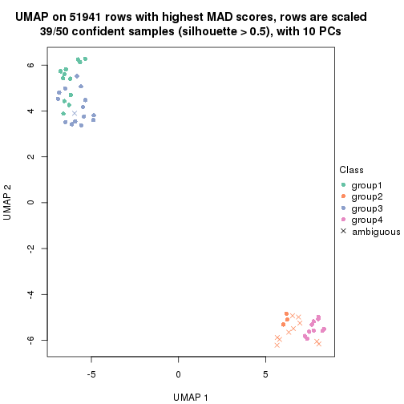
dimension_reduction(res, k = 5, method = "UMAP")

dimension_reduction(res, k = 6, method = "UMAP")
Following heatmap shows how subgroups are split when increasing k:
collect_classes(res)
Test correlation between subgroups and known annotations. If the known annotation is numeric, one-way ANOVA test is applied, and if the known annotation is discrete, chi-squared contingency table test is applied.
test_to_known_factors(res)
#> n agent(p) k
#> MAD:kmeans 50 0.975 2
#> MAD:kmeans 50 0.999 3
#> MAD:kmeans 39 0.997 4
#> MAD:kmeans 33 0.956 5
#> MAD:kmeans 33 0.443 6
If matrix rows can be associated to genes, consider to use functional_enrichment(res,
...) to perform function enrichment for the signature genes. See this vignette for more detailed explanations.
The object with results only for a single top-value method and a single partition method can be extracted as:
res = res_list["MAD", "skmeans"]
# you can also extract it by
# res = res_list["MAD:skmeans"]
A summary of res and all the functions that can be applied to it:
res
#> A 'ConsensusPartition' object with k = 2, 3, 4, 5, 6.
#> On a matrix with 51941 rows and 50 columns.
#> Top rows (1000, 2000, 3000, 4000, 5000) are extracted by 'MAD' method.
#> Subgroups are detected by 'skmeans' method.
#> Performed in total 1250 partitions by row resampling.
#> Best k for subgroups seems to be 3.
#>
#> Following methods can be applied to this 'ConsensusPartition' object:
#> [1] "cola_report" "collect_classes" "collect_plots"
#> [4] "collect_stats" "colnames" "compare_signatures"
#> [7] "consensus_heatmap" "dimension_reduction" "functional_enrichment"
#> [10] "get_anno_col" "get_anno" "get_classes"
#> [13] "get_consensus" "get_matrix" "get_membership"
#> [16] "get_param" "get_signatures" "get_stats"
#> [19] "is_best_k" "is_stable_k" "membership_heatmap"
#> [22] "ncol" "nrow" "plot_ecdf"
#> [25] "rownames" "select_partition_number" "show"
#> [28] "suggest_best_k" "test_to_known_factors"
collect_plots() function collects all the plots made from res for all k (number of partitions)
into one single page to provide an easy and fast comparison between different k.
collect_plots(res)
The plots are:
k and the heatmap of
predicted classes for each k.k.k.k.All the plots in panels can be made by individual functions and they are plotted later in this section.
select_partition_number() produces several plots showing different
statistics for choosing “optimized” k. There are following statistics:
k;k, the area increased is defined as \(A_k - A_{k-1}\).The detailed explanations of these statistics can be found in the cola vignette.
Generally speaking, lower PAC score, higher mean silhouette score or higher
concordance corresponds to better partition. Rand index and Jaccard index
measure how similar the current partition is compared to partition with k-1.
If they are too similar, we won't accept k is better than k-1.
select_partition_number(res)
The numeric values for all these statistics can be obtained by get_stats().
get_stats(res)
#> k 1-PAC mean_silhouette concordance area_increased Rand Jaccard
#> 2 2 1.000 1.000 1.000 0.5074 0.493 0.493
#> 3 3 0.911 0.943 0.966 0.2869 0.853 0.702
#> 4 4 0.840 0.909 0.943 0.1502 0.902 0.717
#> 5 5 0.776 0.642 0.810 0.0574 0.989 0.954
#> 6 6 0.747 0.762 0.732 0.0415 0.927 0.699
suggest_best_k() suggests the best \(k\) based on these statistics. The rules are as follows:
suggest_best_k(res)
#> [1] 3
#> attr(,"optional")
#> [1] 2
There is also optional best \(k\) = 2 that is worth to check.
Following shows the table of the partitions (You need to click the show/hide
code output link to see it). The membership matrix (columns with name p*)
is inferred by
clue::cl_consensus()
function with the SE method. Basically the value in the membership matrix
represents the probability to belong to a certain group. The finall class
label for an item is determined with the group with highest probability it
belongs to.
In get_classes() function, the entropy is calculated from the membership
matrix and the silhouette score is calculated from the consensus matrix.
cbind(get_classes(res, k = 2), get_membership(res, k = 2))
#> class entropy silhouette p1 p2
#> GSM388593 1 0 1 1 0
#> GSM388594 1 0 1 1 0
#> GSM388595 1 0 1 1 0
#> GSM388596 1 0 1 1 0
#> GSM388597 1 0 1 1 0
#> GSM388598 2 0 1 0 1
#> GSM388599 2 0 1 0 1
#> GSM388600 2 0 1 0 1
#> GSM388601 2 0 1 0 1
#> GSM388602 2 0 1 0 1
#> GSM388623 1 0 1 1 0
#> GSM388624 1 0 1 1 0
#> GSM388625 1 0 1 1 0
#> GSM388626 1 0 1 1 0
#> GSM388627 1 0 1 1 0
#> GSM388628 2 0 1 0 1
#> GSM388629 2 0 1 0 1
#> GSM388630 2 0 1 0 1
#> GSM388631 1 0 1 1 0
#> GSM388632 2 0 1 0 1
#> GSM388603 1 0 1 1 0
#> GSM388604 1 0 1 1 0
#> GSM388605 1 0 1 1 0
#> GSM388606 1 0 1 1 0
#> GSM388607 1 0 1 1 0
#> GSM388608 2 0 1 0 1
#> GSM388609 2 0 1 0 1
#> GSM388610 2 0 1 0 1
#> GSM388611 2 0 1 0 1
#> GSM388612 2 0 1 0 1
#> GSM388583 1 0 1 1 0
#> GSM388584 1 0 1 1 0
#> GSM388585 1 0 1 1 0
#> GSM388586 1 0 1 1 0
#> GSM388587 1 0 1 1 0
#> GSM388588 2 0 1 0 1
#> GSM388589 2 0 1 0 1
#> GSM388590 2 0 1 0 1
#> GSM388591 2 0 1 0 1
#> GSM388592 2 0 1 0 1
#> GSM388613 1 0 1 1 0
#> GSM388614 1 0 1 1 0
#> GSM388615 1 0 1 1 0
#> GSM388616 1 0 1 1 0
#> GSM388617 1 0 1 1 0
#> GSM388618 2 0 1 0 1
#> GSM388619 2 0 1 0 1
#> GSM388620 2 0 1 0 1
#> GSM388621 1 0 1 1 0
#> GSM388622 2 0 1 0 1
cbind(get_classes(res, k = 3), get_membership(res, k = 3))
#> class entropy silhouette p1 p2 p3
#> GSM388593 3 0.4750 0.793 0.216 0.000 0.784
#> GSM388594 1 0.0000 1.000 1.000 0.000 0.000
#> GSM388595 1 0.0000 1.000 1.000 0.000 0.000
#> GSM388596 3 0.0237 0.875 0.004 0.000 0.996
#> GSM388597 3 0.0237 0.875 0.004 0.000 0.996
#> GSM388598 2 0.0000 0.998 0.000 1.000 0.000
#> GSM388599 2 0.0000 0.998 0.000 1.000 0.000
#> GSM388600 2 0.0000 0.998 0.000 1.000 0.000
#> GSM388601 2 0.0661 0.991 0.008 0.988 0.004
#> GSM388602 2 0.0237 0.997 0.000 0.996 0.004
#> GSM388623 3 0.4504 0.738 0.196 0.000 0.804
#> GSM388624 3 0.4842 0.786 0.224 0.000 0.776
#> GSM388625 1 0.0000 1.000 1.000 0.000 0.000
#> GSM388626 1 0.0000 1.000 1.000 0.000 0.000
#> GSM388627 1 0.0000 1.000 1.000 0.000 0.000
#> GSM388628 2 0.0000 0.998 0.000 1.000 0.000
#> GSM388629 2 0.0000 0.998 0.000 1.000 0.000
#> GSM388630 2 0.0000 0.998 0.000 1.000 0.000
#> GSM388631 3 0.0237 0.875 0.004 0.000 0.996
#> GSM388632 2 0.0237 0.997 0.000 0.996 0.004
#> GSM388603 3 0.4750 0.793 0.216 0.000 0.784
#> GSM388604 1 0.0000 1.000 1.000 0.000 0.000
#> GSM388605 1 0.0000 1.000 1.000 0.000 0.000
#> GSM388606 3 0.0237 0.875 0.004 0.000 0.996
#> GSM388607 3 0.0237 0.875 0.004 0.000 0.996
#> GSM388608 2 0.0000 0.998 0.000 1.000 0.000
#> GSM388609 2 0.0000 0.998 0.000 1.000 0.000
#> GSM388610 2 0.0000 0.998 0.000 1.000 0.000
#> GSM388611 2 0.0661 0.991 0.008 0.988 0.004
#> GSM388612 2 0.0237 0.997 0.000 0.996 0.004
#> GSM388583 3 0.4750 0.793 0.216 0.000 0.784
#> GSM388584 1 0.0000 1.000 1.000 0.000 0.000
#> GSM388585 1 0.0000 1.000 1.000 0.000 0.000
#> GSM388586 3 0.0237 0.875 0.004 0.000 0.996
#> GSM388587 3 0.0237 0.875 0.004 0.000 0.996
#> GSM388588 2 0.0000 0.998 0.000 1.000 0.000
#> GSM388589 2 0.0000 0.998 0.000 1.000 0.000
#> GSM388590 2 0.0000 0.998 0.000 1.000 0.000
#> GSM388591 2 0.0661 0.991 0.008 0.988 0.004
#> GSM388592 2 0.0237 0.997 0.000 0.996 0.004
#> GSM388613 3 0.5733 0.538 0.324 0.000 0.676
#> GSM388614 3 0.4842 0.786 0.224 0.000 0.776
#> GSM388615 1 0.0000 1.000 1.000 0.000 0.000
#> GSM388616 1 0.0000 1.000 1.000 0.000 0.000
#> GSM388617 1 0.0000 1.000 1.000 0.000 0.000
#> GSM388618 2 0.0000 0.998 0.000 1.000 0.000
#> GSM388619 2 0.0000 0.998 0.000 1.000 0.000
#> GSM388620 2 0.0000 0.998 0.000 1.000 0.000
#> GSM388621 3 0.0237 0.875 0.004 0.000 0.996
#> GSM388622 2 0.0237 0.997 0.000 0.996 0.004
cbind(get_classes(res, k = 4), get_membership(res, k = 4))
#> class entropy silhouette p1 p2 p3 p4
#> GSM388593 3 0.3873 0.773 0.228 0.000 0.772 0.000
#> GSM388594 1 0.0469 0.991 0.988 0.000 0.000 0.012
#> GSM388595 1 0.0817 0.987 0.976 0.000 0.000 0.024
#> GSM388596 3 0.0000 0.863 0.000 0.000 1.000 0.000
#> GSM388597 3 0.0000 0.863 0.000 0.000 1.000 0.000
#> GSM388598 2 0.0000 0.932 0.000 1.000 0.000 0.000
#> GSM388599 2 0.0000 0.932 0.000 1.000 0.000 0.000
#> GSM388600 2 0.3266 0.856 0.000 0.832 0.000 0.168
#> GSM388601 4 0.0592 0.993 0.000 0.016 0.000 0.984
#> GSM388602 4 0.0817 0.994 0.000 0.024 0.000 0.976
#> GSM388623 3 0.3498 0.760 0.160 0.000 0.832 0.008
#> GSM388624 3 0.4134 0.740 0.260 0.000 0.740 0.000
#> GSM388625 1 0.0000 0.992 1.000 0.000 0.000 0.000
#> GSM388626 1 0.0000 0.992 1.000 0.000 0.000 0.000
#> GSM388627 1 0.0000 0.992 1.000 0.000 0.000 0.000
#> GSM388628 2 0.0336 0.933 0.000 0.992 0.000 0.008
#> GSM388629 2 0.0469 0.932 0.000 0.988 0.000 0.012
#> GSM388630 2 0.3266 0.856 0.000 0.832 0.000 0.168
#> GSM388631 3 0.0000 0.863 0.000 0.000 1.000 0.000
#> GSM388632 4 0.1004 0.993 0.004 0.024 0.000 0.972
#> GSM388603 3 0.3837 0.776 0.224 0.000 0.776 0.000
#> GSM388604 1 0.0469 0.991 0.988 0.000 0.000 0.012
#> GSM388605 1 0.0817 0.987 0.976 0.000 0.000 0.024
#> GSM388606 3 0.0000 0.863 0.000 0.000 1.000 0.000
#> GSM388607 3 0.0000 0.863 0.000 0.000 1.000 0.000
#> GSM388608 2 0.0000 0.932 0.000 1.000 0.000 0.000
#> GSM388609 2 0.0000 0.932 0.000 1.000 0.000 0.000
#> GSM388610 2 0.3266 0.856 0.000 0.832 0.000 0.168
#> GSM388611 4 0.0592 0.993 0.000 0.016 0.000 0.984
#> GSM388612 4 0.0817 0.994 0.000 0.024 0.000 0.976
#> GSM388583 3 0.3837 0.776 0.224 0.000 0.776 0.000
#> GSM388584 1 0.0469 0.991 0.988 0.000 0.000 0.012
#> GSM388585 1 0.0817 0.987 0.976 0.000 0.000 0.024
#> GSM388586 3 0.0000 0.863 0.000 0.000 1.000 0.000
#> GSM388587 3 0.0000 0.863 0.000 0.000 1.000 0.000
#> GSM388588 2 0.0000 0.932 0.000 1.000 0.000 0.000
#> GSM388589 2 0.0000 0.932 0.000 1.000 0.000 0.000
#> GSM388590 2 0.3266 0.856 0.000 0.832 0.000 0.168
#> GSM388591 4 0.0592 0.993 0.000 0.016 0.000 0.984
#> GSM388592 4 0.0817 0.994 0.000 0.024 0.000 0.976
#> GSM388613 3 0.4857 0.513 0.324 0.000 0.668 0.008
#> GSM388614 3 0.4040 0.754 0.248 0.000 0.752 0.000
#> GSM388615 1 0.0000 0.992 1.000 0.000 0.000 0.000
#> GSM388616 1 0.0000 0.992 1.000 0.000 0.000 0.000
#> GSM388617 1 0.0000 0.992 1.000 0.000 0.000 0.000
#> GSM388618 2 0.0336 0.933 0.000 0.992 0.000 0.008
#> GSM388619 2 0.0469 0.932 0.000 0.988 0.000 0.012
#> GSM388620 2 0.3311 0.852 0.000 0.828 0.000 0.172
#> GSM388621 3 0.0000 0.863 0.000 0.000 1.000 0.000
#> GSM388622 4 0.1004 0.993 0.004 0.024 0.000 0.972
cbind(get_classes(res, k = 5), get_membership(res, k = 5))
#> class entropy silhouette p1 p2 p3 p4 p5
#> GSM388593 3 0.2570 0.387 0.084 0.000 0.888 0.000 0.028
#> GSM388594 1 0.2561 0.792 0.856 0.000 0.000 0.000 0.144
#> GSM388595 1 0.4047 0.705 0.676 0.000 0.004 0.000 0.320
#> GSM388596 3 0.4192 0.194 0.000 0.000 0.596 0.000 0.404
#> GSM388597 3 0.3999 0.199 0.000 0.000 0.656 0.000 0.344
#> GSM388598 2 0.3074 0.821 0.000 0.804 0.000 0.000 0.196
#> GSM388599 2 0.3003 0.822 0.000 0.812 0.000 0.000 0.188
#> GSM388600 2 0.3456 0.767 0.000 0.800 0.000 0.184 0.016
#> GSM388601 4 0.0404 0.981 0.000 0.000 0.000 0.988 0.012
#> GSM388602 4 0.0671 0.978 0.000 0.004 0.000 0.980 0.016
#> GSM388623 3 0.6095 -0.766 0.124 0.000 0.460 0.000 0.416
#> GSM388624 3 0.3183 0.330 0.156 0.000 0.828 0.000 0.016
#> GSM388625 1 0.2522 0.798 0.880 0.000 0.108 0.000 0.012
#> GSM388626 1 0.2624 0.794 0.872 0.000 0.116 0.000 0.012
#> GSM388627 1 0.2573 0.799 0.880 0.000 0.104 0.000 0.016
#> GSM388628 2 0.0451 0.838 0.000 0.988 0.000 0.008 0.004
#> GSM388629 2 0.2124 0.832 0.000 0.916 0.000 0.056 0.028
#> GSM388630 2 0.3456 0.767 0.000 0.800 0.000 0.184 0.016
#> GSM388631 3 0.3752 0.314 0.000 0.000 0.708 0.000 0.292
#> GSM388632 4 0.0671 0.974 0.000 0.016 0.000 0.980 0.004
#> GSM388603 3 0.2570 0.387 0.084 0.000 0.888 0.000 0.028
#> GSM388604 1 0.2561 0.792 0.856 0.000 0.000 0.000 0.144
#> GSM388605 1 0.4047 0.705 0.676 0.000 0.004 0.000 0.320
#> GSM388606 3 0.4192 0.194 0.000 0.000 0.596 0.000 0.404
#> GSM388607 3 0.4015 0.200 0.000 0.000 0.652 0.000 0.348
#> GSM388608 2 0.3074 0.821 0.000 0.804 0.000 0.000 0.196
#> GSM388609 2 0.3003 0.822 0.000 0.812 0.000 0.000 0.188
#> GSM388610 2 0.3456 0.767 0.000 0.800 0.000 0.184 0.016
#> GSM388611 4 0.0404 0.981 0.000 0.000 0.000 0.988 0.012
#> GSM388612 4 0.0671 0.978 0.000 0.004 0.000 0.980 0.016
#> GSM388583 3 0.2570 0.387 0.084 0.000 0.888 0.000 0.028
#> GSM388584 1 0.2561 0.792 0.856 0.000 0.000 0.000 0.144
#> GSM388585 1 0.4047 0.705 0.676 0.000 0.004 0.000 0.320
#> GSM388586 3 0.4192 0.194 0.000 0.000 0.596 0.000 0.404
#> GSM388587 3 0.3999 0.199 0.000 0.000 0.656 0.000 0.344
#> GSM388588 2 0.3074 0.821 0.000 0.804 0.000 0.000 0.196
#> GSM388589 2 0.3003 0.822 0.000 0.812 0.000 0.000 0.188
#> GSM388590 2 0.3456 0.767 0.000 0.800 0.000 0.184 0.016
#> GSM388591 4 0.0404 0.981 0.000 0.000 0.000 0.988 0.012
#> GSM388592 4 0.0671 0.978 0.000 0.004 0.000 0.980 0.016
#> GSM388613 5 0.6478 0.000 0.184 0.000 0.396 0.000 0.420
#> GSM388614 3 0.2777 0.367 0.120 0.000 0.864 0.000 0.016
#> GSM388615 1 0.2522 0.798 0.880 0.000 0.108 0.000 0.012
#> GSM388616 1 0.2624 0.794 0.872 0.000 0.116 0.000 0.012
#> GSM388617 1 0.2304 0.802 0.892 0.000 0.100 0.000 0.008
#> GSM388618 2 0.0451 0.838 0.000 0.988 0.000 0.008 0.004
#> GSM388619 2 0.2124 0.832 0.000 0.916 0.000 0.056 0.028
#> GSM388620 2 0.3492 0.763 0.000 0.796 0.000 0.188 0.016
#> GSM388621 3 0.3752 0.314 0.000 0.000 0.708 0.000 0.292
#> GSM388622 4 0.0671 0.974 0.000 0.016 0.000 0.980 0.004
cbind(get_classes(res, k = 6), get_membership(res, k = 6))
#> class entropy silhouette p1 p2 p3 p4 p5 p6
#> GSM388593 6 0.5067 0.883 0.148 0.000 0.200 0.000 0.004 0.648
#> GSM388594 5 0.4322 0.776 0.452 0.000 0.000 0.000 0.528 0.020
#> GSM388595 5 0.3221 0.815 0.264 0.000 0.000 0.000 0.736 0.000
#> GSM388596 3 0.0520 0.704 0.000 0.000 0.984 0.000 0.008 0.008
#> GSM388597 3 0.1957 0.694 0.000 0.000 0.888 0.000 0.000 0.112
#> GSM388598 2 0.4729 0.739 0.000 0.676 0.000 0.000 0.128 0.196
#> GSM388599 2 0.4596 0.743 0.000 0.692 0.000 0.000 0.120 0.188
#> GSM388600 2 0.4046 0.686 0.000 0.780 0.000 0.140 0.048 0.032
#> GSM388601 4 0.0717 0.933 0.000 0.000 0.000 0.976 0.016 0.008
#> GSM388602 4 0.2494 0.911 0.000 0.040 0.000 0.896 0.036 0.028
#> GSM388623 3 0.4626 0.623 0.084 0.000 0.748 0.000 0.052 0.116
#> GSM388624 6 0.5935 0.805 0.276 0.000 0.228 0.000 0.004 0.492
#> GSM388625 1 0.0146 0.968 0.996 0.000 0.000 0.000 0.000 0.004
#> GSM388626 1 0.0508 0.965 0.984 0.000 0.000 0.000 0.004 0.012
#> GSM388627 1 0.0820 0.949 0.972 0.000 0.000 0.000 0.016 0.012
#> GSM388628 2 0.0603 0.765 0.000 0.980 0.000 0.004 0.000 0.016
#> GSM388629 2 0.3904 0.729 0.000 0.804 0.000 0.092 0.040 0.064
#> GSM388630 2 0.3872 0.685 0.000 0.788 0.000 0.144 0.044 0.024
#> GSM388631 3 0.5480 -0.154 0.000 0.000 0.444 0.000 0.124 0.432
#> GSM388632 4 0.1409 0.917 0.000 0.032 0.000 0.948 0.008 0.012
#> GSM388603 6 0.5067 0.883 0.148 0.000 0.200 0.000 0.004 0.648
#> GSM388604 5 0.4322 0.776 0.452 0.000 0.000 0.000 0.528 0.020
#> GSM388605 5 0.3221 0.815 0.264 0.000 0.000 0.000 0.736 0.000
#> GSM388606 3 0.0520 0.704 0.000 0.000 0.984 0.000 0.008 0.008
#> GSM388607 3 0.1957 0.694 0.000 0.000 0.888 0.000 0.000 0.112
#> GSM388608 2 0.4729 0.739 0.000 0.676 0.000 0.000 0.128 0.196
#> GSM388609 2 0.4596 0.743 0.000 0.692 0.000 0.000 0.120 0.188
#> GSM388610 2 0.4046 0.686 0.000 0.780 0.000 0.140 0.048 0.032
#> GSM388611 4 0.0717 0.933 0.000 0.000 0.000 0.976 0.016 0.008
#> GSM388612 4 0.2494 0.911 0.000 0.040 0.000 0.896 0.036 0.028
#> GSM388583 6 0.5067 0.883 0.148 0.000 0.200 0.000 0.004 0.648
#> GSM388584 5 0.4322 0.776 0.452 0.000 0.000 0.000 0.528 0.020
#> GSM388585 5 0.3221 0.815 0.264 0.000 0.000 0.000 0.736 0.000
#> GSM388586 3 0.0520 0.704 0.000 0.000 0.984 0.000 0.008 0.008
#> GSM388587 3 0.1957 0.694 0.000 0.000 0.888 0.000 0.000 0.112
#> GSM388588 2 0.4729 0.739 0.000 0.676 0.000 0.000 0.128 0.196
#> GSM388589 2 0.4596 0.743 0.000 0.692 0.000 0.000 0.120 0.188
#> GSM388590 2 0.4046 0.686 0.000 0.780 0.000 0.140 0.048 0.032
#> GSM388591 4 0.0717 0.933 0.000 0.000 0.000 0.976 0.016 0.008
#> GSM388592 4 0.2494 0.911 0.000 0.040 0.000 0.896 0.036 0.028
#> GSM388613 3 0.4929 0.600 0.104 0.000 0.724 0.000 0.060 0.112
#> GSM388614 6 0.5818 0.817 0.256 0.000 0.248 0.000 0.000 0.496
#> GSM388615 1 0.0146 0.968 0.996 0.000 0.000 0.000 0.000 0.004
#> GSM388616 1 0.0508 0.965 0.984 0.000 0.000 0.000 0.004 0.012
#> GSM388617 1 0.1480 0.914 0.940 0.000 0.000 0.000 0.040 0.020
#> GSM388618 2 0.0603 0.765 0.000 0.980 0.000 0.004 0.000 0.016
#> GSM388619 2 0.3904 0.729 0.000 0.804 0.000 0.092 0.040 0.064
#> GSM388620 2 0.3872 0.685 0.000 0.788 0.000 0.144 0.044 0.024
#> GSM388621 3 0.5480 -0.154 0.000 0.000 0.444 0.000 0.124 0.432
#> GSM388622 4 0.1409 0.917 0.000 0.032 0.000 0.948 0.008 0.012
Heatmaps for the consensus matrix. It visualizes the probability of two samples to be in a same group.
consensus_heatmap(res, k = 2)
consensus_heatmap(res, k = 3)
consensus_heatmap(res, k = 4)
consensus_heatmap(res, k = 5)

consensus_heatmap(res, k = 6)
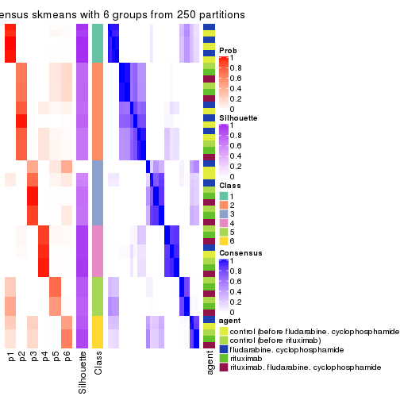
Heatmaps for the membership of samples in all partitions to see how consistent they are:
membership_heatmap(res, k = 2)

membership_heatmap(res, k = 3)
membership_heatmap(res, k = 4)
membership_heatmap(res, k = 5)
membership_heatmap(res, k = 6)

As soon as we have had the classes for columns, we can look for signatures which are significantly different between classes which can be candidate marks for certain classes. Following are the heatmaps for signatures.
Signature heatmaps where rows are scaled:
get_signatures(res, k = 2)

get_signatures(res, k = 3)
get_signatures(res, k = 4)
get_signatures(res, k = 5)
get_signatures(res, k = 6)
Signature heatmaps where rows are not scaled:
get_signatures(res, k = 2, scale_rows = FALSE)
get_signatures(res, k = 3, scale_rows = FALSE)
get_signatures(res, k = 4, scale_rows = FALSE)

get_signatures(res, k = 5, scale_rows = FALSE)

get_signatures(res, k = 6, scale_rows = FALSE)
Compare the overlap of signatures from different k:
compare_signatures(res)
get_signature() returns a data frame invisibly. TO get the list of signatures, the function
call should be assigned to a variable explicitly. In following code, if plot argument is set
to FALSE, no heatmap is plotted while only the differential analysis is performed.
# code only for demonstration
tb = get_signature(res, k = ..., plot = FALSE)
An example of the output of tb is:
#> which_row fdr mean_1 mean_2 scaled_mean_1 scaled_mean_2 km
#> 1 38 0.042760348 8.373488 9.131774 -0.5533452 0.5164555 1
#> 2 40 0.018707592 7.106213 8.469186 -0.6173731 0.5762149 1
#> 3 55 0.019134737 10.221463 11.207825 -0.6159697 0.5749050 1
#> 4 59 0.006059896 5.921854 7.869574 -0.6899429 0.6439467 1
#> 5 60 0.018055526 8.928898 10.211722 -0.6204761 0.5791110 1
#> 6 98 0.009384629 15.714769 14.887706 0.6635654 -0.6193277 2
...
The columns in tb are:
which_row: row indices corresponding to the input matrix.fdr: FDR for the differential test. mean_x: The mean value in group x.scaled_mean_x: The mean value in group x after rows are scaled.km: Row groups if k-means clustering is applied to rows.UMAP plot which shows how samples are separated.
dimension_reduction(res, k = 2, method = "UMAP")
dimension_reduction(res, k = 3, method = "UMAP")
dimension_reduction(res, k = 4, method = "UMAP")
dimension_reduction(res, k = 5, method = "UMAP")
dimension_reduction(res, k = 6, method = "UMAP")
Following heatmap shows how subgroups are split when increasing k:
collect_classes(res)
Test correlation between subgroups and known annotations. If the known annotation is numeric, one-way ANOVA test is applied, and if the known annotation is discrete, chi-squared contingency table test is applied.
test_to_known_factors(res)
#> n agent(p) k
#> MAD:skmeans 50 0.975 2
#> MAD:skmeans 50 0.999 3
#> MAD:skmeans 50 1.000 4
#> MAD:skmeans 35 0.996 5
#> MAD:skmeans 48 0.792 6
If matrix rows can be associated to genes, consider to use functional_enrichment(res,
...) to perform function enrichment for the signature genes. See this vignette for more detailed explanations.
The object with results only for a single top-value method and a single partition method can be extracted as:
res = res_list["MAD", "pam"]
# you can also extract it by
# res = res_list["MAD:pam"]
A summary of res and all the functions that can be applied to it:
res
#> A 'ConsensusPartition' object with k = 2, 3, 4, 5, 6.
#> On a matrix with 51941 rows and 50 columns.
#> Top rows (1000, 2000, 3000, 4000, 5000) are extracted by 'MAD' method.
#> Subgroups are detected by 'pam' method.
#> Performed in total 1250 partitions by row resampling.
#> Best k for subgroups seems to be 3.
#>
#> Following methods can be applied to this 'ConsensusPartition' object:
#> [1] "cola_report" "collect_classes" "collect_plots"
#> [4] "collect_stats" "colnames" "compare_signatures"
#> [7] "consensus_heatmap" "dimension_reduction" "functional_enrichment"
#> [10] "get_anno_col" "get_anno" "get_classes"
#> [13] "get_consensus" "get_matrix" "get_membership"
#> [16] "get_param" "get_signatures" "get_stats"
#> [19] "is_best_k" "is_stable_k" "membership_heatmap"
#> [22] "ncol" "nrow" "plot_ecdf"
#> [25] "rownames" "select_partition_number" "show"
#> [28] "suggest_best_k" "test_to_known_factors"
collect_plots() function collects all the plots made from res for all k (number of partitions)
into one single page to provide an easy and fast comparison between different k.
collect_plots(res)
The plots are:
k and the heatmap of
predicted classes for each k.k.k.k.All the plots in panels can be made by individual functions and they are plotted later in this section.
select_partition_number() produces several plots showing different
statistics for choosing “optimized” k. There are following statistics:
k;k, the area increased is defined as \(A_k - A_{k-1}\).The detailed explanations of these statistics can be found in the cola vignette.
Generally speaking, lower PAC score, higher mean silhouette score or higher
concordance corresponds to better partition. Rand index and Jaccard index
measure how similar the current partition is compared to partition with k-1.
If they are too similar, we won't accept k is better than k-1.
select_partition_number(res)
The numeric values for all these statistics can be obtained by get_stats().
get_stats(res)
#> k 1-PAC mean_silhouette concordance area_increased Rand Jaccard
#> 2 2 0.629 0.750 0.904 0.5039 0.497 0.497
#> 3 3 0.903 0.904 0.962 0.2930 0.767 0.569
#> 4 4 0.881 0.841 0.935 0.1345 0.917 0.762
#> 5 5 0.883 0.837 0.935 0.0434 0.968 0.880
#> 6 6 0.875 0.811 0.921 0.0469 0.931 0.722
suggest_best_k() suggests the best \(k\) based on these statistics. The rules are as follows:
suggest_best_k(res)
#> [1] 3
Following shows the table of the partitions (You need to click the show/hide
code output link to see it). The membership matrix (columns with name p*)
is inferred by
clue::cl_consensus()
function with the SE method. Basically the value in the membership matrix
represents the probability to belong to a certain group. The finall class
label for an item is determined with the group with highest probability it
belongs to.
In get_classes() function, the entropy is calculated from the membership
matrix and the silhouette score is calculated from the consensus matrix.
cbind(get_classes(res, k = 2), get_membership(res, k = 2))
#> class entropy silhouette p1 p2
#> GSM388593 1 0.000 0.916 1.000 0.000
#> GSM388594 1 0.000 0.916 1.000 0.000
#> GSM388595 1 0.000 0.916 1.000 0.000
#> GSM388596 2 0.980 0.327 0.416 0.584
#> GSM388597 1 0.722 0.701 0.800 0.200
#> GSM388598 2 0.000 0.851 0.000 1.000
#> GSM388599 2 0.000 0.851 0.000 1.000
#> GSM388600 2 0.000 0.851 0.000 1.000
#> GSM388601 2 0.987 0.218 0.432 0.568
#> GSM388602 2 0.000 0.851 0.000 1.000
#> GSM388623 1 0.722 0.701 0.800 0.200
#> GSM388624 1 0.000 0.916 1.000 0.000
#> GSM388625 1 0.000 0.916 1.000 0.000
#> GSM388626 1 0.000 0.916 1.000 0.000
#> GSM388627 1 0.000 0.916 1.000 0.000
#> GSM388628 2 0.000 0.851 0.000 1.000
#> GSM388629 2 0.000 0.851 0.000 1.000
#> GSM388630 2 0.000 0.851 0.000 1.000
#> GSM388631 2 0.966 0.379 0.392 0.608
#> GSM388632 2 0.141 0.836 0.020 0.980
#> GSM388603 1 0.000 0.916 1.000 0.000
#> GSM388604 1 0.000 0.916 1.000 0.000
#> GSM388605 1 0.000 0.916 1.000 0.000
#> GSM388606 2 0.980 0.327 0.416 0.584
#> GSM388607 2 0.998 0.153 0.476 0.524
#> GSM388608 2 0.000 0.851 0.000 1.000
#> GSM388609 2 0.000 0.851 0.000 1.000
#> GSM388610 2 0.000 0.851 0.000 1.000
#> GSM388611 2 0.981 0.248 0.420 0.580
#> GSM388612 2 0.000 0.851 0.000 1.000
#> GSM388583 1 0.000 0.916 1.000 0.000
#> GSM388584 1 0.000 0.916 1.000 0.000
#> GSM388585 1 0.000 0.916 1.000 0.000
#> GSM388586 2 0.980 0.327 0.416 0.584
#> GSM388587 1 0.722 0.701 0.800 0.200
#> GSM388588 2 0.000 0.851 0.000 1.000
#> GSM388589 2 0.000 0.851 0.000 1.000
#> GSM388590 2 0.000 0.851 0.000 1.000
#> GSM388591 1 0.985 0.146 0.572 0.428
#> GSM388592 2 0.000 0.851 0.000 1.000
#> GSM388613 1 0.952 0.318 0.628 0.372
#> GSM388614 1 0.000 0.916 1.000 0.000
#> GSM388615 1 0.000 0.916 1.000 0.000
#> GSM388616 1 0.000 0.916 1.000 0.000
#> GSM388617 1 0.000 0.916 1.000 0.000
#> GSM388618 2 0.000 0.851 0.000 1.000
#> GSM388619 2 0.000 0.851 0.000 1.000
#> GSM388620 2 0.000 0.851 0.000 1.000
#> GSM388621 2 0.966 0.379 0.392 0.608
#> GSM388622 2 0.000 0.851 0.000 1.000
cbind(get_classes(res, k = 3), get_membership(res, k = 3))
#> class entropy silhouette p1 p2 p3
#> GSM388593 1 0.0000 0.9625 1.000 0.000 0.000
#> GSM388594 1 0.0000 0.9625 1.000 0.000 0.000
#> GSM388595 1 0.0000 0.9625 1.000 0.000 0.000
#> GSM388596 3 0.0000 0.9317 0.000 0.000 1.000
#> GSM388597 3 0.0000 0.9317 0.000 0.000 1.000
#> GSM388598 2 0.0000 0.9622 0.000 1.000 0.000
#> GSM388599 2 0.0000 0.9622 0.000 1.000 0.000
#> GSM388600 2 0.0000 0.9622 0.000 1.000 0.000
#> GSM388601 2 0.4555 0.7809 0.200 0.800 0.000
#> GSM388602 2 0.0000 0.9622 0.000 1.000 0.000
#> GSM388623 3 0.0000 0.9317 0.000 0.000 1.000
#> GSM388624 1 0.0000 0.9625 1.000 0.000 0.000
#> GSM388625 1 0.0000 0.9625 1.000 0.000 0.000
#> GSM388626 1 0.0000 0.9625 1.000 0.000 0.000
#> GSM388627 1 0.0000 0.9625 1.000 0.000 0.000
#> GSM388628 2 0.0000 0.9622 0.000 1.000 0.000
#> GSM388629 2 0.0000 0.9622 0.000 1.000 0.000
#> GSM388630 2 0.0000 0.9622 0.000 1.000 0.000
#> GSM388631 3 0.0000 0.9317 0.000 0.000 1.000
#> GSM388632 2 0.2537 0.9040 0.080 0.920 0.000
#> GSM388603 3 0.6244 0.2189 0.440 0.000 0.560
#> GSM388604 1 0.0000 0.9625 1.000 0.000 0.000
#> GSM388605 1 0.0000 0.9625 1.000 0.000 0.000
#> GSM388606 3 0.0000 0.9317 0.000 0.000 1.000
#> GSM388607 3 0.0000 0.9317 0.000 0.000 1.000
#> GSM388608 2 0.0000 0.9622 0.000 1.000 0.000
#> GSM388609 2 0.0000 0.9622 0.000 1.000 0.000
#> GSM388610 2 0.0000 0.9622 0.000 1.000 0.000
#> GSM388611 2 0.4555 0.7809 0.200 0.800 0.000
#> GSM388612 2 0.0000 0.9622 0.000 1.000 0.000
#> GSM388583 1 0.0892 0.9433 0.980 0.000 0.020
#> GSM388584 1 0.0000 0.9625 1.000 0.000 0.000
#> GSM388585 1 0.0000 0.9625 1.000 0.000 0.000
#> GSM388586 3 0.0000 0.9317 0.000 0.000 1.000
#> GSM388587 3 0.0000 0.9317 0.000 0.000 1.000
#> GSM388588 2 0.0000 0.9622 0.000 1.000 0.000
#> GSM388589 2 0.0000 0.9622 0.000 1.000 0.000
#> GSM388590 2 0.0000 0.9622 0.000 1.000 0.000
#> GSM388591 2 0.4555 0.7809 0.200 0.800 0.000
#> GSM388592 2 0.0000 0.9622 0.000 1.000 0.000
#> GSM388613 1 0.6309 -0.0361 0.504 0.000 0.496
#> GSM388614 3 0.4346 0.7363 0.184 0.000 0.816
#> GSM388615 1 0.0000 0.9625 1.000 0.000 0.000
#> GSM388616 1 0.0000 0.9625 1.000 0.000 0.000
#> GSM388617 1 0.0000 0.9625 1.000 0.000 0.000
#> GSM388618 2 0.0000 0.9622 0.000 1.000 0.000
#> GSM388619 2 0.0000 0.9622 0.000 1.000 0.000
#> GSM388620 2 0.0000 0.9622 0.000 1.000 0.000
#> GSM388621 3 0.0000 0.9317 0.000 0.000 1.000
#> GSM388622 2 0.2356 0.9105 0.072 0.928 0.000
cbind(get_classes(res, k = 4), get_membership(res, k = 4))
#> class entropy silhouette p1 p2 p3 p4
#> GSM388593 1 0.0000 0.9626 1.000 0.000 0.000 0.000
#> GSM388594 1 0.0000 0.9626 1.000 0.000 0.000 0.000
#> GSM388595 1 0.0000 0.9626 1.000 0.000 0.000 0.000
#> GSM388596 3 0.0000 0.9211 0.000 0.000 1.000 0.000
#> GSM388597 3 0.0000 0.9211 0.000 0.000 1.000 0.000
#> GSM388598 2 0.0000 0.8712 0.000 1.000 0.000 0.000
#> GSM388599 2 0.0000 0.8712 0.000 1.000 0.000 0.000
#> GSM388600 2 0.4697 0.5560 0.000 0.644 0.000 0.356
#> GSM388601 4 0.0000 0.9225 0.000 0.000 0.000 1.000
#> GSM388602 4 0.0000 0.9225 0.000 0.000 0.000 1.000
#> GSM388623 3 0.0000 0.9211 0.000 0.000 1.000 0.000
#> GSM388624 1 0.0000 0.9626 1.000 0.000 0.000 0.000
#> GSM388625 1 0.0000 0.9626 1.000 0.000 0.000 0.000
#> GSM388626 1 0.0000 0.9626 1.000 0.000 0.000 0.000
#> GSM388627 1 0.0000 0.9626 1.000 0.000 0.000 0.000
#> GSM388628 2 0.0000 0.8712 0.000 1.000 0.000 0.000
#> GSM388629 2 0.0000 0.8712 0.000 1.000 0.000 0.000
#> GSM388630 2 0.4697 0.5560 0.000 0.644 0.000 0.356
#> GSM388631 3 0.0000 0.9211 0.000 0.000 1.000 0.000
#> GSM388632 2 0.3806 0.7733 0.020 0.824 0.000 0.156
#> GSM388603 3 0.4948 0.2275 0.440 0.000 0.560 0.000
#> GSM388604 1 0.0000 0.9626 1.000 0.000 0.000 0.000
#> GSM388605 1 0.0000 0.9626 1.000 0.000 0.000 0.000
#> GSM388606 3 0.0000 0.9211 0.000 0.000 1.000 0.000
#> GSM388607 3 0.0000 0.9211 0.000 0.000 1.000 0.000
#> GSM388608 2 0.0000 0.8712 0.000 1.000 0.000 0.000
#> GSM388609 2 0.0000 0.8712 0.000 1.000 0.000 0.000
#> GSM388610 2 0.4164 0.6839 0.000 0.736 0.000 0.264
#> GSM388611 4 0.0000 0.9225 0.000 0.000 0.000 1.000
#> GSM388612 4 0.0000 0.9225 0.000 0.000 0.000 1.000
#> GSM388583 1 0.0707 0.9435 0.980 0.000 0.020 0.000
#> GSM388584 1 0.0000 0.9626 1.000 0.000 0.000 0.000
#> GSM388585 1 0.0000 0.9626 1.000 0.000 0.000 0.000
#> GSM388586 3 0.0000 0.9211 0.000 0.000 1.000 0.000
#> GSM388587 3 0.0000 0.9211 0.000 0.000 1.000 0.000
#> GSM388588 2 0.0000 0.8712 0.000 1.000 0.000 0.000
#> GSM388589 2 0.0000 0.8712 0.000 1.000 0.000 0.000
#> GSM388590 2 0.4040 0.7009 0.000 0.752 0.000 0.248
#> GSM388591 4 0.0000 0.9225 0.000 0.000 0.000 1.000
#> GSM388592 4 0.4454 0.4092 0.000 0.308 0.000 0.692
#> GSM388613 1 0.5000 -0.0288 0.504 0.000 0.496 0.000
#> GSM388614 3 0.3444 0.7373 0.184 0.000 0.816 0.000
#> GSM388615 1 0.0000 0.9626 1.000 0.000 0.000 0.000
#> GSM388616 1 0.0000 0.9626 1.000 0.000 0.000 0.000
#> GSM388617 1 0.0000 0.9626 1.000 0.000 0.000 0.000
#> GSM388618 2 0.0000 0.8712 0.000 1.000 0.000 0.000
#> GSM388619 2 0.0000 0.8712 0.000 1.000 0.000 0.000
#> GSM388620 2 0.4730 0.5432 0.000 0.636 0.000 0.364
#> GSM388621 3 0.0000 0.9211 0.000 0.000 1.000 0.000
#> GSM388622 2 0.0921 0.8551 0.000 0.972 0.000 0.028
cbind(get_classes(res, k = 5), get_membership(res, k = 5))
#> class entropy silhouette p1 p2 p3 p4 p5
#> GSM388593 1 0.0000 0.9480 1.000 0.000 0.000 0.000 0
#> GSM388594 1 0.0000 0.9480 1.000 0.000 0.000 0.000 0
#> GSM388595 5 0.0000 1.0000 0.000 0.000 0.000 0.000 1
#> GSM388596 3 0.0000 0.9175 0.000 0.000 1.000 0.000 0
#> GSM388597 3 0.0000 0.9175 0.000 0.000 1.000 0.000 0
#> GSM388598 2 0.0000 0.8712 0.000 1.000 0.000 0.000 0
#> GSM388599 2 0.0000 0.8712 0.000 1.000 0.000 0.000 0
#> GSM388600 2 0.4045 0.5561 0.000 0.644 0.000 0.356 0
#> GSM388601 4 0.0000 0.9018 0.000 0.000 0.000 1.000 0
#> GSM388602 4 0.0000 0.9018 0.000 0.000 0.000 1.000 0
#> GSM388623 3 0.0000 0.9175 0.000 0.000 1.000 0.000 0
#> GSM388624 1 0.0000 0.9480 1.000 0.000 0.000 0.000 0
#> GSM388625 1 0.0000 0.9480 1.000 0.000 0.000 0.000 0
#> GSM388626 1 0.0000 0.9480 1.000 0.000 0.000 0.000 0
#> GSM388627 1 0.0000 0.9480 1.000 0.000 0.000 0.000 0
#> GSM388628 2 0.0000 0.8712 0.000 1.000 0.000 0.000 0
#> GSM388629 2 0.0000 0.8712 0.000 1.000 0.000 0.000 0
#> GSM388630 2 0.4045 0.5561 0.000 0.644 0.000 0.356 0
#> GSM388631 3 0.0000 0.9175 0.000 0.000 1.000 0.000 0
#> GSM388632 2 0.3278 0.7735 0.020 0.824 0.000 0.156 0
#> GSM388603 3 0.4262 0.2237 0.440 0.000 0.560 0.000 0
#> GSM388604 1 0.0000 0.9480 1.000 0.000 0.000 0.000 0
#> GSM388605 5 0.0000 1.0000 0.000 0.000 0.000 0.000 1
#> GSM388606 3 0.0000 0.9175 0.000 0.000 1.000 0.000 0
#> GSM388607 3 0.0000 0.9175 0.000 0.000 1.000 0.000 0
#> GSM388608 2 0.0000 0.8712 0.000 1.000 0.000 0.000 0
#> GSM388609 2 0.0000 0.8712 0.000 1.000 0.000 0.000 0
#> GSM388610 2 0.3586 0.6839 0.000 0.736 0.000 0.264 0
#> GSM388611 4 0.0000 0.9018 0.000 0.000 0.000 1.000 0
#> GSM388612 4 0.0000 0.9018 0.000 0.000 0.000 1.000 0
#> GSM388583 1 0.0609 0.9279 0.980 0.000 0.020 0.000 0
#> GSM388584 1 0.0000 0.9480 1.000 0.000 0.000 0.000 0
#> GSM388585 5 0.0000 1.0000 0.000 0.000 0.000 0.000 1
#> GSM388586 3 0.0000 0.9175 0.000 0.000 1.000 0.000 0
#> GSM388587 3 0.0000 0.9175 0.000 0.000 1.000 0.000 0
#> GSM388588 2 0.0000 0.8712 0.000 1.000 0.000 0.000 0
#> GSM388589 2 0.0000 0.8712 0.000 1.000 0.000 0.000 0
#> GSM388590 2 0.3480 0.7010 0.000 0.752 0.000 0.248 0
#> GSM388591 4 0.0000 0.9018 0.000 0.000 0.000 1.000 0
#> GSM388592 4 0.3837 0.4091 0.000 0.308 0.000 0.692 0
#> GSM388613 1 0.4307 -0.0215 0.504 0.000 0.496 0.000 0
#> GSM388614 3 0.2966 0.7186 0.184 0.000 0.816 0.000 0
#> GSM388615 1 0.0000 0.9480 1.000 0.000 0.000 0.000 0
#> GSM388616 1 0.0000 0.9480 1.000 0.000 0.000 0.000 0
#> GSM388617 1 0.0000 0.9480 1.000 0.000 0.000 0.000 0
#> GSM388618 2 0.0000 0.8712 0.000 1.000 0.000 0.000 0
#> GSM388619 2 0.0000 0.8712 0.000 1.000 0.000 0.000 0
#> GSM388620 2 0.4074 0.5432 0.000 0.636 0.000 0.364 0
#> GSM388621 3 0.0000 0.9175 0.000 0.000 1.000 0.000 0
#> GSM388622 2 0.0794 0.8551 0.000 0.972 0.000 0.028 0
cbind(get_classes(res, k = 6), get_membership(res, k = 6))
#> class entropy silhouette p1 p2 p3 p4 p5 p6
#> GSM388593 1 0.0000 0.9480 1.000 0.000 0.000 0.00 0 0.000
#> GSM388594 1 0.0000 0.9480 1.000 0.000 0.000 0.00 0 0.000
#> GSM388595 5 0.0000 1.0000 0.000 0.000 0.000 0.00 1 0.000
#> GSM388596 3 0.0000 0.9175 0.000 0.000 1.000 0.00 0 0.000
#> GSM388597 3 0.0000 0.9175 0.000 0.000 1.000 0.00 0 0.000
#> GSM388598 2 0.0000 0.9354 0.000 1.000 0.000 0.00 0 0.000
#> GSM388599 2 0.0000 0.9354 0.000 1.000 0.000 0.00 0 0.000
#> GSM388600 6 0.2912 0.6780 0.000 0.216 0.000 0.00 0 0.784
#> GSM388601 4 0.0000 1.0000 0.000 0.000 0.000 1.00 0 0.000
#> GSM388602 6 0.3851 -0.1144 0.000 0.000 0.000 0.46 0 0.540
#> GSM388623 3 0.0000 0.9175 0.000 0.000 1.000 0.00 0 0.000
#> GSM388624 1 0.0000 0.9480 1.000 0.000 0.000 0.00 0 0.000
#> GSM388625 1 0.0000 0.9480 1.000 0.000 0.000 0.00 0 0.000
#> GSM388626 1 0.0000 0.9480 1.000 0.000 0.000 0.00 0 0.000
#> GSM388627 1 0.0000 0.9480 1.000 0.000 0.000 0.00 0 0.000
#> GSM388628 2 0.0146 0.9324 0.000 0.996 0.000 0.00 0 0.004
#> GSM388629 2 0.0000 0.9354 0.000 1.000 0.000 0.00 0 0.000
#> GSM388630 6 0.3101 0.6766 0.000 0.244 0.000 0.00 0 0.756
#> GSM388631 3 0.0000 0.9175 0.000 0.000 1.000 0.00 0 0.000
#> GSM388632 2 0.3672 0.4451 0.000 0.632 0.000 0.00 0 0.368
#> GSM388603 3 0.3828 0.2238 0.440 0.000 0.560 0.00 0 0.000
#> GSM388604 1 0.0000 0.9480 1.000 0.000 0.000 0.00 0 0.000
#> GSM388605 5 0.0000 1.0000 0.000 0.000 0.000 0.00 1 0.000
#> GSM388606 3 0.0000 0.9175 0.000 0.000 1.000 0.00 0 0.000
#> GSM388607 3 0.0000 0.9175 0.000 0.000 1.000 0.00 0 0.000
#> GSM388608 2 0.0000 0.9354 0.000 1.000 0.000 0.00 0 0.000
#> GSM388609 2 0.0000 0.9354 0.000 1.000 0.000 0.00 0 0.000
#> GSM388610 6 0.3578 0.5969 0.000 0.340 0.000 0.00 0 0.660
#> GSM388611 4 0.0000 1.0000 0.000 0.000 0.000 1.00 0 0.000
#> GSM388612 6 0.3851 -0.1144 0.000 0.000 0.000 0.46 0 0.540
#> GSM388583 1 0.0547 0.9279 0.980 0.000 0.020 0.00 0 0.000
#> GSM388584 1 0.0000 0.9480 1.000 0.000 0.000 0.00 0 0.000
#> GSM388585 5 0.0000 1.0000 0.000 0.000 0.000 0.00 1 0.000
#> GSM388586 3 0.0000 0.9175 0.000 0.000 1.000 0.00 0 0.000
#> GSM388587 3 0.0000 0.9175 0.000 0.000 1.000 0.00 0 0.000
#> GSM388588 2 0.0000 0.9354 0.000 1.000 0.000 0.00 0 0.000
#> GSM388589 2 0.0000 0.9354 0.000 1.000 0.000 0.00 0 0.000
#> GSM388590 6 0.3592 0.5911 0.000 0.344 0.000 0.00 0 0.656
#> GSM388591 4 0.0000 1.0000 0.000 0.000 0.000 1.00 0 0.000
#> GSM388592 6 0.0000 0.5445 0.000 0.000 0.000 0.00 0 1.000
#> GSM388613 1 0.3868 -0.0215 0.504 0.000 0.496 0.00 0 0.000
#> GSM388614 3 0.2664 0.7187 0.184 0.000 0.816 0.00 0 0.000
#> GSM388615 1 0.0000 0.9480 1.000 0.000 0.000 0.00 0 0.000
#> GSM388616 1 0.0000 0.9480 1.000 0.000 0.000 0.00 0 0.000
#> GSM388617 1 0.0000 0.9480 1.000 0.000 0.000 0.00 0 0.000
#> GSM388618 2 0.0146 0.9324 0.000 0.996 0.000 0.00 0 0.004
#> GSM388619 2 0.0000 0.9354 0.000 1.000 0.000 0.00 0 0.000
#> GSM388620 6 0.2562 0.6625 0.000 0.172 0.000 0.00 0 0.828
#> GSM388621 3 0.0000 0.9175 0.000 0.000 1.000 0.00 0 0.000
#> GSM388622 2 0.2762 0.7125 0.000 0.804 0.000 0.00 0 0.196
Heatmaps for the consensus matrix. It visualizes the probability of two samples to be in a same group.
consensus_heatmap(res, k = 2)
consensus_heatmap(res, k = 3)
consensus_heatmap(res, k = 4)
consensus_heatmap(res, k = 5)
consensus_heatmap(res, k = 6)
Heatmaps for the membership of samples in all partitions to see how consistent they are:
membership_heatmap(res, k = 2)
membership_heatmap(res, k = 3)
membership_heatmap(res, k = 4)
membership_heatmap(res, k = 5)
membership_heatmap(res, k = 6)
As soon as we have had the classes for columns, we can look for signatures which are significantly different between classes which can be candidate marks for certain classes. Following are the heatmaps for signatures.
Signature heatmaps where rows are scaled:
get_signatures(res, k = 2)
get_signatures(res, k = 3)
get_signatures(res, k = 4)
get_signatures(res, k = 5)
get_signatures(res, k = 6)
Signature heatmaps where rows are not scaled:
get_signatures(res, k = 2, scale_rows = FALSE)
get_signatures(res, k = 3, scale_rows = FALSE)
get_signatures(res, k = 4, scale_rows = FALSE)
get_signatures(res, k = 5, scale_rows = FALSE)
get_signatures(res, k = 6, scale_rows = FALSE)
Compare the overlap of signatures from different k:
compare_signatures(res)
get_signature() returns a data frame invisibly. TO get the list of signatures, the function
call should be assigned to a variable explicitly. In following code, if plot argument is set
to FALSE, no heatmap is plotted while only the differential analysis is performed.
# code only for demonstration
tb = get_signature(res, k = ..., plot = FALSE)
An example of the output of tb is:
#> which_row fdr mean_1 mean_2 scaled_mean_1 scaled_mean_2 km
#> 1 38 0.042760348 8.373488 9.131774 -0.5533452 0.5164555 1
#> 2 40 0.018707592 7.106213 8.469186 -0.6173731 0.5762149 1
#> 3 55 0.019134737 10.221463 11.207825 -0.6159697 0.5749050 1
#> 4 59 0.006059896 5.921854 7.869574 -0.6899429 0.6439467 1
#> 5 60 0.018055526 8.928898 10.211722 -0.6204761 0.5791110 1
#> 6 98 0.009384629 15.714769 14.887706 0.6635654 -0.6193277 2
...
The columns in tb are:
which_row: row indices corresponding to the input matrix.fdr: FDR for the differential test. mean_x: The mean value in group x.scaled_mean_x: The mean value in group x after rows are scaled.km: Row groups if k-means clustering is applied to rows.UMAP plot which shows how samples are separated.
dimension_reduction(res, k = 2, method = "UMAP")
dimension_reduction(res, k = 3, method = "UMAP")
dimension_reduction(res, k = 4, method = "UMAP")
dimension_reduction(res, k = 5, method = "UMAP")
dimension_reduction(res, k = 6, method = "UMAP")
Following heatmap shows how subgroups are split when increasing k:
collect_classes(res)
Test correlation between subgroups and known annotations. If the known annotation is numeric, one-way ANOVA test is applied, and if the known annotation is discrete, chi-squared contingency table test is applied.
test_to_known_factors(res)
#> n agent(p) k
#> MAD:pam 40 0.993 2
#> MAD:pam 48 0.999 3
#> MAD:pam 47 0.963 4
#> MAD:pam 47 0.938 5
#> MAD:pam 45 0.997 6
If matrix rows can be associated to genes, consider to use functional_enrichment(res,
...) to perform function enrichment for the signature genes. See this vignette for more detailed explanations.
The object with results only for a single top-value method and a single partition method can be extracted as:
res = res_list["MAD", "mclust"]
# you can also extract it by
# res = res_list["MAD:mclust"]
A summary of res and all the functions that can be applied to it:
res
#> A 'ConsensusPartition' object with k = 2, 3, 4, 5, 6.
#> On a matrix with 51941 rows and 50 columns.
#> Top rows (1000, 2000, 3000, 4000, 5000) are extracted by 'MAD' method.
#> Subgroups are detected by 'mclust' method.
#> Performed in total 1250 partitions by row resampling.
#> Best k for subgroups seems to be 2.
#>
#> Following methods can be applied to this 'ConsensusPartition' object:
#> [1] "cola_report" "collect_classes" "collect_plots"
#> [4] "collect_stats" "colnames" "compare_signatures"
#> [7] "consensus_heatmap" "dimension_reduction" "functional_enrichment"
#> [10] "get_anno_col" "get_anno" "get_classes"
#> [13] "get_consensus" "get_matrix" "get_membership"
#> [16] "get_param" "get_signatures" "get_stats"
#> [19] "is_best_k" "is_stable_k" "membership_heatmap"
#> [22] "ncol" "nrow" "plot_ecdf"
#> [25] "rownames" "select_partition_number" "show"
#> [28] "suggest_best_k" "test_to_known_factors"
collect_plots() function collects all the plots made from res for all k (number of partitions)
into one single page to provide an easy and fast comparison between different k.
collect_plots(res)
The plots are:
k and the heatmap of
predicted classes for each k.k.k.k.All the plots in panels can be made by individual functions and they are plotted later in this section.
select_partition_number() produces several plots showing different
statistics for choosing “optimized” k. There are following statistics:
k;k, the area increased is defined as \(A_k - A_{k-1}\).The detailed explanations of these statistics can be found in the cola vignette.
Generally speaking, lower PAC score, higher mean silhouette score or higher
concordance corresponds to better partition. Rand index and Jaccard index
measure how similar the current partition is compared to partition with k-1.
If they are too similar, we won't accept k is better than k-1.
select_partition_number(res)
The numeric values for all these statistics can be obtained by get_stats().
get_stats(res)
#> k 1-PAC mean_silhouette concordance area_increased Rand Jaccard
#> 2 2 0.726 0.954 0.970 0.4927 0.493 0.493
#> 3 3 0.678 0.878 0.915 0.2619 0.849 0.701
#> 4 4 0.726 0.763 0.857 0.1453 0.904 0.739
#> 5 5 0.757 0.740 0.867 0.0442 0.929 0.764
#> 6 6 0.795 0.748 0.856 0.0430 0.983 0.936
suggest_best_k() suggests the best \(k\) based on these statistics. The rules are as follows:
suggest_best_k(res)
#> [1] 2
Following shows the table of the partitions (You need to click the show/hide
code output link to see it). The membership matrix (columns with name p*)
is inferred by
clue::cl_consensus()
function with the SE method. Basically the value in the membership matrix
represents the probability to belong to a certain group. The finall class
label for an item is determined with the group with highest probability it
belongs to.
In get_classes() function, the entropy is calculated from the membership
matrix and the silhouette score is calculated from the consensus matrix.
cbind(get_classes(res, k = 2), get_membership(res, k = 2))
#> class entropy silhouette p1 p2
#> GSM388593 1 0.000 1.000 1.000 0.000
#> GSM388594 1 0.000 1.000 1.000 0.000
#> GSM388595 1 0.000 1.000 1.000 0.000
#> GSM388596 1 0.000 1.000 1.000 0.000
#> GSM388597 1 0.000 1.000 1.000 0.000
#> GSM388598 2 0.000 0.929 0.000 1.000
#> GSM388599 2 0.000 0.929 0.000 1.000
#> GSM388600 2 0.000 0.929 0.000 1.000
#> GSM388601 2 0.714 0.835 0.196 0.804
#> GSM388602 2 0.644 0.860 0.164 0.836
#> GSM388623 1 0.000 1.000 1.000 0.000
#> GSM388624 1 0.000 1.000 1.000 0.000
#> GSM388625 1 0.000 1.000 1.000 0.000
#> GSM388626 1 0.000 1.000 1.000 0.000
#> GSM388627 1 0.000 1.000 1.000 0.000
#> GSM388628 2 0.000 0.929 0.000 1.000
#> GSM388629 2 0.141 0.924 0.020 0.980
#> GSM388630 2 0.000 0.929 0.000 1.000
#> GSM388631 1 0.000 1.000 1.000 0.000
#> GSM388632 2 0.714 0.835 0.196 0.804
#> GSM388603 1 0.000 1.000 1.000 0.000
#> GSM388604 1 0.000 1.000 1.000 0.000
#> GSM388605 1 0.000 1.000 1.000 0.000
#> GSM388606 1 0.000 1.000 1.000 0.000
#> GSM388607 1 0.000 1.000 1.000 0.000
#> GSM388608 2 0.000 0.929 0.000 1.000
#> GSM388609 2 0.000 0.929 0.000 1.000
#> GSM388610 2 0.000 0.929 0.000 1.000
#> GSM388611 2 0.714 0.835 0.196 0.804
#> GSM388612 2 0.644 0.860 0.164 0.836
#> GSM388583 1 0.000 1.000 1.000 0.000
#> GSM388584 1 0.000 1.000 1.000 0.000
#> GSM388585 1 0.000 1.000 1.000 0.000
#> GSM388586 1 0.000 1.000 1.000 0.000
#> GSM388587 1 0.000 1.000 1.000 0.000
#> GSM388588 2 0.000 0.929 0.000 1.000
#> GSM388589 2 0.000 0.929 0.000 1.000
#> GSM388590 2 0.000 0.929 0.000 1.000
#> GSM388591 2 0.714 0.835 0.196 0.804
#> GSM388592 2 0.644 0.860 0.164 0.836
#> GSM388613 1 0.000 1.000 1.000 0.000
#> GSM388614 1 0.000 1.000 1.000 0.000
#> GSM388615 1 0.000 1.000 1.000 0.000
#> GSM388616 1 0.000 1.000 1.000 0.000
#> GSM388617 1 0.000 1.000 1.000 0.000
#> GSM388618 2 0.000 0.929 0.000 1.000
#> GSM388619 2 0.163 0.923 0.024 0.976
#> GSM388620 2 0.000 0.929 0.000 1.000
#> GSM388621 1 0.000 1.000 1.000 0.000
#> GSM388622 2 0.714 0.835 0.196 0.804
cbind(get_classes(res, k = 3), get_membership(res, k = 3))
#> class entropy silhouette p1 p2 p3
#> GSM388593 1 0.3116 0.932 0.892 0.000 0.108
#> GSM388594 1 0.4504 0.872 0.804 0.000 0.196
#> GSM388595 3 0.0000 0.768 0.000 0.000 1.000
#> GSM388596 1 0.0592 0.896 0.988 0.000 0.012
#> GSM388597 1 0.0424 0.897 0.992 0.000 0.008
#> GSM388598 2 0.0000 0.954 0.000 1.000 0.000
#> GSM388599 2 0.0000 0.954 0.000 1.000 0.000
#> GSM388600 2 0.0000 0.954 0.000 1.000 0.000
#> GSM388601 3 0.5988 0.529 0.000 0.368 0.632
#> GSM388602 2 0.3192 0.854 0.000 0.888 0.112
#> GSM388623 1 0.0237 0.898 0.996 0.000 0.004
#> GSM388624 1 0.3116 0.932 0.892 0.000 0.108
#> GSM388625 1 0.3116 0.932 0.892 0.000 0.108
#> GSM388626 1 0.3116 0.932 0.892 0.000 0.108
#> GSM388627 1 0.3340 0.926 0.880 0.000 0.120
#> GSM388628 2 0.0000 0.954 0.000 1.000 0.000
#> GSM388629 2 0.0237 0.952 0.000 0.996 0.004
#> GSM388630 2 0.0000 0.954 0.000 1.000 0.000
#> GSM388631 3 0.4291 0.706 0.180 0.000 0.820
#> GSM388632 2 0.3482 0.840 0.000 0.872 0.128
#> GSM388603 1 0.3116 0.932 0.892 0.000 0.108
#> GSM388604 1 0.4504 0.872 0.804 0.000 0.196
#> GSM388605 3 0.0000 0.768 0.000 0.000 1.000
#> GSM388606 1 0.0592 0.896 0.988 0.000 0.012
#> GSM388607 1 0.0592 0.896 0.988 0.000 0.012
#> GSM388608 2 0.0000 0.954 0.000 1.000 0.000
#> GSM388609 2 0.0000 0.954 0.000 1.000 0.000
#> GSM388610 2 0.0000 0.954 0.000 1.000 0.000
#> GSM388611 3 0.5988 0.529 0.000 0.368 0.632
#> GSM388612 2 0.3192 0.854 0.000 0.888 0.112
#> GSM388583 1 0.3116 0.932 0.892 0.000 0.108
#> GSM388584 1 0.4504 0.872 0.804 0.000 0.196
#> GSM388585 3 0.0000 0.768 0.000 0.000 1.000
#> GSM388586 1 0.0592 0.896 0.988 0.000 0.012
#> GSM388587 1 0.0592 0.896 0.988 0.000 0.012
#> GSM388588 2 0.0000 0.954 0.000 1.000 0.000
#> GSM388589 2 0.0000 0.954 0.000 1.000 0.000
#> GSM388590 2 0.0000 0.954 0.000 1.000 0.000
#> GSM388591 3 0.5988 0.529 0.000 0.368 0.632
#> GSM388592 2 0.3192 0.854 0.000 0.888 0.112
#> GSM388613 1 0.0892 0.903 0.980 0.000 0.020
#> GSM388614 1 0.3192 0.931 0.888 0.000 0.112
#> GSM388615 1 0.3116 0.932 0.892 0.000 0.108
#> GSM388616 1 0.3192 0.930 0.888 0.000 0.112
#> GSM388617 1 0.3116 0.932 0.892 0.000 0.108
#> GSM388618 2 0.0000 0.954 0.000 1.000 0.000
#> GSM388619 2 0.0237 0.952 0.000 0.996 0.004
#> GSM388620 2 0.0000 0.954 0.000 1.000 0.000
#> GSM388621 3 0.4291 0.706 0.180 0.000 0.820
#> GSM388622 2 0.3482 0.840 0.000 0.872 0.128
cbind(get_classes(res, k = 4), get_membership(res, k = 4))
#> class entropy silhouette p1 p2 p3 p4
#> GSM388593 3 0.4746 0.567 0.368 0.000 0.632 0.000
#> GSM388594 1 0.4049 0.693 0.780 0.000 0.212 0.008
#> GSM388595 4 0.0000 0.709 0.000 0.000 0.000 1.000
#> GSM388596 3 0.0000 0.748 0.000 0.000 1.000 0.000
#> GSM388597 3 0.2011 0.754 0.080 0.000 0.920 0.000
#> GSM388598 2 0.0000 0.939 0.000 1.000 0.000 0.000
#> GSM388599 2 0.0000 0.939 0.000 1.000 0.000 0.000
#> GSM388600 2 0.0000 0.939 0.000 1.000 0.000 0.000
#> GSM388601 4 0.6280 0.541 0.080 0.316 0.000 0.604
#> GSM388602 2 0.4525 0.779 0.080 0.804 0.000 0.116
#> GSM388623 3 0.3688 0.699 0.208 0.000 0.792 0.000
#> GSM388624 3 0.4522 0.615 0.320 0.000 0.680 0.000
#> GSM388625 1 0.4605 0.204 0.664 0.000 0.336 0.000
#> GSM388626 1 0.0188 0.828 0.996 0.000 0.004 0.000
#> GSM388627 1 0.0336 0.827 0.992 0.000 0.000 0.008
#> GSM388628 2 0.0000 0.939 0.000 1.000 0.000 0.000
#> GSM388629 2 0.0000 0.939 0.000 1.000 0.000 0.000
#> GSM388630 2 0.0000 0.939 0.000 1.000 0.000 0.000
#> GSM388631 4 0.3764 0.614 0.000 0.000 0.216 0.784
#> GSM388632 2 0.4231 0.799 0.080 0.824 0.000 0.096
#> GSM388603 3 0.4454 0.627 0.308 0.000 0.692 0.000
#> GSM388604 1 0.4011 0.697 0.784 0.000 0.208 0.008
#> GSM388605 4 0.0000 0.709 0.000 0.000 0.000 1.000
#> GSM388606 3 0.0000 0.748 0.000 0.000 1.000 0.000
#> GSM388607 3 0.0000 0.748 0.000 0.000 1.000 0.000
#> GSM388608 2 0.0000 0.939 0.000 1.000 0.000 0.000
#> GSM388609 2 0.0000 0.939 0.000 1.000 0.000 0.000
#> GSM388610 2 0.0000 0.939 0.000 1.000 0.000 0.000
#> GSM388611 4 0.6280 0.541 0.080 0.316 0.000 0.604
#> GSM388612 2 0.4525 0.779 0.080 0.804 0.000 0.116
#> GSM388583 3 0.4888 0.498 0.412 0.000 0.588 0.000
#> GSM388584 1 0.0336 0.827 0.992 0.000 0.000 0.008
#> GSM388585 4 0.0000 0.709 0.000 0.000 0.000 1.000
#> GSM388586 3 0.0000 0.748 0.000 0.000 1.000 0.000
#> GSM388587 3 0.1211 0.756 0.040 0.000 0.960 0.000
#> GSM388588 2 0.0000 0.939 0.000 1.000 0.000 0.000
#> GSM388589 2 0.0000 0.939 0.000 1.000 0.000 0.000
#> GSM388590 2 0.0000 0.939 0.000 1.000 0.000 0.000
#> GSM388591 4 0.6280 0.541 0.080 0.316 0.000 0.604
#> GSM388592 2 0.4525 0.779 0.080 0.804 0.000 0.116
#> GSM388613 3 0.4564 0.564 0.328 0.000 0.672 0.000
#> GSM388614 3 0.4431 0.630 0.304 0.000 0.696 0.000
#> GSM388615 1 0.0000 0.828 1.000 0.000 0.000 0.000
#> GSM388616 1 0.0000 0.828 1.000 0.000 0.000 0.000
#> GSM388617 1 0.3972 0.693 0.788 0.000 0.204 0.008
#> GSM388618 2 0.0000 0.939 0.000 1.000 0.000 0.000
#> GSM388619 2 0.0000 0.939 0.000 1.000 0.000 0.000
#> GSM388620 2 0.0000 0.939 0.000 1.000 0.000 0.000
#> GSM388621 4 0.3764 0.614 0.000 0.000 0.216 0.784
#> GSM388622 2 0.4231 0.799 0.080 0.824 0.000 0.096
cbind(get_classes(res, k = 5), get_membership(res, k = 5))
#> class entropy silhouette p1 p2 p3 p4 p5
#> GSM388593 1 0.4731 0.517 0.640 0.000 0.328 0.032 0.000
#> GSM388594 1 0.4331 0.457 0.596 0.000 0.400 0.004 0.000
#> GSM388595 5 0.0404 0.840 0.000 0.000 0.000 0.012 0.988
#> GSM388596 3 0.2574 0.738 0.000 0.000 0.876 0.112 0.012
#> GSM388597 3 0.1478 0.705 0.064 0.000 0.936 0.000 0.000
#> GSM388598 2 0.0162 0.921 0.000 0.996 0.000 0.004 0.000
#> GSM388599 2 0.0162 0.921 0.000 0.996 0.000 0.004 0.000
#> GSM388600 2 0.0794 0.915 0.000 0.972 0.000 0.028 0.000
#> GSM388601 4 0.3339 1.000 0.000 0.112 0.000 0.840 0.048
#> GSM388602 2 0.3336 0.746 0.000 0.772 0.000 0.228 0.000
#> GSM388623 3 0.5143 -0.103 0.428 0.000 0.532 0.040 0.000
#> GSM388624 1 0.4966 0.430 0.564 0.000 0.404 0.032 0.000
#> GSM388625 1 0.0404 0.705 0.988 0.000 0.012 0.000 0.000
#> GSM388626 1 0.0162 0.707 0.996 0.000 0.004 0.000 0.000
#> GSM388627 1 0.0000 0.707 1.000 0.000 0.000 0.000 0.000
#> GSM388628 2 0.0000 0.921 0.000 1.000 0.000 0.000 0.000
#> GSM388629 2 0.0000 0.921 0.000 1.000 0.000 0.000 0.000
#> GSM388630 2 0.0794 0.915 0.000 0.972 0.000 0.028 0.000
#> GSM388631 5 0.3366 0.765 0.000 0.000 0.232 0.000 0.768
#> GSM388632 2 0.3109 0.761 0.000 0.800 0.000 0.200 0.000
#> GSM388603 3 0.4645 0.397 0.268 0.000 0.688 0.044 0.000
#> GSM388604 1 0.4321 0.464 0.600 0.000 0.396 0.004 0.000
#> GSM388605 5 0.0404 0.840 0.000 0.000 0.000 0.012 0.988
#> GSM388606 3 0.2574 0.738 0.000 0.000 0.876 0.112 0.012
#> GSM388607 3 0.2574 0.738 0.000 0.000 0.876 0.112 0.012
#> GSM388608 2 0.0162 0.921 0.000 0.996 0.000 0.004 0.000
#> GSM388609 2 0.0162 0.921 0.000 0.996 0.000 0.004 0.000
#> GSM388610 2 0.0794 0.915 0.000 0.972 0.000 0.028 0.000
#> GSM388611 4 0.3339 1.000 0.000 0.112 0.000 0.840 0.048
#> GSM388612 2 0.3336 0.746 0.000 0.772 0.000 0.228 0.000
#> GSM388583 1 0.5100 0.211 0.516 0.000 0.448 0.036 0.000
#> GSM388584 1 0.0000 0.707 1.000 0.000 0.000 0.000 0.000
#> GSM388585 5 0.0404 0.840 0.000 0.000 0.000 0.012 0.988
#> GSM388586 3 0.2574 0.738 0.000 0.000 0.876 0.112 0.012
#> GSM388587 3 0.1764 0.708 0.064 0.000 0.928 0.000 0.008
#> GSM388588 2 0.0162 0.921 0.000 0.996 0.000 0.004 0.000
#> GSM388589 2 0.0162 0.921 0.000 0.996 0.000 0.004 0.000
#> GSM388590 2 0.0794 0.915 0.000 0.972 0.000 0.028 0.000
#> GSM388591 4 0.3339 1.000 0.000 0.112 0.000 0.840 0.048
#> GSM388592 2 0.3336 0.746 0.000 0.772 0.000 0.228 0.000
#> GSM388613 1 0.4254 0.449 0.740 0.000 0.220 0.040 0.000
#> GSM388614 3 0.4552 0.410 0.264 0.000 0.696 0.040 0.000
#> GSM388615 1 0.0162 0.707 0.996 0.000 0.004 0.000 0.000
#> GSM388616 1 0.0000 0.707 1.000 0.000 0.000 0.000 0.000
#> GSM388617 1 0.3774 0.558 0.704 0.000 0.296 0.000 0.000
#> GSM388618 2 0.0000 0.921 0.000 1.000 0.000 0.000 0.000
#> GSM388619 2 0.0000 0.921 0.000 1.000 0.000 0.000 0.000
#> GSM388620 2 0.0794 0.915 0.000 0.972 0.000 0.028 0.000
#> GSM388621 5 0.3366 0.765 0.000 0.000 0.232 0.000 0.768
#> GSM388622 2 0.3109 0.761 0.000 0.800 0.000 0.200 0.000
cbind(get_classes(res, k = 6), get_membership(res, k = 6))
#> class entropy silhouette p1 p2 p3 p4 p5 p6
#> GSM388593 1 0.3076 0.652 0.760 0.000 0.240 0.000 0.000 NA
#> GSM388594 1 0.1511 0.871 0.944 0.000 0.012 0.000 0.012 NA
#> GSM388595 5 0.0000 0.784 0.000 0.000 0.000 0.000 1.000 NA
#> GSM388596 3 0.3847 0.498 0.000 0.000 0.544 0.000 0.000 NA
#> GSM388597 3 0.0260 0.582 0.000 0.000 0.992 0.000 0.000 NA
#> GSM388598 2 0.2631 0.821 0.000 0.820 0.000 0.000 0.000 NA
#> GSM388599 2 0.2631 0.821 0.000 0.820 0.000 0.000 0.000 NA
#> GSM388600 2 0.0458 0.881 0.000 0.984 0.000 0.000 0.000 NA
#> GSM388601 4 0.0000 1.000 0.000 0.000 0.000 1.000 0.000 NA
#> GSM388602 2 0.3408 0.791 0.000 0.800 0.000 0.048 0.000 NA
#> GSM388623 3 0.4097 -0.239 0.488 0.000 0.504 0.000 0.000 NA
#> GSM388624 1 0.3672 0.430 0.632 0.000 0.368 0.000 0.000 NA
#> GSM388625 1 0.0000 0.886 1.000 0.000 0.000 0.000 0.000 NA
#> GSM388626 1 0.0000 0.886 1.000 0.000 0.000 0.000 0.000 NA
#> GSM388627 1 0.0000 0.886 1.000 0.000 0.000 0.000 0.000 NA
#> GSM388628 2 0.0000 0.882 0.000 1.000 0.000 0.000 0.000 NA
#> GSM388629 2 0.0717 0.881 0.000 0.976 0.000 0.008 0.000 NA
#> GSM388630 2 0.0000 0.882 0.000 1.000 0.000 0.000 0.000 NA
#> GSM388631 5 0.5374 0.661 0.000 0.000 0.200 0.000 0.588 NA
#> GSM388632 2 0.3530 0.788 0.000 0.792 0.000 0.056 0.000 NA
#> GSM388603 3 0.2823 0.543 0.204 0.000 0.796 0.000 0.000 NA
#> GSM388604 1 0.1409 0.872 0.948 0.000 0.008 0.000 0.012 NA
#> GSM388605 5 0.0000 0.784 0.000 0.000 0.000 0.000 1.000 NA
#> GSM388606 3 0.3847 0.498 0.000 0.000 0.544 0.000 0.000 NA
#> GSM388607 3 0.3428 0.553 0.000 0.000 0.696 0.000 0.000 NA
#> GSM388608 2 0.2631 0.821 0.000 0.820 0.000 0.000 0.000 NA
#> GSM388609 2 0.2882 0.819 0.000 0.812 0.000 0.008 0.000 NA
#> GSM388610 2 0.0458 0.881 0.000 0.984 0.000 0.000 0.000 NA
#> GSM388611 4 0.0000 1.000 0.000 0.000 0.000 1.000 0.000 NA
#> GSM388612 2 0.3408 0.791 0.000 0.800 0.000 0.048 0.000 NA
#> GSM388583 3 0.3620 0.341 0.352 0.000 0.648 0.000 0.000 NA
#> GSM388584 1 0.0935 0.873 0.964 0.000 0.000 0.000 0.004 NA
#> GSM388585 5 0.0000 0.784 0.000 0.000 0.000 0.000 1.000 NA
#> GSM388586 3 0.3847 0.498 0.000 0.000 0.544 0.000 0.000 NA
#> GSM388587 3 0.0260 0.582 0.000 0.000 0.992 0.000 0.000 NA
#> GSM388588 2 0.2882 0.819 0.000 0.812 0.000 0.008 0.000 NA
#> GSM388589 2 0.2882 0.819 0.000 0.812 0.000 0.008 0.000 NA
#> GSM388590 2 0.0458 0.881 0.000 0.984 0.000 0.000 0.000 NA
#> GSM388591 4 0.0000 1.000 0.000 0.000 0.000 1.000 0.000 NA
#> GSM388592 2 0.3408 0.791 0.000 0.800 0.000 0.048 0.000 NA
#> GSM388613 1 0.3499 0.516 0.680 0.000 0.320 0.000 0.000 NA
#> GSM388614 3 0.2823 0.543 0.204 0.000 0.796 0.000 0.000 NA
#> GSM388615 1 0.0000 0.886 1.000 0.000 0.000 0.000 0.000 NA
#> GSM388616 1 0.0000 0.886 1.000 0.000 0.000 0.000 0.000 NA
#> GSM388617 1 0.0405 0.883 0.988 0.000 0.008 0.000 0.000 NA
#> GSM388618 2 0.0000 0.882 0.000 1.000 0.000 0.000 0.000 NA
#> GSM388619 2 0.0717 0.881 0.000 0.976 0.000 0.008 0.000 NA
#> GSM388620 2 0.0000 0.882 0.000 1.000 0.000 0.000 0.000 NA
#> GSM388621 5 0.5374 0.661 0.000 0.000 0.200 0.000 0.588 NA
#> GSM388622 2 0.3530 0.788 0.000 0.792 0.000 0.056 0.000 NA
Heatmaps for the consensus matrix. It visualizes the probability of two samples to be in a same group.
consensus_heatmap(res, k = 2)
consensus_heatmap(res, k = 3)
consensus_heatmap(res, k = 4)
consensus_heatmap(res, k = 5)
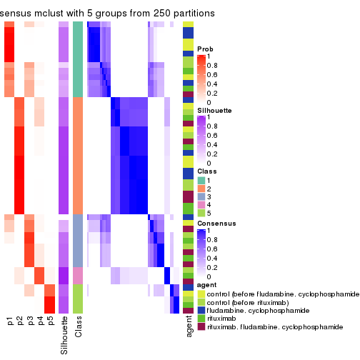
consensus_heatmap(res, k = 6)
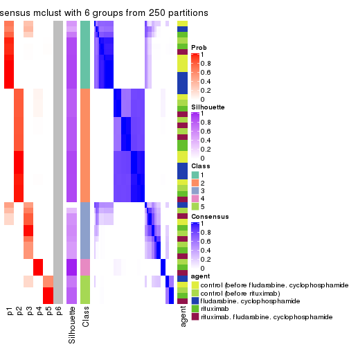
Heatmaps for the membership of samples in all partitions to see how consistent they are:
membership_heatmap(res, k = 2)
membership_heatmap(res, k = 3)
membership_heatmap(res, k = 4)
membership_heatmap(res, k = 5)
membership_heatmap(res, k = 6)
As soon as we have had the classes for columns, we can look for signatures which are significantly different between classes which can be candidate marks for certain classes. Following are the heatmaps for signatures.
Signature heatmaps where rows are scaled:
get_signatures(res, k = 2)
get_signatures(res, k = 3)
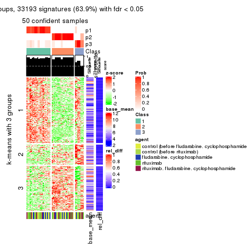
get_signatures(res, k = 4)
get_signatures(res, k = 5)
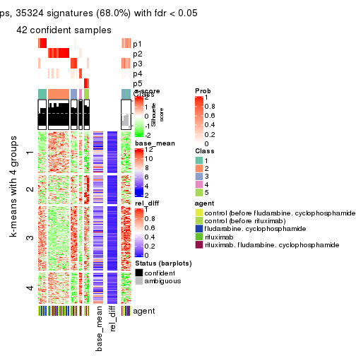
get_signatures(res, k = 6)
Signature heatmaps where rows are not scaled:
get_signatures(res, k = 2, scale_rows = FALSE)
get_signatures(res, k = 3, scale_rows = FALSE)
get_signatures(res, k = 4, scale_rows = FALSE)
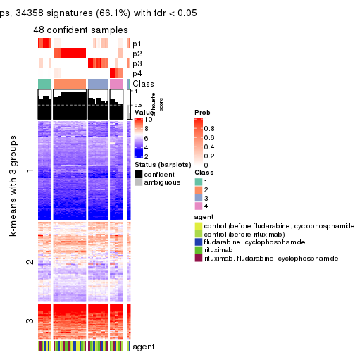
get_signatures(res, k = 5, scale_rows = FALSE)
get_signatures(res, k = 6, scale_rows = FALSE)
Compare the overlap of signatures from different k:
compare_signatures(res)
get_signature() returns a data frame invisibly. TO get the list of signatures, the function
call should be assigned to a variable explicitly. In following code, if plot argument is set
to FALSE, no heatmap is plotted while only the differential analysis is performed.
# code only for demonstration
tb = get_signature(res, k = ..., plot = FALSE)
An example of the output of tb is:
#> which_row fdr mean_1 mean_2 scaled_mean_1 scaled_mean_2 km
#> 1 38 0.042760348 8.373488 9.131774 -0.5533452 0.5164555 1
#> 2 40 0.018707592 7.106213 8.469186 -0.6173731 0.5762149 1
#> 3 55 0.019134737 10.221463 11.207825 -0.6159697 0.5749050 1
#> 4 59 0.006059896 5.921854 7.869574 -0.6899429 0.6439467 1
#> 5 60 0.018055526 8.928898 10.211722 -0.6204761 0.5791110 1
#> 6 98 0.009384629 15.714769 14.887706 0.6635654 -0.6193277 2
...
The columns in tb are:
which_row: row indices corresponding to the input matrix.fdr: FDR for the differential test. mean_x: The mean value in group x.scaled_mean_x: The mean value in group x after rows are scaled.km: Row groups if k-means clustering is applied to rows.UMAP plot which shows how samples are separated.
dimension_reduction(res, k = 2, method = "UMAP")
dimension_reduction(res, k = 3, method = "UMAP")
dimension_reduction(res, k = 4, method = "UMAP")
dimension_reduction(res, k = 5, method = "UMAP")
dimension_reduction(res, k = 6, method = "UMAP")
Following heatmap shows how subgroups are split when increasing k:
collect_classes(res)
Test correlation between subgroups and known annotations. If the known annotation is numeric, one-way ANOVA test is applied, and if the known annotation is discrete, chi-squared contingency table test is applied.
test_to_known_factors(res)
#> n agent(p) k
#> MAD:mclust 50 0.975 2
#> MAD:mclust 50 0.998 3
#> MAD:mclust 48 0.995 4
#> MAD:mclust 42 0.831 5
#> MAD:mclust 44 0.978 6
If matrix rows can be associated to genes, consider to use functional_enrichment(res,
...) to perform function enrichment for the signature genes. See this vignette for more detailed explanations.
The object with results only for a single top-value method and a single partition method can be extracted as:
res = res_list["MAD", "NMF"]
# you can also extract it by
# res = res_list["MAD:NMF"]
A summary of res and all the functions that can be applied to it:
res
#> A 'ConsensusPartition' object with k = 2, 3, 4, 5, 6.
#> On a matrix with 51941 rows and 50 columns.
#> Top rows (1000, 2000, 3000, 4000, 5000) are extracted by 'MAD' method.
#> Subgroups are detected by 'NMF' method.
#> Performed in total 1250 partitions by row resampling.
#> Best k for subgroups seems to be 2.
#>
#> Following methods can be applied to this 'ConsensusPartition' object:
#> [1] "cola_report" "collect_classes" "collect_plots"
#> [4] "collect_stats" "colnames" "compare_signatures"
#> [7] "consensus_heatmap" "dimension_reduction" "functional_enrichment"
#> [10] "get_anno_col" "get_anno" "get_classes"
#> [13] "get_consensus" "get_matrix" "get_membership"
#> [16] "get_param" "get_signatures" "get_stats"
#> [19] "is_best_k" "is_stable_k" "membership_heatmap"
#> [22] "ncol" "nrow" "plot_ecdf"
#> [25] "rownames" "select_partition_number" "show"
#> [28] "suggest_best_k" "test_to_known_factors"
collect_plots() function collects all the plots made from res for all k (number of partitions)
into one single page to provide an easy and fast comparison between different k.
collect_plots(res)
The plots are:
k and the heatmap of
predicted classes for each k.k.k.k.All the plots in panels can be made by individual functions and they are plotted later in this section.
select_partition_number() produces several plots showing different
statistics for choosing “optimized” k. There are following statistics:
k;k, the area increased is defined as \(A_k - A_{k-1}\).The detailed explanations of these statistics can be found in the cola vignette.
Generally speaking, lower PAC score, higher mean silhouette score or higher
concordance corresponds to better partition. Rand index and Jaccard index
measure how similar the current partition is compared to partition with k-1.
If they are too similar, we won't accept k is better than k-1.
select_partition_number(res)
The numeric values for all these statistics can be obtained by get_stats().
get_stats(res)
#> k 1-PAC mean_silhouette concordance area_increased Rand Jaccard
#> 2 2 1.000 0.963 0.983 0.5079 0.493 0.493
#> 3 3 0.689 0.792 0.900 0.2993 0.784 0.588
#> 4 4 0.727 0.795 0.890 0.0649 0.912 0.758
#> 5 5 0.625 0.477 0.722 0.0823 0.776 0.429
#> 6 6 0.659 0.767 0.816 0.0442 0.896 0.637
suggest_best_k() suggests the best \(k\) based on these statistics. The rules are as follows:
suggest_best_k(res)
#> [1] 2
Following shows the table of the partitions (You need to click the show/hide
code output link to see it). The membership matrix (columns with name p*)
is inferred by
clue::cl_consensus()
function with the SE method. Basically the value in the membership matrix
represents the probability to belong to a certain group. The finall class
label for an item is determined with the group with highest probability it
belongs to.
In get_classes() function, the entropy is calculated from the membership
matrix and the silhouette score is calculated from the consensus matrix.
cbind(get_classes(res, k = 2), get_membership(res, k = 2))
#> class entropy silhouette p1 p2
#> GSM388593 1 0.0000 0.967 1.000 0.000
#> GSM388594 1 0.0000 0.967 1.000 0.000
#> GSM388595 1 0.0000 0.967 1.000 0.000
#> GSM388596 1 0.0376 0.964 0.996 0.004
#> GSM388597 1 0.0000 0.967 1.000 0.000
#> GSM388598 2 0.0000 1.000 0.000 1.000
#> GSM388599 2 0.0000 1.000 0.000 1.000
#> GSM388600 2 0.0000 1.000 0.000 1.000
#> GSM388601 2 0.0000 1.000 0.000 1.000
#> GSM388602 2 0.0000 1.000 0.000 1.000
#> GSM388623 1 0.0000 0.967 1.000 0.000
#> GSM388624 1 0.0000 0.967 1.000 0.000
#> GSM388625 1 0.0000 0.967 1.000 0.000
#> GSM388626 1 0.0000 0.967 1.000 0.000
#> GSM388627 1 0.0000 0.967 1.000 0.000
#> GSM388628 2 0.0000 1.000 0.000 1.000
#> GSM388629 2 0.0000 1.000 0.000 1.000
#> GSM388630 2 0.0000 1.000 0.000 1.000
#> GSM388631 1 0.8813 0.611 0.700 0.300
#> GSM388632 2 0.0000 1.000 0.000 1.000
#> GSM388603 1 0.0000 0.967 1.000 0.000
#> GSM388604 1 0.0000 0.967 1.000 0.000
#> GSM388605 1 0.0000 0.967 1.000 0.000
#> GSM388606 1 0.2603 0.935 0.956 0.044
#> GSM388607 1 0.0000 0.967 1.000 0.000
#> GSM388608 2 0.0000 1.000 0.000 1.000
#> GSM388609 2 0.0000 1.000 0.000 1.000
#> GSM388610 2 0.0000 1.000 0.000 1.000
#> GSM388611 2 0.0000 1.000 0.000 1.000
#> GSM388612 2 0.0000 1.000 0.000 1.000
#> GSM388583 1 0.0000 0.967 1.000 0.000
#> GSM388584 1 0.0000 0.967 1.000 0.000
#> GSM388585 1 0.0000 0.967 1.000 0.000
#> GSM388586 1 0.4161 0.900 0.916 0.084
#> GSM388587 1 0.0000 0.967 1.000 0.000
#> GSM388588 2 0.0000 1.000 0.000 1.000
#> GSM388589 2 0.0000 1.000 0.000 1.000
#> GSM388590 2 0.0000 1.000 0.000 1.000
#> GSM388591 2 0.0000 1.000 0.000 1.000
#> GSM388592 2 0.0000 1.000 0.000 1.000
#> GSM388613 1 0.5519 0.856 0.872 0.128
#> GSM388614 1 0.0000 0.967 1.000 0.000
#> GSM388615 1 0.0000 0.967 1.000 0.000
#> GSM388616 1 0.0000 0.967 1.000 0.000
#> GSM388617 1 0.0000 0.967 1.000 0.000
#> GSM388618 2 0.0000 1.000 0.000 1.000
#> GSM388619 2 0.0000 1.000 0.000 1.000
#> GSM388620 2 0.0000 1.000 0.000 1.000
#> GSM388621 1 0.8861 0.604 0.696 0.304
#> GSM388622 2 0.0000 1.000 0.000 1.000
cbind(get_classes(res, k = 3), get_membership(res, k = 3))
#> class entropy silhouette p1 p2 p3
#> GSM388593 1 0.0424 0.925 0.992 0.000 0.008
#> GSM388594 1 0.0000 0.926 1.000 0.000 0.000
#> GSM388595 1 0.1643 0.910 0.956 0.044 0.000
#> GSM388596 3 0.4931 0.641 0.232 0.000 0.768
#> GSM388597 1 0.5397 0.628 0.720 0.000 0.280
#> GSM388598 3 0.0892 0.820 0.000 0.020 0.980
#> GSM388599 3 0.2448 0.795 0.000 0.076 0.924
#> GSM388600 2 0.3551 0.831 0.000 0.868 0.132
#> GSM388601 2 0.0000 0.851 0.000 1.000 0.000
#> GSM388602 2 0.0237 0.853 0.000 0.996 0.004
#> GSM388623 1 0.3551 0.826 0.868 0.000 0.132
#> GSM388624 1 0.0424 0.925 0.992 0.000 0.008
#> GSM388625 1 0.0000 0.926 1.000 0.000 0.000
#> GSM388626 1 0.0000 0.926 1.000 0.000 0.000
#> GSM388627 1 0.2356 0.892 0.928 0.072 0.000
#> GSM388628 2 0.6309 0.216 0.000 0.500 0.500
#> GSM388629 2 0.2356 0.851 0.000 0.928 0.072
#> GSM388630 2 0.5882 0.573 0.000 0.652 0.348
#> GSM388631 3 0.0424 0.821 0.008 0.000 0.992
#> GSM388632 2 0.0592 0.855 0.000 0.988 0.012
#> GSM388603 1 0.0424 0.925 0.992 0.000 0.008
#> GSM388604 1 0.0000 0.926 1.000 0.000 0.000
#> GSM388605 1 0.2356 0.894 0.928 0.072 0.000
#> GSM388606 3 0.3412 0.764 0.124 0.000 0.876
#> GSM388607 3 0.6215 0.187 0.428 0.000 0.572
#> GSM388608 3 0.1031 0.820 0.000 0.024 0.976
#> GSM388609 3 0.3686 0.734 0.000 0.140 0.860
#> GSM388610 2 0.3879 0.819 0.000 0.848 0.152
#> GSM388611 2 0.0000 0.851 0.000 1.000 0.000
#> GSM388612 2 0.0424 0.854 0.000 0.992 0.008
#> GSM388583 1 0.0592 0.925 0.988 0.000 0.012
#> GSM388584 1 0.0424 0.924 0.992 0.008 0.000
#> GSM388585 1 0.1031 0.920 0.976 0.024 0.000
#> GSM388586 3 0.1411 0.814 0.036 0.000 0.964
#> GSM388587 1 0.4654 0.739 0.792 0.000 0.208
#> GSM388588 3 0.2959 0.777 0.000 0.100 0.900
#> GSM388589 3 0.5363 0.487 0.000 0.276 0.724
#> GSM388590 2 0.4504 0.784 0.000 0.804 0.196
#> GSM388591 2 0.0000 0.851 0.000 1.000 0.000
#> GSM388592 2 0.1031 0.856 0.000 0.976 0.024
#> GSM388613 1 0.5591 0.579 0.696 0.000 0.304
#> GSM388614 1 0.0592 0.925 0.988 0.000 0.012
#> GSM388615 1 0.1031 0.921 0.976 0.024 0.000
#> GSM388616 1 0.3686 0.827 0.860 0.140 0.000
#> GSM388617 1 0.0000 0.926 1.000 0.000 0.000
#> GSM388618 2 0.6309 0.229 0.000 0.504 0.496
#> GSM388619 2 0.2625 0.848 0.000 0.916 0.084
#> GSM388620 2 0.3752 0.823 0.000 0.856 0.144
#> GSM388621 3 0.0237 0.821 0.004 0.000 0.996
#> GSM388622 2 0.0592 0.855 0.000 0.988 0.012
cbind(get_classes(res, k = 4), get_membership(res, k = 4))
#> class entropy silhouette p1 p2 p3 p4
#> GSM388593 1 0.0707 0.901 0.980 0.000 0.020 0.000
#> GSM388594 1 0.1940 0.873 0.924 0.000 0.000 0.076
#> GSM388595 4 0.1474 0.994 0.052 0.000 0.000 0.948
#> GSM388596 3 0.2796 0.730 0.092 0.000 0.892 0.016
#> GSM388597 1 0.3945 0.757 0.780 0.000 0.216 0.004
#> GSM388598 3 0.1118 0.763 0.000 0.036 0.964 0.000
#> GSM388599 3 0.3764 0.620 0.000 0.216 0.784 0.000
#> GSM388600 2 0.1576 0.865 0.000 0.948 0.048 0.004
#> GSM388601 2 0.1661 0.848 0.004 0.944 0.000 0.052
#> GSM388602 2 0.0707 0.863 0.000 0.980 0.000 0.020
#> GSM388623 1 0.3597 0.810 0.836 0.000 0.148 0.016
#> GSM388624 1 0.0707 0.901 0.980 0.000 0.020 0.000
#> GSM388625 1 0.0336 0.900 0.992 0.000 0.000 0.008
#> GSM388626 1 0.0376 0.900 0.992 0.004 0.000 0.004
#> GSM388627 1 0.1256 0.890 0.964 0.028 0.000 0.008
#> GSM388628 2 0.4331 0.663 0.000 0.712 0.288 0.000
#> GSM388629 2 0.1389 0.866 0.000 0.952 0.048 0.000
#> GSM388630 2 0.3486 0.773 0.000 0.812 0.188 0.000
#> GSM388631 3 0.3317 0.732 0.012 0.008 0.868 0.112
#> GSM388632 2 0.1059 0.863 0.012 0.972 0.000 0.016
#> GSM388603 1 0.1174 0.901 0.968 0.000 0.020 0.012
#> GSM388604 1 0.3726 0.756 0.788 0.000 0.000 0.212
#> GSM388605 4 0.1389 0.992 0.048 0.000 0.000 0.952
#> GSM388606 3 0.1635 0.765 0.044 0.000 0.948 0.008
#> GSM388607 3 0.5183 0.197 0.408 0.000 0.584 0.008
#> GSM388608 3 0.1637 0.754 0.000 0.060 0.940 0.000
#> GSM388609 2 0.4989 0.241 0.000 0.528 0.472 0.000
#> GSM388610 2 0.1824 0.862 0.000 0.936 0.060 0.004
#> GSM388611 2 0.1661 0.848 0.004 0.944 0.000 0.052
#> GSM388612 2 0.0707 0.863 0.000 0.980 0.000 0.020
#> GSM388583 1 0.1004 0.900 0.972 0.000 0.024 0.004
#> GSM388584 1 0.3219 0.809 0.836 0.000 0.000 0.164
#> GSM388585 4 0.1557 0.992 0.056 0.000 0.000 0.944
#> GSM388586 3 0.1520 0.769 0.024 0.000 0.956 0.020
#> GSM388587 1 0.3791 0.776 0.796 0.000 0.200 0.004
#> GSM388588 3 0.4522 0.405 0.000 0.320 0.680 0.000
#> GSM388589 2 0.4730 0.526 0.000 0.636 0.364 0.000
#> GSM388590 2 0.1890 0.863 0.000 0.936 0.056 0.008
#> GSM388591 2 0.1824 0.844 0.004 0.936 0.000 0.060
#> GSM388592 2 0.0707 0.863 0.000 0.980 0.000 0.020
#> GSM388613 1 0.4671 0.724 0.752 0.000 0.220 0.028
#> GSM388614 1 0.1284 0.900 0.964 0.000 0.024 0.012
#> GSM388615 1 0.1059 0.895 0.972 0.016 0.000 0.012
#> GSM388616 1 0.1888 0.877 0.940 0.044 0.000 0.016
#> GSM388617 1 0.0779 0.899 0.980 0.000 0.004 0.016
#> GSM388618 2 0.4193 0.689 0.000 0.732 0.268 0.000
#> GSM388619 2 0.2281 0.845 0.000 0.904 0.096 0.000
#> GSM388620 2 0.1474 0.865 0.000 0.948 0.052 0.000
#> GSM388621 3 0.3196 0.738 0.012 0.008 0.876 0.104
#> GSM388622 2 0.1059 0.863 0.012 0.972 0.000 0.016
cbind(get_classes(res, k = 5), get_membership(res, k = 5))
#> class entropy silhouette p1 p2 p3 p4 p5
#> GSM388593 3 0.4299 0.4200 0.388 0.000 0.608 0.000 0.004
#> GSM388594 1 0.6322 -0.2818 0.436 0.000 0.408 0.000 0.156
#> GSM388595 5 0.0613 0.9872 0.004 0.000 0.008 0.004 0.984
#> GSM388596 3 0.6378 -0.0416 0.144 0.232 0.596 0.000 0.028
#> GSM388597 3 0.0955 0.2661 0.000 0.028 0.968 0.000 0.004
#> GSM388598 2 0.0693 0.6881 0.008 0.980 0.012 0.000 0.000
#> GSM388599 2 0.0865 0.7129 0.000 0.972 0.004 0.024 0.000
#> GSM388600 2 0.4688 0.5023 0.008 0.532 0.000 0.456 0.004
#> GSM388601 4 0.1948 0.8842 0.036 0.008 0.000 0.932 0.024
#> GSM388602 4 0.1608 0.8860 0.000 0.072 0.000 0.928 0.000
#> GSM388623 3 0.4723 0.2906 0.204 0.028 0.736 0.000 0.032
#> GSM388624 3 0.4114 0.4237 0.376 0.000 0.624 0.000 0.000
#> GSM388625 3 0.4699 0.4096 0.396 0.000 0.588 0.008 0.008
#> GSM388626 3 0.5275 0.3871 0.404 0.000 0.556 0.020 0.020
#> GSM388627 3 0.6289 0.2991 0.400 0.000 0.464 0.132 0.004
#> GSM388628 2 0.2424 0.7373 0.000 0.868 0.000 0.132 0.000
#> GSM388629 2 0.5123 0.6279 0.044 0.616 0.000 0.336 0.004
#> GSM388630 2 0.4481 0.5714 0.008 0.576 0.000 0.416 0.000
#> GSM388631 1 0.8326 -0.0123 0.396 0.216 0.280 0.016 0.092
#> GSM388632 4 0.1124 0.9018 0.004 0.036 0.000 0.960 0.000
#> GSM388603 3 0.4276 0.4201 0.380 0.000 0.616 0.000 0.004
#> GSM388604 1 0.6586 -0.0141 0.460 0.000 0.236 0.000 0.304
#> GSM388605 5 0.0162 0.9816 0.000 0.000 0.000 0.004 0.996
#> GSM388606 3 0.6557 -0.1001 0.144 0.332 0.508 0.000 0.016
#> GSM388607 3 0.5017 0.0817 0.108 0.140 0.736 0.000 0.016
#> GSM388608 2 0.0740 0.6915 0.008 0.980 0.008 0.004 0.000
#> GSM388609 2 0.2011 0.7339 0.000 0.908 0.004 0.088 0.000
#> GSM388610 2 0.4658 0.5445 0.008 0.556 0.000 0.432 0.004
#> GSM388611 4 0.2201 0.8750 0.032 0.008 0.000 0.920 0.040
#> GSM388612 4 0.2074 0.8562 0.000 0.104 0.000 0.896 0.000
#> GSM388583 3 0.4015 0.4219 0.348 0.000 0.652 0.000 0.000
#> GSM388584 1 0.6847 -0.0882 0.516 0.000 0.264 0.024 0.196
#> GSM388585 5 0.0671 0.9837 0.004 0.000 0.016 0.000 0.980
#> GSM388586 3 0.7103 -0.1583 0.248 0.264 0.464 0.000 0.024
#> GSM388587 3 0.1461 0.2556 0.016 0.028 0.952 0.000 0.004
#> GSM388588 2 0.1026 0.7071 0.004 0.968 0.004 0.024 0.000
#> GSM388589 2 0.2233 0.7350 0.000 0.892 0.004 0.104 0.000
#> GSM388590 2 0.4637 0.5570 0.008 0.568 0.000 0.420 0.004
#> GSM388591 4 0.2938 0.8480 0.064 0.008 0.000 0.880 0.048
#> GSM388592 4 0.2411 0.8437 0.008 0.108 0.000 0.884 0.000
#> GSM388613 3 0.7291 0.0493 0.172 0.272 0.496 0.000 0.060
#> GSM388614 3 0.3966 0.4214 0.336 0.000 0.664 0.000 0.000
#> GSM388615 3 0.5970 0.3058 0.452 0.000 0.472 0.044 0.032
#> GSM388616 3 0.6782 0.2087 0.372 0.000 0.400 0.224 0.004
#> GSM388617 3 0.5303 0.3290 0.440 0.000 0.516 0.004 0.040
#> GSM388618 2 0.2929 0.7283 0.000 0.820 0.000 0.180 0.000
#> GSM388619 2 0.4774 0.6745 0.044 0.688 0.000 0.264 0.004
#> GSM388620 2 0.4706 0.4187 0.008 0.496 0.000 0.492 0.004
#> GSM388621 1 0.8257 -0.0111 0.396 0.220 0.280 0.012 0.092
#> GSM388622 4 0.1331 0.9018 0.008 0.040 0.000 0.952 0.000
cbind(get_classes(res, k = 6), get_membership(res, k = 6))
#> class entropy silhouette p1 p2 p3 p4 p5 p6
#> GSM388593 1 0.3370 0.768 0.772 0.000 0.212 0.004 0.000 0.012
#> GSM388594 1 0.2725 0.761 0.884 0.000 0.020 0.004 0.032 0.060
#> GSM388595 5 0.0405 0.981 0.008 0.000 0.004 0.000 0.988 0.000
#> GSM388596 3 0.2823 0.735 0.048 0.036 0.884 0.000 0.012 0.020
#> GSM388597 3 0.2848 0.725 0.176 0.008 0.816 0.000 0.000 0.000
#> GSM388598 2 0.2651 0.784 0.000 0.860 0.112 0.000 0.000 0.028
#> GSM388599 2 0.1745 0.812 0.000 0.924 0.056 0.000 0.000 0.020
#> GSM388600 2 0.3877 0.733 0.000 0.768 0.016 0.188 0.004 0.024
#> GSM388601 4 0.2438 0.782 0.036 0.004 0.004 0.904 0.012 0.040
#> GSM388602 4 0.2450 0.804 0.000 0.116 0.000 0.868 0.000 0.016
#> GSM388623 3 0.5580 0.648 0.208 0.044 0.664 0.000 0.032 0.052
#> GSM388624 1 0.3627 0.757 0.752 0.000 0.224 0.004 0.000 0.020
#> GSM388625 1 0.2593 0.790 0.844 0.000 0.148 0.008 0.000 0.000
#> GSM388626 1 0.2170 0.797 0.888 0.000 0.100 0.012 0.000 0.000
#> GSM388627 1 0.4459 0.700 0.728 0.000 0.036 0.196 0.000 0.040
#> GSM388628 2 0.1484 0.819 0.000 0.944 0.004 0.040 0.004 0.008
#> GSM388629 2 0.4186 0.780 0.016 0.800 0.020 0.112 0.012 0.040
#> GSM388630 2 0.3494 0.746 0.000 0.788 0.016 0.184 0.004 0.008
#> GSM388631 6 0.5089 0.990 0.004 0.044 0.204 0.020 0.028 0.700
#> GSM388632 4 0.2844 0.805 0.016 0.104 0.000 0.860 0.000 0.020
#> GSM388603 1 0.3401 0.771 0.776 0.000 0.204 0.004 0.000 0.016
#> GSM388604 1 0.4147 0.674 0.788 0.000 0.028 0.004 0.096 0.084
#> GSM388605 5 0.0922 0.980 0.004 0.000 0.004 0.000 0.968 0.024
#> GSM388606 3 0.2818 0.706 0.020 0.068 0.880 0.000 0.012 0.020
#> GSM388607 3 0.2269 0.747 0.080 0.012 0.896 0.000 0.000 0.012
#> GSM388608 2 0.3120 0.762 0.000 0.832 0.132 0.000 0.008 0.028
#> GSM388609 2 0.2094 0.809 0.000 0.908 0.064 0.004 0.000 0.024
#> GSM388610 2 0.3861 0.751 0.000 0.780 0.016 0.168 0.004 0.032
#> GSM388611 4 0.2638 0.780 0.036 0.004 0.004 0.892 0.012 0.052
#> GSM388612 4 0.3046 0.766 0.000 0.188 0.000 0.800 0.000 0.012
#> GSM388583 1 0.3836 0.733 0.724 0.000 0.252 0.012 0.000 0.012
#> GSM388584 1 0.3548 0.713 0.828 0.004 0.040 0.004 0.016 0.108
#> GSM388585 5 0.0767 0.986 0.008 0.000 0.004 0.000 0.976 0.012
#> GSM388586 3 0.3931 0.570 0.008 0.048 0.788 0.000 0.012 0.144
#> GSM388587 3 0.2762 0.704 0.196 0.000 0.804 0.000 0.000 0.000
#> GSM388588 2 0.3552 0.768 0.000 0.820 0.124 0.016 0.008 0.032
#> GSM388589 2 0.2361 0.808 0.000 0.896 0.064 0.008 0.000 0.032
#> GSM388590 2 0.3861 0.751 0.000 0.780 0.016 0.168 0.004 0.032
#> GSM388591 4 0.3038 0.761 0.044 0.004 0.020 0.876 0.012 0.044
#> GSM388592 4 0.3755 0.697 0.000 0.244 0.000 0.732 0.004 0.020
#> GSM388613 3 0.6595 0.470 0.096 0.204 0.588 0.000 0.044 0.068
#> GSM388614 1 0.4001 0.717 0.708 0.000 0.260 0.004 0.000 0.028
#> GSM388615 1 0.3410 0.775 0.844 0.004 0.044 0.084 0.004 0.020
#> GSM388616 1 0.4512 0.684 0.700 0.000 0.052 0.232 0.000 0.016
#> GSM388617 1 0.2190 0.770 0.908 0.000 0.040 0.000 0.008 0.044
#> GSM388618 2 0.1876 0.810 0.000 0.916 0.004 0.072 0.004 0.004
#> GSM388619 2 0.4618 0.763 0.024 0.784 0.040 0.092 0.012 0.048
#> GSM388620 2 0.3851 0.625 0.000 0.700 0.004 0.284 0.004 0.008
#> GSM388621 6 0.5103 0.990 0.004 0.044 0.196 0.020 0.032 0.704
#> GSM388622 4 0.2982 0.799 0.016 0.124 0.000 0.844 0.000 0.016
Heatmaps for the consensus matrix. It visualizes the probability of two samples to be in a same group.
consensus_heatmap(res, k = 2)
consensus_heatmap(res, k = 3)
consensus_heatmap(res, k = 4)
consensus_heatmap(res, k = 5)
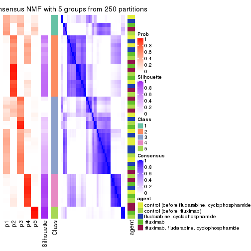
consensus_heatmap(res, k = 6)
Heatmaps for the membership of samples in all partitions to see how consistent they are:
membership_heatmap(res, k = 2)
membership_heatmap(res, k = 3)
membership_heatmap(res, k = 4)
membership_heatmap(res, k = 5)
membership_heatmap(res, k = 6)
As soon as we have had the classes for columns, we can look for signatures which are significantly different between classes which can be candidate marks for certain classes. Following are the heatmaps for signatures.
Signature heatmaps where rows are scaled:
get_signatures(res, k = 2)
get_signatures(res, k = 3)
get_signatures(res, k = 4)

get_signatures(res, k = 5)
get_signatures(res, k = 6)
Signature heatmaps where rows are not scaled:
get_signatures(res, k = 2, scale_rows = FALSE)
get_signatures(res, k = 3, scale_rows = FALSE)
get_signatures(res, k = 4, scale_rows = FALSE)
get_signatures(res, k = 5, scale_rows = FALSE)
get_signatures(res, k = 6, scale_rows = FALSE)

Compare the overlap of signatures from different k:
compare_signatures(res)
get_signature() returns a data frame invisibly. TO get the list of signatures, the function
call should be assigned to a variable explicitly. In following code, if plot argument is set
to FALSE, no heatmap is plotted while only the differential analysis is performed.
# code only for demonstration
tb = get_signature(res, k = ..., plot = FALSE)
An example of the output of tb is:
#> which_row fdr mean_1 mean_2 scaled_mean_1 scaled_mean_2 km
#> 1 38 0.042760348 8.373488 9.131774 -0.5533452 0.5164555 1
#> 2 40 0.018707592 7.106213 8.469186 -0.6173731 0.5762149 1
#> 3 55 0.019134737 10.221463 11.207825 -0.6159697 0.5749050 1
#> 4 59 0.006059896 5.921854 7.869574 -0.6899429 0.6439467 1
#> 5 60 0.018055526 8.928898 10.211722 -0.6204761 0.5791110 1
#> 6 98 0.009384629 15.714769 14.887706 0.6635654 -0.6193277 2
...
The columns in tb are:
which_row: row indices corresponding to the input matrix.fdr: FDR for the differential test. mean_x: The mean value in group x.scaled_mean_x: The mean value in group x after rows are scaled.km: Row groups if k-means clustering is applied to rows.UMAP plot which shows how samples are separated.
dimension_reduction(res, k = 2, method = "UMAP")

dimension_reduction(res, k = 3, method = "UMAP")
dimension_reduction(res, k = 4, method = "UMAP")
dimension_reduction(res, k = 5, method = "UMAP")
dimension_reduction(res, k = 6, method = "UMAP")
Following heatmap shows how subgroups are split when increasing k:
collect_classes(res)
Test correlation between subgroups and known annotations. If the known annotation is numeric, one-way ANOVA test is applied, and if the known annotation is discrete, chi-squared contingency table test is applied.
test_to_known_factors(res)
#> n agent(p) k
#> MAD:NMF 50 0.975 2
#> MAD:NMF 46 0.957 3
#> MAD:NMF 47 0.920 4
#> MAD:NMF 25 0.989 5
#> MAD:NMF 49 0.971 6
If matrix rows can be associated to genes, consider to use functional_enrichment(res,
...) to perform function enrichment for the signature genes. See this vignette for more detailed explanations.
The object with results only for a single top-value method and a single partition method can be extracted as:
res = res_list["ATC", "hclust"]
# you can also extract it by
# res = res_list["ATC:hclust"]
A summary of res and all the functions that can be applied to it:
res
#> A 'ConsensusPartition' object with k = 2, 3, 4, 5, 6.
#> On a matrix with 51941 rows and 50 columns.
#> Top rows (1000, 2000, 3000, 4000, 5000) are extracted by 'ATC' method.
#> Subgroups are detected by 'hclust' method.
#> Performed in total 1250 partitions by row resampling.
#> Best k for subgroups seems to be 6.
#>
#> Following methods can be applied to this 'ConsensusPartition' object:
#> [1] "cola_report" "collect_classes" "collect_plots"
#> [4] "collect_stats" "colnames" "compare_signatures"
#> [7] "consensus_heatmap" "dimension_reduction" "functional_enrichment"
#> [10] "get_anno_col" "get_anno" "get_classes"
#> [13] "get_consensus" "get_matrix" "get_membership"
#> [16] "get_param" "get_signatures" "get_stats"
#> [19] "is_best_k" "is_stable_k" "membership_heatmap"
#> [22] "ncol" "nrow" "plot_ecdf"
#> [25] "rownames" "select_partition_number" "show"
#> [28] "suggest_best_k" "test_to_known_factors"
collect_plots() function collects all the plots made from res for all k (number of partitions)
into one single page to provide an easy and fast comparison between different k.
collect_plots(res)

The plots are:
k and the heatmap of
predicted classes for each k.k.k.k.All the plots in panels can be made by individual functions and they are plotted later in this section.
select_partition_number() produces several plots showing different
statistics for choosing “optimized” k. There are following statistics:
k;k, the area increased is defined as \(A_k - A_{k-1}\).The detailed explanations of these statistics can be found in the cola vignette.
Generally speaking, lower PAC score, higher mean silhouette score or higher
concordance corresponds to better partition. Rand index and Jaccard index
measure how similar the current partition is compared to partition with k-1.
If they are too similar, we won't accept k is better than k-1.
select_partition_number(res)
The numeric values for all these statistics can be obtained by get_stats().
get_stats(res)
#> k 1-PAC mean_silhouette concordance area_increased Rand Jaccard
#> 2 2 1.000 1.000 1.000 0.5074 0.493 0.493
#> 3 3 0.886 0.915 0.956 0.1365 0.959 0.917
#> 4 4 0.901 0.856 0.929 0.1464 0.897 0.773
#> 5 5 0.901 0.885 0.945 0.1628 0.855 0.597
#> 6 6 0.982 0.952 0.974 0.0703 0.949 0.773
suggest_best_k() suggests the best \(k\) based on these statistics. The rules are as follows:
suggest_best_k(res)
#> [1] 6
#> attr(,"optional")
#> [1] 2 4 5
There is also optional best \(k\) = 2 4 5 that is worth to check.
Following shows the table of the partitions (You need to click the show/hide
code output link to see it). The membership matrix (columns with name p*)
is inferred by
clue::cl_consensus()
function with the SE method. Basically the value in the membership matrix
represents the probability to belong to a certain group. The finall class
label for an item is determined with the group with highest probability it
belongs to.
In get_classes() function, the entropy is calculated from the membership
matrix and the silhouette score is calculated from the consensus matrix.
cbind(get_classes(res, k = 2), get_membership(res, k = 2))
#> class entropy silhouette p1 p2
#> GSM388593 1 0 1 1 0
#> GSM388594 1 0 1 1 0
#> GSM388595 1 0 1 1 0
#> GSM388596 1 0 1 1 0
#> GSM388597 1 0 1 1 0
#> GSM388598 2 0 1 0 1
#> GSM388599 2 0 1 0 1
#> GSM388600 2 0 1 0 1
#> GSM388601 2 0 1 0 1
#> GSM388602 2 0 1 0 1
#> GSM388623 1 0 1 1 0
#> GSM388624 1 0 1 1 0
#> GSM388625 1 0 1 1 0
#> GSM388626 1 0 1 1 0
#> GSM388627 1 0 1 1 0
#> GSM388628 2 0 1 0 1
#> GSM388629 2 0 1 0 1
#> GSM388630 2 0 1 0 1
#> GSM388631 1 0 1 1 0
#> GSM388632 2 0 1 0 1
#> GSM388603 1 0 1 1 0
#> GSM388604 1 0 1 1 0
#> GSM388605 1 0 1 1 0
#> GSM388606 1 0 1 1 0
#> GSM388607 1 0 1 1 0
#> GSM388608 2 0 1 0 1
#> GSM388609 2 0 1 0 1
#> GSM388610 2 0 1 0 1
#> GSM388611 2 0 1 0 1
#> GSM388612 2 0 1 0 1
#> GSM388583 1 0 1 1 0
#> GSM388584 1 0 1 1 0
#> GSM388585 1 0 1 1 0
#> GSM388586 1 0 1 1 0
#> GSM388587 1 0 1 1 0
#> GSM388588 2 0 1 0 1
#> GSM388589 2 0 1 0 1
#> GSM388590 2 0 1 0 1
#> GSM388591 2 0 1 0 1
#> GSM388592 2 0 1 0 1
#> GSM388613 1 0 1 1 0
#> GSM388614 1 0 1 1 0
#> GSM388615 1 0 1 1 0
#> GSM388616 1 0 1 1 0
#> GSM388617 1 0 1 1 0
#> GSM388618 2 0 1 0 1
#> GSM388619 2 0 1 0 1
#> GSM388620 2 0 1 0 1
#> GSM388621 1 0 1 1 0
#> GSM388622 2 0 1 0 1
cbind(get_classes(res, k = 3), get_membership(res, k = 3))
#> class entropy silhouette p1 p2 p3
#> GSM388593 1 0.5650 0.661 0.688 0 0.312
#> GSM388594 1 0.0000 0.897 1.000 0 0.000
#> GSM388595 1 0.0000 0.897 1.000 0 0.000
#> GSM388596 1 0.0000 0.897 1.000 0 0.000
#> GSM388597 1 0.0000 0.897 1.000 0 0.000
#> GSM388598 2 0.0000 1.000 0.000 1 0.000
#> GSM388599 2 0.0000 1.000 0.000 1 0.000
#> GSM388600 2 0.0000 1.000 0.000 1 0.000
#> GSM388601 2 0.0000 1.000 0.000 1 0.000
#> GSM388602 2 0.0000 1.000 0.000 1 0.000
#> GSM388623 1 0.0000 0.897 1.000 0 0.000
#> GSM388624 1 0.0000 0.897 1.000 0 0.000
#> GSM388625 1 0.0237 0.895 0.996 0 0.004
#> GSM388626 1 0.0237 0.895 0.996 0 0.004
#> GSM388627 1 0.5650 0.661 0.688 0 0.312
#> GSM388628 2 0.0000 1.000 0.000 1 0.000
#> GSM388629 2 0.0000 1.000 0.000 1 0.000
#> GSM388630 2 0.0000 1.000 0.000 1 0.000
#> GSM388631 3 0.0000 1.000 0.000 0 1.000
#> GSM388632 2 0.0000 1.000 0.000 1 0.000
#> GSM388603 1 0.0000 0.897 1.000 0 0.000
#> GSM388604 1 0.0000 0.897 1.000 0 0.000
#> GSM388605 1 0.0000 0.897 1.000 0 0.000
#> GSM388606 1 0.0000 0.897 1.000 0 0.000
#> GSM388607 1 0.0000 0.897 1.000 0 0.000
#> GSM388608 2 0.0000 1.000 0.000 1 0.000
#> GSM388609 2 0.0000 1.000 0.000 1 0.000
#> GSM388610 2 0.0000 1.000 0.000 1 0.000
#> GSM388611 2 0.0000 1.000 0.000 1 0.000
#> GSM388612 2 0.0000 1.000 0.000 1 0.000
#> GSM388583 1 0.5650 0.661 0.688 0 0.312
#> GSM388584 1 0.5650 0.661 0.688 0 0.312
#> GSM388585 1 0.0000 0.897 1.000 0 0.000
#> GSM388586 1 0.0000 0.897 1.000 0 0.000
#> GSM388587 1 0.0000 0.897 1.000 0 0.000
#> GSM388588 2 0.0000 1.000 0.000 1 0.000
#> GSM388589 2 0.0000 1.000 0.000 1 0.000
#> GSM388590 2 0.0000 1.000 0.000 1 0.000
#> GSM388591 2 0.0000 1.000 0.000 1 0.000
#> GSM388592 2 0.0000 1.000 0.000 1 0.000
#> GSM388613 1 0.5650 0.661 0.688 0 0.312
#> GSM388614 1 0.0000 0.897 1.000 0 0.000
#> GSM388615 1 0.5650 0.661 0.688 0 0.312
#> GSM388616 1 0.5650 0.661 0.688 0 0.312
#> GSM388617 1 0.0000 0.897 1.000 0 0.000
#> GSM388618 2 0.0000 1.000 0.000 1 0.000
#> GSM388619 2 0.0000 1.000 0.000 1 0.000
#> GSM388620 2 0.0000 1.000 0.000 1 0.000
#> GSM388621 3 0.0000 1.000 0.000 0 1.000
#> GSM388622 2 0.0000 1.000 0.000 1 0.000
cbind(get_classes(res, k = 4), get_membership(res, k = 4))
#> class entropy silhouette p1 p2 p3 p4
#> GSM388593 1 0.4431 1.000 0.696 0 0.304 0
#> GSM388594 3 0.4431 0.743 0.304 0 0.696 0
#> GSM388595 3 0.0188 0.686 0.004 0 0.996 0
#> GSM388596 3 0.4431 0.743 0.304 0 0.696 0
#> GSM388597 3 0.4431 0.743 0.304 0 0.696 0
#> GSM388598 2 0.0000 1.000 0.000 1 0.000 0
#> GSM388599 2 0.0000 1.000 0.000 1 0.000 0
#> GSM388600 2 0.0000 1.000 0.000 1 0.000 0
#> GSM388601 2 0.0000 1.000 0.000 1 0.000 0
#> GSM388602 2 0.0000 1.000 0.000 1 0.000 0
#> GSM388623 3 0.4431 0.743 0.304 0 0.696 0
#> GSM388624 3 0.4431 0.743 0.304 0 0.696 0
#> GSM388625 3 0.4817 -0.344 0.388 0 0.612 0
#> GSM388626 3 0.4817 -0.344 0.388 0 0.612 0
#> GSM388627 1 0.4431 1.000 0.696 0 0.304 0
#> GSM388628 2 0.0000 1.000 0.000 1 0.000 0
#> GSM388629 2 0.0000 1.000 0.000 1 0.000 0
#> GSM388630 2 0.0000 1.000 0.000 1 0.000 0
#> GSM388631 4 0.0000 1.000 0.000 0 0.000 1
#> GSM388632 2 0.0000 1.000 0.000 1 0.000 0
#> GSM388603 3 0.4431 0.743 0.304 0 0.696 0
#> GSM388604 3 0.4431 0.743 0.304 0 0.696 0
#> GSM388605 3 0.0188 0.686 0.004 0 0.996 0
#> GSM388606 3 0.0188 0.686 0.004 0 0.996 0
#> GSM388607 3 0.0000 0.688 0.000 0 1.000 0
#> GSM388608 2 0.0000 1.000 0.000 1 0.000 0
#> GSM388609 2 0.0000 1.000 0.000 1 0.000 0
#> GSM388610 2 0.0000 1.000 0.000 1 0.000 0
#> GSM388611 2 0.0000 1.000 0.000 1 0.000 0
#> GSM388612 2 0.0000 1.000 0.000 1 0.000 0
#> GSM388583 1 0.4431 1.000 0.696 0 0.304 0
#> GSM388584 1 0.4431 1.000 0.696 0 0.304 0
#> GSM388585 3 0.0188 0.686 0.004 0 0.996 0
#> GSM388586 3 0.0188 0.686 0.004 0 0.996 0
#> GSM388587 3 0.4431 0.743 0.304 0 0.696 0
#> GSM388588 2 0.0000 1.000 0.000 1 0.000 0
#> GSM388589 2 0.0000 1.000 0.000 1 0.000 0
#> GSM388590 2 0.0000 1.000 0.000 1 0.000 0
#> GSM388591 2 0.0000 1.000 0.000 1 0.000 0
#> GSM388592 2 0.0000 1.000 0.000 1 0.000 0
#> GSM388613 1 0.4431 1.000 0.696 0 0.304 0
#> GSM388614 3 0.4431 0.743 0.304 0 0.696 0
#> GSM388615 1 0.4431 1.000 0.696 0 0.304 0
#> GSM388616 1 0.4431 1.000 0.696 0 0.304 0
#> GSM388617 3 0.0188 0.686 0.004 0 0.996 0
#> GSM388618 2 0.0000 1.000 0.000 1 0.000 0
#> GSM388619 2 0.0000 1.000 0.000 1 0.000 0
#> GSM388620 2 0.0000 1.000 0.000 1 0.000 0
#> GSM388621 4 0.0000 1.000 0.000 0 0.000 1
#> GSM388622 2 0.0000 1.000 0.000 1 0.000 0
cbind(get_classes(res, k = 5), get_membership(res, k = 5))
#> class entropy silhouette p1 p2 p3 p4 p5
#> GSM388593 1 0.000 0.882 1.000 0 0.000 0 0
#> GSM388594 3 0.000 0.812 0.000 0 1.000 0 0
#> GSM388595 3 0.384 0.693 0.308 0 0.692 0 0
#> GSM388596 3 0.000 0.812 0.000 0 1.000 0 0
#> GSM388597 3 0.000 0.812 0.000 0 1.000 0 0
#> GSM388598 2 0.000 1.000 0.000 1 0.000 0 0
#> GSM388599 2 0.000 1.000 0.000 1 0.000 0 0
#> GSM388600 4 0.000 1.000 0.000 0 0.000 1 0
#> GSM388601 4 0.000 1.000 0.000 0 0.000 1 0
#> GSM388602 4 0.000 1.000 0.000 0 0.000 1 0
#> GSM388623 3 0.000 0.812 0.000 0 1.000 0 0
#> GSM388624 3 0.000 0.812 0.000 0 1.000 0 0
#> GSM388625 1 0.384 0.460 0.692 0 0.308 0 0
#> GSM388626 1 0.384 0.460 0.692 0 0.308 0 0
#> GSM388627 1 0.000 0.882 1.000 0 0.000 0 0
#> GSM388628 2 0.000 1.000 0.000 1 0.000 0 0
#> GSM388629 2 0.000 1.000 0.000 1 0.000 0 0
#> GSM388630 4 0.000 1.000 0.000 0 0.000 1 0
#> GSM388631 5 0.000 1.000 0.000 0 0.000 0 1
#> GSM388632 2 0.000 1.000 0.000 1 0.000 0 0
#> GSM388603 3 0.000 0.812 0.000 0 1.000 0 0
#> GSM388604 3 0.000 0.812 0.000 0 1.000 0 0
#> GSM388605 3 0.384 0.693 0.308 0 0.692 0 0
#> GSM388606 3 0.384 0.693 0.308 0 0.692 0 0
#> GSM388607 3 0.382 0.695 0.304 0 0.696 0 0
#> GSM388608 2 0.000 1.000 0.000 1 0.000 0 0
#> GSM388609 2 0.000 1.000 0.000 1 0.000 0 0
#> GSM388610 4 0.000 1.000 0.000 0 0.000 1 0
#> GSM388611 4 0.000 1.000 0.000 0 0.000 1 0
#> GSM388612 4 0.000 1.000 0.000 0 0.000 1 0
#> GSM388583 1 0.000 0.882 1.000 0 0.000 0 0
#> GSM388584 1 0.000 0.882 1.000 0 0.000 0 0
#> GSM388585 3 0.384 0.693 0.308 0 0.692 0 0
#> GSM388586 3 0.384 0.693 0.308 0 0.692 0 0
#> GSM388587 3 0.000 0.812 0.000 0 1.000 0 0
#> GSM388588 2 0.000 1.000 0.000 1 0.000 0 0
#> GSM388589 2 0.000 1.000 0.000 1 0.000 0 0
#> GSM388590 4 0.000 1.000 0.000 0 0.000 1 0
#> GSM388591 4 0.000 1.000 0.000 0 0.000 1 0
#> GSM388592 4 0.000 1.000 0.000 0 0.000 1 0
#> GSM388613 1 0.000 0.882 1.000 0 0.000 0 0
#> GSM388614 3 0.000 0.812 0.000 0 1.000 0 0
#> GSM388615 1 0.000 0.882 1.000 0 0.000 0 0
#> GSM388616 1 0.000 0.882 1.000 0 0.000 0 0
#> GSM388617 3 0.384 0.693 0.308 0 0.692 0 0
#> GSM388618 2 0.000 1.000 0.000 1 0.000 0 0
#> GSM388619 2 0.000 1.000 0.000 1 0.000 0 0
#> GSM388620 4 0.000 1.000 0.000 0 0.000 1 0
#> GSM388621 5 0.000 1.000 0.000 0 0.000 0 1
#> GSM388622 2 0.000 1.000 0.000 1 0.000 0 0
cbind(get_classes(res, k = 6), get_membership(res, k = 6))
#> class entropy silhouette p1 p2 p3 p4 p5 p6
#> GSM388593 1 0.1910 0.833 0.892 0 0.000 0 0.108 0
#> GSM388594 3 0.0000 0.979 0.000 0 1.000 0 0.000 0
#> GSM388595 5 0.0000 0.998 0.000 0 0.000 0 1.000 0
#> GSM388596 3 0.0458 0.985 0.000 0 0.984 0 0.016 0
#> GSM388597 3 0.0713 0.984 0.000 0 0.972 0 0.028 0
#> GSM388598 2 0.0000 1.000 0.000 1 0.000 0 0.000 0
#> GSM388599 2 0.0000 1.000 0.000 1 0.000 0 0.000 0
#> GSM388600 4 0.0000 1.000 0.000 0 0.000 1 0.000 0
#> GSM388601 4 0.0000 1.000 0.000 0 0.000 1 0.000 0
#> GSM388602 4 0.0000 1.000 0.000 0 0.000 1 0.000 0
#> GSM388623 3 0.0000 0.979 0.000 0 1.000 0 0.000 0
#> GSM388624 3 0.0713 0.984 0.000 0 0.972 0 0.028 0
#> GSM388625 1 0.3789 0.476 0.584 0 0.000 0 0.416 0
#> GSM388626 1 0.3789 0.476 0.584 0 0.000 0 0.416 0
#> GSM388627 1 0.0000 0.820 1.000 0 0.000 0 0.000 0
#> GSM388628 2 0.0000 1.000 0.000 1 0.000 0 0.000 0
#> GSM388629 2 0.0000 1.000 0.000 1 0.000 0 0.000 0
#> GSM388630 4 0.0000 1.000 0.000 0 0.000 1 0.000 0
#> GSM388631 6 0.0000 1.000 0.000 0 0.000 0 0.000 1
#> GSM388632 2 0.0000 1.000 0.000 1 0.000 0 0.000 0
#> GSM388603 3 0.0000 0.979 0.000 0 1.000 0 0.000 0
#> GSM388604 3 0.0458 0.985 0.000 0 0.984 0 0.016 0
#> GSM388605 5 0.0000 0.998 0.000 0 0.000 0 1.000 0
#> GSM388606 5 0.0000 0.998 0.000 0 0.000 0 1.000 0
#> GSM388607 5 0.0260 0.989 0.000 0 0.008 0 0.992 0
#> GSM388608 2 0.0000 1.000 0.000 1 0.000 0 0.000 0
#> GSM388609 2 0.0000 1.000 0.000 1 0.000 0 0.000 0
#> GSM388610 4 0.0000 1.000 0.000 0 0.000 1 0.000 0
#> GSM388611 4 0.0000 1.000 0.000 0 0.000 1 0.000 0
#> GSM388612 4 0.0000 1.000 0.000 0 0.000 1 0.000 0
#> GSM388583 1 0.1910 0.833 0.892 0 0.000 0 0.108 0
#> GSM388584 1 0.0000 0.820 1.000 0 0.000 0 0.000 0
#> GSM388585 5 0.0000 0.998 0.000 0 0.000 0 1.000 0
#> GSM388586 5 0.0000 0.998 0.000 0 0.000 0 1.000 0
#> GSM388587 3 0.0713 0.984 0.000 0 0.972 0 0.028 0
#> GSM388588 2 0.0000 1.000 0.000 1 0.000 0 0.000 0
#> GSM388589 2 0.0000 1.000 0.000 1 0.000 0 0.000 0
#> GSM388590 4 0.0000 1.000 0.000 0 0.000 1 0.000 0
#> GSM388591 4 0.0000 1.000 0.000 0 0.000 1 0.000 0
#> GSM388592 4 0.0000 1.000 0.000 0 0.000 1 0.000 0
#> GSM388613 1 0.1267 0.842 0.940 0 0.000 0 0.060 0
#> GSM388614 3 0.0713 0.984 0.000 0 0.972 0 0.028 0
#> GSM388615 1 0.1267 0.842 0.940 0 0.000 0 0.060 0
#> GSM388616 1 0.0000 0.820 1.000 0 0.000 0 0.000 0
#> GSM388617 5 0.0000 0.998 0.000 0 0.000 0 1.000 0
#> GSM388618 2 0.0000 1.000 0.000 1 0.000 0 0.000 0
#> GSM388619 2 0.0000 1.000 0.000 1 0.000 0 0.000 0
#> GSM388620 4 0.0000 1.000 0.000 0 0.000 1 0.000 0
#> GSM388621 6 0.0000 1.000 0.000 0 0.000 0 0.000 1
#> GSM388622 2 0.0000 1.000 0.000 1 0.000 0 0.000 0
Heatmaps for the consensus matrix. It visualizes the probability of two samples to be in a same group.
consensus_heatmap(res, k = 2)
consensus_heatmap(res, k = 3)
consensus_heatmap(res, k = 4)
consensus_heatmap(res, k = 5)
consensus_heatmap(res, k = 6)
Heatmaps for the membership of samples in all partitions to see how consistent they are:
membership_heatmap(res, k = 2)

membership_heatmap(res, k = 3)
membership_heatmap(res, k = 4)
membership_heatmap(res, k = 5)
membership_heatmap(res, k = 6)
As soon as we have had the classes for columns, we can look for signatures which are significantly different between classes which can be candidate marks for certain classes. Following are the heatmaps for signatures.
Signature heatmaps where rows are scaled:
get_signatures(res, k = 2)

get_signatures(res, k = 3)

get_signatures(res, k = 4)
get_signatures(res, k = 5)
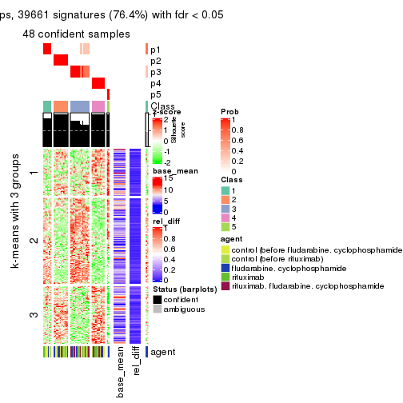
get_signatures(res, k = 6)
Signature heatmaps where rows are not scaled:
get_signatures(res, k = 2, scale_rows = FALSE)

get_signatures(res, k = 3, scale_rows = FALSE)
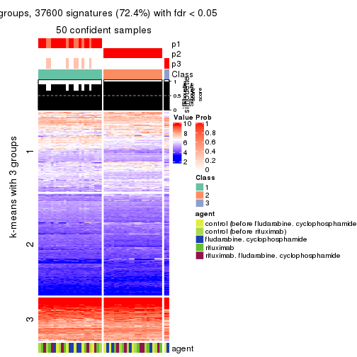
get_signatures(res, k = 4, scale_rows = FALSE)
get_signatures(res, k = 5, scale_rows = FALSE)
get_signatures(res, k = 6, scale_rows = FALSE)
Compare the overlap of signatures from different k:
compare_signatures(res)
get_signature() returns a data frame invisibly. TO get the list of signatures, the function
call should be assigned to a variable explicitly. In following code, if plot argument is set
to FALSE, no heatmap is plotted while only the differential analysis is performed.
# code only for demonstration
tb = get_signature(res, k = ..., plot = FALSE)
An example of the output of tb is:
#> which_row fdr mean_1 mean_2 scaled_mean_1 scaled_mean_2 km
#> 1 38 0.042760348 8.373488 9.131774 -0.5533452 0.5164555 1
#> 2 40 0.018707592 7.106213 8.469186 -0.6173731 0.5762149 1
#> 3 55 0.019134737 10.221463 11.207825 -0.6159697 0.5749050 1
#> 4 59 0.006059896 5.921854 7.869574 -0.6899429 0.6439467 1
#> 5 60 0.018055526 8.928898 10.211722 -0.6204761 0.5791110 1
#> 6 98 0.009384629 15.714769 14.887706 0.6635654 -0.6193277 2
...
The columns in tb are:
which_row: row indices corresponding to the input matrix.fdr: FDR for the differential test. mean_x: The mean value in group x.scaled_mean_x: The mean value in group x after rows are scaled.km: Row groups if k-means clustering is applied to rows.UMAP plot which shows how samples are separated.
dimension_reduction(res, k = 2, method = "UMAP")

dimension_reduction(res, k = 3, method = "UMAP")

dimension_reduction(res, k = 4, method = "UMAP")
dimension_reduction(res, k = 5, method = "UMAP")
dimension_reduction(res, k = 6, method = "UMAP")
Following heatmap shows how subgroups are split when increasing k:
collect_classes(res)
Test correlation between subgroups and known annotations. If the known annotation is numeric, one-way ANOVA test is applied, and if the known annotation is discrete, chi-squared contingency table test is applied.
test_to_known_factors(res)
#> n agent(p) k
#> ATC:hclust 50 0.975 2
#> ATC:hclust 50 0.917 3
#> ATC:hclust 48 0.726 4
#> ATC:hclust 48 0.796 5
#> ATC:hclust 48 0.806 6
If matrix rows can be associated to genes, consider to use functional_enrichment(res,
...) to perform function enrichment for the signature genes. See this vignette for more detailed explanations.
The object with results only for a single top-value method and a single partition method can be extracted as:
res = res_list["ATC", "kmeans"]
# you can also extract it by
# res = res_list["ATC:kmeans"]
A summary of res and all the functions that can be applied to it:
res
#> A 'ConsensusPartition' object with k = 2, 3, 4, 5, 6.
#> On a matrix with 51941 rows and 50 columns.
#> Top rows (1000, 2000, 3000, 4000, 5000) are extracted by 'ATC' method.
#> Subgroups are detected by 'kmeans' method.
#> Performed in total 1250 partitions by row resampling.
#> Best k for subgroups seems to be 2.
#>
#> Following methods can be applied to this 'ConsensusPartition' object:
#> [1] "cola_report" "collect_classes" "collect_plots"
#> [4] "collect_stats" "colnames" "compare_signatures"
#> [7] "consensus_heatmap" "dimension_reduction" "functional_enrichment"
#> [10] "get_anno_col" "get_anno" "get_classes"
#> [13] "get_consensus" "get_matrix" "get_membership"
#> [16] "get_param" "get_signatures" "get_stats"
#> [19] "is_best_k" "is_stable_k" "membership_heatmap"
#> [22] "ncol" "nrow" "plot_ecdf"
#> [25] "rownames" "select_partition_number" "show"
#> [28] "suggest_best_k" "test_to_known_factors"
collect_plots() function collects all the plots made from res for all k (number of partitions)
into one single page to provide an easy and fast comparison between different k.
collect_plots(res)
The plots are:
k and the heatmap of
predicted classes for each k.k.k.k.All the plots in panels can be made by individual functions and they are plotted later in this section.
select_partition_number() produces several plots showing different
statistics for choosing “optimized” k. There are following statistics:
k;k, the area increased is defined as \(A_k - A_{k-1}\).The detailed explanations of these statistics can be found in the cola vignette.
Generally speaking, lower PAC score, higher mean silhouette score or higher
concordance corresponds to better partition. Rand index and Jaccard index
measure how similar the current partition is compared to partition with k-1.
If they are too similar, we won't accept k is better than k-1.
select_partition_number(res)
The numeric values for all these statistics can be obtained by get_stats().
get_stats(res)
#> k 1-PAC mean_silhouette concordance area_increased Rand Jaccard
#> 2 2 1.000 1.000 1.000 0.5074 0.493 0.493
#> 3 3 0.694 0.465 0.724 0.2434 0.959 0.917
#> 4 4 0.714 0.426 0.588 0.1002 0.638 0.375
#> 5 5 0.639 0.866 0.815 0.0715 0.873 0.630
#> 6 6 0.665 0.787 0.798 0.0540 1.000 1.000
suggest_best_k() suggests the best \(k\) based on these statistics. The rules are as follows:
suggest_best_k(res)
#> [1] 2
Following shows the table of the partitions (You need to click the show/hide
code output link to see it). The membership matrix (columns with name p*)
is inferred by
clue::cl_consensus()
function with the SE method. Basically the value in the membership matrix
represents the probability to belong to a certain group. The finall class
label for an item is determined with the group with highest probability it
belongs to.
In get_classes() function, the entropy is calculated from the membership
matrix and the silhouette score is calculated from the consensus matrix.
cbind(get_classes(res, k = 2), get_membership(res, k = 2))
#> class entropy silhouette p1 p2
#> GSM388593 1 0 1 1 0
#> GSM388594 1 0 1 1 0
#> GSM388595 1 0 1 1 0
#> GSM388596 1 0 1 1 0
#> GSM388597 1 0 1 1 0
#> GSM388598 2 0 1 0 1
#> GSM388599 2 0 1 0 1
#> GSM388600 2 0 1 0 1
#> GSM388601 2 0 1 0 1
#> GSM388602 2 0 1 0 1
#> GSM388623 1 0 1 1 0
#> GSM388624 1 0 1 1 0
#> GSM388625 1 0 1 1 0
#> GSM388626 1 0 1 1 0
#> GSM388627 1 0 1 1 0
#> GSM388628 2 0 1 0 1
#> GSM388629 2 0 1 0 1
#> GSM388630 2 0 1 0 1
#> GSM388631 1 0 1 1 0
#> GSM388632 2 0 1 0 1
#> GSM388603 1 0 1 1 0
#> GSM388604 1 0 1 1 0
#> GSM388605 1 0 1 1 0
#> GSM388606 1 0 1 1 0
#> GSM388607 1 0 1 1 0
#> GSM388608 2 0 1 0 1
#> GSM388609 2 0 1 0 1
#> GSM388610 2 0 1 0 1
#> GSM388611 2 0 1 0 1
#> GSM388612 2 0 1 0 1
#> GSM388583 1 0 1 1 0
#> GSM388584 1 0 1 1 0
#> GSM388585 1 0 1 1 0
#> GSM388586 1 0 1 1 0
#> GSM388587 1 0 1 1 0
#> GSM388588 2 0 1 0 1
#> GSM388589 2 0 1 0 1
#> GSM388590 2 0 1 0 1
#> GSM388591 2 0 1 0 1
#> GSM388592 2 0 1 0 1
#> GSM388613 1 0 1 1 0
#> GSM388614 1 0 1 1 0
#> GSM388615 1 0 1 1 0
#> GSM388616 1 0 1 1 0
#> GSM388617 1 0 1 1 0
#> GSM388618 2 0 1 0 1
#> GSM388619 2 0 1 0 1
#> GSM388620 2 0 1 0 1
#> GSM388621 1 0 1 1 0
#> GSM388622 2 0 1 0 1
cbind(get_classes(res, k = 3), get_membership(res, k = 3))
#> class entropy silhouette p1 p2 p3
#> GSM388593 1 0.621 -0.2535 0.572 0.000 0.428
#> GSM388594 1 0.000 0.5516 1.000 0.000 0.000
#> GSM388595 1 0.000 0.5516 1.000 0.000 0.000
#> GSM388596 1 0.000 0.5516 1.000 0.000 0.000
#> GSM388597 1 0.000 0.5516 1.000 0.000 0.000
#> GSM388598 2 0.000 0.7771 0.000 1.000 0.000
#> GSM388599 2 0.000 0.7771 0.000 1.000 0.000
#> GSM388600 2 0.629 0.7591 0.000 0.532 0.468
#> GSM388601 2 0.629 0.7591 0.000 0.532 0.468
#> GSM388602 2 0.629 0.7591 0.000 0.532 0.468
#> GSM388623 1 0.000 0.5516 1.000 0.000 0.000
#> GSM388624 1 0.000 0.5516 1.000 0.000 0.000
#> GSM388625 1 0.593 0.0228 0.644 0.000 0.356
#> GSM388626 1 0.604 -0.0505 0.620 0.000 0.380
#> GSM388627 1 0.631 -0.4663 0.512 0.000 0.488
#> GSM388628 2 0.000 0.7771 0.000 1.000 0.000
#> GSM388629 2 0.000 0.7771 0.000 1.000 0.000
#> GSM388630 2 0.629 0.7591 0.000 0.532 0.468
#> GSM388631 3 0.824 1.0000 0.388 0.080 0.532
#> GSM388632 2 0.000 0.7771 0.000 1.000 0.000
#> GSM388603 1 0.000 0.5516 1.000 0.000 0.000
#> GSM388604 1 0.000 0.5516 1.000 0.000 0.000
#> GSM388605 1 0.604 -0.0505 0.620 0.000 0.380
#> GSM388606 1 0.559 0.1491 0.696 0.000 0.304
#> GSM388607 1 0.000 0.5516 1.000 0.000 0.000
#> GSM388608 2 0.000 0.7771 0.000 1.000 0.000
#> GSM388609 2 0.000 0.7771 0.000 1.000 0.000
#> GSM388610 2 0.629 0.7591 0.000 0.532 0.468
#> GSM388611 2 0.629 0.7591 0.000 0.532 0.468
#> GSM388612 2 0.629 0.7591 0.000 0.532 0.468
#> GSM388583 1 0.631 -0.4663 0.512 0.000 0.488
#> GSM388584 1 0.631 -0.4663 0.512 0.000 0.488
#> GSM388585 1 0.000 0.5516 1.000 0.000 0.000
#> GSM388586 1 0.599 -0.0127 0.632 0.000 0.368
#> GSM388587 1 0.000 0.5516 1.000 0.000 0.000
#> GSM388588 2 0.000 0.7771 0.000 1.000 0.000
#> GSM388589 2 0.000 0.7771 0.000 1.000 0.000
#> GSM388590 2 0.629 0.7591 0.000 0.532 0.468
#> GSM388591 2 0.629 0.7591 0.000 0.532 0.468
#> GSM388592 2 0.629 0.7591 0.000 0.532 0.468
#> GSM388613 1 0.631 -0.4663 0.512 0.000 0.488
#> GSM388614 1 0.000 0.5516 1.000 0.000 0.000
#> GSM388615 1 0.631 -0.4663 0.512 0.000 0.488
#> GSM388616 1 0.631 -0.4663 0.512 0.000 0.488
#> GSM388617 1 0.604 -0.0505 0.620 0.000 0.380
#> GSM388618 2 0.000 0.7771 0.000 1.000 0.000
#> GSM388619 2 0.000 0.7771 0.000 1.000 0.000
#> GSM388620 2 0.629 0.7591 0.000 0.532 0.468
#> GSM388621 3 0.824 1.0000 0.388 0.080 0.532
#> GSM388622 2 0.000 0.7771 0.000 1.000 0.000
cbind(get_classes(res, k = 4), get_membership(res, k = 4))
#> class entropy silhouette p1 p2 p3 p4
#> GSM388593 1 0.7802 -0.1122 0.420 0.000 0.304 0.276
#> GSM388594 3 0.0000 0.9629 0.000 0.000 1.000 0.000
#> GSM388595 3 0.4222 0.5139 0.272 0.000 0.728 0.000
#> GSM388596 3 0.0000 0.9629 0.000 0.000 1.000 0.000
#> GSM388597 3 0.0000 0.9629 0.000 0.000 1.000 0.000
#> GSM388598 1 0.4925 -0.0699 0.572 0.428 0.000 0.000
#> GSM388599 1 0.5229 -0.0733 0.564 0.428 0.000 0.008
#> GSM388600 2 0.0188 0.9741 0.000 0.996 0.000 0.004
#> GSM388601 2 0.2216 0.9391 0.000 0.908 0.000 0.092
#> GSM388602 2 0.0707 0.9697 0.000 0.980 0.000 0.020
#> GSM388623 3 0.0000 0.9629 0.000 0.000 1.000 0.000
#> GSM388624 3 0.0000 0.9629 0.000 0.000 1.000 0.000
#> GSM388625 1 0.7670 -0.0945 0.420 0.000 0.364 0.216
#> GSM388626 1 0.7723 -0.0898 0.420 0.000 0.348 0.232
#> GSM388627 1 0.7771 -0.1455 0.420 0.000 0.252 0.328
#> GSM388628 1 0.5452 -0.0697 0.556 0.428 0.000 0.016
#> GSM388629 1 0.5452 -0.0697 0.556 0.428 0.000 0.016
#> GSM388630 2 0.0000 0.9747 0.000 1.000 0.000 0.000
#> GSM388631 4 0.3279 1.0000 0.032 0.000 0.096 0.872
#> GSM388632 1 0.5550 -0.0718 0.552 0.428 0.000 0.020
#> GSM388603 3 0.0000 0.9629 0.000 0.000 1.000 0.000
#> GSM388604 3 0.0000 0.9629 0.000 0.000 1.000 0.000
#> GSM388605 1 0.7687 -0.0931 0.428 0.000 0.348 0.224
#> GSM388606 1 0.7451 -0.1180 0.420 0.000 0.408 0.172
#> GSM388607 3 0.0000 0.9629 0.000 0.000 1.000 0.000
#> GSM388608 1 0.4925 -0.0699 0.572 0.428 0.000 0.000
#> GSM388609 1 0.5229 -0.0733 0.564 0.428 0.000 0.008
#> GSM388610 2 0.0188 0.9741 0.000 0.996 0.000 0.004
#> GSM388611 2 0.2216 0.9391 0.000 0.908 0.000 0.092
#> GSM388612 2 0.0000 0.9747 0.000 1.000 0.000 0.000
#> GSM388583 1 0.7771 -0.1455 0.420 0.000 0.252 0.328
#> GSM388584 1 0.7771 -0.1455 0.420 0.000 0.252 0.328
#> GSM388585 3 0.0336 0.9561 0.008 0.000 0.992 0.000
#> GSM388586 1 0.7711 -0.0905 0.420 0.000 0.352 0.228
#> GSM388587 3 0.0000 0.9629 0.000 0.000 1.000 0.000
#> GSM388588 1 0.4925 -0.0699 0.572 0.428 0.000 0.000
#> GSM388589 1 0.5229 -0.0733 0.564 0.428 0.000 0.008
#> GSM388590 2 0.0188 0.9741 0.000 0.996 0.000 0.004
#> GSM388591 2 0.2216 0.9391 0.000 0.908 0.000 0.092
#> GSM388592 2 0.0000 0.9747 0.000 1.000 0.000 0.000
#> GSM388613 1 0.7771 -0.1455 0.420 0.000 0.252 0.328
#> GSM388614 3 0.0000 0.9629 0.000 0.000 1.000 0.000
#> GSM388615 1 0.7771 -0.1455 0.420 0.000 0.252 0.328
#> GSM388616 1 0.7771 -0.1455 0.420 0.000 0.252 0.328
#> GSM388617 1 0.7723 -0.0898 0.420 0.000 0.348 0.232
#> GSM388618 1 0.5452 -0.0697 0.556 0.428 0.000 0.016
#> GSM388619 1 0.5452 -0.0697 0.556 0.428 0.000 0.016
#> GSM388620 2 0.0000 0.9747 0.000 1.000 0.000 0.000
#> GSM388621 4 0.3279 1.0000 0.032 0.000 0.096 0.872
#> GSM388622 1 0.5550 -0.0718 0.552 0.428 0.000 0.020
cbind(get_classes(res, k = 5), get_membership(res, k = 5))
#> class entropy silhouette p1 p2 p3 p4 p5
#> GSM388593 1 0.3612 0.829 0.732 0.000 0.268 0.000 0.000
#> GSM388594 3 0.3424 0.840 0.000 0.000 0.760 0.240 0.000
#> GSM388595 3 0.4065 0.240 0.264 0.000 0.720 0.016 0.000
#> GSM388596 3 0.2891 0.857 0.000 0.000 0.824 0.176 0.000
#> GSM388597 3 0.1792 0.860 0.000 0.000 0.916 0.084 0.000
#> GSM388598 2 0.3164 0.883 0.044 0.852 0.000 0.000 0.104
#> GSM388599 2 0.0992 0.939 0.008 0.968 0.000 0.000 0.024
#> GSM388600 4 0.3885 0.952 0.000 0.268 0.000 0.724 0.008
#> GSM388601 4 0.6326 0.893 0.064 0.268 0.000 0.600 0.068
#> GSM388602 4 0.5152 0.922 0.012 0.268 0.000 0.668 0.052
#> GSM388623 3 0.3424 0.840 0.000 0.000 0.760 0.240 0.000
#> GSM388624 3 0.0404 0.819 0.012 0.000 0.988 0.000 0.000
#> GSM388625 1 0.3816 0.830 0.696 0.000 0.304 0.000 0.000
#> GSM388626 1 0.3816 0.830 0.696 0.000 0.304 0.000 0.000
#> GSM388627 1 0.2997 0.818 0.840 0.000 0.148 0.012 0.000
#> GSM388628 2 0.0324 0.939 0.004 0.992 0.000 0.000 0.004
#> GSM388629 2 0.1012 0.935 0.012 0.968 0.000 0.000 0.020
#> GSM388630 4 0.3612 0.953 0.000 0.268 0.000 0.732 0.000
#> GSM388631 5 0.4245 1.000 0.224 0.008 0.024 0.000 0.744
#> GSM388632 2 0.0912 0.934 0.016 0.972 0.000 0.000 0.012
#> GSM388603 3 0.3424 0.840 0.000 0.000 0.760 0.240 0.000
#> GSM388604 3 0.3424 0.840 0.000 0.000 0.760 0.240 0.000
#> GSM388605 1 0.4451 0.811 0.644 0.000 0.340 0.016 0.000
#> GSM388606 1 0.4262 0.691 0.560 0.000 0.440 0.000 0.000
#> GSM388607 3 0.0404 0.819 0.012 0.000 0.988 0.000 0.000
#> GSM388608 2 0.3164 0.883 0.044 0.852 0.000 0.000 0.104
#> GSM388609 2 0.0992 0.939 0.008 0.968 0.000 0.000 0.024
#> GSM388610 4 0.3885 0.952 0.000 0.268 0.000 0.724 0.008
#> GSM388611 4 0.6326 0.893 0.064 0.268 0.000 0.600 0.068
#> GSM388612 4 0.3612 0.953 0.000 0.268 0.000 0.732 0.000
#> GSM388583 1 0.2605 0.821 0.852 0.000 0.148 0.000 0.000
#> GSM388584 1 0.2997 0.818 0.840 0.000 0.148 0.012 0.000
#> GSM388585 3 0.1444 0.816 0.012 0.000 0.948 0.040 0.000
#> GSM388586 1 0.4192 0.754 0.596 0.000 0.404 0.000 0.000
#> GSM388587 3 0.1792 0.860 0.000 0.000 0.916 0.084 0.000
#> GSM388588 2 0.3164 0.883 0.044 0.852 0.000 0.000 0.104
#> GSM388589 2 0.0992 0.939 0.008 0.968 0.000 0.000 0.024
#> GSM388590 4 0.3885 0.952 0.000 0.268 0.000 0.724 0.008
#> GSM388591 4 0.6326 0.893 0.064 0.268 0.000 0.600 0.068
#> GSM388592 4 0.3612 0.953 0.000 0.268 0.000 0.732 0.000
#> GSM388613 1 0.2997 0.818 0.840 0.000 0.148 0.012 0.000
#> GSM388614 3 0.1851 0.860 0.000 0.000 0.912 0.088 0.000
#> GSM388615 1 0.2997 0.818 0.840 0.000 0.148 0.012 0.000
#> GSM388616 1 0.2997 0.818 0.840 0.000 0.148 0.012 0.000
#> GSM388617 1 0.4045 0.808 0.644 0.000 0.356 0.000 0.000
#> GSM388618 2 0.0324 0.939 0.004 0.992 0.000 0.000 0.004
#> GSM388619 2 0.1549 0.932 0.016 0.944 0.000 0.000 0.040
#> GSM388620 4 0.3612 0.953 0.000 0.268 0.000 0.732 0.000
#> GSM388621 5 0.4245 1.000 0.224 0.008 0.024 0.000 0.744
#> GSM388622 2 0.0912 0.934 0.016 0.972 0.000 0.000 0.012
cbind(get_classes(res, k = 6), get_membership(res, k = 6))
#> class entropy silhouette p1 p2 p3 p4 p5 p6
#> GSM388593 1 0.2404 0.7505 0.872 0.016 0.112 0.000 NA 0.000
#> GSM388594 3 0.2482 0.7320 0.000 0.004 0.848 0.000 NA 0.000
#> GSM388595 3 0.5425 0.0362 0.460 0.052 0.464 0.000 NA 0.008
#> GSM388596 3 0.1367 0.7576 0.000 0.012 0.944 0.000 NA 0.000
#> GSM388597 3 0.1967 0.7563 0.000 0.084 0.904 0.000 NA 0.000
#> GSM388598 2 0.6173 0.8206 0.016 0.588 0.000 0.160 NA 0.032
#> GSM388599 2 0.4737 0.8897 0.024 0.740 0.000 0.160 NA 0.024
#> GSM388600 4 0.0922 0.9109 0.004 0.000 0.000 0.968 NA 0.024
#> GSM388601 4 0.3151 0.8032 0.000 0.000 0.000 0.748 NA 0.000
#> GSM388602 4 0.2554 0.8758 0.040 0.000 0.000 0.892 NA 0.024
#> GSM388623 3 0.2482 0.7320 0.000 0.004 0.848 0.000 NA 0.000
#> GSM388624 3 0.4624 0.6763 0.180 0.096 0.712 0.000 NA 0.000
#> GSM388625 1 0.3236 0.7578 0.820 0.004 0.140 0.000 NA 0.000
#> GSM388626 1 0.3094 0.7579 0.824 0.000 0.140 0.000 NA 0.000
#> GSM388627 1 0.4757 0.7191 0.636 0.000 0.084 0.000 NA 0.000
#> GSM388628 2 0.3037 0.8962 0.000 0.820 0.000 0.160 NA 0.004
#> GSM388629 2 0.3979 0.8825 0.000 0.772 0.000 0.160 NA 0.016
#> GSM388630 4 0.0000 0.9131 0.000 0.000 0.000 1.000 NA 0.000
#> GSM388631 6 0.2664 0.9961 0.136 0.000 0.016 0.000 NA 0.848
#> GSM388632 2 0.3587 0.8945 0.008 0.800 0.000 0.160 NA 0.016
#> GSM388603 3 0.2553 0.7320 0.000 0.008 0.848 0.000 NA 0.000
#> GSM388604 3 0.2442 0.7335 0.000 0.004 0.852 0.000 NA 0.000
#> GSM388605 1 0.3919 0.7189 0.792 0.044 0.140 0.000 NA 0.008
#> GSM388606 1 0.3629 0.6104 0.724 0.016 0.260 0.000 NA 0.000
#> GSM388607 3 0.4250 0.6405 0.244 0.036 0.708 0.000 NA 0.000
#> GSM388608 2 0.6173 0.8206 0.016 0.588 0.000 0.160 NA 0.032
#> GSM388609 2 0.4737 0.8897 0.024 0.740 0.000 0.160 NA 0.024
#> GSM388610 4 0.0922 0.9109 0.004 0.000 0.000 0.968 NA 0.024
#> GSM388611 4 0.3151 0.8032 0.000 0.000 0.000 0.748 NA 0.000
#> GSM388612 4 0.0260 0.9123 0.000 0.000 0.000 0.992 NA 0.008
#> GSM388583 1 0.4697 0.7279 0.684 0.008 0.084 0.000 NA 0.000
#> GSM388584 1 0.4757 0.7191 0.636 0.000 0.084 0.000 NA 0.000
#> GSM388585 3 0.4872 0.6035 0.252 0.052 0.672 0.000 NA 0.008
#> GSM388586 1 0.3445 0.6405 0.744 0.012 0.244 0.000 NA 0.000
#> GSM388587 3 0.1967 0.7563 0.000 0.084 0.904 0.000 NA 0.000
#> GSM388588 2 0.6173 0.8206 0.016 0.588 0.000 0.160 NA 0.032
#> GSM388589 2 0.4737 0.8897 0.024 0.740 0.000 0.160 NA 0.024
#> GSM388590 4 0.0922 0.9109 0.004 0.000 0.000 0.968 NA 0.024
#> GSM388591 4 0.3151 0.8032 0.000 0.000 0.000 0.748 NA 0.000
#> GSM388592 4 0.0260 0.9123 0.000 0.000 0.000 0.992 NA 0.008
#> GSM388613 1 0.4738 0.7196 0.640 0.000 0.084 0.000 NA 0.000
#> GSM388614 3 0.1967 0.7563 0.000 0.084 0.904 0.000 NA 0.000
#> GSM388615 1 0.4738 0.7196 0.640 0.000 0.084 0.000 NA 0.000
#> GSM388616 1 0.4757 0.7191 0.636 0.000 0.084 0.000 NA 0.000
#> GSM388617 1 0.2768 0.7316 0.832 0.012 0.156 0.000 NA 0.000
#> GSM388618 2 0.3037 0.8962 0.000 0.820 0.000 0.160 NA 0.004
#> GSM388619 2 0.4444 0.8796 0.000 0.740 0.000 0.160 NA 0.020
#> GSM388620 4 0.0000 0.9131 0.000 0.000 0.000 1.000 NA 0.000
#> GSM388621 6 0.2581 0.9961 0.128 0.000 0.016 0.000 NA 0.856
#> GSM388622 2 0.3587 0.8945 0.008 0.800 0.000 0.160 NA 0.016
Heatmaps for the consensus matrix. It visualizes the probability of two samples to be in a same group.
consensus_heatmap(res, k = 2)
consensus_heatmap(res, k = 3)
consensus_heatmap(res, k = 4)
consensus_heatmap(res, k = 5)
consensus_heatmap(res, k = 6)
Heatmaps for the membership of samples in all partitions to see how consistent they are:
membership_heatmap(res, k = 2)
membership_heatmap(res, k = 3)
membership_heatmap(res, k = 4)
membership_heatmap(res, k = 5)
membership_heatmap(res, k = 6)
As soon as we have had the classes for columns, we can look for signatures which are significantly different between classes which can be candidate marks for certain classes. Following are the heatmaps for signatures.
Signature heatmaps where rows are scaled:
get_signatures(res, k = 2)

get_signatures(res, k = 3)
get_signatures(res, k = 4)
get_signatures(res, k = 5)
get_signatures(res, k = 6)
Signature heatmaps where rows are not scaled:
get_signatures(res, k = 2, scale_rows = FALSE)

get_signatures(res, k = 3, scale_rows = FALSE)

get_signatures(res, k = 4, scale_rows = FALSE)
get_signatures(res, k = 5, scale_rows = FALSE)
get_signatures(res, k = 6, scale_rows = FALSE)
Compare the overlap of signatures from different k:
compare_signatures(res)
get_signature() returns a data frame invisibly. TO get the list of signatures, the function
call should be assigned to a variable explicitly. In following code, if plot argument is set
to FALSE, no heatmap is plotted while only the differential analysis is performed.
# code only for demonstration
tb = get_signature(res, k = ..., plot = FALSE)
An example of the output of tb is:
#> which_row fdr mean_1 mean_2 scaled_mean_1 scaled_mean_2 km
#> 1 38 0.042760348 8.373488 9.131774 -0.5533452 0.5164555 1
#> 2 40 0.018707592 7.106213 8.469186 -0.6173731 0.5762149 1
#> 3 55 0.019134737 10.221463 11.207825 -0.6159697 0.5749050 1
#> 4 59 0.006059896 5.921854 7.869574 -0.6899429 0.6439467 1
#> 5 60 0.018055526 8.928898 10.211722 -0.6204761 0.5791110 1
#> 6 98 0.009384629 15.714769 14.887706 0.6635654 -0.6193277 2
...
The columns in tb are:
which_row: row indices corresponding to the input matrix.fdr: FDR for the differential test. mean_x: The mean value in group x.scaled_mean_x: The mean value in group x after rows are scaled.km: Row groups if k-means clustering is applied to rows.UMAP plot which shows how samples are separated.
dimension_reduction(res, k = 2, method = "UMAP")
dimension_reduction(res, k = 3, method = "UMAP")
dimension_reduction(res, k = 4, method = "UMAP")
dimension_reduction(res, k = 5, method = "UMAP")
dimension_reduction(res, k = 6, method = "UMAP")
Following heatmap shows how subgroups are split when increasing k:
collect_classes(res)
Test correlation between subgroups and known annotations. If the known annotation is numeric, one-way ANOVA test is applied, and if the known annotation is discrete, chi-squared contingency table test is applied.
test_to_known_factors(res)
#> n agent(p) k
#> ATC:kmeans 50 0.975 2
#> ATC:kmeans 37 0.766 3
#> ATC:kmeans 25 0.606 4
#> ATC:kmeans 49 0.917 5
#> ATC:kmeans 49 0.917 6
If matrix rows can be associated to genes, consider to use functional_enrichment(res,
...) to perform function enrichment for the signature genes. See this vignette for more detailed explanations.
The object with results only for a single top-value method and a single partition method can be extracted as:
res = res_list["ATC", "skmeans"]
# you can also extract it by
# res = res_list["ATC:skmeans"]
A summary of res and all the functions that can be applied to it:
res
#> A 'ConsensusPartition' object with k = 2, 3, 4, 5, 6.
#> On a matrix with 51941 rows and 50 columns.
#> Top rows (1000, 2000, 3000, 4000, 5000) are extracted by 'ATC' method.
#> Subgroups are detected by 'skmeans' method.
#> Performed in total 1250 partitions by row resampling.
#> Best k for subgroups seems to be 5.
#>
#> Following methods can be applied to this 'ConsensusPartition' object:
#> [1] "cola_report" "collect_classes" "collect_plots"
#> [4] "collect_stats" "colnames" "compare_signatures"
#> [7] "consensus_heatmap" "dimension_reduction" "functional_enrichment"
#> [10] "get_anno_col" "get_anno" "get_classes"
#> [13] "get_consensus" "get_matrix" "get_membership"
#> [16] "get_param" "get_signatures" "get_stats"
#> [19] "is_best_k" "is_stable_k" "membership_heatmap"
#> [22] "ncol" "nrow" "plot_ecdf"
#> [25] "rownames" "select_partition_number" "show"
#> [28] "suggest_best_k" "test_to_known_factors"
collect_plots() function collects all the plots made from res for all k (number of partitions)
into one single page to provide an easy and fast comparison between different k.
collect_plots(res)
The plots are:
k and the heatmap of
predicted classes for each k.k.k.k.All the plots in panels can be made by individual functions and they are plotted later in this section.
select_partition_number() produces several plots showing different
statistics for choosing “optimized” k. There are following statistics:
k;k, the area increased is defined as \(A_k - A_{k-1}\).The detailed explanations of these statistics can be found in the cola vignette.
Generally speaking, lower PAC score, higher mean silhouette score or higher
concordance corresponds to better partition. Rand index and Jaccard index
measure how similar the current partition is compared to partition with k-1.
If they are too similar, we won't accept k is better than k-1.
select_partition_number(res)
The numeric values for all these statistics can be obtained by get_stats().
get_stats(res)
#> k 1-PAC mean_silhouette concordance area_increased Rand Jaccard
#> 2 2 1.000 1.000 1.000 0.5074 0.493 0.493
#> 3 3 1.000 0.998 0.998 0.0813 0.959 0.917
#> 4 4 0.878 0.982 0.944 0.1693 0.892 0.762
#> 5 5 1.000 0.971 0.976 0.0660 0.962 0.891
#> 6 6 0.981 0.929 0.980 0.0299 0.999 0.997
suggest_best_k() suggests the best \(k\) based on these statistics. The rules are as follows:
suggest_best_k(res)
#> [1] 5
#> attr(,"optional")
#> [1] 2 3
There is also optional best \(k\) = 2 3 that is worth to check.
Following shows the table of the partitions (You need to click the show/hide
code output link to see it). The membership matrix (columns with name p*)
is inferred by
clue::cl_consensus()
function with the SE method. Basically the value in the membership matrix
represents the probability to belong to a certain group. The finall class
label for an item is determined with the group with highest probability it
belongs to.
In get_classes() function, the entropy is calculated from the membership
matrix and the silhouette score is calculated from the consensus matrix.
cbind(get_classes(res, k = 2), get_membership(res, k = 2))
#> class entropy silhouette p1 p2
#> GSM388593 1 0 1 1 0
#> GSM388594 1 0 1 1 0
#> GSM388595 1 0 1 1 0
#> GSM388596 1 0 1 1 0
#> GSM388597 1 0 1 1 0
#> GSM388598 2 0 1 0 1
#> GSM388599 2 0 1 0 1
#> GSM388600 2 0 1 0 1
#> GSM388601 2 0 1 0 1
#> GSM388602 2 0 1 0 1
#> GSM388623 1 0 1 1 0
#> GSM388624 1 0 1 1 0
#> GSM388625 1 0 1 1 0
#> GSM388626 1 0 1 1 0
#> GSM388627 1 0 1 1 0
#> GSM388628 2 0 1 0 1
#> GSM388629 2 0 1 0 1
#> GSM388630 2 0 1 0 1
#> GSM388631 1 0 1 1 0
#> GSM388632 2 0 1 0 1
#> GSM388603 1 0 1 1 0
#> GSM388604 1 0 1 1 0
#> GSM388605 1 0 1 1 0
#> GSM388606 1 0 1 1 0
#> GSM388607 1 0 1 1 0
#> GSM388608 2 0 1 0 1
#> GSM388609 2 0 1 0 1
#> GSM388610 2 0 1 0 1
#> GSM388611 2 0 1 0 1
#> GSM388612 2 0 1 0 1
#> GSM388583 1 0 1 1 0
#> GSM388584 1 0 1 1 0
#> GSM388585 1 0 1 1 0
#> GSM388586 1 0 1 1 0
#> GSM388587 1 0 1 1 0
#> GSM388588 2 0 1 0 1
#> GSM388589 2 0 1 0 1
#> GSM388590 2 0 1 0 1
#> GSM388591 2 0 1 0 1
#> GSM388592 2 0 1 0 1
#> GSM388613 1 0 1 1 0
#> GSM388614 1 0 1 1 0
#> GSM388615 1 0 1 1 0
#> GSM388616 1 0 1 1 0
#> GSM388617 1 0 1 1 0
#> GSM388618 2 0 1 0 1
#> GSM388619 2 0 1 0 1
#> GSM388620 2 0 1 0 1
#> GSM388621 1 0 1 1 0
#> GSM388622 2 0 1 0 1
cbind(get_classes(res, k = 3), get_membership(res, k = 3))
#> class entropy silhouette p1 p2 p3
#> GSM388593 1 0.0000 1.000 1.000 0.000 0.000
#> GSM388594 1 0.0000 1.000 1.000 0.000 0.000
#> GSM388595 1 0.0000 1.000 1.000 0.000 0.000
#> GSM388596 1 0.0000 1.000 1.000 0.000 0.000
#> GSM388597 1 0.0000 1.000 1.000 0.000 0.000
#> GSM388598 2 0.0000 0.996 0.000 1.000 0.000
#> GSM388599 2 0.0000 0.996 0.000 1.000 0.000
#> GSM388600 2 0.0424 0.996 0.000 0.992 0.008
#> GSM388601 2 0.0424 0.996 0.000 0.992 0.008
#> GSM388602 2 0.0424 0.996 0.000 0.992 0.008
#> GSM388623 1 0.0000 1.000 1.000 0.000 0.000
#> GSM388624 1 0.0000 1.000 1.000 0.000 0.000
#> GSM388625 1 0.0000 1.000 1.000 0.000 0.000
#> GSM388626 1 0.0000 1.000 1.000 0.000 0.000
#> GSM388627 1 0.0000 1.000 1.000 0.000 0.000
#> GSM388628 2 0.0000 0.996 0.000 1.000 0.000
#> GSM388629 2 0.0000 0.996 0.000 1.000 0.000
#> GSM388630 2 0.0424 0.996 0.000 0.992 0.008
#> GSM388631 3 0.0424 1.000 0.008 0.000 0.992
#> GSM388632 2 0.0000 0.996 0.000 1.000 0.000
#> GSM388603 1 0.0000 1.000 1.000 0.000 0.000
#> GSM388604 1 0.0000 1.000 1.000 0.000 0.000
#> GSM388605 1 0.0000 1.000 1.000 0.000 0.000
#> GSM388606 1 0.0000 1.000 1.000 0.000 0.000
#> GSM388607 1 0.0000 1.000 1.000 0.000 0.000
#> GSM388608 2 0.0000 0.996 0.000 1.000 0.000
#> GSM388609 2 0.0000 0.996 0.000 1.000 0.000
#> GSM388610 2 0.0424 0.996 0.000 0.992 0.008
#> GSM388611 2 0.0424 0.996 0.000 0.992 0.008
#> GSM388612 2 0.0424 0.996 0.000 0.992 0.008
#> GSM388583 1 0.0000 1.000 1.000 0.000 0.000
#> GSM388584 1 0.0000 1.000 1.000 0.000 0.000
#> GSM388585 1 0.0000 1.000 1.000 0.000 0.000
#> GSM388586 1 0.0000 1.000 1.000 0.000 0.000
#> GSM388587 1 0.0000 1.000 1.000 0.000 0.000
#> GSM388588 2 0.0000 0.996 0.000 1.000 0.000
#> GSM388589 2 0.0000 0.996 0.000 1.000 0.000
#> GSM388590 2 0.0424 0.996 0.000 0.992 0.008
#> GSM388591 2 0.0424 0.996 0.000 0.992 0.008
#> GSM388592 2 0.0424 0.996 0.000 0.992 0.008
#> GSM388613 1 0.0000 1.000 1.000 0.000 0.000
#> GSM388614 1 0.0000 1.000 1.000 0.000 0.000
#> GSM388615 1 0.0000 1.000 1.000 0.000 0.000
#> GSM388616 1 0.0000 1.000 1.000 0.000 0.000
#> GSM388617 1 0.0000 1.000 1.000 0.000 0.000
#> GSM388618 2 0.0000 0.996 0.000 1.000 0.000
#> GSM388619 2 0.0000 0.996 0.000 1.000 0.000
#> GSM388620 2 0.0424 0.996 0.000 0.992 0.008
#> GSM388621 3 0.0424 1.000 0.008 0.000 0.992
#> GSM388622 2 0.0000 0.996 0.000 1.000 0.000
cbind(get_classes(res, k = 4), get_membership(res, k = 4))
#> class entropy silhouette p1 p2 p3 p4
#> GSM388593 1 0.0000 0.982 1.000 0.000 0 0.000
#> GSM388594 1 0.0000 0.982 1.000 0.000 0 0.000
#> GSM388595 1 0.0000 0.982 1.000 0.000 0 0.000
#> GSM388596 1 0.0000 0.982 1.000 0.000 0 0.000
#> GSM388597 1 0.0000 0.982 1.000 0.000 0 0.000
#> GSM388598 2 0.3726 1.000 0.000 0.788 0 0.212
#> GSM388599 2 0.3726 1.000 0.000 0.788 0 0.212
#> GSM388600 4 0.0000 1.000 0.000 0.000 0 1.000
#> GSM388601 4 0.0000 1.000 0.000 0.000 0 1.000
#> GSM388602 4 0.0000 1.000 0.000 0.000 0 1.000
#> GSM388623 1 0.0000 0.982 1.000 0.000 0 0.000
#> GSM388624 1 0.0000 0.982 1.000 0.000 0 0.000
#> GSM388625 1 0.0000 0.982 1.000 0.000 0 0.000
#> GSM388626 1 0.0188 0.979 0.996 0.004 0 0.000
#> GSM388627 1 0.3726 0.768 0.788 0.212 0 0.000
#> GSM388628 2 0.3726 1.000 0.000 0.788 0 0.212
#> GSM388629 2 0.3726 1.000 0.000 0.788 0 0.212
#> GSM388630 4 0.0000 1.000 0.000 0.000 0 1.000
#> GSM388631 3 0.0000 1.000 0.000 0.000 1 0.000
#> GSM388632 2 0.3726 1.000 0.000 0.788 0 0.212
#> GSM388603 1 0.0000 0.982 1.000 0.000 0 0.000
#> GSM388604 1 0.0000 0.982 1.000 0.000 0 0.000
#> GSM388605 1 0.0000 0.982 1.000 0.000 0 0.000
#> GSM388606 1 0.0000 0.982 1.000 0.000 0 0.000
#> GSM388607 1 0.0000 0.982 1.000 0.000 0 0.000
#> GSM388608 2 0.3726 1.000 0.000 0.788 0 0.212
#> GSM388609 2 0.3726 1.000 0.000 0.788 0 0.212
#> GSM388610 4 0.0000 1.000 0.000 0.000 0 1.000
#> GSM388611 4 0.0000 1.000 0.000 0.000 0 1.000
#> GSM388612 4 0.0000 1.000 0.000 0.000 0 1.000
#> GSM388583 1 0.0000 0.982 1.000 0.000 0 0.000
#> GSM388584 1 0.0000 0.982 1.000 0.000 0 0.000
#> GSM388585 1 0.0000 0.982 1.000 0.000 0 0.000
#> GSM388586 1 0.0000 0.982 1.000 0.000 0 0.000
#> GSM388587 1 0.0000 0.982 1.000 0.000 0 0.000
#> GSM388588 2 0.3726 1.000 0.000 0.788 0 0.212
#> GSM388589 2 0.3726 1.000 0.000 0.788 0 0.212
#> GSM388590 4 0.0000 1.000 0.000 0.000 0 1.000
#> GSM388591 4 0.0000 1.000 0.000 0.000 0 1.000
#> GSM388592 4 0.0000 1.000 0.000 0.000 0 1.000
#> GSM388613 1 0.0000 0.982 1.000 0.000 0 0.000
#> GSM388614 1 0.0000 0.982 1.000 0.000 0 0.000
#> GSM388615 1 0.1118 0.952 0.964 0.036 0 0.000
#> GSM388616 1 0.3688 0.773 0.792 0.208 0 0.000
#> GSM388617 1 0.0000 0.982 1.000 0.000 0 0.000
#> GSM388618 2 0.3726 1.000 0.000 0.788 0 0.212
#> GSM388619 2 0.3726 1.000 0.000 0.788 0 0.212
#> GSM388620 4 0.0000 1.000 0.000 0.000 0 1.000
#> GSM388621 3 0.0000 1.000 0.000 0.000 1 0.000
#> GSM388622 2 0.3726 1.000 0.000 0.788 0 0.212
cbind(get_classes(res, k = 5), get_membership(res, k = 5))
#> class entropy silhouette p1 p2 p3 p4 p5
#> GSM388593 1 0.0162 0.991 0.996 0.000 0.000 0.000 0.004
#> GSM388594 1 0.0000 0.994 1.000 0.000 0.000 0.000 0.000
#> GSM388595 1 0.0000 0.994 1.000 0.000 0.000 0.000 0.000
#> GSM388596 1 0.0000 0.994 1.000 0.000 0.000 0.000 0.000
#> GSM388597 1 0.0000 0.994 1.000 0.000 0.000 0.000 0.000
#> GSM388598 2 0.0000 0.986 0.000 1.000 0.000 0.000 0.000
#> GSM388599 2 0.0290 0.991 0.000 0.992 0.000 0.008 0.000
#> GSM388600 4 0.1410 1.000 0.000 0.060 0.000 0.940 0.000
#> GSM388601 4 0.1410 1.000 0.000 0.060 0.000 0.940 0.000
#> GSM388602 4 0.1410 1.000 0.000 0.060 0.000 0.940 0.000
#> GSM388623 1 0.0000 0.994 1.000 0.000 0.000 0.000 0.000
#> GSM388624 1 0.0000 0.994 1.000 0.000 0.000 0.000 0.000
#> GSM388625 1 0.0404 0.984 0.988 0.000 0.000 0.000 0.012
#> GSM388626 1 0.0290 0.988 0.992 0.000 0.000 0.000 0.008
#> GSM388627 5 0.0609 0.444 0.020 0.000 0.000 0.000 0.980
#> GSM388628 2 0.0404 0.992 0.000 0.988 0.000 0.012 0.000
#> GSM388629 2 0.0510 0.993 0.000 0.984 0.000 0.016 0.000
#> GSM388630 4 0.1410 1.000 0.000 0.060 0.000 0.940 0.000
#> GSM388631 3 0.0162 0.997 0.000 0.000 0.996 0.000 0.004
#> GSM388632 2 0.0510 0.993 0.000 0.984 0.000 0.016 0.000
#> GSM388603 1 0.0000 0.994 1.000 0.000 0.000 0.000 0.000
#> GSM388604 1 0.0000 0.994 1.000 0.000 0.000 0.000 0.000
#> GSM388605 1 0.0000 0.994 1.000 0.000 0.000 0.000 0.000
#> GSM388606 1 0.0000 0.994 1.000 0.000 0.000 0.000 0.000
#> GSM388607 1 0.0000 0.994 1.000 0.000 0.000 0.000 0.000
#> GSM388608 2 0.0000 0.986 0.000 1.000 0.000 0.000 0.000
#> GSM388609 2 0.0510 0.993 0.000 0.984 0.000 0.016 0.000
#> GSM388610 4 0.1410 1.000 0.000 0.060 0.000 0.940 0.000
#> GSM388611 4 0.1410 1.000 0.000 0.060 0.000 0.940 0.000
#> GSM388612 4 0.1410 1.000 0.000 0.060 0.000 0.940 0.000
#> GSM388583 1 0.0162 0.991 0.996 0.000 0.000 0.000 0.004
#> GSM388584 1 0.0290 0.988 0.992 0.000 0.000 0.000 0.008
#> GSM388585 1 0.0000 0.994 1.000 0.000 0.000 0.000 0.000
#> GSM388586 1 0.0000 0.994 1.000 0.000 0.000 0.000 0.000
#> GSM388587 1 0.0000 0.994 1.000 0.000 0.000 0.000 0.000
#> GSM388588 2 0.0000 0.986 0.000 1.000 0.000 0.000 0.000
#> GSM388589 2 0.0510 0.993 0.000 0.984 0.000 0.016 0.000
#> GSM388590 4 0.1410 1.000 0.000 0.060 0.000 0.940 0.000
#> GSM388591 4 0.1410 1.000 0.000 0.060 0.000 0.940 0.000
#> GSM388592 4 0.1410 1.000 0.000 0.060 0.000 0.940 0.000
#> GSM388613 1 0.0162 0.991 0.996 0.000 0.000 0.004 0.000
#> GSM388614 1 0.0000 0.994 1.000 0.000 0.000 0.000 0.000
#> GSM388615 1 0.1956 0.897 0.916 0.000 0.000 0.008 0.076
#> GSM388616 5 0.4588 0.517 0.220 0.000 0.000 0.060 0.720
#> GSM388617 1 0.0000 0.994 1.000 0.000 0.000 0.000 0.000
#> GSM388618 2 0.0510 0.993 0.000 0.984 0.000 0.016 0.000
#> GSM388619 2 0.0404 0.992 0.000 0.988 0.000 0.012 0.000
#> GSM388620 4 0.1410 1.000 0.000 0.060 0.000 0.940 0.000
#> GSM388621 3 0.0000 0.997 0.000 0.000 1.000 0.000 0.000
#> GSM388622 2 0.0510 0.993 0.000 0.984 0.000 0.016 0.000
cbind(get_classes(res, k = 6), get_membership(res, k = 6))
#> class entropy silhouette p1 p2 p3 p4 p5 p6
#> GSM388593 3 0.0260 0.967 0.008 0.000 0.992 0.000 0.000 0.000
#> GSM388594 3 0.0260 0.967 0.008 0.000 0.992 0.000 0.000 0.000
#> GSM388595 3 0.0146 0.968 0.004 0.000 0.996 0.000 0.000 0.000
#> GSM388596 3 0.0146 0.968 0.004 0.000 0.996 0.000 0.000 0.000
#> GSM388597 3 0.0363 0.966 0.012 0.000 0.988 0.000 0.000 0.000
#> GSM388598 2 0.0146 0.991 0.000 0.996 0.000 0.000 0.004 0.000
#> GSM388599 2 0.0146 0.995 0.000 0.996 0.000 0.004 0.000 0.000
#> GSM388600 4 0.0146 1.000 0.000 0.004 0.000 0.996 0.000 0.000
#> GSM388601 4 0.0146 1.000 0.000 0.004 0.000 0.996 0.000 0.000
#> GSM388602 4 0.0146 1.000 0.000 0.004 0.000 0.996 0.000 0.000
#> GSM388623 3 0.0260 0.967 0.008 0.000 0.992 0.000 0.000 0.000
#> GSM388624 3 0.0363 0.966 0.012 0.000 0.988 0.000 0.000 0.000
#> GSM388625 3 0.1007 0.946 0.044 0.000 0.956 0.000 0.000 0.000
#> GSM388626 3 0.1007 0.946 0.044 0.000 0.956 0.000 0.000 0.000
#> GSM388627 5 0.0363 0.000 0.012 0.000 0.000 0.000 0.988 0.000
#> GSM388628 2 0.0260 0.995 0.000 0.992 0.000 0.008 0.000 0.000
#> GSM388629 2 0.0260 0.995 0.000 0.992 0.000 0.008 0.000 0.000
#> GSM388630 4 0.0146 1.000 0.000 0.004 0.000 0.996 0.000 0.000
#> GSM388631 6 0.0000 0.960 0.000 0.000 0.000 0.000 0.000 1.000
#> GSM388632 2 0.0146 0.994 0.000 0.996 0.000 0.004 0.000 0.000
#> GSM388603 3 0.0260 0.967 0.008 0.000 0.992 0.000 0.000 0.000
#> GSM388604 3 0.0260 0.967 0.008 0.000 0.992 0.000 0.000 0.000
#> GSM388605 3 0.0146 0.968 0.004 0.000 0.996 0.000 0.000 0.000
#> GSM388606 3 0.0146 0.968 0.004 0.000 0.996 0.000 0.000 0.000
#> GSM388607 3 0.0260 0.967 0.008 0.000 0.992 0.000 0.000 0.000
#> GSM388608 2 0.0146 0.991 0.000 0.996 0.000 0.000 0.004 0.000
#> GSM388609 2 0.0146 0.995 0.000 0.996 0.000 0.004 0.000 0.000
#> GSM388610 4 0.0146 1.000 0.000 0.004 0.000 0.996 0.000 0.000
#> GSM388611 4 0.0146 1.000 0.000 0.004 0.000 0.996 0.000 0.000
#> GSM388612 4 0.0146 1.000 0.000 0.004 0.000 0.996 0.000 0.000
#> GSM388583 3 0.0146 0.968 0.004 0.000 0.996 0.000 0.000 0.000
#> GSM388584 3 0.2408 0.871 0.108 0.000 0.876 0.004 0.012 0.000
#> GSM388585 3 0.0146 0.968 0.004 0.000 0.996 0.000 0.000 0.000
#> GSM388586 3 0.0260 0.967 0.008 0.000 0.992 0.000 0.000 0.000
#> GSM388587 3 0.0363 0.966 0.012 0.000 0.988 0.000 0.000 0.000
#> GSM388588 2 0.0146 0.991 0.000 0.996 0.000 0.000 0.004 0.000
#> GSM388589 2 0.0146 0.995 0.000 0.996 0.000 0.004 0.000 0.000
#> GSM388590 4 0.0146 1.000 0.000 0.004 0.000 0.996 0.000 0.000
#> GSM388591 4 0.0146 1.000 0.000 0.004 0.000 0.996 0.000 0.000
#> GSM388592 4 0.0146 1.000 0.000 0.004 0.000 0.996 0.000 0.000
#> GSM388613 3 0.1141 0.941 0.052 0.000 0.948 0.000 0.000 0.000
#> GSM388614 3 0.0363 0.966 0.012 0.000 0.988 0.000 0.000 0.000
#> GSM388615 3 0.3620 0.485 0.352 0.000 0.648 0.000 0.000 0.000
#> GSM388616 1 0.2094 0.000 0.900 0.000 0.020 0.000 0.080 0.000
#> GSM388617 3 0.0146 0.968 0.004 0.000 0.996 0.000 0.000 0.000
#> GSM388618 2 0.0260 0.995 0.000 0.992 0.000 0.008 0.000 0.000
#> GSM388619 2 0.0260 0.995 0.000 0.992 0.000 0.008 0.000 0.000
#> GSM388620 4 0.0146 1.000 0.000 0.004 0.000 0.996 0.000 0.000
#> GSM388621 6 0.1075 0.960 0.048 0.000 0.000 0.000 0.000 0.952
#> GSM388622 2 0.0260 0.995 0.000 0.992 0.000 0.008 0.000 0.000
Heatmaps for the consensus matrix. It visualizes the probability of two samples to be in a same group.
consensus_heatmap(res, k = 2)

consensus_heatmap(res, k = 3)

consensus_heatmap(res, k = 4)

consensus_heatmap(res, k = 5)
consensus_heatmap(res, k = 6)
Heatmaps for the membership of samples in all partitions to see how consistent they are:
membership_heatmap(res, k = 2)

membership_heatmap(res, k = 3)
membership_heatmap(res, k = 4)
membership_heatmap(res, k = 5)
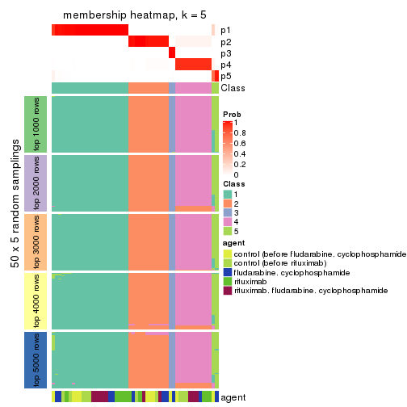
membership_heatmap(res, k = 6)

As soon as we have had the classes for columns, we can look for signatures which are significantly different between classes which can be candidate marks for certain classes. Following are the heatmaps for signatures.
Signature heatmaps where rows are scaled:
get_signatures(res, k = 2)

get_signatures(res, k = 3)
get_signatures(res, k = 4)
get_signatures(res, k = 5)
get_signatures(res, k = 6)
Signature heatmaps where rows are not scaled:
get_signatures(res, k = 2, scale_rows = FALSE)

get_signatures(res, k = 3, scale_rows = FALSE)
get_signatures(res, k = 4, scale_rows = FALSE)
get_signatures(res, k = 5, scale_rows = FALSE)
get_signatures(res, k = 6, scale_rows = FALSE)
Compare the overlap of signatures from different k:
compare_signatures(res)
get_signature() returns a data frame invisibly. TO get the list of signatures, the function
call should be assigned to a variable explicitly. In following code, if plot argument is set
to FALSE, no heatmap is plotted while only the differential analysis is performed.
# code only for demonstration
tb = get_signature(res, k = ..., plot = FALSE)
An example of the output of tb is:
#> which_row fdr mean_1 mean_2 scaled_mean_1 scaled_mean_2 km
#> 1 38 0.042760348 8.373488 9.131774 -0.5533452 0.5164555 1
#> 2 40 0.018707592 7.106213 8.469186 -0.6173731 0.5762149 1
#> 3 55 0.019134737 10.221463 11.207825 -0.6159697 0.5749050 1
#> 4 59 0.006059896 5.921854 7.869574 -0.6899429 0.6439467 1
#> 5 60 0.018055526 8.928898 10.211722 -0.6204761 0.5791110 1
#> 6 98 0.009384629 15.714769 14.887706 0.6635654 -0.6193277 2
...
The columns in tb are:
which_row: row indices corresponding to the input matrix.fdr: FDR for the differential test. mean_x: The mean value in group x.scaled_mean_x: The mean value in group x after rows are scaled.km: Row groups if k-means clustering is applied to rows.UMAP plot which shows how samples are separated.
dimension_reduction(res, k = 2, method = "UMAP")

dimension_reduction(res, k = 3, method = "UMAP")
dimension_reduction(res, k = 4, method = "UMAP")

dimension_reduction(res, k = 5, method = "UMAP")
dimension_reduction(res, k = 6, method = "UMAP")
Following heatmap shows how subgroups are split when increasing k:
collect_classes(res)
Test correlation between subgroups and known annotations. If the known annotation is numeric, one-way ANOVA test is applied, and if the known annotation is discrete, chi-squared contingency table test is applied.
test_to_known_factors(res)
#> n agent(p) k
#> ATC:skmeans 50 0.975 2
#> ATC:skmeans 50 0.917 3
#> ATC:skmeans 50 0.931 4
#> ATC:skmeans 49 0.873 5
#> ATC:skmeans 47 0.898 6
If matrix rows can be associated to genes, consider to use functional_enrichment(res,
...) to perform function enrichment for the signature genes. See this vignette for more detailed explanations.
The object with results only for a single top-value method and a single partition method can be extracted as:
res = res_list["ATC", "pam"]
# you can also extract it by
# res = res_list["ATC:pam"]
A summary of res and all the functions that can be applied to it:
res
#> A 'ConsensusPartition' object with k = 2, 3, 4, 5, 6.
#> On a matrix with 51941 rows and 50 columns.
#> Top rows (1000, 2000, 3000, 4000, 5000) are extracted by 'ATC' method.
#> Subgroups are detected by 'pam' method.
#> Performed in total 1250 partitions by row resampling.
#> Best k for subgroups seems to be 6.
#>
#> Following methods can be applied to this 'ConsensusPartition' object:
#> [1] "cola_report" "collect_classes" "collect_plots"
#> [4] "collect_stats" "colnames" "compare_signatures"
#> [7] "consensus_heatmap" "dimension_reduction" "functional_enrichment"
#> [10] "get_anno_col" "get_anno" "get_classes"
#> [13] "get_consensus" "get_matrix" "get_membership"
#> [16] "get_param" "get_signatures" "get_stats"
#> [19] "is_best_k" "is_stable_k" "membership_heatmap"
#> [22] "ncol" "nrow" "plot_ecdf"
#> [25] "rownames" "select_partition_number" "show"
#> [28] "suggest_best_k" "test_to_known_factors"
collect_plots() function collects all the plots made from res for all k (number of partitions)
into one single page to provide an easy and fast comparison between different k.
collect_plots(res)
The plots are:
k and the heatmap of
predicted classes for each k.k.k.k.All the plots in panels can be made by individual functions and they are plotted later in this section.
select_partition_number() produces several plots showing different
statistics for choosing “optimized” k. There are following statistics:
k;k, the area increased is defined as \(A_k - A_{k-1}\).The detailed explanations of these statistics can be found in the cola vignette.
Generally speaking, lower PAC score, higher mean silhouette score or higher
concordance corresponds to better partition. Rand index and Jaccard index
measure how similar the current partition is compared to partition with k-1.
If they are too similar, we won't accept k is better than k-1.
select_partition_number(res)
The numeric values for all these statistics can be obtained by get_stats().
get_stats(res)
#> k 1-PAC mean_silhouette concordance area_increased Rand Jaccard
#> 2 2 1.000 1.000 1.000 0.5074 0.493 0.493
#> 3 3 1.000 0.999 0.998 0.2124 0.892 0.781
#> 4 4 1.000 0.964 0.982 0.2279 0.856 0.627
#> 5 5 1.000 0.937 0.979 0.0246 0.958 0.832
#> 6 6 0.936 0.894 0.941 0.0405 0.964 0.841
suggest_best_k() suggests the best \(k\) based on these statistics. The rules are as follows:
suggest_best_k(res)
#> [1] 6
#> attr(,"optional")
#> [1] 2 3 4 5
There is also optional best \(k\) = 2 3 4 5 that is worth to check.
Following shows the table of the partitions (You need to click the show/hide
code output link to see it). The membership matrix (columns with name p*)
is inferred by
clue::cl_consensus()
function with the SE method. Basically the value in the membership matrix
represents the probability to belong to a certain group. The finall class
label for an item is determined with the group with highest probability it
belongs to.
In get_classes() function, the entropy is calculated from the membership
matrix and the silhouette score is calculated from the consensus matrix.
cbind(get_classes(res, k = 2), get_membership(res, k = 2))
#> class entropy silhouette p1 p2
#> GSM388593 1 0 1 1 0
#> GSM388594 1 0 1 1 0
#> GSM388595 1 0 1 1 0
#> GSM388596 1 0 1 1 0
#> GSM388597 1 0 1 1 0
#> GSM388598 2 0 1 0 1
#> GSM388599 2 0 1 0 1
#> GSM388600 2 0 1 0 1
#> GSM388601 2 0 1 0 1
#> GSM388602 2 0 1 0 1
#> GSM388623 1 0 1 1 0
#> GSM388624 1 0 1 1 0
#> GSM388625 1 0 1 1 0
#> GSM388626 1 0 1 1 0
#> GSM388627 1 0 1 1 0
#> GSM388628 2 0 1 0 1
#> GSM388629 2 0 1 0 1
#> GSM388630 2 0 1 0 1
#> GSM388631 1 0 1 1 0
#> GSM388632 2 0 1 0 1
#> GSM388603 1 0 1 1 0
#> GSM388604 1 0 1 1 0
#> GSM388605 1 0 1 1 0
#> GSM388606 1 0 1 1 0
#> GSM388607 1 0 1 1 0
#> GSM388608 2 0 1 0 1
#> GSM388609 2 0 1 0 1
#> GSM388610 2 0 1 0 1
#> GSM388611 2 0 1 0 1
#> GSM388612 2 0 1 0 1
#> GSM388583 1 0 1 1 0
#> GSM388584 1 0 1 1 0
#> GSM388585 1 0 1 1 0
#> GSM388586 1 0 1 1 0
#> GSM388587 1 0 1 1 0
#> GSM388588 2 0 1 0 1
#> GSM388589 2 0 1 0 1
#> GSM388590 2 0 1 0 1
#> GSM388591 2 0 1 0 1
#> GSM388592 2 0 1 0 1
#> GSM388613 1 0 1 1 0
#> GSM388614 1 0 1 1 0
#> GSM388615 1 0 1 1 0
#> GSM388616 1 0 1 1 0
#> GSM388617 1 0 1 1 0
#> GSM388618 2 0 1 0 1
#> GSM388619 2 0 1 0 1
#> GSM388620 2 0 1 0 1
#> GSM388621 1 0 1 1 0
#> GSM388622 2 0 1 0 1
cbind(get_classes(res, k = 3), get_membership(res, k = 3))
#> class entropy silhouette p1 p2 p3
#> GSM388593 1 0.0000 0.999 1.000 0.000 0.000
#> GSM388594 1 0.0237 0.998 0.996 0.000 0.004
#> GSM388595 1 0.0000 0.999 1.000 0.000 0.000
#> GSM388596 1 0.0237 0.998 0.996 0.000 0.004
#> GSM388597 1 0.0237 0.998 0.996 0.000 0.004
#> GSM388598 2 0.0000 1.000 0.000 1.000 0.000
#> GSM388599 2 0.0000 1.000 0.000 1.000 0.000
#> GSM388600 3 0.0237 1.000 0.000 0.004 0.996
#> GSM388601 3 0.0237 1.000 0.000 0.004 0.996
#> GSM388602 3 0.0237 1.000 0.000 0.004 0.996
#> GSM388623 1 0.0237 0.998 0.996 0.000 0.004
#> GSM388624 1 0.0237 0.998 0.996 0.000 0.004
#> GSM388625 1 0.0000 0.999 1.000 0.000 0.000
#> GSM388626 1 0.0000 0.999 1.000 0.000 0.000
#> GSM388627 1 0.0000 0.999 1.000 0.000 0.000
#> GSM388628 2 0.0000 1.000 0.000 1.000 0.000
#> GSM388629 2 0.0000 1.000 0.000 1.000 0.000
#> GSM388630 3 0.0237 1.000 0.000 0.004 0.996
#> GSM388631 1 0.0000 0.999 1.000 0.000 0.000
#> GSM388632 2 0.0000 1.000 0.000 1.000 0.000
#> GSM388603 1 0.0237 0.998 0.996 0.000 0.004
#> GSM388604 1 0.0237 0.998 0.996 0.000 0.004
#> GSM388605 1 0.0000 0.999 1.000 0.000 0.000
#> GSM388606 1 0.0000 0.999 1.000 0.000 0.000
#> GSM388607 1 0.0237 0.998 0.996 0.000 0.004
#> GSM388608 2 0.0000 1.000 0.000 1.000 0.000
#> GSM388609 2 0.0000 1.000 0.000 1.000 0.000
#> GSM388610 3 0.0237 1.000 0.000 0.004 0.996
#> GSM388611 3 0.0237 1.000 0.000 0.004 0.996
#> GSM388612 3 0.0237 1.000 0.000 0.004 0.996
#> GSM388583 1 0.0000 0.999 1.000 0.000 0.000
#> GSM388584 1 0.0000 0.999 1.000 0.000 0.000
#> GSM388585 1 0.0237 0.998 0.996 0.000 0.004
#> GSM388586 1 0.0000 0.999 1.000 0.000 0.000
#> GSM388587 1 0.0237 0.998 0.996 0.000 0.004
#> GSM388588 2 0.0000 1.000 0.000 1.000 0.000
#> GSM388589 2 0.0000 1.000 0.000 1.000 0.000
#> GSM388590 3 0.0237 1.000 0.000 0.004 0.996
#> GSM388591 3 0.0237 1.000 0.000 0.004 0.996
#> GSM388592 3 0.0237 1.000 0.000 0.004 0.996
#> GSM388613 1 0.0000 0.999 1.000 0.000 0.000
#> GSM388614 1 0.0237 0.998 0.996 0.000 0.004
#> GSM388615 1 0.0000 0.999 1.000 0.000 0.000
#> GSM388616 1 0.0000 0.999 1.000 0.000 0.000
#> GSM388617 1 0.0000 0.999 1.000 0.000 0.000
#> GSM388618 2 0.0000 1.000 0.000 1.000 0.000
#> GSM388619 2 0.0000 1.000 0.000 1.000 0.000
#> GSM388620 3 0.0237 1.000 0.000 0.004 0.996
#> GSM388621 1 0.0000 0.999 1.000 0.000 0.000
#> GSM388622 2 0.0000 1.000 0.000 1.000 0.000
cbind(get_classes(res, k = 4), get_membership(res, k = 4))
#> class entropy silhouette p1 p2 p3 p4
#> GSM388593 1 0.1211 0.970 0.960 0 0.040 0
#> GSM388594 3 0.0188 0.949 0.004 0 0.996 0
#> GSM388595 1 0.2530 0.896 0.888 0 0.112 0
#> GSM388596 3 0.0188 0.949 0.004 0 0.996 0
#> GSM388597 3 0.0188 0.949 0.004 0 0.996 0
#> GSM388598 2 0.0000 1.000 0.000 1 0.000 0
#> GSM388599 2 0.0000 1.000 0.000 1 0.000 0
#> GSM388600 4 0.0000 1.000 0.000 0 0.000 1
#> GSM388601 4 0.0000 1.000 0.000 0 0.000 1
#> GSM388602 4 0.0000 1.000 0.000 0 0.000 1
#> GSM388623 3 0.0188 0.949 0.004 0 0.996 0
#> GSM388624 3 0.0817 0.938 0.024 0 0.976 0
#> GSM388625 1 0.1211 0.970 0.960 0 0.040 0
#> GSM388626 1 0.1211 0.970 0.960 0 0.040 0
#> GSM388627 1 0.0000 0.972 1.000 0 0.000 0
#> GSM388628 2 0.0000 1.000 0.000 1 0.000 0
#> GSM388629 2 0.0000 1.000 0.000 1 0.000 0
#> GSM388630 4 0.0000 1.000 0.000 0 0.000 1
#> GSM388631 1 0.0188 0.969 0.996 0 0.004 0
#> GSM388632 2 0.0000 1.000 0.000 1 0.000 0
#> GSM388603 3 0.0188 0.949 0.004 0 0.996 0
#> GSM388604 3 0.0188 0.949 0.004 0 0.996 0
#> GSM388605 1 0.1211 0.970 0.960 0 0.040 0
#> GSM388606 1 0.1211 0.970 0.960 0 0.040 0
#> GSM388607 3 0.0921 0.935 0.028 0 0.972 0
#> GSM388608 2 0.0000 1.000 0.000 1 0.000 0
#> GSM388609 2 0.0000 1.000 0.000 1 0.000 0
#> GSM388610 4 0.0000 1.000 0.000 0 0.000 1
#> GSM388611 4 0.0000 1.000 0.000 0 0.000 1
#> GSM388612 4 0.0000 1.000 0.000 0 0.000 1
#> GSM388583 1 0.0000 0.972 1.000 0 0.000 0
#> GSM388584 1 0.0000 0.972 1.000 0 0.000 0
#> GSM388585 3 0.4888 0.266 0.412 0 0.588 0
#> GSM388586 1 0.1211 0.970 0.960 0 0.040 0
#> GSM388587 3 0.0188 0.949 0.004 0 0.996 0
#> GSM388588 2 0.0000 1.000 0.000 1 0.000 0
#> GSM388589 2 0.0000 1.000 0.000 1 0.000 0
#> GSM388590 4 0.0000 1.000 0.000 0 0.000 1
#> GSM388591 4 0.0000 1.000 0.000 0 0.000 1
#> GSM388592 4 0.0000 1.000 0.000 0 0.000 1
#> GSM388613 1 0.0000 0.972 1.000 0 0.000 0
#> GSM388614 3 0.0188 0.949 0.004 0 0.996 0
#> GSM388615 1 0.0000 0.972 1.000 0 0.000 0
#> GSM388616 1 0.0000 0.972 1.000 0 0.000 0
#> GSM388617 1 0.1211 0.970 0.960 0 0.040 0
#> GSM388618 2 0.0000 1.000 0.000 1 0.000 0
#> GSM388619 2 0.0000 1.000 0.000 1 0.000 0
#> GSM388620 4 0.0000 1.000 0.000 0 0.000 1
#> GSM388621 1 0.0188 0.969 0.996 0 0.004 0
#> GSM388622 2 0.0000 1.000 0.000 1 0.000 0
cbind(get_classes(res, k = 5), get_membership(res, k = 5))
#> class entropy silhouette p1 p2 p3 p4 p5
#> GSM388593 1 0.0000 0.984 1.000 0 0.000 0 0
#> GSM388594 3 0.0000 0.853 0.000 0 1.000 0 0
#> GSM388595 1 0.0404 0.972 0.988 0 0.012 0 0
#> GSM388596 3 0.0000 0.853 0.000 0 1.000 0 0
#> GSM388597 3 0.0000 0.853 0.000 0 1.000 0 0
#> GSM388598 2 0.0000 1.000 0.000 1 0.000 0 0
#> GSM388599 2 0.0000 1.000 0.000 1 0.000 0 0
#> GSM388600 4 0.0000 1.000 0.000 0 0.000 1 0
#> GSM388601 4 0.0000 1.000 0.000 0 0.000 1 0
#> GSM388602 4 0.0000 1.000 0.000 0 0.000 1 0
#> GSM388623 3 0.0000 0.853 0.000 0 1.000 0 0
#> GSM388624 3 0.4161 0.385 0.392 0 0.608 0 0
#> GSM388625 1 0.0000 0.984 1.000 0 0.000 0 0
#> GSM388626 1 0.0000 0.984 1.000 0 0.000 0 0
#> GSM388627 1 0.0000 0.984 1.000 0 0.000 0 0
#> GSM388628 2 0.0000 1.000 0.000 1 0.000 0 0
#> GSM388629 2 0.0000 1.000 0.000 1 0.000 0 0
#> GSM388630 4 0.0000 1.000 0.000 0 0.000 1 0
#> GSM388631 5 0.0000 1.000 0.000 0 0.000 0 1
#> GSM388632 2 0.0000 1.000 0.000 1 0.000 0 0
#> GSM388603 3 0.0000 0.853 0.000 0 1.000 0 0
#> GSM388604 3 0.0000 0.853 0.000 0 1.000 0 0
#> GSM388605 1 0.0000 0.984 1.000 0 0.000 0 0
#> GSM388606 1 0.0000 0.984 1.000 0 0.000 0 0
#> GSM388607 3 0.4305 0.118 0.488 0 0.512 0 0
#> GSM388608 2 0.0000 1.000 0.000 1 0.000 0 0
#> GSM388609 2 0.0000 1.000 0.000 1 0.000 0 0
#> GSM388610 4 0.0000 1.000 0.000 0 0.000 1 0
#> GSM388611 4 0.0000 1.000 0.000 0 0.000 1 0
#> GSM388612 4 0.0000 1.000 0.000 0 0.000 1 0
#> GSM388583 1 0.0000 0.984 1.000 0 0.000 0 0
#> GSM388584 1 0.0000 0.984 1.000 0 0.000 0 0
#> GSM388585 1 0.2929 0.756 0.820 0 0.180 0 0
#> GSM388586 1 0.0000 0.984 1.000 0 0.000 0 0
#> GSM388587 3 0.0000 0.853 0.000 0 1.000 0 0
#> GSM388588 2 0.0000 1.000 0.000 1 0.000 0 0
#> GSM388589 2 0.0000 1.000 0.000 1 0.000 0 0
#> GSM388590 4 0.0000 1.000 0.000 0 0.000 1 0
#> GSM388591 4 0.0000 1.000 0.000 0 0.000 1 0
#> GSM388592 4 0.0000 1.000 0.000 0 0.000 1 0
#> GSM388613 1 0.0000 0.984 1.000 0 0.000 0 0
#> GSM388614 3 0.0000 0.853 0.000 0 1.000 0 0
#> GSM388615 1 0.0000 0.984 1.000 0 0.000 0 0
#> GSM388616 1 0.0000 0.984 1.000 0 0.000 0 0
#> GSM388617 1 0.0000 0.984 1.000 0 0.000 0 0
#> GSM388618 2 0.0000 1.000 0.000 1 0.000 0 0
#> GSM388619 2 0.0000 1.000 0.000 1 0.000 0 0
#> GSM388620 4 0.0000 1.000 0.000 0 0.000 1 0
#> GSM388621 5 0.0000 1.000 0.000 0 0.000 0 1
#> GSM388622 2 0.0000 1.000 0.000 1 0.000 0 0
cbind(get_classes(res, k = 6), get_membership(res, k = 6))
#> class entropy silhouette p1 p2 p3 p4 p5 p6
#> GSM388593 1 0.0000 0.920 1.000 0 0.000 0 0.000 0
#> GSM388594 3 0.0000 0.838 0.000 0 1.000 0 0.000 0
#> GSM388595 1 0.0146 0.917 0.996 0 0.000 0 0.004 0
#> GSM388596 3 0.3868 -0.243 0.000 0 0.504 0 0.496 0
#> GSM388597 5 0.2793 0.719 0.000 0 0.200 0 0.800 0
#> GSM388598 2 0.0000 1.000 0.000 1 0.000 0 0.000 0
#> GSM388599 2 0.0000 1.000 0.000 1 0.000 0 0.000 0
#> GSM388600 4 0.0000 1.000 0.000 0 0.000 1 0.000 0
#> GSM388601 4 0.0000 1.000 0.000 0 0.000 1 0.000 0
#> GSM388602 4 0.0000 1.000 0.000 0 0.000 1 0.000 0
#> GSM388623 3 0.0000 0.838 0.000 0 1.000 0 0.000 0
#> GSM388624 5 0.3508 0.732 0.132 0 0.068 0 0.800 0
#> GSM388625 1 0.0000 0.920 1.000 0 0.000 0 0.000 0
#> GSM388626 1 0.0000 0.920 1.000 0 0.000 0 0.000 0
#> GSM388627 1 0.2793 0.847 0.800 0 0.000 0 0.200 0
#> GSM388628 2 0.0000 1.000 0.000 1 0.000 0 0.000 0
#> GSM388629 2 0.0000 1.000 0.000 1 0.000 0 0.000 0
#> GSM388630 4 0.0000 1.000 0.000 0 0.000 1 0.000 0
#> GSM388631 6 0.0000 1.000 0.000 0 0.000 0 0.000 1
#> GSM388632 2 0.0000 1.000 0.000 1 0.000 0 0.000 0
#> GSM388603 3 0.0000 0.838 0.000 0 1.000 0 0.000 0
#> GSM388604 3 0.0000 0.838 0.000 0 1.000 0 0.000 0
#> GSM388605 1 0.0000 0.920 1.000 0 0.000 0 0.000 0
#> GSM388606 1 0.0000 0.920 1.000 0 0.000 0 0.000 0
#> GSM388607 5 0.3043 0.695 0.200 0 0.008 0 0.792 0
#> GSM388608 2 0.0000 1.000 0.000 1 0.000 0 0.000 0
#> GSM388609 2 0.0000 1.000 0.000 1 0.000 0 0.000 0
#> GSM388610 4 0.0000 1.000 0.000 0 0.000 1 0.000 0
#> GSM388611 4 0.0000 1.000 0.000 0 0.000 1 0.000 0
#> GSM388612 4 0.0000 1.000 0.000 0 0.000 1 0.000 0
#> GSM388583 1 0.0458 0.916 0.984 0 0.000 0 0.016 0
#> GSM388584 1 0.2793 0.847 0.800 0 0.000 0 0.200 0
#> GSM388585 5 0.4461 0.468 0.404 0 0.032 0 0.564 0
#> GSM388586 1 0.0000 0.920 1.000 0 0.000 0 0.000 0
#> GSM388587 5 0.2793 0.719 0.000 0 0.200 0 0.800 0
#> GSM388588 2 0.0000 1.000 0.000 1 0.000 0 0.000 0
#> GSM388589 2 0.0000 1.000 0.000 1 0.000 0 0.000 0
#> GSM388590 4 0.0000 1.000 0.000 0 0.000 1 0.000 0
#> GSM388591 4 0.0000 1.000 0.000 0 0.000 1 0.000 0
#> GSM388592 4 0.0000 1.000 0.000 0 0.000 1 0.000 0
#> GSM388613 1 0.2527 0.862 0.832 0 0.000 0 0.168 0
#> GSM388614 5 0.2793 0.719 0.000 0 0.200 0 0.800 0
#> GSM388615 1 0.2793 0.847 0.800 0 0.000 0 0.200 0
#> GSM388616 1 0.2793 0.847 0.800 0 0.000 0 0.200 0
#> GSM388617 1 0.0000 0.920 1.000 0 0.000 0 0.000 0
#> GSM388618 2 0.0000 1.000 0.000 1 0.000 0 0.000 0
#> GSM388619 2 0.0000 1.000 0.000 1 0.000 0 0.000 0
#> GSM388620 4 0.0000 1.000 0.000 0 0.000 1 0.000 0
#> GSM388621 6 0.0000 1.000 0.000 0 0.000 0 0.000 1
#> GSM388622 2 0.0000 1.000 0.000 1 0.000 0 0.000 0
Heatmaps for the consensus matrix. It visualizes the probability of two samples to be in a same group.
consensus_heatmap(res, k = 2)
consensus_heatmap(res, k = 3)
consensus_heatmap(res, k = 4)
consensus_heatmap(res, k = 5)
consensus_heatmap(res, k = 6)
Heatmaps for the membership of samples in all partitions to see how consistent they are:
membership_heatmap(res, k = 2)

membership_heatmap(res, k = 3)
membership_heatmap(res, k = 4)
membership_heatmap(res, k = 5)
membership_heatmap(res, k = 6)
As soon as we have had the classes for columns, we can look for signatures which are significantly different between classes which can be candidate marks for certain classes. Following are the heatmaps for signatures.
Signature heatmaps where rows are scaled:
get_signatures(res, k = 2)

get_signatures(res, k = 3)
get_signatures(res, k = 4)
get_signatures(res, k = 5)
get_signatures(res, k = 6)
Signature heatmaps where rows are not scaled:
get_signatures(res, k = 2, scale_rows = FALSE)

get_signatures(res, k = 3, scale_rows = FALSE)
get_signatures(res, k = 4, scale_rows = FALSE)
get_signatures(res, k = 5, scale_rows = FALSE)
get_signatures(res, k = 6, scale_rows = FALSE)
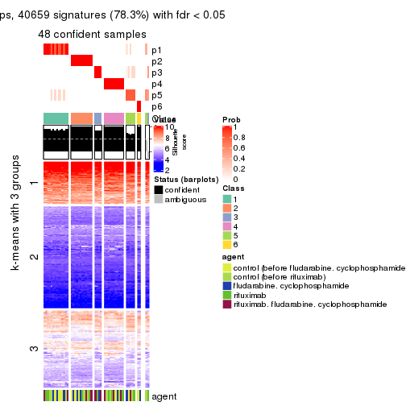
Compare the overlap of signatures from different k:
compare_signatures(res)
get_signature() returns a data frame invisibly. TO get the list of signatures, the function
call should be assigned to a variable explicitly. In following code, if plot argument is set
to FALSE, no heatmap is plotted while only the differential analysis is performed.
# code only for demonstration
tb = get_signature(res, k = ..., plot = FALSE)
An example of the output of tb is:
#> which_row fdr mean_1 mean_2 scaled_mean_1 scaled_mean_2 km
#> 1 38 0.042760348 8.373488 9.131774 -0.5533452 0.5164555 1
#> 2 40 0.018707592 7.106213 8.469186 -0.6173731 0.5762149 1
#> 3 55 0.019134737 10.221463 11.207825 -0.6159697 0.5749050 1
#> 4 59 0.006059896 5.921854 7.869574 -0.6899429 0.6439467 1
#> 5 60 0.018055526 8.928898 10.211722 -0.6204761 0.5791110 1
#> 6 98 0.009384629 15.714769 14.887706 0.6635654 -0.6193277 2
...
The columns in tb are:
which_row: row indices corresponding to the input matrix.fdr: FDR for the differential test. mean_x: The mean value in group x.scaled_mean_x: The mean value in group x after rows are scaled.km: Row groups if k-means clustering is applied to rows.UMAP plot which shows how samples are separated.
dimension_reduction(res, k = 2, method = "UMAP")

dimension_reduction(res, k = 3, method = "UMAP")
dimension_reduction(res, k = 4, method = "UMAP")
dimension_reduction(res, k = 5, method = "UMAP")
dimension_reduction(res, k = 6, method = "UMAP")
Following heatmap shows how subgroups are split when increasing k:
collect_classes(res)
Test correlation between subgroups and known annotations. If the known annotation is numeric, one-way ANOVA test is applied, and if the known annotation is discrete, chi-squared contingency table test is applied.
test_to_known_factors(res)
#> n agent(p) k
#> ATC:pam 50 0.975 2
#> ATC:pam 50 0.940 3
#> ATC:pam 49 0.878 4
#> ATC:pam 48 0.919 5
#> ATC:pam 48 0.970 6
If matrix rows can be associated to genes, consider to use functional_enrichment(res,
...) to perform function enrichment for the signature genes. See this vignette for more detailed explanations.
The object with results only for a single top-value method and a single partition method can be extracted as:
res = res_list["ATC", "mclust"]
# you can also extract it by
# res = res_list["ATC:mclust"]
A summary of res and all the functions that can be applied to it:
res
#> A 'ConsensusPartition' object with k = 2, 3, 4, 5, 6.
#> On a matrix with 51941 rows and 50 columns.
#> Top rows (1000, 2000, 3000, 4000, 5000) are extracted by 'ATC' method.
#> Subgroups are detected by 'mclust' method.
#> Performed in total 1250 partitions by row resampling.
#> Best k for subgroups seems to be 4.
#>
#> Following methods can be applied to this 'ConsensusPartition' object:
#> [1] "cola_report" "collect_classes" "collect_plots"
#> [4] "collect_stats" "colnames" "compare_signatures"
#> [7] "consensus_heatmap" "dimension_reduction" "functional_enrichment"
#> [10] "get_anno_col" "get_anno" "get_classes"
#> [13] "get_consensus" "get_matrix" "get_membership"
#> [16] "get_param" "get_signatures" "get_stats"
#> [19] "is_best_k" "is_stable_k" "membership_heatmap"
#> [22] "ncol" "nrow" "plot_ecdf"
#> [25] "rownames" "select_partition_number" "show"
#> [28] "suggest_best_k" "test_to_known_factors"
collect_plots() function collects all the plots made from res for all k (number of partitions)
into one single page to provide an easy and fast comparison between different k.
collect_plots(res)
The plots are:
k and the heatmap of
predicted classes for each k.k.k.k.All the plots in panels can be made by individual functions and they are plotted later in this section.
select_partition_number() produces several plots showing different
statistics for choosing “optimized” k. There are following statistics:
k;k, the area increased is defined as \(A_k - A_{k-1}\).The detailed explanations of these statistics can be found in the cola vignette.
Generally speaking, lower PAC score, higher mean silhouette score or higher
concordance corresponds to better partition. Rand index and Jaccard index
measure how similar the current partition is compared to partition with k-1.
If they are too similar, we won't accept k is better than k-1.
select_partition_number(res)
The numeric values for all these statistics can be obtained by get_stats().
get_stats(res)
#> k 1-PAC mean_silhouette concordance area_increased Rand Jaccard
#> 2 2 0.617 0.893 0.915 0.4723 0.490 0.490
#> 3 3 1.000 0.950 0.982 0.3243 0.814 0.649
#> 4 4 1.000 1.000 1.000 0.0485 0.959 0.894
#> 5 5 0.895 0.830 0.922 0.1527 0.889 0.678
#> 6 6 0.874 0.803 0.897 0.0623 0.922 0.690
suggest_best_k() suggests the best \(k\) based on these statistics. The rules are as follows:
suggest_best_k(res)
#> [1] 4
#> attr(,"optional")
#> [1] 3
There is also optional best \(k\) = 3 that is worth to check.
Following shows the table of the partitions (You need to click the show/hide
code output link to see it). The membership matrix (columns with name p*)
is inferred by
clue::cl_consensus()
function with the SE method. Basically the value in the membership matrix
represents the probability to belong to a certain group. The finall class
label for an item is determined with the group with highest probability it
belongs to.
In get_classes() function, the entropy is calculated from the membership
matrix and the silhouette score is calculated from the consensus matrix.
cbind(get_classes(res, k = 2), get_membership(res, k = 2))
#> class entropy silhouette p1 p2
#> GSM388593 1 0.000 1.000 1.000 0.000
#> GSM388594 1 0.000 1.000 1.000 0.000
#> GSM388595 1 0.000 1.000 1.000 0.000
#> GSM388596 1 0.000 1.000 1.000 0.000
#> GSM388597 1 0.000 1.000 1.000 0.000
#> GSM388598 2 0.844 0.787 0.272 0.728
#> GSM388599 2 0.844 0.787 0.272 0.728
#> GSM388600 2 0.242 0.816 0.040 0.960
#> GSM388601 2 0.242 0.816 0.040 0.960
#> GSM388602 2 0.242 0.816 0.040 0.960
#> GSM388623 1 0.000 1.000 1.000 0.000
#> GSM388624 1 0.000 1.000 1.000 0.000
#> GSM388625 1 0.000 1.000 1.000 0.000
#> GSM388626 1 0.000 1.000 1.000 0.000
#> GSM388627 1 0.000 1.000 1.000 0.000
#> GSM388628 2 0.844 0.787 0.272 0.728
#> GSM388629 2 0.844 0.787 0.272 0.728
#> GSM388630 2 0.242 0.816 0.040 0.960
#> GSM388631 2 0.844 0.622 0.272 0.728
#> GSM388632 2 0.844 0.787 0.272 0.728
#> GSM388603 1 0.000 1.000 1.000 0.000
#> GSM388604 1 0.000 1.000 1.000 0.000
#> GSM388605 1 0.000 1.000 1.000 0.000
#> GSM388606 1 0.000 1.000 1.000 0.000
#> GSM388607 1 0.000 1.000 1.000 0.000
#> GSM388608 2 0.844 0.787 0.272 0.728
#> GSM388609 2 0.844 0.787 0.272 0.728
#> GSM388610 2 0.242 0.816 0.040 0.960
#> GSM388611 2 0.242 0.816 0.040 0.960
#> GSM388612 2 0.242 0.816 0.040 0.960
#> GSM388583 1 0.000 1.000 1.000 0.000
#> GSM388584 1 0.000 1.000 1.000 0.000
#> GSM388585 1 0.000 1.000 1.000 0.000
#> GSM388586 1 0.000 1.000 1.000 0.000
#> GSM388587 1 0.000 1.000 1.000 0.000
#> GSM388588 2 0.844 0.787 0.272 0.728
#> GSM388589 2 0.844 0.787 0.272 0.728
#> GSM388590 2 0.242 0.816 0.040 0.960
#> GSM388591 2 0.242 0.816 0.040 0.960
#> GSM388592 2 0.242 0.816 0.040 0.960
#> GSM388613 1 0.000 1.000 1.000 0.000
#> GSM388614 1 0.000 1.000 1.000 0.000
#> GSM388615 1 0.000 1.000 1.000 0.000
#> GSM388616 1 0.000 1.000 1.000 0.000
#> GSM388617 1 0.000 1.000 1.000 0.000
#> GSM388618 2 0.844 0.787 0.272 0.728
#> GSM388619 2 0.844 0.787 0.272 0.728
#> GSM388620 2 0.242 0.816 0.040 0.960
#> GSM388621 2 0.844 0.622 0.272 0.728
#> GSM388622 2 0.844 0.787 0.272 0.728
cbind(get_classes(res, k = 3), get_membership(res, k = 3))
#> class entropy silhouette p1 p2 p3
#> GSM388593 1 0.000 0.964 1.000 0 0.000
#> GSM388594 1 0.000 0.964 1.000 0 0.000
#> GSM388595 1 0.000 0.964 1.000 0 0.000
#> GSM388596 1 0.000 0.964 1.000 0 0.000
#> GSM388597 1 0.000 0.964 1.000 0 0.000
#> GSM388598 2 0.000 1.000 0.000 1 0.000
#> GSM388599 2 0.000 1.000 0.000 1 0.000
#> GSM388600 3 0.000 1.000 0.000 0 1.000
#> GSM388601 3 0.000 1.000 0.000 0 1.000
#> GSM388602 3 0.000 1.000 0.000 0 1.000
#> GSM388623 1 0.000 0.964 1.000 0 0.000
#> GSM388624 1 0.000 0.964 1.000 0 0.000
#> GSM388625 1 0.000 0.964 1.000 0 0.000
#> GSM388626 1 0.000 0.964 1.000 0 0.000
#> GSM388627 1 0.000 0.964 1.000 0 0.000
#> GSM388628 2 0.000 1.000 0.000 1 0.000
#> GSM388629 2 0.000 1.000 0.000 1 0.000
#> GSM388630 3 0.000 1.000 0.000 0 1.000
#> GSM388631 1 0.627 0.194 0.544 0 0.456
#> GSM388632 2 0.000 1.000 0.000 1 0.000
#> GSM388603 1 0.000 0.964 1.000 0 0.000
#> GSM388604 1 0.000 0.964 1.000 0 0.000
#> GSM388605 1 0.000 0.964 1.000 0 0.000
#> GSM388606 1 0.000 0.964 1.000 0 0.000
#> GSM388607 1 0.000 0.964 1.000 0 0.000
#> GSM388608 2 0.000 1.000 0.000 1 0.000
#> GSM388609 2 0.000 1.000 0.000 1 0.000
#> GSM388610 3 0.000 1.000 0.000 0 1.000
#> GSM388611 3 0.000 1.000 0.000 0 1.000
#> GSM388612 3 0.000 1.000 0.000 0 1.000
#> GSM388583 1 0.000 0.964 1.000 0 0.000
#> GSM388584 1 0.000 0.964 1.000 0 0.000
#> GSM388585 1 0.000 0.964 1.000 0 0.000
#> GSM388586 1 0.000 0.964 1.000 0 0.000
#> GSM388587 1 0.000 0.964 1.000 0 0.000
#> GSM388588 2 0.000 1.000 0.000 1 0.000
#> GSM388589 2 0.000 1.000 0.000 1 0.000
#> GSM388590 3 0.000 1.000 0.000 0 1.000
#> GSM388591 3 0.000 1.000 0.000 0 1.000
#> GSM388592 3 0.000 1.000 0.000 0 1.000
#> GSM388613 1 0.000 0.964 1.000 0 0.000
#> GSM388614 1 0.000 0.964 1.000 0 0.000
#> GSM388615 1 0.000 0.964 1.000 0 0.000
#> GSM388616 1 0.000 0.964 1.000 0 0.000
#> GSM388617 1 0.000 0.964 1.000 0 0.000
#> GSM388618 2 0.000 1.000 0.000 1 0.000
#> GSM388619 2 0.000 1.000 0.000 1 0.000
#> GSM388620 3 0.000 1.000 0.000 0 1.000
#> GSM388621 1 0.627 0.194 0.544 0 0.456
#> GSM388622 2 0.000 1.000 0.000 1 0.000
cbind(get_classes(res, k = 4), get_membership(res, k = 4))
#> class entropy silhouette p1 p2 p3 p4
#> GSM388593 1 0 1 1 0 0 0
#> GSM388594 1 0 1 1 0 0 0
#> GSM388595 1 0 1 1 0 0 0
#> GSM388596 1 0 1 1 0 0 0
#> GSM388597 1 0 1 1 0 0 0
#> GSM388598 2 0 1 0 1 0 0
#> GSM388599 2 0 1 0 1 0 0
#> GSM388600 4 0 1 0 0 0 1
#> GSM388601 4 0 1 0 0 0 1
#> GSM388602 4 0 1 0 0 0 1
#> GSM388623 1 0 1 1 0 0 0
#> GSM388624 1 0 1 1 0 0 0
#> GSM388625 1 0 1 1 0 0 0
#> GSM388626 1 0 1 1 0 0 0
#> GSM388627 1 0 1 1 0 0 0
#> GSM388628 2 0 1 0 1 0 0
#> GSM388629 2 0 1 0 1 0 0
#> GSM388630 4 0 1 0 0 0 1
#> GSM388631 3 0 1 0 0 1 0
#> GSM388632 2 0 1 0 1 0 0
#> GSM388603 1 0 1 1 0 0 0
#> GSM388604 1 0 1 1 0 0 0
#> GSM388605 1 0 1 1 0 0 0
#> GSM388606 1 0 1 1 0 0 0
#> GSM388607 1 0 1 1 0 0 0
#> GSM388608 2 0 1 0 1 0 0
#> GSM388609 2 0 1 0 1 0 0
#> GSM388610 4 0 1 0 0 0 1
#> GSM388611 4 0 1 0 0 0 1
#> GSM388612 4 0 1 0 0 0 1
#> GSM388583 1 0 1 1 0 0 0
#> GSM388584 1 0 1 1 0 0 0
#> GSM388585 1 0 1 1 0 0 0
#> GSM388586 1 0 1 1 0 0 0
#> GSM388587 1 0 1 1 0 0 0
#> GSM388588 2 0 1 0 1 0 0
#> GSM388589 2 0 1 0 1 0 0
#> GSM388590 4 0 1 0 0 0 1
#> GSM388591 4 0 1 0 0 0 1
#> GSM388592 4 0 1 0 0 0 1
#> GSM388613 1 0 1 1 0 0 0
#> GSM388614 1 0 1 1 0 0 0
#> GSM388615 1 0 1 1 0 0 0
#> GSM388616 1 0 1 1 0 0 0
#> GSM388617 1 0 1 1 0 0 0
#> GSM388618 2 0 1 0 1 0 0
#> GSM388619 2 0 1 0 1 0 0
#> GSM388620 4 0 1 0 0 0 1
#> GSM388621 3 0 1 0 0 1 0
#> GSM388622 2 0 1 0 1 0 0
cbind(get_classes(res, k = 5), get_membership(res, k = 5))
#> class entropy silhouette p1 p2 p3 p4 p5
#> GSM388593 3 0.3895 0.644 0.320 0 0.680 0 0
#> GSM388594 3 0.0000 0.790 0.000 0 1.000 0 0
#> GSM388595 3 0.3612 0.700 0.268 0 0.732 0 0
#> GSM388596 3 0.0794 0.805 0.028 0 0.972 0 0
#> GSM388597 3 0.1341 0.817 0.056 0 0.944 0 0
#> GSM388598 2 0.0000 1.000 0.000 1 0.000 0 0
#> GSM388599 2 0.0000 1.000 0.000 1 0.000 0 0
#> GSM388600 4 0.0000 1.000 0.000 0 0.000 1 0
#> GSM388601 4 0.0000 1.000 0.000 0 0.000 1 0
#> GSM388602 4 0.0000 1.000 0.000 0 0.000 1 0
#> GSM388623 3 0.0000 0.790 0.000 0 1.000 0 0
#> GSM388624 3 0.2516 0.789 0.140 0 0.860 0 0
#> GSM388625 1 0.1121 0.645 0.956 0 0.044 0 0
#> GSM388626 1 0.0000 0.680 1.000 0 0.000 0 0
#> GSM388627 1 0.0000 0.680 1.000 0 0.000 0 0
#> GSM388628 2 0.0000 1.000 0.000 1 0.000 0 0
#> GSM388629 2 0.0000 1.000 0.000 1 0.000 0 0
#> GSM388630 4 0.0000 1.000 0.000 0 0.000 1 0
#> GSM388631 5 0.0000 1.000 0.000 0 0.000 0 1
#> GSM388632 2 0.0000 1.000 0.000 1 0.000 0 0
#> GSM388603 3 0.0510 0.801 0.016 0 0.984 0 0
#> GSM388604 3 0.0794 0.805 0.028 0 0.972 0 0
#> GSM388605 3 0.4150 0.487 0.388 0 0.612 0 0
#> GSM388606 3 0.3876 0.649 0.316 0 0.684 0 0
#> GSM388607 3 0.1965 0.815 0.096 0 0.904 0 0
#> GSM388608 2 0.0000 1.000 0.000 1 0.000 0 0
#> GSM388609 2 0.0000 1.000 0.000 1 0.000 0 0
#> GSM388610 4 0.0000 1.000 0.000 0 0.000 1 0
#> GSM388611 4 0.0000 1.000 0.000 0 0.000 1 0
#> GSM388612 4 0.0000 1.000 0.000 0 0.000 1 0
#> GSM388583 1 0.4235 0.175 0.576 0 0.424 0 0
#> GSM388584 1 0.4235 0.175 0.576 0 0.424 0 0
#> GSM388585 3 0.1732 0.818 0.080 0 0.920 0 0
#> GSM388586 3 0.3895 0.644 0.320 0 0.680 0 0
#> GSM388587 3 0.1341 0.817 0.056 0 0.944 0 0
#> GSM388588 2 0.0000 1.000 0.000 1 0.000 0 0
#> GSM388589 2 0.0000 1.000 0.000 1 0.000 0 0
#> GSM388590 4 0.0000 1.000 0.000 0 0.000 1 0
#> GSM388591 4 0.0000 1.000 0.000 0 0.000 1 0
#> GSM388592 4 0.0000 1.000 0.000 0 0.000 1 0
#> GSM388613 1 0.4235 0.175 0.576 0 0.424 0 0
#> GSM388614 3 0.1341 0.817 0.056 0 0.944 0 0
#> GSM388615 1 0.0000 0.680 1.000 0 0.000 0 0
#> GSM388616 1 0.0000 0.680 1.000 0 0.000 0 0
#> GSM388617 3 0.3895 0.644 0.320 0 0.680 0 0
#> GSM388618 2 0.0000 1.000 0.000 1 0.000 0 0
#> GSM388619 2 0.0000 1.000 0.000 1 0.000 0 0
#> GSM388620 4 0.0000 1.000 0.000 0 0.000 1 0
#> GSM388621 5 0.0000 1.000 0.000 0 0.000 0 1
#> GSM388622 2 0.0000 1.000 0.000 1 0.000 0 0
cbind(get_classes(res, k = 6), get_membership(res, k = 6))
#> class entropy silhouette p1 p2 p3 p4 p5 p6
#> GSM388593 3 0.0146 0.698 0.004 0 0.996 0 0.000 0
#> GSM388594 5 0.2135 0.997 0.000 0 0.128 0 0.872 0
#> GSM388595 3 0.0000 0.699 0.000 0 1.000 0 0.000 0
#> GSM388596 5 0.2178 0.995 0.000 0 0.132 0 0.868 0
#> GSM388597 3 0.4881 0.587 0.136 0 0.656 0 0.208 0
#> GSM388598 2 0.0000 1.000 0.000 1 0.000 0 0.000 0
#> GSM388599 2 0.0000 1.000 0.000 1 0.000 0 0.000 0
#> GSM388600 4 0.0000 1.000 0.000 0 0.000 1 0.000 0
#> GSM388601 4 0.0000 1.000 0.000 0 0.000 1 0.000 0
#> GSM388602 4 0.0000 1.000 0.000 0 0.000 1 0.000 0
#> GSM388623 5 0.2135 0.997 0.000 0 0.128 0 0.872 0
#> GSM388624 3 0.4200 0.613 0.120 0 0.740 0 0.140 0
#> GSM388625 1 0.4089 0.228 0.524 0 0.468 0 0.008 0
#> GSM388626 3 0.4097 -0.381 0.488 0 0.504 0 0.008 0
#> GSM388627 1 0.2219 0.664 0.864 0 0.136 0 0.000 0
#> GSM388628 2 0.0000 1.000 0.000 1 0.000 0 0.000 0
#> GSM388629 2 0.0000 1.000 0.000 1 0.000 0 0.000 0
#> GSM388630 4 0.0000 1.000 0.000 0 0.000 1 0.000 0
#> GSM388631 6 0.0000 1.000 0.000 0 0.000 0 0.000 1
#> GSM388632 2 0.0000 1.000 0.000 1 0.000 0 0.000 0
#> GSM388603 5 0.2135 0.997 0.000 0 0.128 0 0.872 0
#> GSM388604 5 0.2178 0.995 0.000 0 0.132 0 0.868 0
#> GSM388605 3 0.0146 0.698 0.004 0 0.996 0 0.000 0
#> GSM388606 3 0.1141 0.694 0.000 0 0.948 0 0.052 0
#> GSM388607 3 0.1387 0.689 0.000 0 0.932 0 0.068 0
#> GSM388608 2 0.0000 1.000 0.000 1 0.000 0 0.000 0
#> GSM388609 2 0.0000 1.000 0.000 1 0.000 0 0.000 0
#> GSM388610 4 0.0000 1.000 0.000 0 0.000 1 0.000 0
#> GSM388611 4 0.0000 1.000 0.000 0 0.000 1 0.000 0
#> GSM388612 4 0.0000 1.000 0.000 0 0.000 1 0.000 0
#> GSM388583 3 0.3843 -0.467 0.452 0 0.548 0 0.000 0
#> GSM388584 1 0.3860 0.489 0.528 0 0.472 0 0.000 0
#> GSM388585 3 0.3023 0.570 0.000 0 0.768 0 0.232 0
#> GSM388586 3 0.0146 0.698 0.004 0 0.996 0 0.000 0
#> GSM388587 3 0.4881 0.587 0.136 0 0.656 0 0.208 0
#> GSM388588 2 0.0000 1.000 0.000 1 0.000 0 0.000 0
#> GSM388589 2 0.0000 1.000 0.000 1 0.000 0 0.000 0
#> GSM388590 4 0.0000 1.000 0.000 0 0.000 1 0.000 0
#> GSM388591 4 0.0000 1.000 0.000 0 0.000 1 0.000 0
#> GSM388592 4 0.0000 1.000 0.000 0 0.000 1 0.000 0
#> GSM388613 1 0.3868 0.465 0.508 0 0.492 0 0.000 0
#> GSM388614 3 0.4906 0.584 0.136 0 0.652 0 0.212 0
#> GSM388615 1 0.2730 0.691 0.808 0 0.192 0 0.000 0
#> GSM388616 1 0.2219 0.664 0.864 0 0.136 0 0.000 0
#> GSM388617 3 0.0146 0.698 0.004 0 0.996 0 0.000 0
#> GSM388618 2 0.0000 1.000 0.000 1 0.000 0 0.000 0
#> GSM388619 2 0.0000 1.000 0.000 1 0.000 0 0.000 0
#> GSM388620 4 0.0000 1.000 0.000 0 0.000 1 0.000 0
#> GSM388621 6 0.0000 1.000 0.000 0 0.000 0 0.000 1
#> GSM388622 2 0.0000 1.000 0.000 1 0.000 0 0.000 0
Heatmaps for the consensus matrix. It visualizes the probability of two samples to be in a same group.
consensus_heatmap(res, k = 2)
consensus_heatmap(res, k = 3)
consensus_heatmap(res, k = 4)
consensus_heatmap(res, k = 5)
consensus_heatmap(res, k = 6)
Heatmaps for the membership of samples in all partitions to see how consistent they are:
membership_heatmap(res, k = 2)

membership_heatmap(res, k = 3)
membership_heatmap(res, k = 4)
membership_heatmap(res, k = 5)
membership_heatmap(res, k = 6)
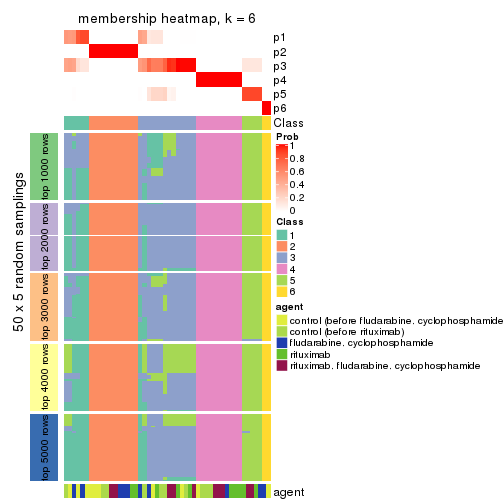
As soon as we have had the classes for columns, we can look for signatures which are significantly different between classes which can be candidate marks for certain classes. Following are the heatmaps for signatures.
Signature heatmaps where rows are scaled:
get_signatures(res, k = 2)
get_signatures(res, k = 3)
get_signatures(res, k = 4)
get_signatures(res, k = 5)
get_signatures(res, k = 6)
Signature heatmaps where rows are not scaled:
get_signatures(res, k = 2, scale_rows = FALSE)
get_signatures(res, k = 3, scale_rows = FALSE)
get_signatures(res, k = 4, scale_rows = FALSE)
get_signatures(res, k = 5, scale_rows = FALSE)
get_signatures(res, k = 6, scale_rows = FALSE)
Compare the overlap of signatures from different k:
compare_signatures(res)
get_signature() returns a data frame invisibly. TO get the list of signatures, the function
call should be assigned to a variable explicitly. In following code, if plot argument is set
to FALSE, no heatmap is plotted while only the differential analysis is performed.
# code only for demonstration
tb = get_signature(res, k = ..., plot = FALSE)
An example of the output of tb is:
#> which_row fdr mean_1 mean_2 scaled_mean_1 scaled_mean_2 km
#> 1 38 0.042760348 8.373488 9.131774 -0.5533452 0.5164555 1
#> 2 40 0.018707592 7.106213 8.469186 -0.6173731 0.5762149 1
#> 3 55 0.019134737 10.221463 11.207825 -0.6159697 0.5749050 1
#> 4 59 0.006059896 5.921854 7.869574 -0.6899429 0.6439467 1
#> 5 60 0.018055526 8.928898 10.211722 -0.6204761 0.5791110 1
#> 6 98 0.009384629 15.714769 14.887706 0.6635654 -0.6193277 2
...
The columns in tb are:
which_row: row indices corresponding to the input matrix.fdr: FDR for the differential test. mean_x: The mean value in group x.scaled_mean_x: The mean value in group x after rows are scaled.km: Row groups if k-means clustering is applied to rows.UMAP plot which shows how samples are separated.
dimension_reduction(res, k = 2, method = "UMAP")
dimension_reduction(res, k = 3, method = "UMAP")
dimension_reduction(res, k = 4, method = "UMAP")
dimension_reduction(res, k = 5, method = "UMAP")

dimension_reduction(res, k = 6, method = "UMAP")
Following heatmap shows how subgroups are split when increasing k:
collect_classes(res)

Test correlation between subgroups and known annotations. If the known annotation is numeric, one-way ANOVA test is applied, and if the known annotation is discrete, chi-squared contingency table test is applied.
test_to_known_factors(res)
#> n agent(p) k
#> ATC:mclust 50 1.000 2
#> ATC:mclust 48 0.956 3
#> ATC:mclust 50 0.931 4
#> ATC:mclust 46 0.513 5
#> ATC:mclust 45 0.713 6
If matrix rows can be associated to genes, consider to use functional_enrichment(res,
...) to perform function enrichment for the signature genes. See this vignette for more detailed explanations.
The object with results only for a single top-value method and a single partition method can be extracted as:
res = res_list["ATC", "NMF"]
# you can also extract it by
# res = res_list["ATC:NMF"]
A summary of res and all the functions that can be applied to it:
res
#> A 'ConsensusPartition' object with k = 2, 3, 4, 5, 6.
#> On a matrix with 51941 rows and 50 columns.
#> Top rows (1000, 2000, 3000, 4000, 5000) are extracted by 'ATC' method.
#> Subgroups are detected by 'NMF' method.
#> Performed in total 1250 partitions by row resampling.
#> Best k for subgroups seems to be 2.
#>
#> Following methods can be applied to this 'ConsensusPartition' object:
#> [1] "cola_report" "collect_classes" "collect_plots"
#> [4] "collect_stats" "colnames" "compare_signatures"
#> [7] "consensus_heatmap" "dimension_reduction" "functional_enrichment"
#> [10] "get_anno_col" "get_anno" "get_classes"
#> [13] "get_consensus" "get_matrix" "get_membership"
#> [16] "get_param" "get_signatures" "get_stats"
#> [19] "is_best_k" "is_stable_k" "membership_heatmap"
#> [22] "ncol" "nrow" "plot_ecdf"
#> [25] "rownames" "select_partition_number" "show"
#> [28] "suggest_best_k" "test_to_known_factors"
collect_plots() function collects all the plots made from res for all k (number of partitions)
into one single page to provide an easy and fast comparison between different k.
collect_plots(res)
The plots are:
k and the heatmap of
predicted classes for each k.k.k.k.All the plots in panels can be made by individual functions and they are plotted later in this section.
select_partition_number() produces several plots showing different
statistics for choosing “optimized” k. There are following statistics:
k;k, the area increased is defined as \(A_k - A_{k-1}\).The detailed explanations of these statistics can be found in the cola vignette.
Generally speaking, lower PAC score, higher mean silhouette score or higher
concordance corresponds to better partition. Rand index and Jaccard index
measure how similar the current partition is compared to partition with k-1.
If they are too similar, we won't accept k is better than k-1.
select_partition_number(res)
The numeric values for all these statistics can be obtained by get_stats().
get_stats(res)
#> k 1-PAC mean_silhouette concordance area_increased Rand Jaccard
#> 2 2 1.000 1.000 1.000 0.5074 0.493 0.493
#> 3 3 0.838 0.786 0.908 0.1625 0.938 0.874
#> 4 4 0.868 0.949 0.947 0.1166 0.861 0.696
#> 5 5 0.917 0.933 0.937 0.0193 1.000 1.000
#> 6 6 0.796 0.889 0.898 0.0336 1.000 1.000
suggest_best_k() suggests the best \(k\) based on these statistics. The rules are as follows:
suggest_best_k(res)
#> [1] 2
Following shows the table of the partitions (You need to click the show/hide
code output link to see it). The membership matrix (columns with name p*)
is inferred by
clue::cl_consensus()
function with the SE method. Basically the value in the membership matrix
represents the probability to belong to a certain group. The finall class
label for an item is determined with the group with highest probability it
belongs to.
In get_classes() function, the entropy is calculated from the membership
matrix and the silhouette score is calculated from the consensus matrix.
cbind(get_classes(res, k = 2), get_membership(res, k = 2))
#> class entropy silhouette p1 p2
#> GSM388593 1 0 1 1 0
#> GSM388594 1 0 1 1 0
#> GSM388595 1 0 1 1 0
#> GSM388596 1 0 1 1 0
#> GSM388597 1 0 1 1 0
#> GSM388598 2 0 1 0 1
#> GSM388599 2 0 1 0 1
#> GSM388600 2 0 1 0 1
#> GSM388601 2 0 1 0 1
#> GSM388602 2 0 1 0 1
#> GSM388623 1 0 1 1 0
#> GSM388624 1 0 1 1 0
#> GSM388625 1 0 1 1 0
#> GSM388626 1 0 1 1 0
#> GSM388627 1 0 1 1 0
#> GSM388628 2 0 1 0 1
#> GSM388629 2 0 1 0 1
#> GSM388630 2 0 1 0 1
#> GSM388631 1 0 1 1 0
#> GSM388632 2 0 1 0 1
#> GSM388603 1 0 1 1 0
#> GSM388604 1 0 1 1 0
#> GSM388605 1 0 1 1 0
#> GSM388606 1 0 1 1 0
#> GSM388607 1 0 1 1 0
#> GSM388608 2 0 1 0 1
#> GSM388609 2 0 1 0 1
#> GSM388610 2 0 1 0 1
#> GSM388611 2 0 1 0 1
#> GSM388612 2 0 1 0 1
#> GSM388583 1 0 1 1 0
#> GSM388584 1 0 1 1 0
#> GSM388585 1 0 1 1 0
#> GSM388586 1 0 1 1 0
#> GSM388587 1 0 1 1 0
#> GSM388588 2 0 1 0 1
#> GSM388589 2 0 1 0 1
#> GSM388590 2 0 1 0 1
#> GSM388591 2 0 1 0 1
#> GSM388592 2 0 1 0 1
#> GSM388613 1 0 1 1 0
#> GSM388614 1 0 1 1 0
#> GSM388615 1 0 1 1 0
#> GSM388616 1 0 1 1 0
#> GSM388617 1 0 1 1 0
#> GSM388618 2 0 1 0 1
#> GSM388619 2 0 1 0 1
#> GSM388620 2 0 1 0 1
#> GSM388621 1 0 1 1 0
#> GSM388622 2 0 1 0 1
cbind(get_classes(res, k = 3), get_membership(res, k = 3))
#> class entropy silhouette p1 p2 p3
#> GSM388593 1 0.0592 0.9641 0.988 0.000 0.012
#> GSM388594 1 0.0237 0.9653 0.996 0.000 0.004
#> GSM388595 1 0.1163 0.9596 0.972 0.000 0.028
#> GSM388596 1 0.0424 0.9641 0.992 0.000 0.008
#> GSM388597 1 0.1964 0.9474 0.944 0.000 0.056
#> GSM388598 3 0.5443 0.6021 0.004 0.260 0.736
#> GSM388599 2 0.5016 0.6078 0.000 0.760 0.240
#> GSM388600 2 0.0000 0.7811 0.000 1.000 0.000
#> GSM388601 2 0.0000 0.7811 0.000 1.000 0.000
#> GSM388602 2 0.0000 0.7811 0.000 1.000 0.000
#> GSM388623 1 0.0237 0.9653 0.996 0.000 0.004
#> GSM388624 1 0.3412 0.8986 0.876 0.000 0.124
#> GSM388625 1 0.0237 0.9654 0.996 0.000 0.004
#> GSM388626 1 0.0000 0.9656 1.000 0.000 0.000
#> GSM388627 1 0.0237 0.9653 0.996 0.000 0.004
#> GSM388628 2 0.5968 0.3967 0.000 0.636 0.364
#> GSM388629 2 0.5785 0.4704 0.000 0.668 0.332
#> GSM388630 2 0.0000 0.7811 0.000 1.000 0.000
#> GSM388631 1 0.0592 0.9627 0.988 0.000 0.012
#> GSM388632 2 0.6026 0.3687 0.000 0.624 0.376
#> GSM388603 1 0.0000 0.9656 1.000 0.000 0.000
#> GSM388604 1 0.0237 0.9653 0.996 0.000 0.004
#> GSM388605 1 0.0592 0.9639 0.988 0.000 0.012
#> GSM388606 1 0.0237 0.9653 0.996 0.000 0.004
#> GSM388607 1 0.0237 0.9653 0.996 0.000 0.004
#> GSM388608 3 0.3193 0.6861 0.004 0.100 0.896
#> GSM388609 2 0.6260 0.1363 0.000 0.552 0.448
#> GSM388610 2 0.0000 0.7811 0.000 1.000 0.000
#> GSM388611 2 0.0000 0.7811 0.000 1.000 0.000
#> GSM388612 2 0.0000 0.7811 0.000 1.000 0.000
#> GSM388583 1 0.2066 0.9458 0.940 0.000 0.060
#> GSM388584 1 0.5760 0.6269 0.672 0.000 0.328
#> GSM388585 1 0.0237 0.9653 0.996 0.000 0.004
#> GSM388586 1 0.1964 0.9476 0.944 0.000 0.056
#> GSM388587 1 0.2625 0.9310 0.916 0.000 0.084
#> GSM388588 3 0.1315 0.6418 0.008 0.020 0.972
#> GSM388589 2 0.6274 0.1023 0.000 0.544 0.456
#> GSM388590 2 0.0000 0.7811 0.000 1.000 0.000
#> GSM388591 2 0.0000 0.7811 0.000 1.000 0.000
#> GSM388592 2 0.0000 0.7811 0.000 1.000 0.000
#> GSM388613 1 0.2261 0.9411 0.932 0.000 0.068
#> GSM388614 1 0.0892 0.9618 0.980 0.000 0.020
#> GSM388615 1 0.0000 0.9656 1.000 0.000 0.000
#> GSM388616 1 0.2878 0.9223 0.904 0.000 0.096
#> GSM388617 1 0.0000 0.9656 1.000 0.000 0.000
#> GSM388618 2 0.4555 0.6477 0.000 0.800 0.200
#> GSM388619 3 0.6495 0.0532 0.004 0.460 0.536
#> GSM388620 2 0.0000 0.7811 0.000 1.000 0.000
#> GSM388621 1 0.0592 0.9627 0.988 0.000 0.012
#> GSM388622 2 0.5529 0.5339 0.000 0.704 0.296
cbind(get_classes(res, k = 4), get_membership(res, k = 4))
#> class entropy silhouette p1 p2 p3 p4
#> GSM388593 1 0.1398 0.952 0.956 0.004 0.040 0.000
#> GSM388594 1 0.2149 0.922 0.912 0.000 0.088 0.000
#> GSM388595 1 0.0657 0.966 0.984 0.004 0.012 0.000
#> GSM388596 1 0.3400 0.830 0.820 0.000 0.180 0.000
#> GSM388597 1 0.0592 0.964 0.984 0.000 0.016 0.000
#> GSM388598 2 0.1902 0.887 0.000 0.932 0.004 0.064
#> GSM388599 2 0.3266 0.918 0.000 0.832 0.000 0.168
#> GSM388600 4 0.0188 0.997 0.000 0.004 0.000 0.996
#> GSM388601 4 0.0000 0.997 0.000 0.000 0.000 1.000
#> GSM388602 4 0.0000 0.997 0.000 0.000 0.000 1.000
#> GSM388623 1 0.1940 0.931 0.924 0.000 0.076 0.000
#> GSM388624 1 0.0927 0.962 0.976 0.008 0.016 0.000
#> GSM388625 1 0.0336 0.966 0.992 0.000 0.008 0.000
#> GSM388626 1 0.0000 0.966 1.000 0.000 0.000 0.000
#> GSM388627 1 0.0188 0.966 0.996 0.000 0.004 0.000
#> GSM388628 2 0.2921 0.925 0.000 0.860 0.000 0.140
#> GSM388629 2 0.3668 0.904 0.000 0.808 0.004 0.188
#> GSM388630 4 0.0188 0.997 0.000 0.004 0.000 0.996
#> GSM388631 3 0.1978 1.000 0.004 0.068 0.928 0.000
#> GSM388632 2 0.3024 0.925 0.000 0.852 0.000 0.148
#> GSM388603 1 0.2831 0.893 0.876 0.004 0.120 0.000
#> GSM388604 1 0.2469 0.907 0.892 0.000 0.108 0.000
#> GSM388605 1 0.0000 0.966 1.000 0.000 0.000 0.000
#> GSM388606 1 0.0469 0.965 0.988 0.000 0.012 0.000
#> GSM388607 1 0.0469 0.965 0.988 0.000 0.012 0.000
#> GSM388608 2 0.1004 0.847 0.000 0.972 0.004 0.024
#> GSM388609 2 0.3498 0.918 0.000 0.832 0.008 0.160
#> GSM388610 4 0.0188 0.997 0.000 0.004 0.000 0.996
#> GSM388611 4 0.0000 0.997 0.000 0.000 0.000 1.000
#> GSM388612 4 0.0000 0.997 0.000 0.000 0.000 1.000
#> GSM388583 1 0.0657 0.965 0.984 0.004 0.012 0.000
#> GSM388584 1 0.2021 0.933 0.936 0.040 0.024 0.000
#> GSM388585 1 0.0336 0.965 0.992 0.000 0.008 0.000
#> GSM388586 1 0.0927 0.965 0.976 0.008 0.016 0.000
#> GSM388587 1 0.0779 0.964 0.980 0.004 0.016 0.000
#> GSM388588 2 0.0672 0.823 0.000 0.984 0.008 0.008
#> GSM388589 2 0.3249 0.921 0.000 0.852 0.008 0.140
#> GSM388590 4 0.0188 0.997 0.000 0.004 0.000 0.996
#> GSM388591 4 0.0000 0.997 0.000 0.000 0.000 1.000
#> GSM388592 4 0.0188 0.997 0.000 0.004 0.000 0.996
#> GSM388613 1 0.0592 0.964 0.984 0.000 0.016 0.000
#> GSM388614 1 0.0817 0.966 0.976 0.000 0.024 0.000
#> GSM388615 1 0.0000 0.966 1.000 0.000 0.000 0.000
#> GSM388616 1 0.0707 0.964 0.980 0.000 0.020 0.000
#> GSM388617 1 0.0592 0.963 0.984 0.000 0.016 0.000
#> GSM388618 2 0.3266 0.919 0.000 0.832 0.000 0.168
#> GSM388619 2 0.2466 0.906 0.000 0.900 0.004 0.096
#> GSM388620 4 0.0188 0.997 0.000 0.004 0.000 0.996
#> GSM388621 3 0.1978 1.000 0.004 0.068 0.928 0.000
#> GSM388622 2 0.3945 0.876 0.000 0.780 0.004 0.216
cbind(get_classes(res, k = 5), get_membership(res, k = 5))
#> class entropy silhouette p1 p2 p3 p4 p5
#> GSM388593 1 0.0671 0.972 0.980 0.000 0.004 0.000 NA
#> GSM388594 1 0.1082 0.965 0.964 0.000 0.008 0.000 NA
#> GSM388595 1 0.2046 0.948 0.916 0.016 0.000 0.000 NA
#> GSM388596 1 0.1750 0.951 0.936 0.000 0.028 0.000 NA
#> GSM388597 1 0.0807 0.972 0.976 0.012 0.000 0.000 NA
#> GSM388598 2 0.1012 0.917 0.000 0.968 0.020 0.000 NA
#> GSM388599 2 0.1281 0.936 0.000 0.956 0.000 0.032 NA
#> GSM388600 4 0.2464 0.885 0.000 0.032 0.012 0.908 NA
#> GSM388601 4 0.3404 0.828 0.000 0.012 0.024 0.840 NA
#> GSM388602 4 0.3977 0.817 0.000 0.020 0.060 0.820 NA
#> GSM388623 1 0.0898 0.970 0.972 0.000 0.008 0.000 NA
#> GSM388624 1 0.1386 0.965 0.952 0.016 0.000 0.000 NA
#> GSM388625 1 0.0510 0.973 0.984 0.000 0.000 0.000 NA
#> GSM388626 1 0.0510 0.973 0.984 0.000 0.000 0.000 NA
#> GSM388627 1 0.0510 0.974 0.984 0.000 0.000 0.000 NA
#> GSM388628 2 0.1444 0.940 0.000 0.948 0.000 0.040 NA
#> GSM388629 2 0.3062 0.924 0.004 0.868 0.000 0.080 NA
#> GSM388630 4 0.2256 0.889 0.000 0.032 0.016 0.920 NA
#> GSM388631 3 0.0771 0.986 0.000 0.020 0.976 0.000 NA
#> GSM388632 2 0.2460 0.935 0.004 0.900 0.000 0.072 NA
#> GSM388603 1 0.1646 0.957 0.944 0.004 0.020 0.000 NA
#> GSM388604 1 0.1364 0.964 0.952 0.000 0.012 0.000 NA
#> GSM388605 1 0.1331 0.967 0.952 0.008 0.000 0.000 NA
#> GSM388606 1 0.0609 0.972 0.980 0.000 0.000 0.000 NA
#> GSM388607 1 0.0671 0.971 0.980 0.000 0.004 0.000 NA
#> GSM388608 2 0.1106 0.910 0.000 0.964 0.024 0.000 NA
#> GSM388609 2 0.2054 0.936 0.004 0.916 0.000 0.072 NA
#> GSM388610 4 0.2067 0.889 0.000 0.032 0.000 0.920 NA
#> GSM388611 4 0.3934 0.795 0.000 0.008 0.036 0.796 NA
#> GSM388612 4 0.1043 0.894 0.000 0.040 0.000 0.960 NA
#> GSM388583 1 0.0566 0.975 0.984 0.004 0.000 0.000 NA
#> GSM388584 1 0.2300 0.931 0.908 0.040 0.000 0.000 NA
#> GSM388585 1 0.0609 0.974 0.980 0.000 0.000 0.000 NA
#> GSM388586 1 0.0727 0.974 0.980 0.012 0.004 0.000 NA
#> GSM388587 1 0.0807 0.972 0.976 0.012 0.000 0.000 NA
#> GSM388588 2 0.1670 0.892 0.000 0.936 0.012 0.000 NA
#> GSM388589 2 0.1628 0.941 0.000 0.936 0.000 0.056 NA
#> GSM388590 4 0.2424 0.885 0.000 0.032 0.008 0.908 NA
#> GSM388591 4 0.5056 0.737 0.000 0.012 0.100 0.724 NA
#> GSM388592 4 0.1205 0.894 0.000 0.040 0.000 0.956 NA
#> GSM388613 1 0.1386 0.966 0.952 0.016 0.000 0.000 NA
#> GSM388614 1 0.0579 0.974 0.984 0.008 0.000 0.000 NA
#> GSM388615 1 0.0865 0.972 0.972 0.004 0.000 0.000 NA
#> GSM388616 1 0.1205 0.969 0.956 0.004 0.000 0.000 NA
#> GSM388617 1 0.0000 0.973 1.000 0.000 0.000 0.000 NA
#> GSM388618 2 0.2130 0.933 0.000 0.908 0.000 0.080 NA
#> GSM388619 2 0.2813 0.917 0.000 0.884 0.004 0.048 NA
#> GSM388620 4 0.1043 0.894 0.000 0.040 0.000 0.960 NA
#> GSM388621 3 0.1310 0.986 0.000 0.020 0.956 0.000 NA
#> GSM388622 2 0.2972 0.911 0.004 0.864 0.000 0.108 NA
cbind(get_classes(res, k = 6), get_membership(res, k = 6))
#> class entropy silhouette p1 p2 p3 p4 p5 p6
#> GSM388593 1 0.2110 0.930 0.900 0.012 NA 0.000 NA 0.000
#> GSM388594 1 0.2013 0.935 0.908 0.008 NA 0.000 NA 0.000
#> GSM388595 1 0.2527 0.917 0.868 0.024 NA 0.000 NA 0.000
#> GSM388596 1 0.1285 0.949 0.944 0.000 NA 0.000 NA 0.004
#> GSM388597 1 0.0790 0.950 0.968 0.000 NA 0.000 NA 0.000
#> GSM388598 2 0.1982 0.889 0.000 0.924 NA 0.004 NA 0.020
#> GSM388599 2 0.2747 0.893 0.000 0.884 NA 0.048 NA 0.012
#> GSM388600 4 0.2039 0.820 0.000 0.012 NA 0.916 NA 0.020
#> GSM388601 4 0.4127 0.706 0.000 0.000 NA 0.716 NA 0.044
#> GSM388602 4 0.5465 0.561 0.000 0.000 NA 0.612 NA 0.108
#> GSM388623 1 0.1845 0.939 0.916 0.004 NA 0.000 NA 0.000
#> GSM388624 1 0.1285 0.948 0.944 0.004 NA 0.000 NA 0.000
#> GSM388625 1 0.1387 0.942 0.932 0.000 NA 0.000 NA 0.000
#> GSM388626 1 0.0937 0.951 0.960 0.000 NA 0.000 NA 0.000
#> GSM388627 1 0.1444 0.947 0.928 0.000 NA 0.000 NA 0.000
#> GSM388628 2 0.2272 0.906 0.000 0.900 NA 0.056 NA 0.004
#> GSM388629 2 0.3820 0.856 0.008 0.784 NA 0.064 NA 0.000
#> GSM388630 4 0.1622 0.828 0.000 0.016 NA 0.940 NA 0.028
#> GSM388631 6 0.1065 0.978 0.000 0.008 NA 0.000 NA 0.964
#> GSM388632 2 0.2937 0.889 0.004 0.852 NA 0.044 NA 0.000
#> GSM388603 1 0.2501 0.913 0.872 0.016 NA 0.000 NA 0.000
#> GSM388604 1 0.1812 0.944 0.924 0.004 NA 0.000 NA 0.004
#> GSM388605 1 0.3009 0.887 0.844 0.040 NA 0.000 NA 0.000
#> GSM388606 1 0.1152 0.950 0.952 0.000 NA 0.000 NA 0.000
#> GSM388607 1 0.0937 0.950 0.960 0.000 NA 0.000 NA 0.000
#> GSM388608 2 0.1951 0.888 0.000 0.916 NA 0.004 NA 0.020
#> GSM388609 2 0.2635 0.900 0.008 0.884 NA 0.068 NA 0.000
#> GSM388610 4 0.1801 0.825 0.000 0.012 NA 0.932 NA 0.012
#> GSM388611 4 0.4828 0.645 0.000 0.000 NA 0.640 NA 0.080
#> GSM388612 4 0.1059 0.831 0.000 0.016 NA 0.964 NA 0.000
#> GSM388583 1 0.1296 0.950 0.948 0.004 NA 0.000 NA 0.000
#> GSM388584 1 0.2265 0.935 0.900 0.024 NA 0.000 NA 0.000
#> GSM388585 1 0.1285 0.951 0.944 0.004 NA 0.000 NA 0.000
#> GSM388586 1 0.0937 0.952 0.960 0.000 NA 0.000 NA 0.000
#> GSM388587 1 0.0713 0.952 0.972 0.000 NA 0.000 NA 0.000
#> GSM388588 2 0.1410 0.893 0.000 0.944 NA 0.004 NA 0.008
#> GSM388589 2 0.2445 0.906 0.008 0.896 NA 0.060 NA 0.000
#> GSM388590 4 0.2329 0.816 0.000 0.012 NA 0.904 NA 0.024
#> GSM388591 4 0.5204 0.582 0.000 0.000 NA 0.584 NA 0.124
#> GSM388592 4 0.0964 0.832 0.000 0.016 NA 0.968 NA 0.000
#> GSM388613 1 0.1429 0.950 0.940 0.004 NA 0.000 NA 0.000
#> GSM388614 1 0.0632 0.952 0.976 0.000 NA 0.000 NA 0.000
#> GSM388615 1 0.1531 0.946 0.928 0.000 NA 0.000 NA 0.000
#> GSM388616 1 0.1910 0.933 0.892 0.000 NA 0.000 NA 0.000
#> GSM388617 1 0.0777 0.950 0.972 0.000 NA 0.000 NA 0.000
#> GSM388618 2 0.2342 0.901 0.000 0.888 NA 0.088 NA 0.004
#> GSM388619 2 0.3101 0.865 0.000 0.820 NA 0.032 NA 0.000
#> GSM388620 4 0.0862 0.832 0.000 0.016 NA 0.972 NA 0.000
#> GSM388621 6 0.0665 0.978 0.000 0.008 NA 0.000 NA 0.980
#> GSM388622 2 0.3253 0.885 0.004 0.832 NA 0.068 NA 0.000
Heatmaps for the consensus matrix. It visualizes the probability of two samples to be in a same group.
consensus_heatmap(res, k = 2)
consensus_heatmap(res, k = 3)
consensus_heatmap(res, k = 4)
consensus_heatmap(res, k = 5)
consensus_heatmap(res, k = 6)
Heatmaps for the membership of samples in all partitions to see how consistent they are:
membership_heatmap(res, k = 2)

membership_heatmap(res, k = 3)
membership_heatmap(res, k = 4)
membership_heatmap(res, k = 5)
membership_heatmap(res, k = 6)

As soon as we have had the classes for columns, we can look for signatures which are significantly different between classes which can be candidate marks for certain classes. Following are the heatmaps for signatures.
Signature heatmaps where rows are scaled:
get_signatures(res, k = 2)
get_signatures(res, k = 3)
get_signatures(res, k = 4)
get_signatures(res, k = 5)
get_signatures(res, k = 6)
Signature heatmaps where rows are not scaled:
get_signatures(res, k = 2, scale_rows = FALSE)

get_signatures(res, k = 3, scale_rows = FALSE)
get_signatures(res, k = 4, scale_rows = FALSE)
get_signatures(res, k = 5, scale_rows = FALSE)
get_signatures(res, k = 6, scale_rows = FALSE)
Compare the overlap of signatures from different k:
compare_signatures(res)
get_signature() returns a data frame invisibly. TO get the list of signatures, the function
call should be assigned to a variable explicitly. In following code, if plot argument is set
to FALSE, no heatmap is plotted while only the differential analysis is performed.
# code only for demonstration
tb = get_signature(res, k = ..., plot = FALSE)
An example of the output of tb is:
#> which_row fdr mean_1 mean_2 scaled_mean_1 scaled_mean_2 km
#> 1 38 0.042760348 8.373488 9.131774 -0.5533452 0.5164555 1
#> 2 40 0.018707592 7.106213 8.469186 -0.6173731 0.5762149 1
#> 3 55 0.019134737 10.221463 11.207825 -0.6159697 0.5749050 1
#> 4 59 0.006059896 5.921854 7.869574 -0.6899429 0.6439467 1
#> 5 60 0.018055526 8.928898 10.211722 -0.6204761 0.5791110 1
#> 6 98 0.009384629 15.714769 14.887706 0.6635654 -0.6193277 2
...
The columns in tb are:
which_row: row indices corresponding to the input matrix.fdr: FDR for the differential test. mean_x: The mean value in group x.scaled_mean_x: The mean value in group x after rows are scaled.km: Row groups if k-means clustering is applied to rows.UMAP plot which shows how samples are separated.
dimension_reduction(res, k = 2, method = "UMAP")

dimension_reduction(res, k = 3, method = "UMAP")
dimension_reduction(res, k = 4, method = "UMAP")
dimension_reduction(res, k = 5, method = "UMAP")

dimension_reduction(res, k = 6, method = "UMAP")
Following heatmap shows how subgroups are split when increasing k:
collect_classes(res)
Test correlation between subgroups and known annotations. If the known annotation is numeric, one-way ANOVA test is applied, and if the known annotation is discrete, chi-squared contingency table test is applied.
test_to_known_factors(res)
#> n agent(p) k
#> ATC:NMF 50 0.975 2
#> ATC:NMF 44 0.886 3
#> ATC:NMF 50 0.931 4
#> ATC:NMF 50 0.931 5
#> ATC:NMF 50 0.931 6
If matrix rows can be associated to genes, consider to use functional_enrichment(res,
...) to perform function enrichment for the signature genes. See this vignette for more detailed explanations.
sessionInfo()
#> R version 3.6.0 (2019-04-26)
#> Platform: x86_64-pc-linux-gnu (64-bit)
#> Running under: CentOS Linux 7 (Core)
#>
#> Matrix products: default
#> BLAS: /usr/lib64/libblas.so.3.4.2
#> LAPACK: /usr/lib64/liblapack.so.3.4.2
#>
#> locale:
#> [1] LC_CTYPE=en_GB.UTF-8 LC_NUMERIC=C LC_TIME=en_GB.UTF-8
#> [4] LC_COLLATE=en_GB.UTF-8 LC_MONETARY=en_GB.UTF-8 LC_MESSAGES=en_GB.UTF-8
#> [7] LC_PAPER=en_GB.UTF-8 LC_NAME=C LC_ADDRESS=C
#> [10] LC_TELEPHONE=C LC_MEASUREMENT=en_GB.UTF-8 LC_IDENTIFICATION=C
#>
#> attached base packages:
#> [1] grid stats graphics grDevices utils datasets methods base
#>
#> other attached packages:
#> [1] genefilter_1.66.0 ComplexHeatmap_2.3.1 markdown_1.1 knitr_1.26
#> [5] GetoptLong_0.1.7 cola_1.3.2
#>
#> loaded via a namespace (and not attached):
#> [1] circlize_0.4.8 shape_1.4.4 xfun_0.11 slam_0.1-46
#> [5] lattice_0.20-38 splines_3.6.0 colorspace_1.4-1 vctrs_0.2.0
#> [9] stats4_3.6.0 blob_1.2.0 XML_3.98-1.20 survival_2.44-1.1
#> [13] rlang_0.4.2 pillar_1.4.2 DBI_1.0.0 BiocGenerics_0.30.0
#> [17] bit64_0.9-7 RColorBrewer_1.1-2 matrixStats_0.55.0 stringr_1.4.0
#> [21] GlobalOptions_0.1.1 evaluate_0.14 memoise_1.1.0 Biobase_2.44.0
#> [25] IRanges_2.18.3 parallel_3.6.0 AnnotationDbi_1.46.1 highr_0.8
#> [29] Rcpp_1.0.3 xtable_1.8-4 backports_1.1.5 S4Vectors_0.22.1
#> [33] annotate_1.62.0 skmeans_0.2-11 bit_1.1-14 microbenchmark_1.4-7
#> [37] brew_1.0-6 impute_1.58.0 rjson_0.2.20 png_0.1-7
#> [41] digest_0.6.23 stringi_1.4.3 polyclip_1.10-0 clue_0.3-57
#> [45] tools_3.6.0 bitops_1.0-6 magrittr_1.5 eulerr_6.0.0
#> [49] RCurl_1.95-4.12 RSQLite_2.1.4 tibble_2.1.3 cluster_2.1.0
#> [53] crayon_1.3.4 pkgconfig_2.0.3 zeallot_0.1.0 Matrix_1.2-17
#> [57] xml2_1.2.2 httr_1.4.1 R6_2.4.1 mclust_5.4.5
#> [61] compiler_3.6.0